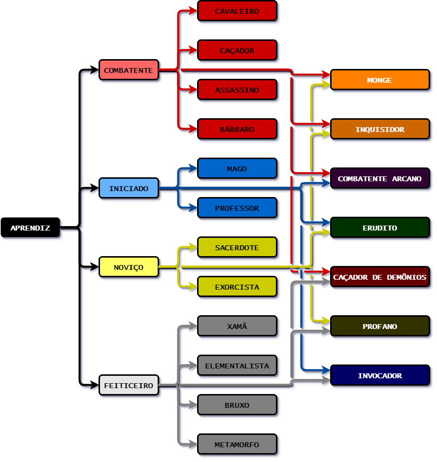

Lâmina do Oculto
Por Wedsney. Agradecimentos especiais a Isaac, Cley e Gabriel pela participação na criação e testes, os reis do pitaco.
Regras Gerais
Mecânica de Combate
Combate
Um combate pode iniciar quando um jogador ou NPC realizar uma ação que afete outro personagem. Ao iniciar um combate, é feito um lançamento de iniciativa. Todos os envolvidos no combate rolam a iniciativa e a ordem de ação segue do maior para o menor valor, com o maior valor sendo o primeiro a agir. Um personagem que fizer um ataque surpresa em outro rola a iniciativa da mesma forma, porém a criatura surpreendida entra na condição de "surpresa".
O combate por turnos não é realista, mas sim uma maneira justa de permitir que todos ajam em um cenário de RPG de mesa. Todos os participantes do combate têm três ações, a menos que alguma regalia ou condição diga o contrário. Cada movimento, ataque, manobra, magia ou milagre realizado consome um certo número de ações, conforme definido pela Habilidade correspondente. A seguir, estão as regras para cada elemento do combate
Turno e Rodada
- Um turno é apenas a vez de um personagem agir. Após agir, o turno do personagem termina e o próximo turno começa. Uma rodada ocorre quando todos os participantes do combate ou cena agem, ou seja, desde o início do turno do primeiro colocado na lista de iniciativa até o fim do turno do último colocado. Cada rodada tem uma duração de 6 segundos para os personagens, mas para os jogadores o combate ocorre em turnos e pode durar o tempo que for necessário.
Iniciativa
- Quando um combate se inicia, ou quando vários personagens tomam uma ação ao mesmo tempo na cena, é necessário fazer um lançamento de iniciativa. Todos os envolvidos no combate ou cena lançam a iniciativa, e uma lista é gerada do valor mais alto para o menor valor. O personagem com o valor mais alto fica em primeiro lugar na lista, enquanto o com o menor valor fica em último. Caso dois personagens lancem o mesmo valor, o que tiver o maior bônus de iniciativa vai na frente. Se mesmo assim os valores forem iguais, o mestre junto aos jogadores decidem como desempatar.
- Bônus de Iniciativa = Agilidade + Percepção
A iniciativa é determinada pela soma das Habilidades de Percepção e Agilidade do personagem. Isso define seu reflexo e velocidade de ação.
Acerto
- Em um combate, quando um personagem realiza um ataque, é feito um lançamento de um D20. Após descobrir o resultado do lançamento, o valor apropriado de Combate é somado ao tipo de ataque. Se houver bônus adicionais devido a condições ou Habilidades, esses valores são somados ao resultado anterior para determinar o Valor de Acerto final. Se o valor de acerto for igual ao valor de defesa do alvo, o dano é reduzido pela metade. Acima do valor de defesa é um acerto e o valor de dano é aplicado no alvo do ataque. Abaixo não acerta e nenhum dano é causado.
- Acerto = combate corpo a corpo /ataque a distância / ataque mágico + valor do D20
Por exemplo: (d20 = 10) + (combate corpo a corpo = 5) + (combate desarmado = 2) + (oração "Abençoar" = 2) = 19.
Acerto Crítico
- O acerto crítico é determinado pela arma ou Regalia de um personagem. O acerto crítico padrão ocorre quando um 20 é obtido em um rolamento de em um dado D20. Algumas Regalias, armas e magias podem reduzir a margem de acerto crítico para números como 19, 18 ou até menos.
Em caso de acerto crítico, o valor total do dano é dobrado. Certas armas, Regalias e magias interagem com o valor de acerto crítico e têm a capacidade de modificá-lo.
- Um ataque que obtém sucesso crítico causa desgaste na armadura do alvo (exceto armaduras naturais). Por outro lado, uma falha crítica (rolamento de 01 em um dado D20) acumula desgaste na arma do atacante. Após 5 falhas consecutivas, a arma sofre uma penalidade de -1 no acerto e no dano (com o valor mínimo de 1 de dano). A partir de 10 falhas, a penalidade aumenta para -2 (com o valor mínimo de 1 de dano) e, ao atingir 20 falhas, a arma tem seu dano reduzido para 1 e a penalidade de acerto se torna -3 (com o valor mínimo de 1 de dano).
Dano
- O dano físico é calculado somando-se o valor de dano da arma ao atributo de Força ou Destreza, de acordo com o tipo de ataque. Pode haver bônus adicionais de dano provenientes de magias, Habilidades ou outras fontes.
Durante um combate, quando um personagem realiza um ataque, é feita uma rolagem no dado D20. Após confirmar que o ataque acertou, o valor de dano da arma é somado ao atributo de Força ou Destreza, dependendo do tipo de ataque. Se houver um ou mais bônus para adicionar devido a condições ou Habilidades, esse valor é somado ao resultado da soma anterior, resultando no valor final do Dano Físico.
Por exemplo: (Força = 5) + (espada longa + encantamentos = 5) = 10.
Caso o personagem esteja realizando um ataque desarmado, e utilizando seu próprio corpo, o dano causado é de 1 ponto de dano concussivo, considerado como o "valor de dano da arma".
- O Dano Mágico é determinado pelo valor especificado na descrição da magia. Em um ataque mágico, o valor de dano é fixo, conforme indicado no texto descritivo da Habilidade. Se a magia exigir um rolamento de ataque, ela pode ser afetada pelas regras de acerto crítico.
- Existem diferentes tipos de dano que podem ocorrer em um combate, além dos danos de arma física (perfurante, cortante e concussivo). Cada tipo de dano possui suas próprias características e interações específicas. Vamos analisar cada um deles:
- É considerado forte quando atinge o elemento terra, resultando em um dano duplicado.
- Por outro lado, é fraco contra o elemento gelo, resultando em apenas metade do dano.
- Caso seja utilizado contra um alvo com o mesmo elemento (fogo contra fogo), o ataque é considerado fraco.
- Possui uma vantagem significativa contra o elemento fogo, causando um dano dobrado.
- No entanto, é fraco contra o elemento raio, resultando em um dano reduzido.
- Quando utilizado contra um alvo com o mesmo elemento (gelo contra gelo), o ataque é considerado fraco.
- É altamente efetivo contra o elemento gelo, resultando em um dano significativo.
- Contudo, é fraco contra o elemento terra, diminuindo sua eficácia.
- Quando utilizado contra um alvo com o mesmo elemento (raio contra raio), o ataque é considerado fraco.
- Tem uma vantagem contra o elemento raio, causando um dano expressivo.
- Porém, é fraco contra o elemento fogo, resultando em uma redução no poder do ataque.
- É forte contra todos os elementos mencionados anteriormente, causando um dano aprimorado.
- No entanto, é fraco contra o elemento sagrado, resultando em uma diminuição na efetividade do ataque.
- Possui uma vantagem contra os elementos sombrio e necrótico, causando um dano amplificado.
- Contudo, é fraco contra os demais elementos mencionados.
- Não apresenta força nem fraqueza específica em relação aos elementos.
- É enfraquecido pelo elemento sagrado, resultando em um dano reduzido.
É importante considerar essas interações ao escolher os tipos de dano durante um combate, pois elas podem ter um impacto significativo na efetividade dos ataques.
Velocidade de Movimento
- A velocidade de movimento de um personagem é determinada pela soma da velocidade base da espécie com o valor relacionado ao valor de Agilidade, conforme indicado na tabela abaixo:
Agilidade | Aumento na Velocidade |
3 pontos em Agilidade | 1,5 m |
6 pontos em Agilidade | 3 m |
9 pontos em Agilidade | 4,5 m |
12 pontos em Agilidade | 6 m |
- Por exemplo, se um personagem possui uma velocidade base de espécie de 6 m e tem 9 pontos em Agilidade, sua velocidade de movimento no combate será de 10,5 m (6 m + 4,5 m).
- É importante observar que o valor máximo para a Agilidade é de 12 pontos, resultando em um aumento máximo de 6 m na velocidade de movimento.
Defesa
- O Valor de Defesa é calculado somando-se 7 ao valor de bônus da Agilidade, à Armadura e ao Escudo (se tiver proficiência). Essa fórmula é aplicável apenas para armaduras leves ou médias. Armaduras pesadas não adicionam o valor da Agilidade, apenas o valor do Escudo e outras fontes.
- Valor de Defesa = 7 + Valor bônus de Agilidade + Armadura + Escudo
- O valor de bônus de Agilidade é determinado pela tabela a seguir:
Agilidade | Valor bônus |
0 pontos em Agilidade | 3 pontos de defesa |
3 pontos em Agilidade
| 4 pontos de defesa |
6 pontos em Agilidade
| 5 pontos de defesa |
12 pontos em Agilidade (max) | 7 pontos de defesa |
- Assim, você pode calcular o Valor de Defesa considerando a Agilidade, a Armadura e o uso de Escudos, levando em conta as especificações mencionadas acima.
Pontos de Vida
- Os Pontos de Vida de um personagem são calculados somando-se o valor inicial da espécie, o valor fornecido por Regalias de classe e o dobro do valor da Habilidade Fortitude.
- Pontos de Vida = Valor da Espécie + Valor por Regalia de Classe + 2 x Fortitude
Pontos de Magia
- Os Pontos de Magia são determinados pelo valor fornecido por Regalias de classe, somado ao valor da Habilidade Arcanismo.
- Pontos de Magia = Valor por Regalia de Classe + Arcanismo
Pontos de Estamina:
- Os Pontos de Estamina são calculados somando-se o valor fornecido por Regalias de classe ao valor da Habilidade Atletismo.
- Pontos de Estamina = Valor por Regalia de Classe + Atletismo
Proficiência em armas
- Quando um personagem realiza um ataque com uma arma sem ter proficiência, não são adicionados os bônus de combate correspondentes (corpo a corpo, distância, mágico). Nesse caso, é utilizado apenas o valor rolado em um dado D20 para determinar a precisão do ataque. O dano causado será apenas o dano base da arma, sem nenhum bônus adicional.
- Ataques com armas em que é proficiente não gera nenhuma das implicações acima e as regras de dano e acerto se aplicam normalmente.
Poções de Recuperação
- Cada poção consumida por um personagem irá sempre recuperar o mesmo valor indicado, a menos que alguma regalia ou condição especifique o contrário.
Combate Montado
- Durante o combate, uma criatura tem a capacidade de montar outra criatura, desde que esta esteja disposta e quem for montar não seja maior do que a montaria. A criatura montada se desloca de acordo com a velocidade de movimento da montaria.
- Caso a montaria possua uma forma de ataque, o cavaleiro pode utilizar o ataque da montaria como parte de sua ação durante seu turno.
- É importante observar que, ao utilizar uma montaria que não esteja treinada, é necessário realizar um teste de Lidar com Animais com uma dificuldade inicial de 10 a cada movimento ou dano sofrido pela montaria. A cada novo teste realizado durante o mesmo combate, a dificuldade aumenta em +1. No entanto, ao finalizar o combate, não é mais necessário realizar testes a cada movimento e a dificuldade retorna ao valor inicial.
Alcance de Ameaça
- O alcance de ameaça refere-se ao alcance dos ataques corpo a corpo que uma criatura pode realizar. Normalmente, o alcance de ameaça é de 1,5 metros. No entanto, algumas armas podem ter um alcance maior, podendo chegar a 3 metros, e com o auxílio de certas Habilidades, pode-se atingir um alcance de até 4,5 metros. É importante ressaltar que personagens que utilizam armas de ataque a distância possuem um alcance de ameaça de 1,5 metros.
Ações
- Durante seu turno, todo personagem tem a capacidade de realizar três ações. As opções de ações disponíveis podem variar e são definidas de acordo com as regras do jogo. Recomenda-se consultar a seção específica sobre ações para obter informações detalhadas sobre as ações que podem ser tomadas.
Atenção: Existem várias ações, magias, manobras, milagres e feitiços que causam algum tipo de efeito em seu alvo, esses efeitos são chamados de condições. Estas condições são efeitos que afetam valores de Habilidade dentro e fora de combate. Para saber exatamente o que cada uma faz vá ao tópico de Condições e leia com atenção Fique atento com os seguintes termos :
- À Beira Da Morte
- Aterrorizado
- Cego
- Cansado
- Congelando
- Deitado
- Devagar
- Envenenado
- Escondido
- Enraizado
- Enfraquecido
- Escurecido
- Esmagado
- Esgotado
- Esquecido
- Esquivando
- Obscurecido
- Paralisado
- Queimando
- Restringido
- Sangrando
- Surdo
- Surpreso
Abrir Fechadura (Custa duas ações)
- Uma criatura proficiente com ferramentas de ladrão que as tenha em mãos, pode tentar arrombar uma fechadura usando suas Habilidades. A dificuldade dessa ação depende da complexidade da fechadura.
- Alternativamente, um personagem pode tentar arrombar a porta com um golpe poderoso ou magia.
- Uma criatura pode tentar agarrar seu oponente realizando um teste de Força contra a Força do adversário. Se for bem-sucedida, a criatura consegue agarrar a outra, restringindo-a. A velocidade de movimento da criatura realizando a ação é reduzida pela metade. Para escapar de um ataque de agarre, a criatura deve usar a ação "Escapar". Se uma criatura falhar em agarrar seu oponente e tentar novamente no mesmo turno, sofrerá uma penalidade cumulativa de 1 ponto na próxima tentativa. No entanto, não é possível agarrar uma criatura que seja duas vezes maior em tamanho.
- Uma criatura pode realizar um ataque como ação. Cada criatura pode atacar apenas uma vez por ação, a menos que possua uma regalia que permita o contrário. A cada ataque adicional realizado na mesma ação, o atacante sofre uma penalidade cumulativa de 5 pontos, com um máximo de 10. Por exemplo, se uma criatura fizer três ataques em sequência, o primeiro será normal, o segundo terá uma penalidade de -5 e o terceiro terá uma penalidade de -10. Essa penalidade também se acumula se a criatura realizar múltiplos ataques como parte da mesma ação, a menos que uma regalia especifique o contrário. É importante destacar que Regalias que permitam realizar um ataque como parte de uma Habilidade também sofrem essa penalidade.
- Um personagem pode, ao fazer um teste de percepção, tentar localizar visualmente um objeto, rota ou criatura sem interagir diretamente com o ambiente.
- Uma criatura pode se abrigar atrás de obstáculos físicos no ambiente em que se encontra para se proteger de projéteis. A barreira física deve ser resistente o suficiente para deter os projéteis. Existem três tipos de cobertura:
- Uma estrutura grande o bastante para proteger todo o corpo de uma criatura. Quando uma criatura está em cobertura total, ela fica obscurecida e não pode ser alvejada por ataques de longa distância, mágicos ou físicos.
- Um objeto ou estrutura que protege 3/4 do corpo de uma criatura. Quando em 3/4 de cobertura, a criatura recebe um bônus de 2 pontos na sua defesa.
- Um objeto ou estrutura que protege metade do corpo de uma criatura. Quando em meia cobertura, a criatura recebe um bônus de 1 ponto na sua defesa.
- Uma criatura que possui um companheiro animal ou que consegue tomar controle de um através de magia ou feitiço pode comandá-lo com esta ação. É possível ordenar ao animal que ataque, recue, avance, esconda-se, mova-se, interaja com objetos (se possível), distraia ou derrube (se possível).
- Uma criatura pode distrair outra para ajudar seus aliados. Para isso, a criatura deve realizar uma ação que chame a atenção das outras criaturas para si, como acender um fogo, gritar algo pessoal, fazer uma provocação ou até mesmo fingir uma morte dramática. Para distrair um inimigo, a criatura deve fazer um teste de Enganação, Persuasão ou Performance que supere o teste de intuição do inimigo. A criatura distraída sofre uma penalidade de 2 pontos em testes de ataque e percepção até o final de seu próximo turno.
- Uma criatura pode tentar derrubar seu oponente. Para isso, deve fazer um teste de Força ou Destreza contra a Força ou Destreza do adversário. Se for bem-sucedida, a criatura consegue derrubar o oponente, que fica deitado. Se uma criatura falhar em derrubar seu oponente e tentar novamente no mesmo turno, sofrerá uma penalidade cumulativa de 1 ponto na próxima tentativa. No entanto, não é possível derrubar uma criatura duas vezes maior ou que possua mais de duas pernas, nem uma criatura sem pernas.
- Uma criatura pode tentar desarmar seu oponente, realizando um teste de Destreza contra a Destreza do adversário. Se for bem-sucedida, a criatura consegue desarmar o oponente, fazendo-o soltar sua arma. Não é possível desarmar armas naturais ou aquelas presas ao corpo do inimigo.
- Uma criatura pode tentar empurrar seu oponente, realizando um teste de Força contra a Força do adversário. Se for bem-sucedida, a criatura empurra o oponente para trás ou para o lado, em uma distância de 1,5 metros, desde que não haja obstáculos físicos ou outras criaturas no caminho. Se a criatura falhar em empurrar o oponente e tentar novamente no mesmo turno, sofrerá uma penalidade de 1 ponto na próxima tentativa. Não é possível empurrar uma criatura que seja 2 tamanhos maior ou esteja enraizada no chão.
- Uma criatura agarrada pode tentar escapar realizando um teste de destreza contra o valor de sucesso do agarrão.
- Durante o combate, uma criatura pode se esconder das outras. Ao ficar obscurecida pela falta de luz, fumaça ou outras condições semelhantes, a criatura pode fazer um teste de furtividade. O valor desse teste será determinado pelo mestre. Se for bem-sucedida, a criatura fica Escondida. É possível fazer mais de uma tentativa de esconder-se por turno, mas a criatura sofrerá uma penalidade cumulativa de 1 ponto por cada tentativa adicional.
- Durante o combate, uma criatura pode esconder um objeto das outras. Se o objeto puder ser guardado em sua roupa, a criatura pode fazer um teste de furtividade. O valor desse teste será determinado pelo mestre. Se for bem-sucedida, as outras criaturas não perceberão que a criatura está com o objeto, embora possam suspeitar. Se o objeto for uma arma e o teste for um sucesso, a criatura ganha 1 ponto de Acerto ao realizar um ataque. É possível fazer mais de uma tentativa de esconder o objeto por turno, mas a criatura sofrerá uma penalidade cumulativa de 1 ponto por cada tentativa adicional.
- Uma criatura pode mover-se em modo de esgueirar por um ambiente, desde que esteja obscurecido ou escondido. A velocidade de movimento ao esgueirar-se sofre uma penalidade de 1,5 metros.
- Uma criatura que esteja em combate corpo a corpo com uma ou mais criaturas pode fazer uma finta para ganhar 1 ponto adicional de acerto em seu próximo ataque corpo a corpo. O valor bônus de uma finta se aplica em cima de todos os outros bônus que um personagem possa acumular. Somente uma tentativa de finta pode ser feita por rodada.
- Uma criatura que esteja na condição de escondida ou obscurecida pode tentar furtar um item ou posse visível de outra criatura. Para isso, deve passar em um teste de Destreza contra a Percepção do adversário.
- Uma criatura realiza uma interação com um objeto simples, como:
- Sacar uma arma ou escudo
- Abrir uma porta
- Ativar um item simples, mágico ou não
- Retirar uma peça de roupa que não seja difícil de tirar
- Guardar uma arma ou escudo
- Tomar uma poção
- Entregar uma poção
- Uma criatura pode tentar intimidar um inimigo por meio de fala e/ou ações. O alvo deve fazer um teste de Intuição contra o teste de Intimidação do intimidador. Se o intimidador for bem-sucedido, o alvo ficará aterrorizado até o fim de seu próximo turno.
- Uma criatura usa sua ação para se levantar do chão.
- Uma criatura pode tentar compreender uma situação ou detectar emoções ou expressões específicas em uma pessoa, como medo ou mentira. A criatura que está tentando ler o ambiente deve fazer um teste de Intuição contra uma Habilidade Social correspondente ao que o alvo está demonstrando, como Enganação para mentiras, Persuasão para a verdade, Sedução para seduzir, etc.
- Uma criatura monta em uma montaria ou sobe em um veículo aberto.
- Uma criatura pode pedir um item ou algo que esteja em posse de um aliado, desde que seja algo que o aliado possa entregar facilmente. O aliado pode esperar seu turno para interagir com o objeto ou usar sua reação para entregá-lo imediatamente.
- Uma criatura pode realizar uma performance artística pequena ou iniciar uma apresentação prolongada. Essa performance pode ser usada para acalmar os ânimos de adversários com os quais prefere não lutar ou para inspirar seus aliados. Uma criatura que está performando pode atacar caso tenha uma mão livre, mas se estiver tentando apaziguar uma luta, falhará automaticamente sua performance.
- Para tentar acalmar adversários, deve fazer um teste de Performance contra a Intuição do adversário. Caso o adversário falhe no teste, o mestre determina o resultado da mudança de humor. É possível encerrar uma luta ou apenas interromper o avanço do adversário. Para inspirar um de seus aliados dentro de um alcance de 30 metros, a criatura deve fazer um teste de Performance. Dependendo do valor obtido no teste, são gerados bônus em todos os lançamentos de Habilidade, incluindo acertos.
- A tabela a seguir mostra os bônus correspondentes a cada faixa de valor obtido no lançamento de Performance:
Rolamento de Performance | Bônus para aliados |
15 a 19 | 1 |
20 a 24 | 2 |
25 a 29 | 3 |
30 ou mais | 4 |
Preparar (Custa duas Ações)
- Uma criatura pode preparar uma ação com um gatilho para ativá-la. Caso o gatilho ocorra até o próximo turno da criatura, ela pode usar a ação preparada. Caso contrário, a ação não ocorre.
- Uma criatura pode tentar fazer um teste de História, Ocultismo, Teologia, Religião, Tecnologia, Jurisprudência ou Arcanismo para recordar de um conhecimento relacionado ao que deseja saber.
- Uma criatura pode prestar primeiros socorros em outra criatura que esteja À Beira da Morte. Para isso, é necessário ter um kit de primeiros socorros ou de herbalista. Essa ação permite estabilizar a criatura e impedir que ela morra. Os detalhes específicos sobre como realizar os primeiros socorros e os efeitos exatos serão determinados pelo pelo mestre.
- Uma criatura pode aplicar um antídoto em outra criatura que esteja Envenenada. Para isso, é necessário ter um frasco de antídoto adequado. Essa ação permite neutralizar os efeitos do veneno e curar a criatura envenenada. Os detalhes sobre os efeitos exatos do antídoto e os procedimentos para tratamento serão determinados pelo sistema de jogo ou pelo mestre.
- Uma criatura pode correr o máximo que puder durante o tempo de uma rodada. Com essa ação de turno completo, a criatura pode mover até 4 vezes o valor de sua Velocidade de Movimento. No entanto, é importante observar que correr em alta velocidade pode impor penalidades em certas situações, como na capacidade de esquivar de ataques ou na realização de outras ações.
Desabilitar / Habilitar Dispositivo
- Uma criatura pode tentar desabilitar uma armadilha ou trabalhar em um item mais complexo que requer mais tempo e Habilidade do que simplesmente interagir com o objeto. Essa ação de turno completo permite à criatura utilizar suas Habilidades e ferramentas apropriadas para desativar o dispositivo ou realizar a manutenção necessária para funcionar e ativá-lo.
- Ações livres não contam como ação no contexto de ter a Habilidade de utilizar outra ação ao mesmo tempo que outra.
- Uma criatura pode se deitar no chão como uma ação livre e entra na condição deitado. Isso pode ser útil para se esconder, se proteger de ataques ou descansar em combate. Quando deitada, a criatura tem certas vantagens e desvantagens, dependendo das circunstâncias e das regras do sistema em que está jogando. Por exemplo, em alguns sistemas, estar deitado pode fornecer bônus na defesa contra ataques à distância, mas também pode tornar a criatura mais vulnerável a ataques corpo a corpo. A criatura pode se levantar novamente usando uma ação de movimento em seu próximo turno.
- Uma criatura pode soltar um objeto que esteja segurando em suas mãos, liberando-o de sua posse. Ao soltar o objeto, ele cai em algum lugar aleatório até 1,5 metros da criatura. Essa ação livre pode ser realizada para abandonar um item, permitir o uso de outras ações ou até mesmo para descartar um objeto indesejado.
- Uma criatura pode optar por adiar seu turno para o fim da ordem de iniciativa na rodada atual. Isso significa que a criatura agirá depois de todos os outros personagens terem realizado suas ações naquele turno. Na rodada seguinte, a criatura retorna à sua posição original na ordem de iniciativa. Essa ação livre pode ser útil para avaliar a situação, observar as ações dos oponentes antes de decidir sua própria ação ou coordenar estratégias com aliados. No entanto, é importante lembrar que adiar o turno não permite que a criatura tome uma ação adicional, apenas altera o momento em que ela irá agir na iniciativa.
Reações
- Cada personagem possui apenas uma reação disponível até que alguma regalia ou condição específica indique o contrário. As reações são ações que podem ser tomadas em resposta a certas circunstâncias ou eventos durante o turno de outro personagem durante o combate. É importante lembrar que somente uma reação pode ser realizada por rodada, a menos que alguma regalia ou condição permita o contrário.
- Uma criatura pode usar sua reação para atenuar o impacto de uma queda, reduzindo o dano sofrido pela metade, com um mínimo de 1 ponto de dano. Para ganhar essa redução de dano, a criatura deve passar em um teste de acrobacia com dificuldade determinado pelo mestre.
Altura | Dano de queda |
3 m | 1 ponto |
6 m | 2 pontos |
9 m | 4 pontos |
12 m | 6 pontos |
15 m | 8 pontos |
18 m | 10 pontos |
… | … |
450 m | 300 pontos |
A tabela fornecida é uma referência para o dano de queda em relação à altura da queda, onde cada altura corresponde a uma quantidade específica de dano. É importante lembrar que essa reação só pode ser usada quando a criatura está consciente e capaz de reagir à queda.
- Uma criatura pode usar sua reação para ajudar um aliado em um teste de Habilidade que não seja um ataque. A criatura deve ter pelo menos um ponto na Habilidade em questão para poder ajudar. O mestre determinará o valor da ajuda fornecida, mas normalmente a criatura ajudada ganhará um bônus de 1 ponto em seu rolamento. Essa reação é útil para dar suporte a um aliado em momentos cruciais e aumentar suas chances de sucesso.
- Uma criatura que esteja caindo de alguma altura ou sendo arremessada por uma força poderosa pode tentar se agarrar a uma beirada, coluna ou qualquer objeto firme que possa sustentar seu corpo. Essa reação permite que a criatura faça um teste de agarrar-se, geralmente usando a Habilidade de Atletismo ou reflexo (Agilidade), para determinar se ela consegue se segurar e evitar a queda. O sucesso nesse teste pode evitar que a criatura sofra o dano da queda ou permitir que ela reduza o dano de alguma forma. A dificuldade do teste e as possíveis consequências de falha são determinadas pelo mestre, com base nas circunstâncias e na situação em jogo. Essa reação é uma tentativa desesperada de evitar uma queda perigosa ou até mesmo mortal.
Movimento
- O movimento é uma ação que uma criatura pode tomar durante seu turno. Ao utilizar a ação de movimentar, a criatura pode avançar ou recuar em uma distância igual ou menor à sua velocidade de movimento. Se uma criatura optar por movimentar apenas metade de sua velocidade, realizar um ataque e depois recuar, será necessário utilizar uma ação para avançar, outra ação para realizar o ataque e uma última ação para recuar.
É importante destacar que uma criatura gasta o dobro de movimento ao passar por uma área caracterizada como terreno difícil. Essa penalidade de movimento se acumula com outras penalidades existentes. Além disso, uma criatura não pode atravessar o espaço ocupado por um inimigo.
- Uma criatura pode se mover pelo espaço ocupado por aliados sem restrições. No entanto, quando se trata de se mover por criaturas hostis, é permitido apenas se a diferença de tamanho entre elas for de pelo menos duas categorias (sendo considerado terreno difícil).
É importante mencionar que ao sair do alcance de um inimigo, isso pode provocar um ataque de oportunidade do inimigo, se este tiver a Habilidade de realizar ataques de oportunidade, contra a criatura em movimento.
- No caso de estar utilizando armaduras pesadas, há uma penalidade no movimento, que pode reduzir a velocidade de deslocamento da criatura em 1,5 metros.
- Uma criatura usa uma ação para se movimentar por uma distância igual ou menor ao seu valor de Velocidade de Movimento.
- Uma criatura usa uma ação para movimentar uma montaria por uma distância igual ou menor ao valor de Velocidade de Movimento da montaria.
- Uma criatura usa uma ação para voar por uma distância igual ou menor ao seu valor de Velocidade de Movimento. Esse valor pode ser diferente apenas se alguma Habilidade ou característica especificar o contrário.
- Algumas criaturas possuem a Habilidade de realizar ataques de oportunidade quando uma criatura se afasta delas. No entanto, uma criatura pode recuar cuidadosamente por até 1,5 metros sem sofrer ataques de oportunidade.
- Uma criatura usa uma ação para escalar uma inclinação, desde que seja possível fazê-lo, por uma distância igual ou menor à metade do seu valor de Velocidade de Movimento. Caso seja uma escalada difícil, a criatura deve fazer um teste de Atletismo.
- Uma criatura usa uma ação para nadar por uma distância igual ou menor à metade do seu valor de Velocidade de Movimento. Esse valor pode ser diferente apenas se alguma Habilidade ou característica especificar o contrário. Se for uma natação difícil, a criatura deve fazer um teste de Atletismo.
- Uma criatura deitada pode rastejar por uma distância igual a um terço do seu valor de Velocidade de Movimento, arredondado para cima.
- Uma criatura pode realizar um salto horizontal com uma distância, em metros, igual ou menor à metade do seu valor de Atletismo, e um salto vertical com uma distância, em metros, igual ou menor a um terço do seu valor de Atletismo, arredondado para cima. A menor distância para o salto horizontal é de 2 metros e para o salto vertical é de 1 metro.
Atravessar Acrobaticamente
- Uma criatura que tenta atravessar uma corda bamba, correr em um telhado ou qualquer outra ação que envolva andar ou correr em superfícies difíceis de se equilibrar ou evitar cair precisa realizar um teste de Acrobacia. A dificuldade deste teste será determinada pelo mestre. Em caso de falha, a criatura pode cair ou sofrer alguma consequência relacionada à situação.
Tamanho
Uma criatura possui um tamanho determinado. Esse tamanho enquadra um grupo de valores igual a tabela a seguir:
Tamanho | Centímetros em Altura |
Minúsculo | 0 a 60 cm |
Pequeno | 61 a 130 cm |
Médio | 131 a 220 cm |
Grande | 221 a 350 cm |
Muito grande | 351 a 600 cm |
Gigante | 601 a 1200 cm |
Colossal | maior que 1201 cm |
Tamanho vs Carga
Uma criatura possui um tamanho determinado. Esse tamanho influencia na sua capacidade de carga junto com o valor de força, confira como a seguir:
Tamanho | Capacidade de Carga |
Minúsculo | Igual o valor de força em quilos( mínimo de 1) |
Pequeno | 10 vezes valor de força em quilos( mínimo de 20) |
Médio | 25 vezes valor de força em quilos( mínimo de 50) |
Grande | 50 vezes valor de força em quilos( mínimo de 100) |
Muito grande | 70 vezes valor de força em quilos( mínimo de 200) |
Gigante | 150 vezes valor de força em quilos( mínimo de 300) |
Colossal | 300 vezes valor de força em quilos( mínimo de 800) |
Tamanho vs Arma
- Criaturas conseguem usar todas as armas, porém algumas precisam adaptar para o seu tamanho, para que possam usar. Armas culturais de uma espécie não sofrem essa penalidade (exemplo: anão utilizando o Machado Anão). Uma arma adaptada para o tamanho pequeno ou minúsculo custa metade do preço, e o dobro para muito grande ou acima.
Tamanho | Consegue usar |
Minúsculo | Armas adaptadas -2 de dano (mínimo de 1) |
Pequeno | Armas adaptadas -1 de dano (mínimo de 1) |
Médio | armas padrão |
Grande | armas padrão |
Muito grande | Armas adaptadas +1 de dano |
Gigante | Armas adaptadas +3 de dano |
Colossal | Armas adaptadas +6 de dano |
Armas de Recarga
- As armas de recarga requerem uma ação para serem recarregadas. São consideradas armas de recarga:
- Bestas
- Armas de fogo
- Catapulta de Braço
Dinheiro
- O dinheiro no jogo é dividido em diferentes moedas: platina, ouro (M.O.), prata (M.P.) e cobre (M.C.). A taxa de conversão padrão é de 10 para 1, o que significa que a cada 10 moedas de cobre, temos 1 moeda de prata, a cada 10 moedas de prata, temos 1 moeda de ouro, e a cada 10 moedas de ouro, temos 1 moeda de platina.
Essa taxa de conversão é utilizada para facilitar as transações e estimar o valor relativo das diferentes moedas em termos de poder aquisitivo dentro do jogo. Portanto, ao realizar trocas ou cálculos envolvendo dinheiro, é importante ter em mente essa taxa de conversão de 10 para 1.
Bônus ou Penalidade de Acerto e Defesa
- Durante o combate, uma criatura pode receber bônus ou penalidades de acerto e defesa. No entanto, esses bônus ou penalidades têm um limite. A criatura receberá apenas o maior bônus ou penalidade de cada tipo, descartando os demais.
- Para calcular o bônus de acerto ou defesa, devemos considerar os seguintes fatores:
- Maior bônus proveniente de manobras de combate
- Maior bônus proveniente de magias
- Maior bônus proveniente de condições
- Maior bônus proveniente de milagres
- Maior bônus proveniente de feitiçaria
- Nesse cálculo, selecionamos apenas o maior bônus de cada tipo e os somamos para obter o bônus total de acerto ou defesa.
- Da mesma forma, para calcular as penalidades, utilizamos o seguinte procedimento:
- Maior penalidade proveniente de manobras de combate
- Maior penalidade proveniente de magias
- Maior penalidade proveniente de condições
- Maior penalidade proveniente de milagres
- Penalidade proveniente de feitiçaria (se houver)
- Selecionamos apenas a maior penalidade de cada tipo e as somamos para obter a penalidade total de acerto ou defesa.
Dessa forma, garantimos que a criatura receba apenas o maior bônus ou penalidade de qualquer fonte, proporcionando um cálculo mais simplificado e eficiente.
Bônus ou Penalidade de Acerto e Defesa (Opcional)
- Em combate uma criatura pode receber apenas um bônus ou penalidade de acerto ou defesa. Uma criatura vai receber sempre o maior bônus ou penalidade de qualquer fonte, e somente ele.
Itens Mágicos
- Uma criatura pode equipar até 3 acessórios mágicos, 2 armas mágicas e 1 armadura ou escudo mágico simultaneamente. No caso de armaduras encantadas, consideramos o peitoral, as pernas e os braços como uma única peça.
Vulnerabilidade e Resistência
- Uma criatura que possui resistência a um determinado tipo de dano recebe apenas metade do dano normalmente causado por esse tipo de dano.
- Por outro lado, uma criatura que possui vulnerabilidade a um determinado tipo de dano sofre o dobro do dano normalmente causado por esse tipo de dano.
Essas características de vulnerabilidade e resistência permitem que certas criaturas tenham uma maior ou menor capacidade de lidar com diferentes tipos de danos, adicionando um elemento estratégico ao combate e influenciando as decisões táticas dos jogadores.
- Quando uma criatura se depara com uma armadilha, ela pode reagir tentando evitá-la através de um teste de Atletismo ou Acrobacia, dependendo da natureza da armadilha. A dificuldade do teste e o tipo de teste a ser realizado variam de acordo com o tipo de armadilha em questão.
- As armadilhas podem ser descobertas por meio de testes da Habilidade Armadilhas. Algumas armadilhas podem possuir mecanismos adicionais que precisam ser resolvidos para torná-las seguras. Nesses casos, podem ser necessários mais testes de Habilidade para desarmá-las completamente.
- A Habilidade do personagem em detectar e desarmar armadilhas desempenha um papel crucial na exploração de ambientes perigosos, garantindo a segurança do grupo e evitando possíveis danos ou efeitos negativos causados pelas armadilhas.
- Armadilhas que façam a pessoa cair em um buraco ou que realize disparos contra o alvo podem ser evitadas com um teste de reflexo(Agilidade).
- As criaturas têm a capacidade de realizar rituais que aprenderam por meio de Regalias ou instruções adquiridas ao longo de suas jornadas. Esses rituais podem ser realizados individualmente ou em grupo, embora alguns possam exigir a participação de uma ou mais criaturas específicas. É importante observar que todos os rituais têm uma chance mínima de falha de 5%, exceto aqueles que buscam efeitos perpétuos.
Um rolamento de um dado D100 ou um dado D20 é feito para determinar o sucesso do ritual. Caso o ritual seja realizado por pelo menos duas pessoas, a chance de falha é eliminada. Além disso, para cada pessoa adicional além da segunda, todos os participantes recebem um bônus de 5 pontos de vida temporária. Essa vida temporária dura por uma hora após a conclusão do ritual.
- A realização de rituais pode ser uma forma poderosa de obter benefícios, desencadear efeitos mágicos e fortalecer laços entre as criaturas envolvidas. No entanto, é importante seguir as instruções e requisitos específicos de cada ritual para garantir seu sucesso e evitar possíveis consequências indesejadas.
- Luz e visão desempenham um papel importante na percepção e exploração do mundo. Aqui estão algumas considerações sobre luz e visão em um ambiente:
- Em áreas iluminadas, a visão é clara e é possível enxergar com detalhes e clareza.
- Em áreas de meia luz, a visão é ligeiramente obscurecida, tornando o ambiente menos nítido. Rolamentos de Habilidades que envolvem ataques, investigação, rastreamento, percepção e leitura sofrem uma penalidade de 1 ponto no valor final. No entanto, uma criatura com visão no escuro enxerga como se estivesse em luz completa em um ambiente de meia luz.
- Em áreas de escuridão, não é possível enxergar, a menos que a criatura possua alguma forma de visão especial, como visão no escuro. Uma criatura sem visão no escuro é considerada cega na escuridão. No entanto, uma criatura com visão no escuro enxerga como se estivesse em um ambiente de meia luz.
- Criaturas com visão no escuro podem enxergar na escuridão como se estivessem em meia luz, e em áreas de meia luz como se estivessem em luz completa. Cada criatura com visão no escuro possui um alcance específico para essa visão. Ao receber uma regalia ou Habilidade que concede visão no escuro, é fornecido um valor de alcance que se aplica tanto a áreas de meia luz quanto à escuridão. Algumas Regalias podem estender esse alcance além do valor inicial, mas essa extensão se aplica apenas à escuridão.
Descanso
- Descanso é uma parte essencial do jogo e permite que as criaturas se recuperem e restaurem suas energias. Existem dois tipos de descanso: curto e longo.
- Um descanso curto requer 1 hora ininterrupta e deve ser realizado a cada 12 horas. Durante um descanso curto, uma criatura recupera todos os seus Pontos de Estamina, um terço dos seus Pontos de Magia e um terço dos seus Pontos de Vida.
- Um descanso longo requer 6 horas ininterruptas de sono e deve ser realizado a cada 24 horas. Durante um descanso longo, uma criatura recupera todos os seus Pontos de Estamina, todos os Pontos de Magia gastos e todos os Pontos de Vida perdidos.
- Para obter os benefícios de um descanso longo, é necessário ter equipamentos de acampamento adequados, como um saco de dormir, além de ração e água. No entanto, estar em um ambiente seguro, como uma caverna rasa com a entrada bloqueada ou uma construção civilizada (como casas, tabernas ou templos), elimina a necessidade de equipamentos de acampamento, embora a ração e a água ainda sejam necessárias. É importante garantir que haja pelo menos uma ração diária e 1 litro de água disponível para um descanso adequado.
- Se uma criatura passar dois dias consecutivos sem realizar um descanso longo, ela é considerada cansada. A cada dois dias adicionais sem um descanso longo, o nível de cansaço aumenta. Cada descanso longo realizado retira um nível de cansaço, permitindo que a criatura se recupere totalmente.
- O descanso adequado é fundamental para a saúde e o bem-estar das criaturas, garantindo que elas estejam prontas para enfrentar os desafios que aguardam.
Condições
Lembrete: Apenas a maior penalidade ou bônus de acerto ou defesa é aplicada em uma criatura. Os outros efeitos são sim cumulativos.
- Uma criatura atordoada não pode se mover, reagir, conjurar magias, usar feitiços e tem sua defesa reduzida em 2 pontos.
- Uma criatura cega não consegue ver o ambiente ou outras criaturas ao seu redor, dificultando sua navegação e percepção. Testes de Habilidades que envolvem atacar, investigar, rastrear, perceber e ler sofrem uma penalidade de 3 pontos. Ao lutar contra um inimigo cego, o atacante é considerado obscurecido.
- Uma criatura envenenada sofre dano de veneno a cada turno, até que o efeito acabe ou seja utilizado um antídoto. Além disso, dependendo do veneno utilizado, a criatura pode sofrer outros efeitos, que também terminam com a duração do veneno ou ao utilizar um antídoto.
- A criatura tem seu movimento reduzido a zero e todos os ataques sofrem uma penalidade de 1 ponto em seu valor de acerto. Além disso, se uma criatura restringir fisicamente a outra, esta perde uma ação por turno, a menos que consiga escapar ou o efeito termine.
- Uma criatura está deitada quando seu corpo está na posição horizontal em contato com uma superfície paralela. Um personagem deitado sofre uma penalidade de 1 ponto em seu valor de acerto para todos os ataques. Para levantar, um personagem deitado precisa usar uma ação de movimento. Outros personagens têm um bônus de 1 ponto para acertar um personagem deitado em um ataque corpo a corpo e uma penalidade de 1 ponto para ataques à distância.
- Uma criatura incapacitada cai ao chão na condição deitada e fica atordoada.
- Uma criatura surda perde a capacidade de compreender ou perceber informações por meio do som. Se uma Habilidade requer que o personagem ouça para obter benefícios, um personagem surdo não os recebe. Um personagem surdo sofre uma penalidade de -5 em testes de percepção que envolvam som. Se a criatura também estiver cega, sofre uma penalidade adicional de -10 em qualquer teste de Habilidade.
- Uma criatura entra na condição de sangramento se sofrer dano de certas armas ou Habilidades. Nessa condição, a criatura sofre 2 pontos de dano ao iniciar seu turno, até ser tratada , com teste de medicina 12, ou curada por magia.
- Uma criatura paralisada não pode tomar ações ou reações. Todo ataque corpo a corpo contra uma criatura paralisada recebe 2 pontos extras de acerto e dano.
- Uma criatura aterrorizada sofre uma penalidade de -1 em todos os testes de Habilidade que realizar e é obrigada a gastar sua primeira ação em cada turno para se mover o mais longe possível da fonte de terror, até que a condição termine ou o alvo seja incapacitado.
- Uma criatura que está à beira da morte está gravemente ferida e pode estar em perigo de morrer. Normalmente atinge esse estado quando seus pontos de vida caem abaixo de zero. Na condição de estar à beira da morte, a criatura está incapacitada, cai na condição deitada e deve fazer testes de morte e estabilização.
Durante o turno de uma criatura à beira da morte, ela deve fazer um teste de morte. O teste de morte é um lançamento de um dado de 20 faces (d20) com as seguintes regras:
- Se o resultado do teste de morte for 10 ou mais, a criatura tem sucesso em um teste de estabilização e não sofre mais danos.
- Se o resultado do teste de morte for 9 ou menos, a criatura falha em um teste de estabilização.
- Se o resultado do teste de morte for 1, é considerado uma falha crítica, e a criatura sofre dois fracassos de estabilização.
- Se o resultado do teste de morte for 20, é considerado um sucesso crítico, e a criatura estabiliza automaticamente e recupera um ponto de vida.
- Uma criatura à beira da morte pode receber cura mágica ou estabilização de outro personagem. Se a criatura receber qualquer cura, ela recupera pontos de vida e não precisa fazer mais testes de morte. Se a criatura for estabilizada por outra pessoa usando uma ação de estabilização, ela não precisa mais fazer testes de morte, mas ainda estará incapacitada e à beira da morte até receber cura adequada.
- Caso a criatura falhe em três testes de morte, ela morre. Se a criatura obtiver cinco sucessos, ela estabiliza e não precisa fazer mais testes de morte. A estabilização também pode ocorrer se a criatura receber cura ou estabilização de outra fonte.
- Uma criatura na condição de congelamento passa por uma sequência de eventos progressivos. Para sair dessa condição, é preciso estar ao alcance de uma forte fonte de calor por uma rodada inteira, como uma grande fogueira, ser colocado em chamas ou estar próximo de uma fonte de lava. Outra criatura também pode ajudar com magias, milagres, feitiços ou a criatura na condição pode esperar até que o efeito acabe, caso não seja fatal. À medida que as rodadas passam, a criatura congela cada vez mais e sofre penalidades, conforme descrito abaixo:
- 1ª Rodada: Redução de 1,5 metros na velocidade de movimento.
- 2ª Rodada: Efeito anterior + penalidade de 1 ponto no valor de acerto.
- 3ª Rodada: Redução de 3 metros na velocidade de movimento + penalidade de 1 ponto no valor de acerto.
- 4ª Rodada: Redução de 3 metros na velocidade de movimento + penalidade de 1 ponto no valor de acerto + uma ação a menos por turno.
- 5ª Rodada: Redução de 4,5 metros na velocidade de movimento + penalidade de 2 pontos no valor de acerto + uma ação a menos por turno.
- 6ª Rodada: Redução de 6 metros na velocidade de movimento + penalidade de 2 pontos no valor de acerto + duas ações a menos por turno.
- 7ª Rodada: Redução de 7,5 metros na velocidade de movimento + penalidade de 2 pontos no valor de acerto + duas ações a menos por turno.
- 8ª Rodada: Redução de 9 metros na velocidade de movimento + penalidade de 3 pontos no valor de acerto + duas ações a menos por turno.
- 9ª Rodada: A criatura entra na condição de Atordoado.
- 15ª Rodada: A criatura entra na condição de Paralisado.
- 20ª Rodada: A criatura entra na condição de À Beira da Morte.
- Nível 1: Uma criatura queimando está ativamente em chamas ou em contato com algum material incandescente. Essa criatura recebe 1 ponto de dano a cada rodada em que fica em contato com fogo, como mencionado anteriormente. Para sair dessa condição, o personagem deve apagar as chamas de alguma forma, como jogar água, entrar na água ou rolar no chão, ou deve sair do contato com o material incandescente.
- Nível 2: Uma criatura queimando está ativamente em chamas ou em contato com algum material incandescente. Essa criatura recebe 3 pontos de dano a cada rodada em que fica em contato com fogo, como mencionado anteriormente. Para sair dessa condição, o personagem deve apagar as chamas de alguma forma, como jogar água, entrar na água ou rolar no chão, ou deve sair do contato com o material incandescente.
- Nível 3: Uma criatura queimando está ativamente em chamas ou em contato com algum material incandescente. Essa criatura recebe 6 pontos de dano a cada rodada em que fica em contato com fogo, como mencionado anteriormente
- Queimando em lava:
- Parcialmente submergida ou em contato com lava: A criatura sofre 20 pontos de dano a cada duas rodadas.
- Grande parte submergida ou em contato com lava: A criatura sofre 25 pontos de dano por rodada.
- Uma criatura na condição obscurecida está além da visão de outras criaturas e não pode ser atingida por Habilidades que exijam que o alvo seja uma criatura que possa ser vista. Além disso, a criatura ganha 1 ponto de acerto.
- Uma criatura na condição escondida está além da percepção de outras criaturas e não pode ser atingida por Habilidades ou ataques diretos. Uma criatura é considerada escondida quando outras conseguem perceber normalmente, mas não sabem onde a criatura está escondida. Uma criatura escondida fora de combate que ataca deixa o alvo em condição surpresa. Além disso, a criatura ganha 2 pontos de acerto.
- Uma criatura surpresa não pode agir ou reagir até sair desse estado. Ela tem seu valor de defesa reduzido em 2, e ataques contra ela têm a chance de serem críticos um número abaixo do valor necessário no d20 para serem considerados um crítico. Uma criatura não está mais na condição surpresa após receber dano ou quando um turno de combate passar e a criatura conseguir perceber seus inimigos. Por exemplo, se uma criatura surpreende outra com um ataque de uma adaga que tem uma margem de crítico de 19, na condição surpreendida, a adaga ataca criticamente em um rolamento de 18 ou maior no d20.
Regalias
No sistema de Regalias, você pode adquirir Regalias de Classe, Regalias de Profissão, Proficiências ou Regalias de Espécie usando Pontos de Regalia. Você recebe pontos de Regalia ao passar de nível com seu personagem. No primeiro nível, você começa com 4 Pontos de Regalia, no segundo nível recebe mais 4 e a partir do terceiro nível, quando os pré requisitos para escolher uma classe são preenchidos, recebe 2 Pontos de Regalia por nível. Um personagem no nível 20 terá um total de 44 Pontos de Regalia.
Dos quatro Pontos de Regalia do primeiro nível, três deles já estão pré-determinados. O primeiro ponto deve ser usado obrigatoriamente para comprar uma Regalia de Espécie, o segundo ponto para uma Regalia da Classe Aprendiz e o terceiro ponto para uma Regalia da Profissão escolhida. O quarto ponto pode ser gasto onde quiser e, assim como nos próximos níveis, é possível até mesmo guardá-lo para os próximos níveis com a intenção de comprar Regalias mais caras.
As Regalias podem fornecer várias Habilidades. Algumas Regalias são passivas, o que significa que não requerem pontos de Estâmina ou Magia para serem ativadas, apenas precisam estar na situação correta para funcionarem. Algumas Regalias passivas estão sempre ativas, enquanto outras podem exigir uma ação ou mais para serem ativadas.
Por outro lado, as Regalias ativas são Habilidades que exigem a ativação por meio de uma ação ou mais, possivelmente com o gasto de pontos de Estâmina ou Magia. Essas Regalias podem ser ações normais ou reações a eventos específicos.
É importante observar as descrições e requisitos das Regalias ao escolhê-las, pois algumas podem oferecer ataques especiais ou efeitos únicos, enquanto outras podem proporcionar benefícios passivos ou suporte. Certifique-se de entender como as Regalias funcionam e como elas se encaixam no estilo de jogo do seu personagem.
CRIAÇÃO DE PERSONAGEM
- Passo a Passo para a criação de personagem:
- Escolha dois dos Grupos de Habilidade (Físico, Conhecimento, Exploração, Arcana ou Social). Receba 1 incremento em cada uma das Habilidades do Grupo. Esses incrementos são considerados os primeiros incrementos para propósitos de distribuição de pontos.
- Receba 36 pontos para distribuir em Habilidades ou Proficiências.
- Depois do quarto incremento em uma Habilidade, são necessários 2 pontos para o quinto incremento, 3 para um sexto e a partir do sétimo será 4 pontos por incremento.
- O valor máximo de uma Habilidade é 15 incrementos.
- O cálculo de incrementos funciona apenas para Habilidades.
- O personagem ganha 4 pontos para aplicar apenas em proficiências além dos 36 pontos iniciais.
- Escolha um antecedente da lista, que fornecerá dinheiro inicial e pontos para colocar em suas Habilidades. Adicione esses pontos após a distribuição de pontos inicial.
- Após distribuir os pontos entre as Habilidades, a única maneira de ganhar pontos adicionais é através do sistema de Regalias de Classe e Regalias de Espécie.
- Escolha a espécie do seu personagem. Cada espécie tem uma Regalia obrigatória inicial que ajuda a determinar o tipo de criatura que seu personagem é, dentro daquela espécie.
- Escolha uma profissão para o seu personagem. A profissão é responsável por fornecer utilidades como itens, armas, armaduras, poções e outras capacidades úteis para a história.
- Para evoluir para uma das Classes Primárias (Combatente, Noviço(a), Iniciado(a) e Feiticeiro(a)), você deve escolher a Regalia da classe Aprendiz correspondente e atingir o Nível 2 do personagem.
- Para alcançar uma das Especializações de Classe, você deve adquirir 10 Regalias na Classe Primária requerida. No caso de Especializações que vêm de uma combinação de Classes Primárias, cada uma tem um requisito específico de quantas Regalias são necessárias em cada classe.
- Um personagem pode escolher até duas especializações.
- Além disso, o personagem avança de nível quando atinge o valor de Pontos de Experiência cumulativo equivalente ou através do sistema de Marco, que é decidido pelo grupo em conjunto com o mestre. Na tabela fornecida, estão os valores ilustrativos de Pontos de Experiência necessários para cada nível.
nível 1 | 150 | nível 6 | 4.200 |
nível 2 | 600 | nível 7 | 5.500 |
nível 3 | 1.200 | nível 8 | 6.900 |
nível 4 | 2.000 | nível 9 | 8.400 |
nível 5 | 3.000 | nível 10 | 10.000 |
nível 11 | 11.700 | nível 16 | 24.100 |
nível 12 | 14.000 | nível 17 | 28.600 |
nível 13 | 16.400 | nível 18 | 33.000 |
nível 14 | 19.000 | nível 19 | 38.100 |
nível 15 | 21.000 | nível 20 | 46.000 |
HABILIDADES E PROFICIÊNCIAS
- Um personagem com 0 pontos em uma Habilidade não é proficiente nesta Habilidade.
- Um jogador só pode pedir ao mestre testes em Habilidades que sejam proficientes, caso contrário somente fará testes que lhe forem exigidos pelas situações enfrentadas no jogo. As Habilidades de combate não entram nessa regra.
- TESTES EM GRUPO.: todos os envolvidos fazem o mesmo teste. Se pelo menos metade do grupo igualar ao valor de dificuldade, a ação tem sucesso.
- Um teste de Habilidade terá seu valor de acordo com a dificuldade para executar o que está sendo pedido. O mestre irá determinar o que é fácil, difícil ou se o rolamento é desnecessário. O rolamento pode não fazer sentido se a dificuldade for abaixo do valor mínimo que um personagem pode rolar ou maior que o máximo.
Tabela de referência:
Dificuldade | Valor do teste |
Muito fácil | 1 a 6 |
Fácil | 7 a 10 |
Normal | 11 a 15 |
Difícil | 16 a 20 |
Muito difícil | 21 a 30 |
Quase impossível | 31 a 40 |
- Se penalidades demais se acumularem pode ser que o modificador subtraia do total deixando o valor do rolamento negativo. Esse resultado é válido e uma falha crítica.
- Uma falha crítica pode ou não ter resultados além de não executar a Habilidade, isso fica a critério do mestre. Cada situação pode ser avaliada de maneira diferente . Essa regra vale para todas as Habilidades que não afetem rolamentos de acerto de ataque, tanto mágico quanto físico.
FÍSICO
- Essa Habilidade está ligada à vitalidade do personagem e é responsável por parte dos Pontos de Vida (A vida inicial é igual à base declarada na espécie e 2x o valor de sua fortitude).
- Algumas Regalias podem usar essa Habilidade como referência como parte de sua mecânica. A fortitude é usada como parâmetro para testes contra venenos, comidas podres e condicionamento físico por desgaste.
- Uma criatura pode segurar a respiração por um número de minutos igual ao valor nesta Habilidade.
- Ao atingir 10 pontos nessa Habilidade o personagem ganha um bônus de +2 em teste de fortitude para resistir a venenos e doenças.
- Essa Habilidade está ligada à capacidade de carga do personagem e também determina o dano somado a ataques físicos feitos com armas corpo a corpo e suas Habilidades. Regalias podem usar essa Habilidade como referência como parte de sua mecânica.
- A força pode ser usada em testes para permanecer pendurado ou para manter algo pesado levantado ou abaixado, de acordo com a situação.
- A força também determina a capacidade de carga de uma criatura.
- Ao atingir 10 pontos nessa Habilidade o personagem ganha um bônus de 3x o valor de força quilos a mais em sua capacidade de carga e +2 em testes de força.
- Essa Habilidade está relacionada à velocidade do personagem. Somando a velocidade base de sua Espécie com o bônus gerado pelo valor nesta Habilidade, determina-se sua velocidade total de movimento em combate. O valor do bônus pode ser encontrado em uma tabela no tópico combate, encontrado anteriormente neste documento.
- A agilidade também ajuda a determinar o Valor de Defesa e pode ser somada a armaduras leves, armaduras médias e escudos. Essa Habilidade, somada ao valor de percepção, forma o valor da iniciativa de combate. Regalias podem usar essa Habilidade como referência como parte de sua mecânica.
- A agilidade é a Habilidade padrão para testes de reflexo ou de velocidade em uma corrida ou fuga.
- Ao atingir 10 pontos nessa Habilidade o personagem ganha um bônus de +2 em teste de reflexo.
- Essa Habilidade está relacionada à capacidade de lutar com uma arma corpo a corpo e determina o seu Valor de Acerto. Regalias podem usar essa Habilidade como referência como parte de sua mecânica.
- Essa Habilidade está relacionada à capacidade de lutar com uma arma de disparo ou arremesso e determina o seu Valor de Acerto. Regalias podem usar essa Habilidade como referência como parte de sua mecânica.
- Essa Habilidade está relacionada à capacidade atlética do personagem e determina a capacidade de realizar saltos verticais, saltos horizontais, nadar e escalar.
- Essa Habilidade também determina a estamina inicial do personagem. Regalias podem usar essa Habilidade como referência como parte de sua mecânica.
- Ao atingir 10 pontos nessa Habilidade o personagem ganha um bônus de 5 pontos de estâmina a mais e também pode escalar e nadar com o valor de velocidade total, sem a redução. O personagem também consegue usar a ação Disparada como duas ações ao invés de ser uma ação de turno completo.
- Essa Habilidade está relacionada à capacidade acrobática do personagem e determina a capacidade de realizar manobras em meio a um salto, saltar por uma janela, equilibrar-se em uma superfície escorregadia ou em uma corda, malabarismo, fazer piruetas e afins. Regalias podem usar essa Habilidade como referência como parte de sua mecânica.
- Ao atingir 10 pontos nessa Habilidade o personagem ganha um bônus de +2 em testes para equilibrar-se. Ao mesmo tempo quedas de até 9 metros não lhe causa dano e o dano de queda de 12 metros para cima tem o dano resetado e começa a contar como se estivesse caindo de 3 metros (12 metros= 1 ponto de dano , 15 metros= 2 pontos de dano, 18 metros= 4 pontos, etc.). O personagem também pode usar a ação Levantar ao mesmo tempo que uma ação de movimento.
- Essa Habilidade está ligada à capacidade de executar uma tarefa complexa que exige grande Habilidade manual, e também determina o dano somado a ataques físicos feitos com armas de disparo ou arremesso e suas Habilidades. Regalias podem usar essa Habilidade como referência como parte de sua mecânica.
- Essa Habilidade é padrão para testes que envolvam desamarrar cordas ou amarrá-las, assim como tentar abrir uma fechadura, montar ou desmontar qualquer coisa que não seja obviamente impossível ou pesada demais.
- Ao atingir 10 pontos nessa Habilidade o personagem ganha um bônus de +2 em todos os testes que fizer para operar com precisão quaisquer ferramentas.
CONHECIMENTO
- Essa Habilidade está relacionada à capacidade de um personagem lembrar de fatos, descrições e definições que já ouviram, viram acontecer ou leram. Os assuntos que essa Habilidade cobre são eventos históricos, conhecimentos gerais da sociedade, e qualquer assunto que não seja sobre a natureza e o sobrenatural. Regalias podem usar essa Habilidade como referência como parte de sua mecânica.
- Ao atingir 10 pontos nessa Habilidade o personagem consegue usar a ação Recordar Conhecimento(história) enquanto realiza qualquer outra ação em seu turno. Além disso, ganha um ponto nas proficiências Línguas Antigas e Arqueologia.
- Essa Habilidade está relacionada à capacidade de um personagem entender uma situação ou a intenção de uma pessoa, ou mais, associando sua percepção com suas experiências pessoais. Regalias podem usar essa Habilidade como referência como parte de sua mecânica.
- Ao atingir 10 pontos nessa Habilidade o personagem consegue usar a ação Ler Ambiente enquanto realiza qualquer outra ação em seu turno.
- Essa Habilidade está relacionada à capacidade de um personagem em reconhecer os mais diversos aspectos e informações de plantas, animais, biomas, fungos, rochas e todos as coisas que sejam parte da natureza.Regalias podem usar essa Habilidade como referência como parte de sua mecânica.
- Ao atingir 10 pontos nessa Habilidade o personagem se torna um especialista em identificação de plantas e animais. Eles podem, sem necessidade de um teste, reconhecer e nomear qualquer espécie encontrada em seu ambiente natural, identificando suas características, propriedades medicinais e qualquer uso relevante. Se o personagem for usar a Habilidade Natureza na ação Recordar Conhecimento ele automaticamente tem sucesso , mas a ação ainda é necessária.
- Essa Habilidade está relacionada à capacidade de um personagem reconhecer doenças, tratar ferimentos e enfermidades. Regalias podem usar essa Habilidade como referência como parte de sua mecânica.
- Ao atingir 5 pontos nessa Habilidade o personagem cura o valor dessa Habilidade em pontos de vida quando usar um kit médico ou de herbalista.
- Ao atingir 10 pontos nessa Habilidade o personagem consegue usar a ação de turno completo Primeiros socorros como apenas uma ação.
- Jurisprudência (Política)
- Essa Habilidade está relacionada à capacidade de um personagem de entender as leis e ordem de uma sociedade. Regalias podem usar essa Habilidade como referência como parte de sua mecânica.
- Ao atingir 10 pontos nessa Habilidade o personagem consegue realizar uma análise detalhada de evidências, argumentos e precedentes legais, concedendo um bônus de +4 em testes de Investigação, Persuasão ou Intuição relacionados a questões jurídicas. O personagem também adquire a capacidade única de influenciar juízes e autoridades legais para obter sentenças mais favoráveis ou reduzir penalidades. Em situações legais, ele pode fazer um teste especial de Jurisprudência com dificuldade determinada pelo Mestre, podendo receber 0 punição ou punição reduzida de acordo com o crime e o juiz.
- Essa Habilidade está relacionada ao conhecimento que o personagem tem sobre as Religiões existentes, suas histórias, doutrinas e capacidades. Regalias podem usar essa Habilidade como referência como parte de sua mecânica.
- Ao atingir 10 pontos nessa Habilidade o personagem consegue usar a ação Recordar Conhecimento(Teologia) enquanto realiza qualquer outra ação em seu turno. Também recebe um bônus fixo de +4 em testes relacionados à interpretação de textos sagrados, compreensão de rituais religiosos e identificação de símbolos e divindades.
- Essa Habilidade está relacionada ao conhecimento sobre mecânica, física e matemática. Regalias podem usar essa Habilidade como referência como parte de sua mecânica.
- Ao atingir 10 pontos nessa Habilidade o personagem consegue usar a ação Recordar Conhecimento(Tecnologia) enquanto realiza qualquer outra ação em seu turno. Também se torna capaz de usar a ação de turno completo Desabilitar / Habilitar Dispositivo como duas ações.
EXPLORAÇÃO
- Essa Habilidade está relacionada à capacidade de um personagem de se esconder dos olhos e/ou ouvidos de outras criaturas. Regalias podem usar essa Habilidade como referência como parte de sua mecânica.
- Ao atingir 10 pontos nessa Habilidade o personagem consegue usar a ação Esconder Objeto como ação livre uma vez em seu turno. Também consegue usar a ação Esconder ao mesmo tempo que uma ação de movimento, lembre-se que existem condições para estar na condição Escondido. Além disso, não sofre penalidade de movimento ao esgueirar-se.
- Essa Habilidade está relacionada à capacidade de um personagem de procurar e vasculhar um ambiente, móvel(mesa, armário, etc.) ou objeto(uma caixa sem fechadura, uma esfera que parece um quebra cabeça e outros objetos fora do comum). Regalias podem usar essa Habilidade como referência como parte de sua mecânica.
- Ao atingir 10 pontos nessa Habilidade o personagem consegue usar investigação ao usar as ações Buscar e Ler Ambiente. Também consegue, ao gastar uma ação em combate, analisar seu adversário e procurar por uma abertura ou ponto fraco em sua defesa para ganhar um bônus em seu próximo ataque igual a +2.
- Essa Habilidade está relacionada à capacidade de um personagem de seguir pegadas, cheiros e outras pistas deixadas por uma criatura ou veículo. Regalias podem usar essa Habilidade como referência como parte de sua mecânica.
- Ao atingir 10 pontos nessa Habilidade o personagem consegue antecipar os movimentos e intenções de criaturas, permitindo-lhe evitar emboscadas e embates desfavoráveis. Ele recebe um bônus de +4 em testes relacionados à percepção de emboscadas(percepção ou investigação), identificação de comportamentos de caça(lidar com animais, percepção ou intuição) e testes de reflexo para evitar armadilhas. Além disso, o personagem consegue usar Rastreamento ao usar as ações Buscar e Ler Ambiente, ao invés de percepção ou intuição.
- Essa Habilidade está relacionada à capacidade de um personagem de discernir o que interessa entre os sons do ambiente, do que ele consegue ver e do que ele consegue sentir ao toque. Regalias podem usar essa Habilidade como referência como parte de sua mecânica.
- Ao atingir 10 pontos nessa Habilidade o personagem consegue utilizar o seu valor de percepção ao invés dos valores em intuição, investigação ou rastreamento. Além de ficar imune a condição surpreso.
- Essa Habilidade está relacionada à capacidade de um personagem de procurar por abrigo ou montar um, procurar comida, encontrar água e outros recursos na natureza. O que um personagem pode encontrar depende do ambiente em que está. Regalias podem usar essa Habilidade como referência como parte de sua mecânica.
- Ao atingir 10 pontos nessa Habilidade o personagem se torna um especialista em sobreviver em terrenos perigosos e traiçoeiros, como pântanos, florestas densas ou desertos. Ele recebe um bônus de +4 em testes para navegar por esses terrenos, evitar armadilhas naturais e encontrar rotas seguras.
- O personagem também se torna capaz de tirar um nível da condição cansado ao realizar um descanso curto.
- Essa Habilidade está relacionada à capacidade de um personagem de transmitir um pedido, aviso ou outras formas de se comunicar, e relacionar, com um animal sem o uso de magia.
- Ao atingir 10 pontos nessa Habilidade o personagem adquire Habilidades básicas de tratamento de ferimentos em animais. Ele pode aplicar a ação de turno completo Primeiros Socorros em animais feridos gastando apenas duas ações. O personagem também se torna um mestre na montaria de animais e ao montar animais não treinados consegue guiá-los em combate sem precisar realizar testes para controlar seus movimentos e ações.
- Essa Habilidade está relacionada à capacidade de um personagem de encontrar o caminho com base na posição do sol, estrelas e referências geográficas caso saiba o caminho. Regalias podem usar essa Habilidade como referência como parte de sua mecânica.
- Ao atingir 10 pontos nessa Habilidade o personagem adquire a capacidade de sempre saber que direção é o norte, e se já tiver passado por um caminho antes o personagem não fica perdido. Além disso, recebe +2 em testes de navegação que envolva passar em áreas obscurecidas por nevoeiros e outros fenômenos naturais ou não que impedem a visão.
- Essa Habilidade está relacionada à capacidade de um personagem de encontrar e desarmar armadilhas em um ambiente. Ao implantar armadilhas, o mesmo teste é feito para determinar a dificuldade para desarmá-la. Regalias podem usar essa Habilidade como referência como parte de sua mecânica.
- Ao atingir 10 pontos nessa Habilidade o personagem se torna capaz de usar a ação de turno completo Desabilitar / Habilitar Dispositivo como uma ação desde que esteja desarmando ou armando uma armadilha. Além disso, o personagem consegue evitar parte do dano de armadilhas, caso caia em uma, em metade. Se a armadilha causar mais algum efeito em seu corpo além de dano ele consegue evitar esse efeito uma vez por dia.
ARCANA
- Essa Habilidade está relacionada ao conhecimento de um personagem sobre magia e o véu arcano. Regalias podem usar essa Habilidade como referência como parte de sua mecânica.
- Ao atingir 10 pontos nessa Habilidade o personagem ganha +5 pontos de magia ao seu total de pontos. Além disso, o personagem consegue usar a ação Preparar para preparar magias de até duas ações ao invés de uma só.
- Essa Habilidade está relacionada ao conhecimento de um personagem sobre poções simples, mágicas e venenos. Regalias podem usar essa Habilidade como referência como parte de sua mecânica.
- Ao atingir 10 pontos nessa Habilidade o personagem é capaz de realizar análises detalhadas de substâncias e materiais, identificando suas propriedades e composição sem necessidade de testes de Habilidade.O personagem se torna resistente ao dano causado por venenos. O custo de produção de poções cai em metade quando o personagem participa do processo de criação.
- Essa Habilidade está relacionada ao conhecimento de um personagem sobre os mais diversos usos de um ritual. Um Ritual pode ser feito por um ou mais pessoas dependendo do objetivo final. Rituais podem ser feitos para selar, proteger, invocar, observar, abençoar, amaldiçoar, comunicar ou fortalecer um objeto, criatura ou lugar. Regalias podem usar essa Habilidade como referência como parte de sua mecânica.
- Ao atingir 10 pontos nessa Habilidade o personagem consegue diminuir o custo dos materiais em 5 vezes. Além disso, ao realizar um ritual o personagem recebe os benefícios de um descanso curto, isso pode acontecer apenas uma vez por dia .
- Essa Habilidade está relacionada ao conhecimento de um personagem sobre o tema. O oculto engloba demônios, maldições, magia de sangue, magia negra, pactos e mortos vivos. Para saber se um objeto é amaldiçoado é essa Habilidade que se usa. Com um sucesso, a dificuldade é determinada pelo mestre, em um teste de ocultismo o personagem descobre se um item está amaldiçoado, qual a maldição e como quebrá-la. Regalias podem usar essa Habilidade como referência como parte de sua mecânica.
- Ao atingir 10 pontos nessa Habilidade o personagem consegue usar itens amaldiçoados sem ser afetado pela maldição. O personagem também consegue usar a ação Recordar conhecimento(ocultismo) como parte de outra ação.
- Apuração de Itens Mágicos
- Essa Habilidade está relacionada à capacidade de um personagem de identificar um objeto mágico. Em um sucesso, no teste de Habilidade, é possível identificar um objeto mágico, aprendendo o que ele faz e quais os seus pré requisitos. Regalias podem usar essa Habilidade como referência como parte de sua mecânica.
- Ao atingir 10 pontos nessa Habilidade o personagem consegue, sem a necessidade de um teste, identificar uma falsificação de um item mágico. Se um item mágico estiver danificado o personagem pode, se tiver as proficiências para isso, consertá-lo ou pelo menos o que é necessário para tal. Além disso, o personagem consegue equipar um item mágico a mais que o previamente estipulado no tópico de itens mágicos.
- Identificar de Armadilhas Mágicas
- Essa Habilidade está relacionada à capacidade de um personagem encontrar e usar ou desarmar uma armadilha mágica. Regalias podem usar essa Habilidade como referência como parte de sua mecânica.
- Ao atingir 10 pontos nessa Habilidade o personagem se torna capaz de usar a ação de turno completo Desabilitar / Habilitar Dispositivo como uma ação desde que esteja desarmando ou armando uma armadilha mágica. Além disso, o personagem consegue evitar parte do dano de armadilhas mágicas, caso caia em uma, em metade. Se a armadilha causar mais algum efeito, além de dano, em seu corpo é possível evitar esse efeito uma vez por dia.
- Essa Habilidade está relacionada à capacidade de um personagem capacidade de lutar com magias, feitiços e milagres e determina o seu Valor de Acerto. Regalias podem usar essa Habilidade como referência como parte de sua mecânica.
SOCIAL
- Essa Habilidade está relacionada à capacidade de um personagem de convencer outras criaturas de suas mentiras, seja através da fala ou de ações. Regalias podem usar essa Habilidade como referência como parte de sua mecânica.
- Ao atingir 10 pontos nessa Habilidade o personagem se torna capaz de usar as ações Fintar ou Distrair ao mesmo tempo que outra ação, desde que a ação seja de movimento.
- Essa Habilidade está relacionada à capacidade de um personagem convencer outras criaturas de seus argumentos, seja através da fala ou de ações. Regalias podem usar essa Habilidade como referência como parte de sua mecânica.
- Ao atingir 10 pontos nessa Habilidade o personagem se torna capaz de usar a ação Pedir ao mesmo tempo que outra ação, e a reação Ajudar uma vez por rodada sem custo de uma reação. Além disso, ganha um ponto na proficiência Liderança.
- Essa Habilidade está relacionada à capacidade de um personagem de dançar, cantar, atuar, recitar um poema ou tocar um instrumento. Regalias podem usar essa Habilidade como referência como parte de sua mecânica. Os primeiros 5 pontos definem suas capacidades artísticas.
- Um ponto nesta proficiência permite uma execução básica em uma forma de arte performática. Por exemplo, um personagem pode tocar algumas notas em um instrumento ou executar alguns passos de dança simples.
- Um segundo ponto adicional permite um desempenho mais refinado e impressionante. O personagem pode tocar melodias mais complexas em seu instrumento ou realizar movimentos de dança mais elegantes e fluidos.
- Com três pontos, o personagem pode dominar múltiplas formas de expressão artística, como música e dança, e alternar entre elas com facilidade.
- Com quatro pontos, o personagem pode cativar e envolver o público em suas apresentações. Sua música ou dança transmite emoções intensas e pode influenciar o estado de espírito dos espectadores.
- Com cinco pontos, o personagem é reconhecido como um talento excepcional nas artes performáticas. Sua Habilidade e expressão artística são admiradas e podem abrir portas para oportunidades profissionais e contatos importantes.
- Ao atingir 10 pontos nessa Habilidade o personagem se torna capaz de usar as ações Performar ou Distrair ao mesmo tempo que outra ação, desde que sejam ações de movimento.
- Essa Habilidade está relacionada à capacidade de um personagem intimidar outras criaturas, seja através da fala ou de ações. Regalias podem usar essa Habilidade como referência como parte de sua mecânica.
- Ao atingir 10 pontos nessa Habilidade o personagem se torna capaz de usar as ações Intimidar ou Distrair ao mesmo tempo que outra ação, desde que essas ações sejam de movimento, Derrubar, Agarrar, Atacar, Derrubar e Preparar. Além disso, pode usar a ação Intimidar em até 10 criaturas ao mesmo tempo, desde que estejam dentro do campo de visão e possam ver e ouvir o personagem.
- Essa Habilidade está relacionada à capacidade de um personagem Essa Habilidade está relacionada à capacidade de um personagem seduzir outras criaturas, seja através da fala ou de ações. Regalias podem usar essa Habilidade como referência como parte de sua mecânica.
- Ao atingir 10 pontos nessa Habilidade o personagem se torna capaz de apresentar-se com uma beleza estonteante e uma presença cativante. Sua aparência física é irresistível, atraindo olhares e despertando o interesse das pessoas ao seu redor. Em um teste bem sucedido desta Habilidade o alvo do personagem se encontra tão encantado que todos os testes da aba Social se tornam 2 níveis de dificuldade mais fácil, mas com dificuldade mínima de 5. Porém mesmo em uma falha o alvo ainda se encontra em um estado de admiração, todos os testes da aba Social ainda ganham +2 de bônus.
- Essa Habilidade está relacionada à capacidade de um personagem lidar com outras criaturas em uma situação de troca ou conflito. Regalias podem usar essa Habilidade como referência como parte de sua mecânica.
- Ao atingir 10 pontos nessa Habilidade o personagem recebe um bônus de +2 em testes de Persuasão, Enganação, Investigação, História e Intuição dentro de uma negociação. O personagem também consegue tentar Usar seu turno em combate para negociar termos para a luta parar, em um secesso no teste de Habilidade Negociação o mestre define se a luta para, pausa indefinidamente ou apenas por um turno.
PROFICIÊNCIAS
Atenção, para comprar proficiências um jogador deve usar dos 36 pontos da distribuição inicial ao criar o personagem, dos 4 pontos exclusivos para isso, 2 pontos de regalia para cada ponto de proficiência ou receber através de profissões , classes, espécies ou especializações.
- Um ponto de proficiência permite o uso de armaduras leves, como couro, peles, tecidos reforçados e outros materiais leves que oferecem proteção básica. Essas armaduras são mais fáceis de se movimentar, mas oferecem menos proteção do que as armaduras pesadas. A descrição exata das armaduras leves disponíveis fica a critério do mestre do jogo.
- Com este ponto adicional na proficiência de Armadura, o personagem é capaz de utilizar armaduras médias. Essas armaduras oferecem uma proteção moderada, porém, são mais pesadas e podem limitar a furtividade do personagem.
- Ao alcançar o terceiro ponto nesta proficiência, o personagem ganha a Habilidade de utilizar armaduras pesadas. Essas armaduras fornecem a maior proteção possível, mas são as mais pesadas e restritivas, impactando a velocidade e furtividade do personagem.
- Condução de Veículos Terrestres
- A capacidade de um personagem de usar montarias, carroças, charretes e outras formas de transporte tradicional terrestre. Criaturas só podem montar animais que sejam um tamanho maior que elas mesmas. Regalias podem usar essa Habilidade como referência como parte de sua mecânica.
- Um ponto nesta proficiência permite uso de montarias simples: cavalos, burros, mulas, camelos, ou qualquer montaria comum que usa uma sela simples e anda em quatro patas. Alguma região pode ser mais comum andar em cachorros como um mastiff ou em tigre. O quão exótico é um animal fica na descrição do mestre.
- Um segundo ponto adicional permite o uso de carruagens, charretes, carroças e veículos de tração animal comuns.
- Um terceiro ponto adicional nesta proficiência permite a condução de veículos terrestres de grande porte, como trens, carros de combate ou veículos blindados.
- Condução de Veículos Aquáticos
- A capacidade de um personagem de conduzir veículos aquáticos tradicionais como barcos, jangadas, navios e outros. Regalias podem usar essa Habilidade como referência como parte de sua mecânica.
- Um ponto nesta proficiência permite a condução de embarcações simples: canoas, barcos a remo, jangadas, caiaques ou qualquer embarcação comum que usa uma remos ou o próprio corpo simples para remar.
- Um segundo ponto adicional permite a condução de escunas, pacotes e pequenas fragatas.
- Um terceiro ponto nesta proficiência permite a condução de naus, caravelas, galeras e grandes barcos.
- Um ponto adicional nesta proficiência permite a condução de embarcações maiores, como navios de guerra ou navios mercantes de grande porte.
- A capacidade de um personagem de rapidamente se adaptar às complexidades de novas formas de veículos que encontra em uma jornada, ou que já foi exposto no passado. Regalias podem usar essa Habilidade como referência como parte de sua mecânica.
- Um ponto nesta proficiência permite a condução de montarias consideradas exóticas.
- Um segundo ponto adicional permite a condução de pequenos e médios veículos considerados exóticos, que andam sobre ou sob a terra e de veículos que navegam sobre as águas.
- Um terceiro ponto nesta proficiência permite a condução de veículos exóticos que navegam sob as águas ou que voam.
- Um quarto ponto adicional nesta proficiência permite a condução de veículos exóticos que possuam Habilidades especiais, como veículos subaquáticos capazes de explorar o fundo do oceano ou veículos voadores mágicos capazes de sair da atmosfera.
- A capacidade de usar ferramentas especiais para abrir fechaduras e cadeados. Para executar essa tarefa é realizado um teste usando a destreza da criatura.
- Um primeiro ponto permite adicionar seu valor de Habilidade de destreza.
- Um segundo ponto permite adicionar o valor de investigação ou percepção.
- Um terceiro ponto permite usar apenas uma ação para realizar essa ação em combate.
- Um terceiro ponto adicional nesta proficiência permite desativar armadilhas complexas com as ferramentas de ladrão.
- Um quarto ponto adicional nesta proficiência permite abrir fechaduras mágicas ou encantadas, que requerem conhecimento especializado e ferramentas aprimoradas.
- Proficiência em Armas de Fogo
- A capacidade um personagem de usar especificamente armas de fogo, mesmo não sendo um combatente.
- Um ponto nesta proficiência permite o uso básico de armas de fogo, como pistolas e rifles.
- Um segundo ponto adicional permite dominar armas automáticas e atirar com precisão em movimento.
- Um terceiro ponto nesta proficiência permite usar armas de fogo exóticas ou experimentais, com Habilidades especiais.
- Proficiência em Línguas Antigas:
- Um ponto nesta proficiência permite compreender e traduzir inscrições em línguas antigas simples.
- Um segundo ponto adicional permite decifrar línguas antigas mais complexas e desconhecidas.
- Um terceiro ponto nesta proficiência permite aprender e falar línguas antigas, comunicando-se com seres de eras passadas.
- Proficiência em Arqueologia:
- A Proficiência em Arqueologia permite ao personagem se tornar um especialista em descobrir e estudar artefatos antigos. Com conhecimento teórico e Habilidades práticas, eles são capazes de identificar, desvendar e restaurar esses objetos valiosos, contribuindo para a preservação da história e da cultura do passado.
- Um ponto nesta proficiência permite ao personagem identificar e catalogar artefatos antigos de valor histórico. Eles possuem conhecimento sobre diferentes culturas, períodos e estilos arquitetônicos, permitindo-lhes reconhecer e compreender a importância desses objetos. O personagem pode fazer testes de Habilidade para identificar corretamente os artefatos e determinar seu valor histórico e cultural.
- Ao possuir essa proficiência, o personagem recebe um bônus de +2 em todos os testes de Habilidade relacionados à identificação de artefatos, desvendar segredos em ruínas e restauração de artefatos.
- O personagem pode utilizar ferramentas de arqueologia, como pincéis, lentes de aumento e instrumentos de medição, para auxiliar em suas tarefas. Essas ferramentas fornecem um bônus adicional de +2 nos testes de Habilidade específicos relacionados à arqueologia.
- Ao descobrir e catalogar artefatos, o personagem pode obter recompensas adicionais, como ganhar conhecimento sobre eventos históricos relevantes, receber financiamento para futuras expedições ou ser convidado para participar de projetos arqueológicos renomados.
- Um segundo ponto adicional amplia as Habilidades de arqueologia do personagem. Eles são capazes de desvendar segredos ocultos em ruínas antigas, utilizando seu conhecimento arqueológico para interpretar inscrições, símbolos e pistas deixadas pelos antigos habitantes. Isso permite que o personagem localize tesouros escondidos, câmaras secretas ou informações valiosas sobre a história e os eventos passados. Além disso, o personagem recebe um bônus de +2 em todos os testes de Habilidade relacionados à investigação de ruínas e descoberta de tesouros.
- No terceiro ponto nesta proficiência, o personagem adquire habilidades avançadas de restauração e conservação de artefatos arqueológicos danificados. Eles possuem conhecimento sobre técnicas de preservação, como limpeza, estabilização e restauração de objetos antigos. O personagem pode fazer testes de Habilidade para restaurar adequadamente os artefatos danificados, garantindo sua integridade e aumentando seu valor histórico. Além disso, o bônus de +2 agora se aplica a todos os testes de Habilidade relacionados à restauração de artefatos.
- Proficiência em Liderança:
- A Proficiência em Liderança capacita o personagem a se tornar um líder eficaz, inspirando e coordenando seus aliados para alcançar objetivos comuns. Essa habilidade não apenas fortalece o grupo em termos de combate, mas também permite ao personagem liderar e comandar grandes grupos de seguidores.
- Um ponto nesta proficiência permite ao personagem inspirar e motivar seus aliados, concedendo bônus em testes e combate. O personagem é capaz de usar uma ação para para elevar o moral do grupo, incentivando-os a dar o melhor de si. Isso se reflete em um bônus de +2 em testes de Habilidade, no próximo minuto, realizados por aliados próximos. Pode usar essa ação 3 vezes por descanso longo.
- Um segundo ponto adicional amplia as habilidades de liderança do personagem. Agora, eles são capazes de coordenar táticas e estratégias em combate, melhorando a eficiência do grupo como um todo. O personagem pode, como uma ação, realizar um testes de habilidade de intuição ou investigação para avaliar a situação do campo de batalha, identificar pontos fracos dos inimigos e fornecer orientações táticas para seus aliados. Isso resulta em um bônus adicional de +2 nas rolagens de ataque de todos os membros do grupo sob o comando do personagem. Pode usar essa ação 3 vezes por descanso longo.
- Ao possuir um segundo ponto nessa proficiência, o personagem recebe um bônus de +2 em todos os testes de Habilidade relacionados a persuasão e negociação.
- No terceiro ponto nesta proficiência, o personagem adquire habilidades de liderança avançadas. Eles são capazes de liderar grandes grupos de seguidores, comandar exércitos ou liderar organizações. O personagem pode realizar testes de habilidade para inspirar e influenciar um grande número de pessoas, mantendo sua lealdade e obediência. Sob a liderança do personagem, esses seguidores se tornam mais eficazes em combate e nas atividades relacionadas ao objetivo da organização. Isso resulta em um bônus adicional de +2 em todos os testes de Habilidade realizados por seguidores e um bônus de +2 nas rolagens de ataque e dano de todos os membros do grupo sob o comando do personagem.
- Proficiência em Armas Exóticas
- O personagem recebeu treinamento, ou descobriu sozinho treinando muito, como usar efetivamente armas exóticas:
- Um ponto nessa proficiência o personagem adquire proficiência com uma arma da lista de armas exóticas.
- Um segundo ponto nessa proficiência o personagem adquire proficiência com mais duas armas da lista de armas exóticas.
- Um terceiro ponto nessa proficiência permite o uso de qualquer arma exótica.
- Um ponto nessa proficiência, o personagem recebe o treinamento e a habilidade de lutar com espadas, adagas, floretes e sabres.
- Proficiência em Arco e Besta
- Um ponto nessa proficiência permite ao personagem utilizar arcos e bestas.
- Proficiência em Disfarce:
- O personagem se torna capaz de usar disfarces para as mais diversas necessidades. Quando o personagem usa um disfarce o mestre pede um teste de enganação com dificuldade definida pelo contexto. quanto mais pontos de proficiência mais fácil o teste será.
- Um ponto nesta proficiência permite ao personagem criar disfarces simples para ocultar sua identidade em situações básicas. O personagem pode alterar sua aparência usando maquiagem, adereços e roupas adequadas. +2 em testes de furtividade e enganação enquanto disfarçado.
- Um segundo ponto adicional permite ao personagem criar disfarces mais elaborados e convincentes, enganando observadores atentos. O personagem pode imitar características físicas específicas, como altura, peso, voz e até mesmo traços faciais. +5 em testes de furtividade e enganação enquanto disfarçado.
- Um terceiro ponto nesta proficiência permite ao personagem se infiltrar em locais protegidos com maior facilidade. O personagem é capaz de imitar o comportamento e os trejeitos de uma pessoa ou criatura específica, tornando-se praticamente indistinguível dela. +10 em testes de furtividade e enganação enquanto disfarçado.
- Proficiência em Ataques em Área
- Um ponto nessa proficiência concede a opção de, ao sofrer um ataque em área, o personagem fazer um teste de reflexo, como uma reação, e reduzir o dano em um valor igual a metade do seu valor de Fortitude.
- Um segundo ponto aumenta a redução de dano para igual ao valor de Fortitude.
- Um terceiro ponto aumenta a redução de dano para igual 2x ao valor de Fortitude.
- Proficiência em Combate Anti-conjuradores:
- Um ponto nesta proficiência permite ao personagem reconhecer sinais de magia e identificar conjuradores. Ele pode detectar a presença de magia ao seu redor e discernir quando alguém está lançando um feitiço ou utilizando Habilidades mágicas. Se uma criatura conjurar qualquer Magia ou Feitiço (Regalias com essas tags) em uma distância dentro de seu alcance de ameaça, o personagem pode realizar um ataque de oportunidade.
- Um segundo ponto adicional aumenta a resistência do personagem contra magia. Efeitos mágicos que possuem uma chance de sucesso em porcentagem tem 10% menos chance de ter sucesso se o personagem for o único alvo.
- Um terceiro ponto nesta proficiência permite ao personagem interromper o efeito de Magias ou Feitiços. Ao realizar ataques contra um conjurador o personagem pode tentar desfazer um Feitiço ou Magia que tenha duração maior que instantâneo, conjurada pelo mesmo. Cada ataque que acertar tem 10% de chance de sucesso em desfazer o efeito da Habilidade.
Espécies
Cada espécie possui um grupo de Regalias que podem custar um ou dois Pontos de Regalia.
HUMANO
Pontos de Vida Inicial: 10
Velocidade de Movimento base: 6 metros
Tamanho: Médio
Regalia obrigatória:
Escolha um entre as três opções a seguir ao escolher esta espécie:
- Um humano que seja um prodígio militar pode usar na mesma ação que atacar um teste de Percepção para tentar encontrar fraquezas e forças do seu adversário. Além disso, proficiência com espadas bastardas.
- Um humano que seja um Gênio acadêmico tem grande capacidade de conhecimento e memória. Um gênio acadêmico não esquece nada que leu ou ouviu nos últimos 30 dias. Sempre sabe qual hora do dia é e qual estação do ano. Gênios Acadêmicos podem usar a ação Recordar Conhecimento ao mesmo que usa qualquer outra ação.
- Um Humano que seja um Faz Tudo é um indivíduo que nunca se dedicou a masterizar nenhuma habilidade mas aprendeu várias. Um faz tudo consegue usar a ação Abrir fechadura e Preparar com apenas uma ação e a ação Desabilitar Dispositivo com duas ações.
Regalias:
- Resistência a ficar com a condição cansado por comida, água ou ficar sem dormir. Recebe um nível da condição 1 a cada 3 noites e a cada dois dias de viagem sem água e recursos.
- Uma criatura com esse talento recebeu uma tatuagem mágica por ter passado em algum teste em sua tribo. Cada tatuagem tem uma vantagem, confira a seguir
Tatuagem | Efeito |
Falcão | Testes de Percepção para observar algo a mais de 100 metros de distância recebem +5 de bônus do rolamento. |
Touro | Tentativas de uma criatura mover grandes rochas ou obstáculos mais pesados que ela mesma, recebem +5 de bônus do rolamento de Atletismo. |
Raposa | Tentativas de enganar perseguidores em uma fuga recebem +5 de bônus do rolamento do rolamento de Enganação. |
Tartaruga | Uma criatura com essa tatuagem pode usar a ação Buscar Cobertura na mesma ação que for correr/andar. |
- Por passar muito tempo em ambiente pantanoso consegue se cuidar para não deixar o ambiente te atrasar. Pode andar em terrenos difíceis que sejam por alagamento ou lama sem sofrer penalidade de movimento. Além disso, recebe +5 em testes de natureza para lembrar alguma informação sobre a natureza de mangues e pântanos.
- A determinação do ser humano é o que o leva a conquistar e ter sucesso. Um humano com essa regalia pode rolar novamente o d20 em qualquer teste de Habilidade que tenha falhado, porém deve usar o novo resultado independente do resultado. Essa Habilidade de poder mudar seu destino pode ser usada uma vez por dia. Além disso, ao sofrer dano que o levaria a zero pontos de vida, o humano pode, antes de entrar na condição À Beira da Morte, usar uma única ação como sua reação. Essa Habilidade pode ser usada apenas uma vez por dia.
- Aumento do valor da Habilidade
- Aumenta qualquer uma Habilidade que não seja de combate em +2
- Aumenta qualquer uma Habilidade que não seja de combate, força, destreza ou agilidade em +2
ELFO
Pontos de Vida Inicial: 10
Velocidade de Movimento base: 7,5 metros
Tamanho: Médio
Regalia obrigatória:
Escolha um entre as três opções a seguir ao escolher esta espécie:
- Elfos Exordiais são a espécie original dos primeiros elfos. Elfos primordiais Conseguem enxergar no escuro em até 6 metros de distância como se fosse em meia luz e como luz completa em meia luz. Elfos primordiais conseguem conversar com outros elfos com telepatia, com uma distância máxima de 9 metros.
- Elfos Selvagens gostam de viver em ambientes naturais com pouca intervenção para construir suas sociedades. Elfos selvagens não precisam de equipamento de acampamentos para conseguir os benefícios de um descanso longo. Elfos selvagens também tem uma velocidade de movimento elevada, enquanto não usam armadura pesada, de 9 metros de velocidade de movimento base.
- Elfos lunares gostam de se banhar na luz noturna e são mais ativos durante a noite. Elfos lunares conseguem enxergar no escura com alcance de 9 metros como se fosse luz completa e adicionais 9 metros como se fossem meia luz, e como luz completa em meia luz. Elfos lunares conseguem se direcionar através da posição dos astros do céu noturno e não ficam perdidos viajando em ambientes abertos durante a noite.
Regalias:
- Uma criatura com esse talento recebeu uma tatuagem mágica por ter passado em algum teste em sua tribo. Cada tatuagem tem uma vantagem, confira a seguir
Tatuagem | Efeito |
Fênix | Ao tomar dano que causaria a criatura com essa tatuagem a ficar com 0 pontos de vida, a criatura pode escolher resistir e ficar com 1 ponto de vida. Uma criatura pode resistir a ficar com 0 pontos de vida 3 vezes em sua vida. Na última a tatuagem some. |
Búfalo | Tentativas de uma criatura mover grandes rochas ou obstáculos mais pesados que ela mesma, recebem +5 de bônus do rolamento de Atletismo. |
Nove Caudas | Tentativas de seduzir criaturas que sentem atração pelo sexo do portador da tatuagem recebem +5 de bônus do rolamento de Sedução. |
Tartaruga Leão | Uma criatura com essa tatuagem pode usar a ação Buscar Cobertura na mesma ação que atacar com magia, feitiço ou milagre. |
- Um elfo que tenha mais de 100 anos pode receber + 5 em testes de qualquer Habilidade de conhecimento com um assunto relacionado a algo que aconteceu durante seu tempo de vida.
- Recebe proficiência com as seguintes armas:
- Espada de lâminas duplas
- Espada diapasão
- Katar
Além de poder usar essas armas, ainda ganha 2 de bônus de acerto e 1 de dano com estas armas.
- Mesmo elfos que são mais fortes e de porte físico tem uma maior elasticidade e capacidade de se dobrar e entrar em lugares apertados. Um elfo com esse talento tem um bônus de +5 em testes de acrobacia para entrar e passar por lugares apertados.
- Um elfo com esse talento tem +1,5 metros de velocidade de movimento. Além disso, ganha +5 em testes de atletismo para realizar saltos.
- Um elfo com esse talento não recebe penalidade de movimento em terrenos difíceis naturais. Além disso, ganha +5 em testes de atletismo para escalar árvores.
- O elfo pode como uma ação teletransportar até sua velocidade movimento em qualquer lugar que possa ver. Pode fazer isso 3 vezes ao dia, recuperando os usos em um descanso longo..
- Aumento do valor da Habilidade
- Aumenta qualquer uma Habilidade que não seja de combate em +2
- Aumenta qualquer uma Habilidade que não seja de combate, força, destreza ou agilidade em +2
ANÃO
Pontos de Vida Inicial: 12
Velocidade de Movimento base: 4,5 metros
Tamanho: Pequeno
Regalia obrigatória:
Escolha um entre as três opções a seguir ao escolher esta espécie:
- Um anão que vem do domínio das minas tem uma linhagem de trabalhadores ou donos de minas. Um anão dessa linhagem reconhece veias de minério em cavernas e túneis de pedra caso existam. Um anão desta linhagem também conseguem sentir tremores e vibrações na rocha relacionados a desastres naturais (terremotos, enchentes, deslizamentos). Dentro do domínio das minas, um anão é treinado em perceber e navegar sem luz ou pouca luz e pode enxergar no escuro em até 6 metros como se fosse meia luz e como luz completa em meia luz.
- Um anão que vem do domínio da forja tem uma linhagem de trabalhadores de metal e consegue reconhecer a qualidade de uma arma apenas de olhar para ela. Anões da forja também tem proficiência em machado anão. Anões da forja tem resistência a dano de fogo.
- O Exilado é um indivíduo que nunca se dedicou a masterizar nenhuma Habilidade por estar fora das linhagens principais da sociedade anã, porém aprendeu várias Habilidades mundo afora. Um exilado consegue usar a ação Abrir fechadura e Preparar com apenas uma ação e a ação Desabilitar Dispositivo com duas ações.
Regalias:
- Uma criatura com esse talento recebeu uma tatuagem mágica por ter passado em algum teste em sua tribo. Cada tatuagem tem uma vantagem, confira a seguir
Tatuagem | Efeito |
Topeira | Testes de Percepção para sentir vibrações no solo recebem +5 de bônus do rolamento. |
Picareta | Tentativas de escalar paredes rochosas recebem +5 de bônus do rolamento de Atletismo. |
Mula | Tentativas de persuadir alguém recebem +5 de bônus do rolamento do rolamento de Persuasão. |
Jabuti | Uma criatura com essa tatuagem pode usar a ação Buscar Cobertura na mesma ação que for Recuar cuidadosamente. |
- Um anão com esta regalia pode ao realizar um ataque usar a ação derrubar. Um anão pode fazer essa manobra 3 vezes ao dia, recuperando os usos em um descanso longo..
- Resistência a Deslizamentos(2)
- Um anão com essa regalia têm resistência a ataques da propriedade terra. Além disso, ganha +5 em testes de atletismo para tirar pedras e objetos pesados de cima dele.
- Um anão pode escolher um oponente dentro do campo de batalha que esteja em até 30 metros. Ao fazer isso ele canaliza toda fúria recebendo + 2 em bônus de acerto e dano em ataques contra o alvo. Porém ele recebe -2 de penalidade em ataque e dano em criaturas que não seja seu alvo. Pode usar essa Habilidade 2 vezes ao dia, recuperando os usos em um descanso longo..
- Aumento do valor da Habilidade
- Aumenta qualquer uma Habilidade que não seja de combate em +2
- Aumenta qualquer uma Habilidade que não seja de combate, força, destreza ou agilidade em +2
FEÉRICO
Pontos de Vida Inicial: 10
Velocidade de Movimento base: 6 metros
Tamanho: Médio, Pequeno ou Minúsculo
Regalia obrigatória:
Escolha um entre as cinco opções a seguir ao escolher esta espécie:
- O gnomo é um ser feérico muito pequeno e, por isso, sua velocidade de movimento é de 4,5 metros. Um gnomo, por ser pequeno, também consegue atravessar por debaixo de criaturas médias ou maiores e não gasta movimento extra para passar num espaço já ocupado por uma criatura aliada ou inimiga.
- A pixie ou o sprite são fadas pequenas e sua velocidade de movimento base por terra é de 4,5 metros, porém eles têm uma velocidade de movimento base de voo igual a 6 metros. Enquanto estiver andando uma fada pode usar a ação furtividade junto com a ação recuar cuidadosamente, para mesclar com o ambiente. Um pixie ou sprite só podem fazer isso caso estejam em um ambiente natural.
- A dríade é um espírito feérico antigo de carvalhos e outros membros anciões de uma mata ou floresta. Dríades conseguem atravessar superfícies de madeira de até 1,5 metros de espessura e podem escalar árvores sem precisar realizar um teste de atletismo.
- O sátiro é uma criatura metade cervo e metade homem. Esse ser feérico tem a capacidade de saltar igual a sua velocidade de movimento em um salto horizontal, ou metade de sua velocidade de movimento para um salto vertical. Pode usar seu chifre como uma arma natural que causa 2 de dano concussivo.
- O menecma é um feérico capaz de assumir aparência de seres de tamanho médio. Ele pode roubar a aparência de qualquer humanóide de tamanho parecido do seu com o qual tenha passado pelo menos uma hora com. A transformação é mágica e aparece em detecção de magia.
Regalias:
- Uma criatura com esse talento recebeu uma tatuagem mágica por ter passado em algum teste em sua tribo. Cada tatuagem tem uma vantagem, confira a seguir
Tatuagem | Efeito |
Coruja | Testes de Percepção na escuridão ou meia luz recebem +5 de bônus do rolamento. |
Unicórnio | Tentativas de uma criatura atravessar obstáculos recebem +5 de bônus do rolamento de Atletismo. |
Duende da Rocha | Tentativas de se esconder de perseguidores em uma fuga recebem +5 de bônus do rolamento de furtividade. |
Dragão feérico | Uma criatura com essa tatuagem pode usar a ação Buscar Cobertura na mesma ação que for Performar. |
- Eu aposto que esse bicho me aguenta
- Qualquer feérico minúsculo pode montar em qualquer besta ou monstro pequeno ou maior. Ganha os benefícios de montar essa criatura e ainda pode conversar com elas como se falasse a língua dela.
- Asas pra quem te quero (2)
- Desperta asas em seu corpo que brotam de suas costas. Voa o mesmo tanto que sua velocidade de movimento.
- Recebe resistência ao dano arcano. Porém vulnerabilidade a ataques com armas de aço.
- Consegue ficar invisível enquanto encostado em qualquer superfície e imóvel. Pode usar essa Habilidade 3 vezes em um dia.
- Aumento do valor da Habilidade
- Aumenta qualquer uma Habilidade que não seja de combate em +2
- Aumenta qualquer uma Habilidade que não seja de combate, força, destreza ou agilidade em +2
DRACONIANO
Pontos de Vida Inicial: 9 pontos de vida
Velocidade de Movimento base: 4,5
Tamanho: Grande
Regalia obrigatória:
Escolha um entre as quatro opções a seguir ao escolher esta espécie:
- O meio dragão é fruto de uma quase incompatível combinação de um dragão com um elfo ou humano. Um meio dragão tem sua descendência de um dos três tipos de dragão: fogo, gelo e raio. O meio dragão tem resistência ao dano correspondente de seu ancestral.
- O meio wyvern é a mistura do dracônico wyvern com um bestial ou humano. O meio wyvern é menor que meio dragão e meio draco, por isso é uma criatura considerada de tamanho médio. Um meio wyvern é o mais rápido dos draconianos e possui uma velocidade de movimento base de 6 m. O meio wyvern pode também usar uma ação para dar um grande avanço correspondente a 15 metros. Uma vez que ele tenha feito isso deve esperar ao menos 1 minuto para fazer de novo.
- O meio wyrm é uma mistura entre o dracônico wyvern com um feérico ou um humano. O meio wyrm é menor que meio dragão e meio draco, por isso é uma criatura considerada de tamanho médio. O meio wyrm traz consigo a mordida venenosa de seu parente e podem tentar como uma ação envenenar uma criatura com um ataque de mordida. Caso acerte o ataque causa 2 de dano e deixa o inimigo envenenado com dano por rodada de 1 dano. Pode fazer essa mordida uma vez a cada 1 minuto.
- O meio draco é uma mistura do dracônico draco com um bestial ou troll. Esse draconiano é o único que não pode voar, então para se adaptar a sua vida terrestre possui longas garras e chifres. O meio draco pode usar sua garra como uma arma de uma mão e se tiver o treinamento considerar cada mão como uma arma. O dano de seu ataque com garra é de 3 de dano cortante.
Regalias:
- Uma criatura com esse talento recebeu uma tatuagem mágica por ter passado em algum teste em sua tribo. Cada tatuagem tem uma vantagem, confira a seguir
Tatuagem | Efeito |
Dragão ancião | Testes de percepção para perceber criaturas menores que o tamanho do portador da tatuagem recebem +3 de bônus do rolamento. |
Dragão do fogo | Tentativas de uma criatura mover grandes rochas ou obstáculos mais pesados que ela mesma, recebem +5 de bônus do rolamento de Atletismo. |
Dragão do trovão | Ganha 1,5 m de velocidade de movimento enquanto estiver fugindo de perseguidores. |
Tartaruga dragão | Uma criatura com essa tatuagem pode usar a ação Buscar Cobertura na mesma ação que usar Habilidades mágicas (magia, milagres e feitiços) que não causem dano. |
- Manifesta asas de couro e ossos igual a de seu ancestral draconiano. Ganha a Habilidade de voar igual à sua velocidade de movimento.
- Escolha um dos 3 elementos naturais (fogo, gelo e raio) para ser o elemento de sua arma de sopro. Em um cone de 6 metros de comprimento e 60° de abertura em frente ao draconiano é expelido 10 pontos de dano do elemento selecionado. Custa 2 ações para fazer e só pode ser feito 1 vez a cada 30 segundos (5 rodadas).
- O draconiano desenvolve uma forte carapaça com suas escamas que ficam em suas pernas, braços e torso. O valor de defesa base do draconiano com essa regalia é de 9 + agilidade + armadura leve ou média, ao invés de 7.
- Grandes dragões anciões são sábios e tem grande capacidade para aprender. Como herdeiro do sangue de dragões, um draconiano tem um bônus de +5 para testes de história feitos sobre dragões e seus domínios, e em testes para Recordar Conhecimento de um dragão. Além disso, consegue reconhecer um ninho de dragão quando está próximo dele.
- Aumento do valor da Habilidade
- Aumenta qualquer uma Habilidade que não seja de combate em +2
- Aumenta qualquer uma Habilidade que não seja de combate, força, destreza, ou agilidade em +2
MEIO-ELFO
Pontos de Vida Inicial: 9
Velocidade de Movimento base: 6 metros
Tamanho: Médio
Escolha um entre as três opções a seguir ao escolher esta espécie:
- O meio exordial é um meio elfo formado por pais elfo exordial e humano. Este meio elfo é capaz de conversar telepaticamente com outras criaturas e não só elfos, porém só pode usar essa telepatia por 6 segundos. Após sua telepatia por 6 segundos deve esperar 10 minutos para usar novamente. Consegue usar a ação Desabilitar Dispositivo com duas ações.
- O meio selvagem é um meio elfo formado por pais elfo selvagem e humano. Este meio elfo tem uma velocidade de movimento elevada, enquanto não usam armadura pesada, de 7,5 metros de velocidade de movimento base. Além disso, proficiência com espadas-diapasão.
- O meio lunar é um meio elfo formado por pais elfo lunar e humano. Este meio elfo é capaz de enxergar no escuro com alcance de 6 metros como se fosse meia luz na escuridão, e luz completa na meia luz. Não esquece nada que leu ou ouviu nos últimos 30 dias.
Regalias:
- Uma criatura com esse talento recebeu uma tatuagem mágica por ter passado em algum teste em sua tribo. Cada tatuagem tem uma vantagem, confira a seguir
Tatuagem | Efeito |
Falcão | Testes de Percepção para observar algo a mais de 100 metros de distância recebem +5 de bônus do rolamento. |
Touro | Tentativas de uma criatura mover grandes rochas ou obstáculos mais pesados que ela mesma, recebem +5 de bônus do rolamento de Atletismo. |
Nove Caudas | Tentativas de seduzir criaturas que sentem atração pelo sexo do portador da tatuagem recebem +5 de bônus do rolamento de Sedução. |
Tartaruga Leão | Uma criatura com essa tatuagem pode usar a ação Buscar Cobertura na mesma ação que atacar com magia, feitiço ou milagre. |
- A determinação do ser humano, e seus descendentes, é o que o leva a conquistar e ter sucesso. Um meio-elfo com essa regalia pode rolar novamente o d20 em qualquer teste de Habilidade que tenha falhado, porém deve usar o novo resultado independente do resultado. Essa Habilidade de poder mudar seu destino pode ser usada uma vez por dia. Além disso, ao sofrer dano que o levaria a zero pontos de vida, o humano pode, antes de entrar na condição À Beira da Morte, usar uma única ação como sua reação. Essa Habilidade pode ser usada apenas uma vez por dia.
- Um meio-elfo que tenha mais de 100 anos pode receber + 5 em testes de qualquer Habilidade de conhecimento com um assunto relacionado a algo que aconteceu durante seu tempo de vida.
- Recebe proficiência com as seguintes armas:
- Espada de lâminas duplas
- Espada diapasão
- Katar
Além de poder usar essas armas, ainda ganha 2 de bônus de acerto e 1 de dano com estas armas.
- Um meio elfo ainda possui grande ligação com humanos de vida curta. Ver seus parentes e amigos morrerem um a um enquanto permanece jovem pode afetar o meio-elfo. O meio-elfo com essa regalia recebe +5 em testes de enganação ou persuasão para esconder seus verdadeiros sentimentos em uma situação, e também um bônus de +3 em testes de intuição para tentar entender os verdadeiros sentimentos de outra criatura com rosto humano ou parecido.
- Toda vez que fizer um teste de Habilidade e rolar um 20 no d20, o meio-elfo pode garantir a uma criatura um bônus de +2 em qualquer rolamento que faça no próximo minuto. O uso deste bônus deve ser anunciado antes de fazer o rolamento.
- Aumento do valor da Habilidade
- Aumenta qualquer uma Habilidade que não seja de combate em +2
- Aumenta qualquer uma Habilidade que não seja de combate, força, destreza ou agilidade em +2
MEIO-DEMÔNIO
Pontos de Vida Inicial: 11
Velocidade de Movimento base: 6 metros
Tamanho:
Regalia obrigatória:
Escolha um entre as três opções a seguir ao escolher esta espécie:
- Um meio-demônio arcano é filho de um elfo, humano ou feérico com um demônio conjurador de feitiços. Com seu sangue demoníaco, o meio demônio desta linhagem pode conjurar feitiços ou magias com sua vitalidade quando estiver sem pontos de magia. Para cada ponto de magia necessário para conjurar uma magia ou feitiço são gastos 3 pontos de vida.
- Um meio-demônio guerreiro é filho de um elfo, humano ou feérico com um demônio do exército do inferno. Com seu sangue demoníaco, o meio demônio desta linhagem pode realizar manobras ou Habilidades com sua vitalidade quando estiver sem pontos de Estâmina. Para cada ponto de Estâmina necessário para usar uma Habilidade são gastos 3 pontos de vida.
- Um meio-demônio súcubo ou íncubo é filho de um elfo, humano ou feérico com uma súcubo ou íncubo. Com seu sangue demoníaco, o meio demônio desta linhagem pode tentar encantar uma criatura em uma das suas ações de ataque. A criatura encantada não agirá de maneira hostil com o demônio, a não ser que este a ataque ou lhe cause algum mal. Você pode tentar uma criatura, uma vez a cada um minuto. A chance de sucesso é de 50%.
Regalias:
- Uma criatura com esse talento recebeu uma tatuagem mágica por ter passado em algum teste em sua tribo. Cada tatuagem tem uma vantagem, confira a seguir
Tatuagem | Efeito |
Hebrides | Testes de ritualismo para procurar por sinais de invocações demoníacas recebem +5 de bônus do rolamento. |
Bode | Tentativas de uma criatura escalar rochas ou obstáculos, recebem +5 de bônus do rolamento de Atletismo. |
Ovelha | Tentativas de enganar fingindo ser um civil normal em uma multidão recebem +5 de bônus do rolamento do rolamento de Enganação. |
Carneiro | Uma criatura com essa tatuagem pode usar a ação Buscar Cobertura na mesma ação que saltar ou escalar. |
- Um meio-demônio com essa regalia é capaz de enxergar no escuro com alcance de 6 metros como se fosse meia luz na escuridão, e luz completa na meia luz. Além disso, recebe um bônus de +2 em testes de ocultismo para procurar rastros de contratos e resquícios de atividades demoníacas.
- Um meio demônio com essa regalia tem resistência a dano sombrio. Além disso, pode escolher resistir um ataque do elemento fogo uma vez por dia.
- Um meio demônio com essa regalia pode ativar sua herança infernal para brilhar seus olhos, crescer seus chifres e garras de maneira ameaçadora. Ganha um bônus de +5 em rolamentos para intimidar outra criatura. Pode usar essa Habilidade 5 vezes em um dia.
- Toda vez que fizer um teste de Habilidade e rolar um 20 no d20, o meio-demônio pode garantir a uma criatura uma penalidade de -2 no próximo rolamento que faça no próximo minuto. Pode usar essa Habilidade 3 vezes em um dia.
- Aumento do valor da Habilidade
- Aumenta qualquer uma Habilidade que não seja de combate em +2
- Aumenta qualquer uma Habilidade que não seja de combate, força, destreza ou agilidade em +2
MEIO-CELESTIAL
Pontos de Vida Inicial: 9
Velocidade de Movimento base: 6 metros
Tamanho: Médio
Regalia obrigatória:
Escolha um entre as três opções a seguir ao escolher esta espécie:
- Um meio celestial arcano é filho de um elfo, humano ou feérico com um celestial conjurador de magias e milagres. Com seu sangue sagrado, o meio celestial desta linhagem pode conjurar milagres ou magias com seu vigor quando estiver sem pontos de magia. Para cada ponto de magia necessário para conjurar uma magia ou feitiço são gastos 2 pontos de Estamina.
- Um meio-celestial guerreiro é filho de um elfo, humano ou feérico com um celestial do exército divino. Com seu sangue sagrado, o meio celestial desta linhagem pode realizar manobras ou Habilidades com sua magia quando estiver sem pontos de Estamina. Para cada ponto de Estamina necessário para usar uma Habilidade são gastos 2 pontos de magia.
- Um meio-celestial intermediador é filho de um elfo, humano ou feérico com um juiz sagrado. Com seu sangue sagrado, o meio celestial desta linhagem pode tentar apaziguar uma criatura como uma ação. A criatura encantada não agirá de maneira hostil com o celestial ou seus aliados, a não ser que a ataquem ou lhe causem algum mal. Você pode tentar uma criatura, uma vez a cada um minuto. A chance de sucesso é de 40%.
Regalias:
- Uma criatura com esse talento recebeu uma tatuagem mágica por ter passado em algum teste em sua tribo. Cada tatuagem tem uma vantagem, confira a seguir
Tatuagem | Efeito |
Cordeiro | Testes de Persuasão para convencer outra criatura que quer evitar batalha recebem +5 de bônus do rolamento. |
Cervo | Tentativas de encontrar água em ambientes de floresta recebem +5 de bônus do rolamento de Atletismo. |
Mariposa | Testes de Ritualismo para entender se um ritual foi feito para invocar um celestial.. |
Anjo do mar | Uma criatura com essa tatuagem pode usar a ação Buscar Cobertura na mesma ação que for correr/andar. |
- Um meio-celestial com essa regalia é capaz de enxergar no escuro com alcance de 6 metros como se fosse meia luz na escuridão, e luz completa na meia luz. Além disso, recebe um bônus de +2 em testes de teologia para procurar rastros de atividade derivada do divino.
- Um meio celestial com essa regalia tem resistência a dano sagrado. Além disso, pode escolher resistir um ataque do elemento arcano uma vez por dia
- Ganha uma quantidade de pontos por nível de personagem igual a 4. Esses pontos podem ser usados para curar uma criatura em até 10 pontos de vida com uso de uma ação. Esses pontos são recuperados após um descanso longo.
- Um meio-celestial com essa regalia é capaz de criar uma área com 6 metros de raio ao redor de si. Dentro dessa área o meio celestial possui um bônus de +5 em testes de intuição para determinar se alguém está mentindo. Essa área fica iluminada com meia luz.
- Aumento do valor da Habilidade
- Aumenta qualquer uma Habilidade que não seja de combate em +2
- Aumenta qualquer uma Habilidade que não seja de combate, força, destreza ou agilidade em +2
MEIO-GÊNIO (Elemental primordial)
Pontos de Vida Inicial: 10
Velocidade de Movimento base: 6 metros
Tamanho: Médio
Regalia obrigatória:
Escolha um entre as quatro opções a seguir ao escolher esta espécie:
- Este meio gênio tem afinidade com o elemento fogo e possui resistência ao dano de fogo, porém tem vulnerabilidade a dano de gelo. Ele também consegue acender velas e fogueiras com uma pequena chama em seus dedos.
- Este meio gênio tem afinidade com o elemento Gelo e possui resistência ao dano de gelo, porém tem vulnerabilidade a dano de raio. Ele também consegue resfriar objetos e congelar pequenas quantidades (10 cm cúbicos) de líquidos por minuto.
- Este meio gênio tem afinidade com o raio e possui resistência ao dano de raio, porém tem vulnerabilidade a dano de terra. Ele também consegue criar pequenas descargas elétricas que podem gerar luz por um minuto e faz o cabelo ficar de pé.
- Este meio gênio tem afinidade com o elemento terra e possui resistência ao dano de terra, porém tem vulnerabilidade a dano de fogo. Ele também consegue mover uma pequena quantidade (50 cm cúbicos) de terra com a mão a cada 1 minuto.
Regalias:
- Uma criatura com esse talento recebeu uma tatuagem mágica por ter passado em algum teste em sua tribo. Cada tatuagem tem uma vantagem, confira a seguir
Tatuagem | Efeito |
Ar | Testes de Percepção para observar algo a mais de 100 metros de distância recebem +5 de bônus do rolamento. |
Terra | Tentativas de uma criatura mover grandes rochas ou obstáculos mais pesados que ela mesma, recebem +5 de bônus do rolamento de Atletismo. |
Gelo | Tentativas de esconder de perseguidores em uma fuga recebem +5 de bônus do rolamento do rolamento de Furtividade. |
Fogo | Uma criatura com essa tatuagem pode usar a ação Buscar Cobertura na mesma ação que for correr/andar. |
- Um meio gênio com essa regalia perde sua afinidade com seu elemento e se torna neutro. Ao se tornar neutro perde a vulnerabilidade e a resistência que tinha antes de escolher essa regalia. Ao fazer isso ganha a capacidade de voar com velocidade igual a de movimento e consegue segurar a respiração por 5 horas de uma só vez com um tempo de descanso de 10 minutos para fazer novamente.
- Controle do Elemento Interior (2)
- Um meio gênio com essa regalia consegue carregar elementalmente seus ataques desarmados durante um período de tempo. Ao imbuir seu corpo com dano elemental seus ataques desarmados ganham 2 de dano do elemento herdado, e consegue manter esse bônus por 1 minuto. Pode usar essa Habilidade 3 vezes em um dia.
- Um meio gênio com essa regalia concede um simples desejo a cada 3 dias. O desejo não pode envolver apaixonar, matar ou trazer uma outra criatura de volta à vida. Além de não poder desejar algo para ele mesmo. Esse desejo concede um item que caiba em sua mão e custe até 50 peças de Ouro. Para realizar esse desejo novamente, somente após um descanso longo. Item de acordo com descrição do mestre.
- Aumento do valor da Habilidade
- Aumenta uma Habilidade qualquer que não seja de combate em +2.
- Aumenta uma Habilidade qualquer que não seja de combate, força, destreza ou agilidade em +2.
MEIO-TROLL
Pontos de Vida Inicial: 12
Velocidade de Movimento base: 7,5 metros
Tamanho: Médio
Regalia obrigatória:
Escolha um entre as três opções a seguir ao escolher esta espécie:
- Um meio-troll é a mistura de um troll com um ser humanoide. Esse mestiço pode arremessar qualquer objeto, forte o suficiente para causar dano que pese até 5kg. Causando 4 pontos de dano, com uma distância de 15 metros. Podendo utilizar esse arremesso uma vez a cada 10 minutos.
- Um meio-troll é a mistura de um troll com um ser humanoide. Esse mestiço tem resistência ao dano de gelo ou frio. Além de possuírem movimento de 9 metros.
- Um meio-troll é a mistura de um troll com um ser humanoide. Esses mestiços são resistentes ao cansaço, não ficando cansados por calor ou frio. Além de não sofrerem penalidade de terreno difícil.
Regalias:
- Uma criatura com esse talento recebeu uma tatuagem mágica por ter passado em algum teste em sua tribo. Cada tatuagem tem uma vantagem, confira a seguir
Tatuagem | Efeito |
Nuvem | Testes de Percepção para observar algo a mais de 100 metros de distância recebem +5 de bônus do rolamento. |
Gelo | Ganha 1,5 m de velocidade de movimento enquanto estiver fugindo de perseguidores. |
Areia | Testes de Percepção para sentir vibrações no solo recebem +5 de bônus do rolamento. |
Rocha | Uma criatura com essa tatuagem pode usar a ação Buscar Cobertura na mesma ação que for correr /andar. |
- Um meio troll com essa regalia tem um físico incrível e possui uma capacidade de carga maior como se fosse um tamanho maior. Além disso, recebe um bônus de +5 em testes de atletismo para escalar superfícies naturais.
- Um meio troll com essa regalia tem traços de um troll bem marcados em sua fisionomia. Em situações sociais em que trolls não sejam comuns o meio troll recebe +10 em intimidação e -5 em persuasão e negociação.
- Gigante Pela Própria Natureza (2)
- Um meio troll com essa regalia tem o tamanho Muito Grande e recebe todas as vantagens de ter esse tamanho. Porém passa a não caber em estabelecimentos para criaturas pequenas e não entra em qualquer lugar devido a sua estatura.
- Aumento do valor da Habilidade
- Aumenta qualquer uma Habilidade que não seja de combate em +2
- Aumenta qualquer uma Habilidade que não seja de combate, força, destreza ou agilidade em +2
BESTIAL
Pontos de Vida Inicial: 10
Velocidade de Movimento base: 6 metros
Tamanho: Pequenos, Médios ou Grandes
Regalia obrigatória:
Escolha um entre as três opções a seguir ao escolher esta espécie:
- Bestiais alados são humanoides com traços de qualquer pássaro. Bestiais alados podem voar até sua velocidade de movimento. Enquanto um bestial alado estiver caindo pode usar sua reação para quebrar a queda e não sofrer o dano da queda.
- Bestiais brutamontes são humanoides grandes com traços de animais que pesam na base de pelo menos 400 kg e possuem um valor de vida inicial igual a 12. Após se mover por pelo menos 3m, o Bestial brutamontes pode realizar um ataque com seu chifre, galhada ou cabeça, que causa 6 pontos de dano, além de empurrar seu inimigo por 3m. Esse ataque pode ser usado uma vez a cada um minuto.
- Bestiais predadores são humanóides carnívoros e caçadores terrestres (Canídeos, répteis e felinos principalmente). Predadores possuem uma maior velocidade de movimento de 7,5 metros e também possuem armas naturais, que podem ser garras ou presas. Essas armas naturais causam 3 pontos de dano.
- Bestiais herbivorazes são pequenos humanóides com traços de animais herbívoros ou onívoros leves e ágeis, seu valor de Velocidade de Movimento é igual a 4,5. Um bestial herbivoraz pode usar sua agilidade de fuga para escapar do perigo, ou corajosamente avançar para atacar primeiro como instinto de sobrevivência. Um herbivoraz pode usar a ação disparada com o custo de duas ações ao invés de três. Um herbivoraz também pode Buscar Cobertura na ação correr ou andar.
- Bestiais aquáticos são humanoides com traços de animais aquáticos como os mais variados peixes e anfíbios. Esses bestiais conseguem respirar debaixo d’água durante o período que for necessário. Também podem nadar em qualquer tipo de correnteza sem precisar de um teste de atletismo. Com as escamas que se formam em sua pele, um bestial aquático recebe um bônus de 2 pontos de valor de defesa enquanto não estiver usando armadura média ou pesada. Um bestial aquático que não fica submergido por pelo menos uma hora a cada 48 horas fica na condição de Cansado e acumula com outras fontes.
Regalias:
- Uma criatura com esse talento recebeu uma tatuagem mágica por ter passado em algum teste em sua tribo. Cada tatuagem tem uma vantagem, confira a seguir
Tatuagem | Efeito |
Elfo | Testes de Percepção para observar algo a mais de 100 metros de distância recebem +5 de bônus do rolamento. |
Draconiano | Tentativas de uma criatura mover grandes rochas ou obstáculos mais pesados que ela mesma, recebem +5 de bônus do rolamento de Atletismo. |
Feérico | Tentativas de enganar perseguidores em uma fuga recebem +5 de bônus do rolamento de Enganação. |
Anão | Uma criatura com essa tatuagem pode usar a ação Buscar Cobertura na mesma ação que for correr/andar. |
- Um bestial com essa regalia consegue enxergar no escuro como se fosse meia luz em até 9 metros e na meia luz como se fosse luz em mais 9 metros.
- Um bestial com essa regalia tem um forte senso de autopreservação e ao cair em uma armadilha natural ou ser pego por uma emboscada feita por animais selvagens ganham +5 de bônus em iniciativa ou teste de atletismo para evitar a armadilha.
- Um bestial com essa regalia consegue usar sua reação para recuar 1,5 metros de uma criatura que se aproxima em um turno de combate. Pode fazer essa reação 5 vezes por dia.
- Aumento do valor da Habilidade
- Aumenta qualquer uma Habilidade que não seja de combate em +2
- Aumenta qualquer uma Habilidade que não seja de combate, força, destreza ou agilidade em +2
HALFLING
Pontos de Vida Inicial: 10
Velocidade de Movimento base: 4,5 metros
Tamanho: Pequeno
Regalia obrigatória:
Escolha um entre as dua opções a seguir ao escolher esta espécie:
- Halflings que lembram pequenos humanos e são ágeis e agitados. Esses halflings possuem a capacidade de usar a ação esconder estando atrás de um aliado imóvel. Um halfling consegue se esconder mas não buscar cobertura desta maneira.
- Halflings monstros são todas as espécies de goblinóides e kobolds. Esses halflings são conhecidos por trabalhar em equipe e cultuar seres mais fortes. São muito orgulhosos de si mesmos e de quem servem, podendo fazer um teste de intimidação quando usar a ação para atacar. E quando estão com um ou mais aliados flanqueando um inimigo recebem um bônus de 2 em jogadas de acerto.
Regalias:
- Uma criatura com esse talento recebeu uma tatuagem mágica por ter passado em algum teste em sua tribo. Cada tatuagem tem uma vantagem, confira a seguir
Tatuagem | Efeito |
Coruja Anã | Testes de Percepção para observar algo a mais de 100 metros de distância recebem +5 de bônus do rolamento. |
Pônei | Tentativas de uma criatura mover grandes rochas ou obstáculos mais pesados que ela mesma, recebem +5 de bônus do rolamento de Atletismo. |
Raposa do deserto | Tentativas de enganar perseguidores em uma fuga recebem +5 de bônus do rolamento do rolamento de Enganação. |
Caranguejo-ermitão | Uma criatura com essa tatuagem pode usar a ação Buscar Cobertura na mesma ação que for correr/andar. |
- Um halfling monstruoso com essa regalia tem traços assustadores para o humanóide comum. Em situações sociais em que essas criaturas não sejam comuns, recebem +10 em intimidação e -5 em persuasão e negociação.
- Um halfling com essa regalia consegue usar sua estatura e aparência frágil para fingir que é inofensivo. Como reação o halfling pode se encolher e fazer com que um atacante desista de um ataque contra ele e escolha um novo alvo. Pode fazer isso 3 vezes em um dia
- Halflings têm uma maior elasticidade e capacidade de se dobrar e entrar em lugares apertados, além de serem menores. Um Halfling com esse talento tem um bônus de +5 em testes de acrobacia para entrar e passar por lugares apertados. Uma vez lá, todas tentativas de tirá-lo terá uma penalidade de -2.
- Aumento do valor da Habilidade
- Aumenta qualquer uma Habilidade que não seja de combate em +2
- Aumenta qualquer uma Habilidade que não seja de combate, força, destreza ou agilidade em +2.
TROLL
Pontos de Vida Inicial: 15
Velocidade de Movimento base: 4,5 metros
Tamanho: Muito Grande
Regalia obrigatória:
Escolha um entre as três opções a seguir ao escolher esta espécie:
- Um Troll da Montanha são grandes seres humanóides monstruosos. Eles podem arremessar qualquer objeto grande e pesado, como pedras, tijolos, toras de madeira e etc. por 15m. Um alvo atingido por esses objetos sofrem 8 pontos de dano. Arremessar um objeto é uma ação e existe que haja tal objeto próximo. O Troll pode arremessar um objeto a cada um minuto.
- Um Troll do Gelo são grandes seres humanóides monstruosos. Esses trolls são imunes ao frio, ao gelo e à condição Congelado. Esses trolls possuem velocidade de movimento de 6 metros.
- Um Troll do Deserto são grandes seres humanóides monstruosos. Esses trolls são resistentes ao cansaço, precisando do dobro de tempo de situações naturais para ficar com o efeito Cansado. Eles também ignoram terrenos difíceis.
Regalias:
- Uma criatura com esse talento recebeu uma tatuagem mágica por ter passado em algum teste em sua tribo. Cada tatuagem tem uma vantagem, confira a seguir
Tatuagem | Efeito |
Harpia | Testes de Percepção para observar algo a mais de 100 metros de distância recebem +5 de bônus do rolamento. |
Bisão | Tentativas de uma criatura mover grandes rochas ou obstáculos mais pesados que ela mesma, recebem +5 de bônus do rolamento de Atletismo. |
Coiote | Tentativas de enganar perseguidores em uma fuga recebem +5 de bônus do rolamento do rolamento de Enganação. |
Tatu | Uma criatura com essa tatuagem pode usar a ação Buscar Cobertura na mesma ação que for correr /andar. |
- Um troll com essa regalia tem um físico incrível e possui uma capacidade de carga maior como se fosse um tamanho maior. Além disso, recebe um bônus de +5 em testes de atletismo para escalar superfícies naturais.
- Um troll com essa regalia tem traços assustadores para o humanóide comum. Em situações sociais em que essas criaturas não sejam comuns, recebem +10 em intimidação e -5 em persuasão e negociação.
- Um troll tem grandes bocas e mandíbulas fortíssimas. Um troll com essa regalia consegue, 3 vezes ao dia, recuperando os usos em um descanso longo., morder com força esmagadora outra criatura ou objeto. Esse ataque causa 10 pontos de dano.
- Um troll que estiver em seu ambiente de origem consegue se movimentar mais 3 metros.
- Aumento do valor da Habilidade
- Aumenta qualquer uma Habilidade que não seja de combate em +2
- Aumenta qualquer uma Habilidade que não seja de combate, força, destreza ou agilidade em +2.
CONSTRUCTO
Pontos de Vida Inicial: 11
Velocidade de Movimento base: 6 metros
Tamanho: Médio
Regalia obrigatória:
Escolha um entre as duas opções a seguir ao escolher esta espécie:
- O constructo de utilidade foi criado ao usar um espírito elemental de fogo para alimentar uma máquina ajudante. Usadas em forjas, construções e transporte , essas máquinas são capazes de grande capacidade de carga, sendo capazes de carregar o dobro de carga que uma criatura orgânica. Os constructos de Habilidade são duráveis porém lentos, sua velocidade de movimento é igual a 4,5 metros. Eles são imunes à condição de Cansado e não precisam de comida ou água. Para um descanso longo um constructo precisa ficar parado em modo inativo por 4 horas, e seu descanso curto funciona de maneira padrão. São resistentes ao dano de fogo e imunes ao dano de venenos e a condição Envenenado ou Sangrando. São vulneráveis ao dano de gelo.
- O constructo de batalha foi criado ao usar um espírito elemental de raio para alimentar uma máquina combatente. Usadas como guardas, soldados e assassinos, essas máquinas possuem uma armadura embutida que pode ser melhorada e reforçada. Seu valor de defesa inicial é de +4. Um constructo de batalha não pode adicionar sua agilidade ao seu valor de defesa e nem usar armaduras. Eles são imunes à condição de Cansado e não precisam de comida ou água. Para um descanso longo um constructo precisa ficar parado em modo inativo por 4 horas, e seu descanso curto funciona de maneira padrão. São resistentes ao dano de raio e imunes ao dano de venenos, a condição Envenenado e a condição Sangrando. São vulneráveis ao dano de fogo.
Regalias:
- Programação de Emergência
- Quando a vida do constructo cair para 10 pontos ou menos, ele receberá pontos de vida temporários do mesmo valor que sua mana máxima. Esses pontos de vida duram por 2 rodadas. Isso acontece uma vez por descanso longo.
- Esse constructo pode substituir suas partes de metal por partes de madeira. Ao fazer isso ele se torna resistente à dano concussivo e perfurante. Contudo, fica vulnerável a dano de fogo.
- Após gastar ⅓ de seus pontos de magia ou estâmina em um mesmo turno, o próximo ataque do constructo causará dano dobrado. Sendo a segunda parte do dano do mesmo elemento do seu espírito elemental.
- O constructo com essa regalia é desmontado e remontado para ficar do tamanho grande. Um constructo desse tamanho consegue armazenar dentro de si uma criatura média ou menor como sua reação.
- Aumento do valor da Habilidade
- Aumenta qualquer uma Habilidade que não seja de combate em +2
- Aumenta qualquer uma Habilidade que não seja de combate, força, destreza ou agilidade em +2
REGALIAS OPCIONAIS DE ESPÉCIE
Aqui o jogador pode encontrar opções para personalizar ainda mais seus personagens.
A seguir temos várias opções que podem substituir a Regalia obrigatória de uma espécie. Assim sendo, como um exemplo, o personagem pode ser humano e começar com uma das opções abaixo ao invés das que estão inicialmente disponíveis para ele.
O jogador que escolher ser um Psíquico, Vampiro ou Mutante deve gastar 2 pontos de regalia ao invés de 1 ponto na regalia inicial de espécie.
Psíquico
Escolha um dos seguintes poderes psíquicos para começar com:
- Telecinese: O personagem tem a habilidade de mover objetos com a mente. O personagem consegue mover até um objeto de até 5 quilos que esteja em um alcance de até 30 metros de distância. O movimento não é veloz e não pode realizar ataques com armas com essa habilidade. Além disso, 3 vezes ao dia o personagem pode usar a sua reação para empurrar, 3 metros para a direção a sua escolha, uma criatura que se aproxime dela em uma distância de 1,5m.
- Telepatia: O personagem pode ler os pensamentos e se comunicar mentalmente com outras pessoas. O personagem consegue manter conversas telepáticas com criaturas que a possa entender em até 27 metros de distância. Além disso, o jogador pode escolher tentar ler a mente, com 70% chance de sucesso, de alguém que possa ver em até 18 metros de distância. O jogador com sucesso em sua tentativa consegue ler os pensamentos superficiais do alvo, como o que ele está pensando no exato momento.
- Precognição: O personagem tem vislumbres do futuro, podendo ter flashes de eventos que ainda estão por acontecer. O jogador pode escolher passar em um teste de habilidade uma vez por dia, pois ele já sabia que aquilo ia acontecer e como.
- Controle Mental: O personagem pode influenciar as mentes dos outros, fazendo sugestões. O jogador ganha +2 em todos os rolamentos da aba social e uma vez por dia pode transformar esse bônus em um +10.
Vampiro
Ao escolher ser um morto vivo, o personagem não pode ser curado por milagres. Escolha um dos seguintes poderes de mortos vivos para começar com (A habilidade Drenagem de Vida vem junto com qualquer outra escolha de morto vivo):
- Drenagem de Vida: O personagem pode sugar a energia vital de outras criaturas para se fortalecer. O jogador pode escolher realizar um ataque vampírico e sugar a vitalidade de um alvo. O ataque causa 2 de dano necrótico, o cura em 5 e pode ser feito até 5 vezes em um dia.
- Transformação Noturna: O personagem ganha poderes especiais durante a noite, como aumento de força, velocidade ou poderes sombrios.
- Um personagem morto vivo recebe 1,5 de bônus de velocidade movimento a noite.
- Sua capacidade de carga aumenta como se fosse um tamanho maior na tabela durante a noite.
- O personagem consegue escalar sem a necessidade de testes ou redução de velocidade e ganha +3 em testes de furtividade à noite.
- Hipnose Vampírica: O personagem pode hipnotizar suas vítimas com seu olhar ou voz, exercendo influência sobre elas. O personagem consegue utilizar as magias Hipnose e Voz de Comando uma vez cada por dia e sem custo de mana.
Mutante
O mutante é aquele que sofreu de alguma forma uma exposição a um efeito que mudou permanentemente sua aparência e fisionomia.
O mutante tem uma penalidade de -2 em todos testes da aba social, menos intimidação, sempre que que tiver a mutação a mostra. Todos sabem que o personagem possui mutações, a não ser que o personagem a mantenha contida dentro de roupas, máscaras e afins. Ao escolher ser um mutante é necessário escolher apenas uma das opções abaixo:
Mutação Física | Benefício |
Pele Escamosa | A pele do personagem se torna grossa e escamosa, fornecendo uma resistência natural a cortes e arranhões. A base do valor de defesa para o personagem sem armadura é de 10 ao invés de 7. |
Olhos Multifacetados | Os olhos do personagem se multiplicam e adquirem uma aparência insectóide, concedendo visão ampliada e a capacidade de enxergar no escuro. Visão no escuro de alcance de 27 metros e bônus de +2 em testes de percepção que envolvam visão. |
Boca Abissal | A boca do personagem se expande, revelando uma mandíbula cheia de dentes afiados, permitindo ataques mordedores poderosos. Recebe uma arma natural com dano perfurante 3 + valor de força. Recebe +2 em testes de atletismo para agarrar um alvo com os dentes. |
Membros Desproporcionais | Os membros do personagem se alongam ou encurtam, concedendo agilidade aumentada ou maior força física, respectivamente. Aumentam o alcance de ameaça em 1,5 metros ou reduz a criatura em um tamanho na escala, com um mínimo de minúsculo. |
Cauda Serpentina | Uma cauda serpentina cresce na parte inferior do corpo do personagem, permitindo uma maior capacidade de equilíbrio e agilidade em movimentos. O personagem ganha um bônus de +5 em testes de acrobacia para se equilibrar e consegue usar sua cauda para se segurar em beiradas, galhos e outros que possam ser enrolados por ela, deixando assim suas mãos livres. |
Garras Retráteis | O personagem desenvolve garras afiadas em suas mãos ou pés, fornecendo ataques mais letais e a habilidade de escalar superfícies verticais. Recebe uma arma natural com dano cortante 3 + valor de destreza. O personagem tem a capacidade de escalar superfícies verticais sem custo extra de movimento e sem necessidade de ferramentas extras. |
Chifres Torcidos | Chifres retorcidos e sinuosos crescem na cabeça do personagem, conferindo maior resistência física e a capacidade de empurrar objetos pesados. O personagem recebe +2 em testes de atletismo para se manter em pé ou derrubar um alvo. Recebe uma arma natural com dano concussivo 3 + valor de força. |
Exoesqueleto Ósseo | O corpo do personagem é envolvido por um exoesqueleto ósseo, tornando-o mais resistente a cortes. Se torna resistente ao dano cortante, porém se torna vulnerável ao dano concussivo. O exoesqueleto também aumenta a base do valor de defesa de 7 para 10. |
Pernas de Aranha | O personagem desenvolve pernas extras semelhantes às de uma aranha, permitindo maior mobilidade e a habilidade de escalar paredes. Pode escalar sem gastar movimento extra e ganha um bônus de 1.5 metros no valor de velocidade. Ganha um bônus de +5 em testes de atletismo para agarrar e para não ser derrubado. |
Braços Tentaculares | Braços adicionais em forma de tentáculos crescem no corpo do personagem, fornecendo uma vantagem de alcance em combate e a habilidade de agarrar objetos a distância. Recebe 1.5 metros a mais em seu alcance de ameaça e +2 em testes de atletismo para agarrar outra criatura. |
ANTECEDENTES
Todo antecedente começa com:
150 M.O.
Roupas simples
5 Rações de Viagem
ABENÇOADO
- Um personagem com este antecedente possui um histórico religioso, e de ser tocado de alguma forma por uma divindade. Um personagem com esse antecedente recebe pontos atribuídos nas seguintes Habilidades:
- 2 pontos em Teologia e História
- 1 ponto em Persuasão e Intuição
ACADÊMICO
- Um personagem com este antecedente possui um histórico estudioso. Um personagem com esse antecedente passou muito tempo dentro de uma academia estudando.Um personagem com esse antecedente recebe pontos atribuídos nas seguintes Habilidades:
- 2 pontos em História e Natureza
- 1 ponto em Jurisprudência e Intuição
ACÓLITO
- Um personagem com este antecedente possui um histórico religioso, e de ser um devoto em um templo. Um personagem com esse antecedente recebe pontos atribuídos nas seguintes Habilidades:
- 2 pontos em Teologia e Jurisprudência
- 1 ponto em História e Intuição
ACROBATA
- Um personagem com este antecedente possui um histórico de ser um ginasta ou praticante de algum tipo de apresentação artística. Um acrobata consegue ser flexível e tem um conhecimento do próprio corpo. Um personagem com esse antecedente recebe pontos atribuídos nas seguintes Habilidades:
- 2 pontos em Acrobacia e Performance
- 1 ponto em Destreza e Agilidade
ADESTRADOR DE ANIMAIS
- Um personagem com este antecedente possui um histórico de lidar com animais com fim de treinamento. Um personagem com esse antecedente recebe pontos atribuídos nas seguintes Habilidades:
- 2 pontos em Intuição e Lidar com animais
- 1 ponto em Natureza e Armadilhas
AMALDIÇOADO
- Um personagem com este antecedente possui um histórico de tormento e de azar. Um personagem pode ter sido amaldiçoado por um demônio, bruxo ou outro membro do oculto. Um personagem com esse antecedente recebe pontos atribuídos nas seguintes Habilidades:
- 2 pontos em Percepção e Ocultismo
- 1 ponto em Intimidação e Ritualismo
AMNÉSICO
- Um personagem com este antecedente não possui um histórico. Um personagem com esse antecedente recebe pontos atribuídos nas seguintes Habilidades:
- 2 pontos em 2 Habilidades a sua escolha (exceto Combate Corpo a Corpo, Combate à Distância, Combate Arcano, Força, Destreza, Fortitude ou Agilidade)
- 1 ponto em em 2 Habilidades a sua escolha (exceto combate Combate Corpo a Corpo, Combate à Distância e Combate Arcano)
ARQUEOLOGISTA
- Um personagem com este antecedente possui um histórico acadêmico. Passou anos estudando história e explorando ruínas. Um personagem com esse antecedente recebe pontos atribuídos nas seguinte Habilidades:
- 2 pontos em História e Navegação
- 1 ponto em Natureza e Investigação
ARTESÃO
- Um personagem com este antecedente possui um histórico de trabalhar com criações manuais de madeira, pedra, tecido ou argila. Um personagem com esse antecedente recebe pontos atribuídos nas seguintes Habilidades:
- 2 pontos em Natureza e Percepção
- 1 ponto em Negociação e Destreza
ASSISTENTE DE LABORATÓRIO
- Um personagem com este antecedente possui um histórico de ajudar em pesquisas feitas em um laboratório químico. Um personagem com esse antecedente recebe pontos atribuídos nas seguintes Habilidades:
- 2 pontos em Natureza e Alquimia
- 1 ponto em História e Arcanismo
ASTRÔNOMO
- Um personagem com este antecedente possui um histórico acadêmico do estudo das estrelas e seus padrões. Um personagem com esse antecedente recebe pontos atribuídos nas seguintes Habilidades:
- 2 pontos em Navegação e Natureza
- 1 ponto em História e Percepção
ATOR
- Um personagem com este antecedente possui um histórico de ser um artista das artes cênicas. Um personagem com esse antecedente recebe pontos atribuídos nas seguintes Habilidades:
- 2 pontos em Performance e Persuasão
- 1 ponto em Sedução e Enganação
BANDIDO
- Um personagem com este antecedente possui um histórico de atacar viajantes na beira das estradas ou vítimas indefesas em becos. Um personagem com esse antecedente recebe pontos atribuídos nas seguintes Habilidades:
- 2 pontos em Intimidação e Furtividade
- 1 ponto em Agilidade e Percepção
BARBEIRO
- Um personagem com este antecedente possui um histórico de ser um trabalhador comum em uma cidade, que trabalha cortando cabelo e fazendo a barba de clientes. Um personagem com esse antecedente recebe pontos atribuídos nas seguintes Habilidades:
- 2 pontos em Intuição e Negociação
- 1 ponto em Agilidade e Destreza
BATEDOR
- Um personagem com este antecedente possui um histórico de ser um forma de soldado ou informante dentro de uma instituição ou contratado por uma caravana. Um personagem com esse antecedente recebe pontos atribuídos nas seguintes Habilidades:
- 2 pontos em Sobrevivência e Navegação
- 1 ponto em Furtividade e Percepção
BIBLIOTECÁRIO
- Um personagem com este antecedente possui um histórico de ser um trabalhador comum em uma grande cidade, mais especificamente na biblioteca de uma academia ou particular. Um personagem com esse antecedente recebe pontos atribuídos nas seguintes Habilidades:
- 2 pontos em História e Jurisprudência
- 1 ponto em Teologia e Natureza
CAÇADOR DE RECOMPENSAS
- Um personagem com este antecedente possui um histórico de caçar criminosos procurados. Um personagem com esse antecedente recebe pontos atribuídos nas seguintes Habilidades:
- 2 pontos em Rastreamento e Investigação
- 1 ponto em Persuasão e Negociação
CAPANGA
- Um personagem com este antecedente possui um histórico de trabalhar como músculo de cobrança ou proteção de um criminoso ou outro tipo de indivíduo excuso. Um personagem com esse antecedente recebe pontos atribuídos nas seguintes Habilidades:
- 2 pontos em Negociação e Intimidação
- 1 ponto em Fortitude e Força
CARTEIRO
- Um personagem com este antecedente possui um histórico de trabalhar como entregador de correspondências. Um personagem com esse antecedente recebe pontos atribuídos nas seguintes Habilidades:
- 2 pontos em Percepção e Navegação
- 1 ponto em Agilidade e Intuição
CAMPONÊS
- Um personagem com este antecedente possui um histórico simples e tranquilo.Viveu possivelmente sem muitos luxos, mas não necessariamente em grande pobreza. Um personagem com esse antecedente recebe pontos atribuídos nas seguintes Habilidades:
- 2 pontos em Sobrevivência e Lidar com animais
- 1 ponto em Fortitude e Veículos terrestres
CHARLATÃO
- Um personagem com este antecedente possui um histórico de enganar e dar golpes em desavisados pelas cidades e vilas por aí. Um personagem com esse antecedente recebe pontos atribuídos nas seguintes Habilidades:
- 2 pontos em Performance e Enganação
- 1 ponto em Persuasão e Agilidade
CIRCENSE
- Um personagem com este antecedente possui um histórico de viajar com um circo pelas estradas do mundo sem um rumo e atrás de novos clientes e experiências. Um personagem com esse antecedente recebe pontos atribuídos nas seguintes Habilidades:
- 2 pontos em Navegação e Performance
- 1 ponto em Veículos Exóticos e Acrobacia
COMERCIANTE
- Um personagem com este antecedente possui um histórico de trabalhar com venda e/ou compra de produtos, serviços e imóveis. Um personagem com esse antecedente recebe pontos atribuídos nas seguintes Habilidades:
- 2 pontos em Negociação e Apurar Itens Mágicos
- 1 ponto em Enganação e Persuasão
CORTESÃO
- Um personagem com este antecedente possui um histórico Social de alto status. Um personagem com esse antecedente recebe pontos atribuídos nas seguintes Habilidades:
- 2 pontos em História e Persuasão
- 1 ponto em Sedução e Intuição
CURANDEIRO
- Um personagem com este antecedente possui um histórico de trabalhar como um farmacêutico e responsável por doentes em pequenas vilas e cidades. Um personagem com esse antecedente recebe pontos atribuídos nas seguintes Habilidades:
- 2 pontos em Medicina e Natureza
- 1 ponto em Sobrevivência e Alquimia
DETETIVE
- Um personagem com este antecedente possui um histórico de ser um detetive particular que recolhe informações para a guarda ou civis. Um personagem com esse antecedente recebe pontos atribuídos nas seguintes Habilidades:
- 2 pontos em Investigação e Rastreio
- 1 ponto em Jurisprudência e Intuição
EREMITA
- Um personagem com este antecedente possui um histórico de isolamento por penitência ou amor à natureza. Um personagem com esse antecedente recebe pontos atribuídos nas seguintes Habilidades:
- 2 pontos em Natureza e Sobrevivência
- 1 ponto em Furtividade e Lidar com Animais
ESCUDEIRO
- Um personagem com este antecedente possui um histórico de trabalhar para um cavaleiro em uma batalha ou competição. Geralmente os escudeiros são treinados para quem trabalha. Um personagem com esse antecedente recebe pontos atribuídos nas seguintes Habilidades:
- 2 pontos em História e Atletismo
- 1 ponto em Fortitude e Força ou Destreza
ESPIÃO
- Um personagem com este antecedente possui um histórico de trabalhar infiltrado ou entrando em ambientes para roubá-las. Um personagem com esse antecedente recebe pontos atribuídos nas seguintes Habilidades:
- 2 pontos em Furtividade e Investigação
- 1 ponto em Intuição e Enganação
ESTUDANTE DE MAGIA
- Um personagem com este antecedente possui um histórico de estudar em uma academia de magia ou possui um tutor. Um personagem com esse antecedente recebe pontos atribuídos nas seguintes Habilidades:
- 2 pontos em Arcanismo e Alquimia
- 1 ponto em Apuração de Itens Mágicos e Natureza
FANÁTICO
- Um personagem com este antecedente possui um histórico de ser integrante ou ex-integrante de um grupo religioso ou culto. Um personagem com esse antecedente recebe pontos atribuídos nas seguintes Habilidades:
- 2 pontos em Ocultismo e Ritualismo
- 1 ponto em Arcanismo e Teologia
FORASTEIRO
- Um personagem com este antecedente possui um histórico de ser de um terra longínqua ou isolada . Um personagem com esse antecedente recebe pontos atribuídos nas seguintes Habilidades:
- 2 pontos em Navegação e Sobrevivência
- 1 ponto em História e Veículos Terrestres, Exóticos ou Aquáticos
GLADIADOR
- Um personagem com este antecedente possui um histórico em lutar em arenas por dinheiro, honra ou obrigação. Um personagem com esse antecedente recebe pontos atribuídos nas seguintes Habilidades:
- 2 pontos em Atletismo e Acrobacia
- 1 ponto em Força ou Destreza e Fortitude
GUARDA
- Um personagem com este antecedente possui um histórico de trabalhar na guarda de uma cidade, provavelmente como soldado. Um personagem com esse antecedente recebe pontos atribuídos nas seguintes Habilidades:
- 2 pontos em Jurisprudência e Percepção
- 1 ponto em Veículos Terrestres e Investigação
HERDEIRO
- Um personagem com este antecedente possui um histórico de vir de uma família rica e algum parente próximo acabou de morrer e lhe deixar dinheiro, pertences ou terrenos. O personagem não começa o jogo com esses espólios, mas pode reivindicá-los em jogo. A herança vai ser decidida em um conjunto jogador mestre. Um personagem com esse antecedente recebe pontos atribuídos nas seguintes Habilidades:
- 2 pontos em Persuasão e História
- 100 moedas de ouro a mais
HEROICO
- Um personagem com este antecedente possui um histórico de ter salvado uma ou mais pessoas de um pequeno perigo ou um inimigo problemático para pessoas fracas. Bons exemplos são: salvar uma criança de uma construção em chamas, salvar uma senhora que caiu em um rio, derrotar um ou dois lobos que atacaram sua vila, etc. Um personagem com esse antecedente recebe pontos atribuídos nas seguintes Habilidades:
- 2 pontos em Acrobacia e Medicina
- 1 ponto em Atletismo e Agilidade
JORNALEIRO
- Um personagem com este antecedente possui um histórico de trabalhar como investigador de notícias e também como entregador. Um personagem com esse antecedente recebe pontos atribuídos nas seguintes Habilidades:
- 2 pontos em Intuição e Investigação
- 1 ponto em História e Navegação
MARUJO
- Um personagem com este antecedente possui um histórico de trabalhar em barcos dentro da legalidade ou não. Um personagem com esse antecedente recebe pontos atribuídos nas seguintes Habilidades:
- 2 pontos em Veículos Aquáticos e Navegação
- 1 ponto em Intimidação e Força ou Destreza
MÉDICO DE BECO
- Um personagem com este antecedente possui um histórico de ser um médico ilegal que atende de maneira clandestina dentro de cidades. Um personagem com esse antecedente recebe pontos atribuídos nas seguintes Habilidades:
- 2 pontos em Medicina e Alquimia
- 1 ponto em Furtividade e Enganação
MENESTREL
- Um personagem com este antecedente possui um histórico de ser um músico e poeta, viajante ou não. Um personagem com esse antecedente recebe pontos atribuídos nas seguintes Habilidades:
- 2 pontos em Performance e Sedução
- 1 ponto em Persuasão e Enganação
MINERADOR
- Um personagem com este antecedente possui um histórico de trabalhar nas minas para coletar minérios diversos. Um personagem com esse antecedente recebe pontos atribuídos nas seguintes Habilidades:
- 2 pontos em Natureza e Navegação
- 1 ponto em Fortitude e Força
NAVEGADOR
- Um personagem com este antecedente possui um histórico de ser o leitor de mapas de um expedição, o navegador de um navio em alto mar, etc. Um personagem com esse antecedente recebe pontos atribuídos nas seguintes Habilidades:
- 2 pontos em Navegação e Percepção
- 1 ponto em Investigação e História
NOBRE
- Um personagem com este antecedente possui um histórico de possuir um título de nobreza em sua família. Um personagem com esse antecedente recebe pontos atribuídos nas seguintes Habilidades:
- 2 pontos em Jurisprudência e História
- 100 moedas de ouro extra
NÔMADE
- Um personagem com este antecedente possui um histórico de não ficar em um mesmo lugar durante longos períodos de tempo. Nômades normalmente andam em grupos. Um personagem com esse antecedente recebe pontos atribuídos nas seguintes Habilidades:
- 2 pontos em Lidar com animais e Veículos Terrestres
- 1 ponto em História e Sobrevivência
ÓRFÃO
- Um personagem com este antecedente possui um histórico de não saber quem são seus pais e família, ou dessa família ter morrido. Um personagem com esse antecedente recebe pontos atribuídos nas seguintes Habilidades:
- 2 pontos em Sobrevivência e Enganação
- 1 ponto em Furtividade e Agilidade
PEREGRINO
- Um personagem com este antecedente possui um histórico de ter feito ou estar fazendo uma viagem religiosa, de penitência ou de aprendizado. Um personagem com esse antecedente recebe pontos atribuídos nas seguintes Habilidades:
- 2 pontos em Navegação e História
- 1 ponto em Teologia e Percepção
PRISIONEIRO
- Um personagem com este antecedente possui um histórico de ter sido um prisioneiro e cumprido sua pena, ou ter fugido da cadeia. Um personagem com esse antecedente recebe pontos atribuídos nas seguintes Habilidades:
- 2 pontos em Furtividade e Intimidação
- 1 ponto em Jurisprudência e Agilidade
REFUGIADO
- Um personagem com este antecedente possui um histórico de estar fugindo de um desastre natural ou avanços militares. Um personagem com esse antecedente recebe pontos atribuídos nas seguintes Habilidades:
- 2 pontos em Sobrevivência e Persuasão
- 1 ponto em Intuição e História
TAVERNEIRO
- Um personagem com este antecedente possui um histórico de trabalhar em uma taverna como cozinheiro, ajudante de cozinheiro, servir comida e bebida. Um personagem com esse antecedente recebe pontos atribuídos nas seguintes Habilidades:
- 2 pontos em Negociação e Intuição
- 1 ponto em Intimidação e Destreza
PROFISSÕES
Profissões irão evoluir com o passar dos níveis. Você pode gastar seus pontos de regalia em uma das opções de sua profissão escolhida no nível 1 ou até mesmo escolher uma nova profissão.
Cada ponto de regalia a mais gasto na profissão concede a Habilidade seguinte na ordem numérica obrigatoriamente se estas estiverem em ordem. Se não estiverem em ordem numérica escolha entre as opções à vontade.
FERREIRO
Pode conseguir emprego em qualquer lugar onde tenha uma forja média.
Esta profissão rende 20 moedas de ouro por dia de trabalho. Ao escolher a profissão de Ferreiro, pode-se gastar Pontos de Regalia para adquirir as seguintes Habilidades:
- Forja de Armaduras e escudos de Metal
- Pode forjar em aço e reforçar armaduras em até + 1 (1 Ponto de Regalia)
- Pode forjar em aço, aço negro e reforçar armaduras em até + 2 (1 Ponto de Regalia)
- Pode forjar em aço, aço negro, mitralino e reforçar armaduras em até + 3 (1 Ponto de Regalia)
- Pode forjar em aço e reforçar armas em até + 1
- Pode forjar em aço, aço negro e reforçar armas em até + 2 (1 Ponto de Regalia)
- Pode forjar em aço, aço negro, mitralino, adamante e reforçar armas em até + 3 (1 Ponto de Regalia)
- Pode forjar em aço itens gerais como ferraduras, esferas de aço, alavancas, engrenagens e outros. (1 Ponto de Regalia)
- Pode forjar em aço, e outros metais comuns, itens gerais como ferraduras, esferas de aço, alavancas, engrenagens e peças pequenas e complexas para mecanismos. (1 Ponto de Regalia)
Forjar um item: Para forjar um item como um ferreiro é necessário que um personagem faça um teste de força para trabalhar o metal e forjar um item e de destreza para refinar ou reforçar um item. A dificuldade vai ser decidida pelo mestre e pelo tempo gasto. Um ferreiro perde os materiais ao falhar em forjar ou refinar um mesmo item 3 vezes. No caso do refinamento, o armamento ou armadura se quebra e é perdido. O custo de produção de item é igual a metade de seu valor e para refinar é igual a ⅓ de seu valor (Arredondado para cima). A seguir uma tabela de referência:
Dificuldade | itens |
80% de sucesso (5 ou maior no D20) | Espadas simples, adagas, ferraduras, cotas de malha. refinar ou reforçar em +1 |
60% de sucesso (13 ou maior no D20) | Espadas grandes, alabardas, meia armadura de placas, peças pequenas complexas refinar ou reforçar em +2 |
40% de sucesso (17 ou maior no D20) | Armas e armaduras exóticas ou com metais raros. refinar ou reforçar em +3 |
Tabela para forja feita em 3 dias de trabalho
Metais
- O metal simples é capaz de ser dobrado e moldado de acordo com a necessidade do Ferreiro.
- O metal da dimensão dos demônios é capaz de ser dobrado e moldado de acordo com a necessidade do Ferreiro. Armas e armaduras feitas com esse metal possuem o dano de propriedade Sombrio.
- O metal forte e leve é capaz de ser dobrado e moldado de acordo com a necessidade do Ferreiro. Difícil encontrar veias de mitralino na natureza deste plano. Armas e armaduras feitas com esse metal pesam a metade que o normal e não quebram. Armaduras e armas com requerimento de força, que são feitas com esse metal, podem ter tal requerimento ignorado. As armas deste material custam 10x o seu preço normal.
- O metal forte é capaz de ser dobrado e moldado de acordo com a necessidade do Ferreiro. Difícil encontrar veias de Adamante na natureza de qualquer plano. Armas e armaduras feitas com adamante recebem +2 em seu valor base de dano ou defesa. As armas deste material custam 5x o seu preço normal.
CRIMINOSO
Pode conseguir emprego em qualquer lugar onde tenha multidões, estradas vazias ou becos.
Aprende a usar ferramentas de ladrão.
Esta profissão rende 30 moedas de ouro por dia de trabalho. O criminoso tem 10% de chance de ser pego pela guarda. Ao escolher a esta profissão, pode-se gastar Pontos de Regalia para adquirir as seguintes Habilidades:
- Bater Carteiras (1 Ponto de Regalia)
- Um criminoso consegue interagir com outra criatura em meio a multidão ou em uma trombada. Ao fazer um ou outro, o ladrão pode tentar pegar algum item dentre os pertences visíveis da criatura em questão. Um teste de agilidade determina o sucesso. A dificuldade do teste será decidida pelo mestre.
- Abrir Fechaduras (1 Ponto de Regalia)
- Ganha dois pontos nem Ferramentas de ladrão. Além disso, recebe um bônus de +2 em testes para abrir portas e janelas em uma invasão.
- Esconder Itens Ilegais (1 Ponto de Regalia)
- Um ladrão pode tentar esconder um um item roubado dentro de sua roupa, ou um assassino esconder uma adaga. Criminosos tem um jeito diferente de fazer essas pequenas coisas. Ao fazer um teste de furtividade para esconder um item ilegal o criminoso tem +5 de bônus na rolagem do dado.
MERCADOR
Pode conseguir emprego em qualquer lugar onde tenha comércio de médio porte.
- Melhorar Preços (1 Ponto de Regalia)
- Um mercador pode fazer um teste de negociação para tentar descontos em preços de produtos ou serviços. Ao fazer o teste o mercador consegue uma porcentagem a cada 5 pontos do rolamento.
Rolamento de Negociação | Porcentagem de desconto |
0 a 5 | 5% |
6 a 10 | 10% |
11 a 15 | 15% |
16 a 20 | 25% |
21 a 25 | 30% |
26 ou maior | 35% |
- Reunir Informações (1 Ponto de Regalia)
- Um mercador pode gastar 1 hora conversando com mercadores em uma cidade ou região para reunir informações. Um teste de persuasão é necessário para definir se houve sucesso na tentativa. A dificuldade do teste vai ser decidida pelo mestre de acordo com a informação a ser reunida.
EXPLORADOR
Pode conseguir emprego em qualquer lugar onde tenha viajantes necessitados e aventureiros estrangeiros.
Esta profissão rende 20 moedas de ouro por dia de trabalho. Ao escolher a esta profissão, pode-se gastar Pontos de Regalia para adquirir as seguintes Habilidades:
- Guiar (1 Ponto de Regalia)
- O explorador consegue guiar um grupo de pessoas por um terreno de maneira furtiva para não chamar atenção. Uma equipe com um explorador os guiando ganha +2 em teste de furtividade e navegação. Se um explorador rolar um 20 no D20 em um teste de furtividade, os aliados do grupo automaticamente passam no teste também.
- Rastrear Pistas (1 Ponto de Regalia)
- O explorador pode tentar rastrear outra criatura ou um grupo de maneira excepcional. Um explorador pode considerar um rolamento de 12 ou menor em um D20 como 12 em um teste para rastrear através de pistas e pegadas.
- Facilidade em Encontrar Recursos na Natureza (1 Ponto de Regalia)
- Ao tentar fazer um teste de sobrevivência um explorador consegue o dobro de recursos que conseguiria normalmente. Sempre consegue encontrar abrigo em um ambiente para descansar.
ACADÊMICO
Pode conseguir emprego em qualquer lugar onde tenha uma academia ou nobre precisando de tutores.
Esta profissão rende 40 moedas de ouro por dia de trabalho. Ao escolher a esta profissão, pode-se gastar Pontos de Regalia para adquirir as seguintes Habilidades:
- Elaborar Mapas (1 Ponto de Regalia)
- Um acadêmico que estude mapas pode criar um mapa do caminho trilhado pelo seu grupo de aliados. Ao criar esse mapa pode retornar para o ponto inicial do caminho traçado sem se perder.
- Conhecimento de Civilizações Antigas (1 Ponto de Regalia)
- Um personagem que possui conhecimento de civilizações antigas tem um bônus de navegação dentro de tumbas e ruínas igual a 2 pontos adicionais. Ganha 3 pontos de proficiência em Línguas Antigas. Testes de investigação para encontrar artefatos e outras coisas ganham um bônus de 5 pontos adicionais.
- Acesso a Bibliotecas e Setores de Estudos Privados (1 Ponto de Regalia)
- Tem uma autorização para entrar em bibliotecas proibidas para o público não acadêmico.
- Arqueólogo (1 Ponto de Regalia)
- Recebe 3 pontos de proficiência em Arqueologia.
HERBALISTA
Pode conseguir emprego em qualquer lugar onde tenha laboratórios, curandeiros e lojas de poções.
Esta profissão rende 20 moedas de ouro por dia de trabalho. Poções feitas pelo próprio herbalista são 3x mais baratas que compradas em lojas, pois o preço que ele paga é apenas dos materiais. Ao escolher a esta profissão, pode-se gastar Pontos de Regalia para adquirir as seguintes Habilidades:
Possui um custo em materiais de acordo com a tabela
- Consegue produzir poções a partir de ervas e soluções alquímicas.
Possui um custo em materiais de acordo com a tabela. (1 Ponto de Regalia)
Poção | Mágica | Alquimia | Efeito | Duração | Custo |
Poção de saciedade | não | sim | Poção que deixa uma criatura hidratada e alimentada por um dia inteiro. | 24 horas | 10 M.O. |
Poção de velocidade | sim | não | Poção que dobra a velocidade do movimento de uma criatura. | 10 minutos | 100 M.O. |
Poção de velocidade maior | sim | não | Poção que dobra a velocidade do movimento de uma criatura e aumenta em 1 o número total de ações em um turno, para um total de 4. | 1 minuto | 200 M.O. |
Poção de invisibilidade | sim | não | A criatura fica invisível até realizar um ataque ou interagir com outra criatura de alguma forma. | 1 hora | 100 M.O. |
Poção de cura | não | sim | Cura uma criatura em 10 pontos de vida. | instantâneo | 50 M.O. |
Poção de cura maior | não | sim | Cura uma criatura em 50 pontos de vida. | instantâneo | 100 M.O. |
Poção de cura suprema | sim | não | Cura uma criatura em 100 pontos de vida. | instantâneo | 200 M.O. |
Poção de cura completa | sim | não | Cura uma criatura em 150 pontos de vida. | instantâneo | 400 M.O. |
Poção de Armadura | sim | não | Aumenta a defesa de uma pessoa sem armadura em +6 | 12 horas | 100 M.O. |
Poção de Crescimento | sim | não | Aumenta em 1 o tamanho de uma criatura. | 1 minuto | 100 M.O. |
Poção de redução | sim | não | Diminui em 2 o tamanho de uma criatura. Máximo de minúsculo. | 1 minuto | 100 M.O. |
Poção de transformação animal | sim | não | Transforma-se em um animal de tamanho pequeno ou médio. Completamente transforma a forma física mas não a mental. | 1 hora | 100 M.O. |
Poção de coragem | não | sim | Imune a aterrorizado pela duração | 8 horas | 50 M.O. |
Poção de disfarce | sim | não | Transforma a aparência de uma criatura para outra de mesmo tamanho. Não é uma ilusão, porém não altera a capacidade física de quem toma a poção. | 1 hora | 50 M.O. |
Poção de silêncio | sim | não | Reduz todo som produzido por voz, roupa e itens de um indivíduo para um alcance de 3 metros, qualquer criatura fora desse alcance não consegue ouvir a criatura que tomou a poção andar ou falar. | 10 minutos | 30 M.O. |
Duração de venenos:
- Colocar em armas e projéteis:
- Dura 5 rodadas após acertar o alvo com a arma envenenada. Se atacar novamente com veneno, o mesmo alvo apenas reseta o tempo, caso seja outro veneno reseta o tempo e muda o efeito mas não acumula.
- Na comida ou outra forma de ingestão:
- Se misturar vários venenos apenas irá causar o dano e efeito do mais forte. Um teste de fortitude define se ocorrerá o efeito e se o dano será total ou metade, se o alvo passar no teste será metade do dano e nenhum efeito. A dificuldade do teste é baseada num teste de medicina feito na hora de criar o veneno. O dano dura 10 rodadas.
- Consegue extrair e preparar venenos de bestas e plantas naturais para aplicar em armas e misturar em líquidos para consumo. Possui um custo mínimo em materiais de 10 moedas. (1 Ponto de Regalia)
Animal | Efeito veneno | custo |
Cobra | Causa 6 pontos por rodada e deixa a vítima Devagar. | 20 M.O. |
Aranha | Causa 7 de dano imediato e 2 por rodada. | 30 M.O. |
Escorpião | Causa 6 de dano imediato e 2 por rodada. | 20 M.O. |
Abelhas | Causa 1 de dano por rodada e deixa a vítima com a condição Enfraquecido. | 10 M.O. |
Vespas | Causa 10 de dano imediato e 2 por rodada. | 20 M.O. |
Água viva | Causa à vítima dor intensa e queima a pele, 6 de dano por rodada. | 10 M.O. |
Sapos | Causa à vítima a condição Paralisado. | 50 M.O. |
Larva de mariposa | Causa feridas na pele da vítima, 5 de dano por rodada. | 20 M.O. |
Peixe | Causa à vítima danos internos, 5 de dano por rodada. | 20 M.O. |
Besouro | Causa dor local e queimação e deixa Incapacitado. | 10 M.O. |
- Venenos e peçonhas de animal tem duração de acordo com seu uso e seu dano base é de 1 ponto por rodada ou maior.
- Venenos de planta tem duração de acordo com seu uso e seu dano base é de 3 pontos por rodada ou maior.
Plantas | Efeito do veneno | Custo |
Aningapara | Causa à vítima a condição Paralisado. | 50 M.O. |
Saia Branca | Causa à vítima a condição Aterrorizado. | 30 M.O. |
Lírio do vale | Causa feridas na pele da vítima, 5 de dano por rodada. | 20 M.O. |
Olho de Boneca | Causa à vítima danos internos, 5 de dano por rodada. | 20 M.O. |
- Consegue extrair e preparar venenos de anomalias e monstros para aplicar em armas e misturar em líquidos para consumo. (1 Ponto de Regalia)
Monstro | Efeito do veneno | Custo |
Basilisco | Causa à vítima a condição Paralisado. | 50 M.O. |
Wyrm | Causa 10 de dano imediato e 4 por rodada. | 30 M.O. |
Manticora | Causa à vítima as condições Aterrorizado e Devagar. | 40 M.O. |
Sandworm | Causa à vítima a condição Enfraquecido e adiciona um nível de Cansado. | 30 M.O. |
- Venenos e peçonhas de monstros tem duração de acordo com seu uso e seu dano base é de 5 pontos por rodada.
- Consegue produzir frascos de veneno para arremesso e dano em área. (1 Ponto de Regalia)
- Causa o dano do veneno em todas as criaturas em 10 pés do raio de explosão.
- Produção de antídotos contra venenos de todos os tipos. (1 Ponto de Regalia)
Chance de sucesso | Tentativa de | custo |
30% ( acima ou igual a 15 no rolamento de um D20) | Criar poção ou veneno. | custo de acordo com as tabelas acima |
50%( acima ou igual a 17 no rolamento de um D20) | Criar antídoto | 50 M.O. |
Necessário um teste de alquimia para criar uma poção, veneno ou antídoto.
ALFAIATE
Pode conseguir emprego em cidades pequenas como costureiro de roupas básicas ou roupas finas.
Esta profissão rende 40 moedas de ouro por dia de trabalho. Ao escolher a esta profissão, pode-se gastar Pontos de Regalia para adquirir as seguintes Habilidades:
- Produção de Itens e Armaduras de Tecido que podem ser encantados.
- Pode fabricar e reforçar armaduras leves em até + 1 (1 Ponto de Regalia)
- Pode fabricar e reforçar armaduras leves em até + 2 (1 Ponto de Regalia)
- Pode fabricar e reforçar armaduras leves em até + 3 (1 Ponto de Regalia)
- Produção de Itens e Armaduras de Couro que podem ser encantados.
- Pode fabricar e reforçar armaduras médias em até + 1 (1 Ponto de Regalia)
- Pode fabricar e reforçar armaduras médias em até + 2 (1 Ponto de Regalia)
- Pode fabricar e reforçar armaduras médias em até + 3 (1 Ponto de Regalia)
Dificuldade | itens |
80% de sucesso (5 ou maior no D20) | Armaduras ou itens, de couro ou tecido e refinamento +1 |
60% de sucesso (13 ou maior no D20) | Armaduras e itens, de couro ou tecido e refinamento +2 |
40% de sucesso (17 ou maior no D20) | Armaduras e itens, de couro ou tecido e refinamento +3 |
Necessário um teste de destreza para criar um item da tabela. Tabela para forja feita em 3 dias de trabalho
ARTISTA
Pode conseguir emprego em qualquer lugar onde tenha um público.
Esta profissão rende 20 moedas de ouro por dia de trabalho. Ao escolher a esta profissão, pode-se gastar Pontos de Regalia para adquirir as seguintes Habilidades:
- Reunir Informações (1 Ponto de Regalia)
- Um Artista pode gastar 1 hora conversando com moradores , mendigos e outros artistas locais em uma cidade ou região para reunir informações. Um teste de persuasão ou sedução é necessário para definir se houve sucesso na tentativa. A dificuldade do teste vai ser decidida pelo mestre de acordo com a informação a ser reunida.
- Espalhar Rumores (1 Ponto de Regalia)
- Um Artista pode gastar 1 hora conversando com moradores , mendigos e outros artistas locais em uma cidade ou região para espalhar informações. Um teste de enganação ou sedução é necessário para definir se houve sucesso na tentativa. A dificuldade do teste vai ser decidida pelo mestre de acordo com a informação a ser reunida.
- Causar Distrações (1 Ponto de Regalia)
- Um Artista pode tentar usar a ação distrair na mesma ação que performar.
JOALHEIRO
Pode conseguir emprego em qualquer lugar onde tenha joalherias ou minas de pedras preciosas.
Esta profissão rende 50 moedas de ouro por dia de trabalho. Ao escolher a esta profissão, pode-se gastar Pontos de Regalia para adquirir as seguintes Habilidades:
- Confeccionar Jóias (Custa a metade do preço do produto final para produzir)
- Pode confeccionar, a partir de metais preciosos e gemas, jóias que podem ser vendidas. (1 Ponto de Regalia)
- Pode confeccionar, a partir de metais preciosos e gemas, jóias que podem ser encantadas e vendidas. (1 Ponto de Regalia)
- Pode determinar valor e identificar a pedra preciosa. Testes de natureza para identificar rochas recebem 5 pontos de bônus. (1 Ponto de Regalia)
INVENTOR
Pode conseguir emprego em grandes cidades como projetista de pontes e outras estruturas complexas.
Esta profissão rende 60 moedas de ouro por dia de trabalho. Ao escolher a esta profissão, pode-se gastar Pontos de Regalia para adquirir as seguintes Habilidades:
A complexidade de uma esquemática vai depender da decisão tomada pelo mestre. O custo também.
- Elaborar Esquemáticas de Armas
- Elaborar melhorias para armas existentes ou novas armas. (1 Ponto de Regalia)
- Elaborar Esquemáticas de Armaduras
- Elaborar melhorias para armaduras existentes ou novas armaduras. (1 Ponto de Regalia)
- Elaborar Esquemáticas de Próteses
- Elaborar próteses para partes do corpo que faltam ou que nem existem.
- Elaborar Esquemáticas de Veículos (1 Ponto de Regalia)
- Elaborar melhorias para veículos existentes ou novos veículos.
- Elaborar Esquemáticas de Engenhocas
- Elaborar pequenos mecanismos para entretenimento ou de utilidade básica e limitada. (1 Ponto de Regalia)
- Elaborar pequenos ou médios mecanismos, que podem ser constructos sem inteligência para entretenimento ou de utilidade determinada que não pode ser alterada. (1 Ponto de Regalia)
- Elaborar constructos sencientes. (1 Ponto de Regalia)
Chance de sucesso | Tentativa de | Preço sugerido em moedas de ouro |
80% (acima ou igual a 5 no rolamento de um D20) | Criar esquemática simples | 5 |
50%(acima ou igual a 11 no rolamento de um D20) | Criar esquemática de média complexidade | 15 |
30%(acima ou igual a 15 no rolamento de um D20) | Criar esquemática de média alta complexidade | 45 |
10%(acima ou igual a 19 no rolamento de um D20) | Criar esquemática de alta complexidade | 135 |
Teste de tecnologia deve ser feito para criar uma esquemática. Após criada, o mestre determina o valor e o que é necessário para construir a esquemática.
CARPINTEIRO
Pode conseguir emprego em qualquer lugar onde tenha moradias ou móveis de madeira. Produzir qualquer item de madeira custa a metade do preço do produto final para produzir, e um terço para refinar.
Esta profissão rende 20 moedas de ouro por dia de trabalho. Ao escolher a esta profissão, pode-se gastar Pontos de Regalia para adquirir as seguintes Habilidades:
- Produzir Itens de Madeira
- Pode confeccionar, a partir de madeira normal ou de árvores exóticas, diversos itens que podem ser vendidos. (1 Ponto de Regalia)
- Pode confeccionar, a partir de madeira normal ou de árvores exóticas, diversos itens que podem ser encantados e vendidos. (1 Ponto de Regalia)
- Produzir Armas de Madeira
- Pode forjar em madeira e reforçar armas em até + 1. (1 Ponto de Regalia)
- Pode forjar em madeira, madeira élfica e reforçar armas em até + 2. (1 Ponto de Regalia)
- Pode forjar em madeira, madeira élfica, madeira de ébano anciã, madeira de sangue e reforçar armas em até + 3. (1 Ponto de Regalia)
- Produzir Veículos de Madeira
- Pode construir veículos terrestres e aquáticos que sejam em sua maior parte, de madeira. As peças que não são de madeira podem ser compradas e adicionadas pelo carpinteiro. (1 Ponto de Regalia)
- Pode construir veículos exóticos que sejam em sua maior parte, de madeira. As peças que não são de madeira podem ser compradas e adicionadas pelo carpinteiro. (1 Ponto de Regalia)
Madeiras
Madeira simples
- Material fundamental para construção de moradia e transporte para as pessoas, de itens pequenos até enormes edificações e navios. Não possui nenhum diferencial
Madeira Élfica
- Material usado pelos elfos na construção de armas e navios. Madeira de alta resistência e baixo peso. Um arco ou bastão dessa madeira custam 5x mais e não podem ser quebrados em combate (ao rolar uma falha crítica no acerto de ataque).
Madeira de ébano ancião
- Material encontrado em florestas amaldiçoadas. Armas com esta madeira causam dano sombrio ao invés do dano padrão. Itens com essa madeira custam 5X o preço de um item com madeira normal.
Madeira de Sangue
- Material encontrado em florestas amaldiçoadas. Armas com esta madeira causam dano de fogo ao invés do dano padrão. Itens com essa madeira custam 5X o preço de um item com madeira normal.
Chance de sucesso | Tentativa de |
80% (acima ou igual a 5 no rolamento de um D20) | Fabricar uma arma de madeira |
50% (acima ou igual a 11 no rolamento de um D20) | Fabricar um item ou veículo |
Um teste de destreza é utilizado para fazer o rolamento para criar armas e tecnologia para veículos.
ARCANISTA
Pode conseguir emprego em qualquer lugar onde tenha produção de itens militares e academias de magia.
Esta profissão rende 40 moedas de ouro por dia de trabalho. Ao escolher a esta profissão, pode-se gastar Pontos de Regalia para adquirir as seguintes Habilidades:
- Pode encantar armas com um bônus de dano elemental. Escolha apenas um dos 5 elementos por arma. Bônus de dano +2. Para encantar é preciso usar linguagem arcana ou runas, que possuem materiais base que custam 100 moedas de ouro. (1 Ponto de Regalia)
- Pode encantar armas com um bônus de dano elemental. Escolha apenas um dos 6 elementos mágicos por arma. Bônus de dano +4. Para encantar é preciso usar linguagem arcana ou runas, que possuem materiais base que custam 100 moedas de ouro se a arma já estava encantada em +2. Caso seja o primeiro encantamento da arma, custam 200 moedas de ouro em materiais. (1 Ponto de Regalia)
- Pode encantar armas com um bônus de dano elemental. Escolha apenas um dos 8 elementos por arma. Bônus de dano +6. Para encantar é preciso usar linguagem arcana ou runas, que possuem materiais base que custam 100 moedas de ouro se a arma já estava encantada em +4. Caso seja o primeiro encantamento da arma, custam 300 moedas de ouro em materiais. (1 Ponto de Regalia)
- Pode mudar o tipo de dano da arma. Custa 100 moedas de ouro para mudar o elemento da arma de lâmina ou de impacto. Armas que causem atiram projéteis não podem sofrer essa mudança. Os tipos de dano são: (1 Ponto de Regalia)
- Forte é o dobro de dano e Fraco metade do dano.
- Ao atacar algo com o mesmo elemento é considerado fraco o ataque.
- Fogo
- Forte contra terra e fraco contra o elemento gelo.
- Forte contra fogo e fraco contra o elemento do raio.
- Forte contra gelo e fraco contra o elemento terra.
- Forte contra raio e fraco contra o elemento fogo.
- Forte contra os elementos e fraco contra o elemento sagrado.
- Forte contra sombrio, necrótico e fraco contra os elementos.
- Fraco contra o elemento sagrado.
- Encantar Armaduras leves, Roupas, Jóias e Itens
- Encantamento de proteção. +1 em valor de defesa. Necessita de 50 moedas de ouro em material. (1 Ponto de Regalia)
- Encantamento de proteção. +2 em valor de defesa. Necessita de 200 moedas de ouro em material. (1 Ponto de Regalia)
- Encantamento de reforço de dano elemental. Aumenta em mais 2 o dano elemental de magias, feitiços ou milagres. Necessita de 100 moedas de ouro em material. (1 Ponto de Regalia)
- Encantamento de reforço de dano elemental. Aumenta em mais 4 o dano elemental de magias, feitiços ou milagres. Necessita de 300 de moedas de ouro em material. (1 Ponto de Regalia)
- Pode replicar o efeito de magias, milagres e feitiços que o personagem tenha conhecimento. Para criar um pergaminho é preciso gastar 50 moedas de ouro em papel e tinta mágicos. Pergaminhos podem ser utilizados por qualquer um e não consomem pontos de magia, porém são sempre conjurados na versão mais fraca da Habilidade replicada. (1 Ponto de Regalia)
Chance de sucesso | Tentativa de |
30% ( acima ou igual a 15 no rolamento de um D20) | Encantar objeto, Arma ou armadura |
20%( acima ou igual a 17 no rolamento de um D20) | Criar pergaminho |
Um teste de arcanismo é utilizado para fazer o rolamento.
COZINHEIRO
- Produzir Rações Especiais (1 Ponto de Regalia)
- O cozinheiro gasta metade do valor de uma ração para fazer duas. Além disso, a ração gera um bônus de 10 pontos de vida temporários depois de consumida.
- Aprimorar a Utilização de Recursos Alimentícios (1 Ponto de Regalia)
- Ao realizar testes de sobrevivência é possível buscar comida e água. Um cozinheiro consegue multiplicar esse recurso para o dobro de usos. Ao usar uma ração, o cozinheiro consegue transformar a comida para uma pessoa em comida para duas. Aumenta em 5 o teste de sobrevivência para encontrar comida e água.
- Cozinhar Alimentos Restauradores (1 Ponto de Regalia)
- Um cozinheiro pode cozinhar rações que ao serem consumidas em um período de 10 minutos curam 10 pontos de vida perdidos e 3 de estâmina . Custa 10 moedas de ouro por ração.
SOLDADO DE ALUGUEL
- Trabalhar como Marinheiro (1 Ponto de Regalia)
- Um soldado de aluguel com esse traço tem capacidade de procurar emprego na área portuária em navios e afins. Esses soldados conseguem passagem em troca de serviço e também tem um bônus de navegação em +5 em alto mar.
- Trabalhar como Segurança (1 Ponto de Regalia)
- Um soldado de aluguel com esse traço tem capacidade de procurar por empregos em cidades e vilas como protetor de um estabelecimento, carregamento ou pessoa. Um soldado que tenha essa experiência ganha um bônus de 3 em percepção enquanto estiver como em trabalho de guarda ou em turno de vigia em um acampamento.
- Trabalhar como Capanga de Agiota (1 Ponto de Regalia)
- Um soldado de aluguel com esse traço tem conexões com pessoas de caráter duvidoso e consegue serviços em periferias e cidades grandes. Um soldado que tenha essa experiência ganha um bônus de 5 em intimidação para retirar informações de um inimigo.
- Treinamento Militar (1 Ponto de Regalia)
- Um soldado de aluguel com esse traço tem conexão com nobres e outros que desejam dar treinamento para seu filho ou funcionário a fim de fazer um soldado ou cavaleiro da pessoa. Um soldado que tenha essa experiência ganha um bônus de 5 em testes de Jurisprudência e negociação conversando com nobres.
CLASSES
As classes deste sistema evoluem de maneira simples, para escolher uma classe primária primeiramente o jogador deve começar com a classe aprendiz e escolher a Regalia de Aprendiz condizente com a primária desejada. Além disso, o personagem deve ter pelo menos nível 2 para escolher uma classe primária .
Exemplo: Pablo criou uma nova ficha e deseja jogar como um noviço como sua classe primária, para isso ele deve escolher, quando começar como um aprendiz, a Regalia de classe Aprendiz de Noviço(a). Assim no Nível dois ele pode escolher a classe Noviço(a) e escolher entre as Regalias de classe.
O personagem pode comprar Regalias através de pontos de regalia, Ao subir de nível o personagem recebe dois pontos de regalia, que pode gastar com qualquer regalia que tenha acesso, desde que tenha pontos de regalia o suficiente. Se uma Habilidade não possuir um número do lado a regalia custa apenas um ponto, Caso tenha um número em parênteses , a Habilidade custa o valor do número em pontos de regalia.
APRENDIZ
- Cavaleiro(a) (10 com)
- Assassino(a) (10 com)
- Caçador(a) (10 com)
- Monge (7 com/3 nov)
- Bárbaro(a) (10 com)
- Sacerdote (10 nov)
- Exorcista (10 nov)
- Inquisidor (5/5 com/nov)
- Profano (5/5 fei/nov)
- Mago(a) (10 ini)
- Professor(a) (10 ini)
- Cavaleiro(a) Arcano (5/5 ini/com)
- Erudito (5/5 ini/nov)
- Invocador (5/5 ini/fei)
- Metamorfo (10 fei)
- Elementalista (10 fei)
- Xamã (10 fei)
- Bruxo(a) (10 fei)
- Caçador(a) de Demônios (3/7 fei/com)

APRENDIZ
Aprendiz começa 350 de ouro
Cada Regalia comprada na classe Aprendiz fornece:
- 3 Pontos de Vida
- 3 Pontos de Estâmina
- 3 Pontos em Magia
Combatente Aprendiz
- 1 ponto em Força ou Destreza
- 1 pontos em Combate Corpo a Corpo ou Combate À Distância
- Proficiência em Armas Marciais
- Proficiência em Armaduras Leves e Médias
- Proficiência em Escudo Simples
- Recuperar Fôlego (Ação de turno completo)
- Você pode gastar uma ação para recuperar 2 pontos de vida e 2 pontos de estâmina. Custa 1 ponto de magia.
Noviço(a) Aprendiz
- 1 ponto em Teologia ou Medicina
- 1 ponto em Combate Arcano ou Combate Corpo a Corpo ou Combate a Distância
- Aprende os Milagres:
- Abençoar Água (Milagre) (Ação)
- Abençoa até 500ml de água, tornando-a sagrada. Essa água pode ser usada para encantar uma arma por um minuto, deixando-a com o status sagrado. Ou ser jogada em um morto vivo causando 4 pontos de dano. Custa 1 ponto de magia.
- Você gasta 10 minutos operando esse Milagre para curar em até 15 pontos de vida. Custa 2 pontos de magia.
- Tocha sagrada (Milagre) (Ação)
- Toca um item com energia sagrada, que brilha com luz completa em até 3 metros e meia luz nos 3 metros seguintes. Dura 1 hora. Custa 1 ponto de magia.
Iniciado(a) Aprendiz
- 1 ponto em Arcanismo ou Apuração de Itens Mágicos
- 1 ponto em Combate Arcano
- Proficiência em Armaduras Leves
- Aprende as Magias:
- Míssil Arcano (Magia)(2 Ações)
- Dispara um projétil de energia arcana que causa 2 pontos de dano. Alcance 36 metros Custa 1 ponto de magia por míssil lançado, máximo de até 5 mísseis.
- Detectar Magia (Magia)(Ação)
- Seus olhos brilham com poder arcano e você consegue enxergar poder arcano emanando de um ambiente, objeto ou pessoa. Custa 1 ponto de magia e alcance em até 9 metros. Custa mais 4 pontos de magia e uma ação adicional para saber qual escola de magia ou se é um feitiço, ritual, runa ou maldição.
- Iluminação Arcana (Magia)(Ação)
- Toca um item ou sua própria mão, que brilha com luz completa em até 3 metros e meia luz nos 3 metros seguintes. Dura 1 hora. Custa 1 ponto de magia.
Feiticeiro(a) Aprendiz
- 1 ponto em Ocultismo ou Ritualismo
- 1 ponto em Combate Arcano
- Proficiência em Armaduras Leves
- Aprende os Feitiços:
- Orbe Caótico (Feitiço)(2 Ações)
- Dispara um orbe de um elemento aleatório que causa 6 pontos de dano (Rola 1d6: 1 Fogo, 2 Gelo, 3 Terra, 4 Ar, 5 Raio e 6 Escolha). Custa 2 pontos de magia.
- Azaralhar (Feitiço)(2 Ações)
- Embaralha os sentidos do seu alvo, fazendo-o ficar atordoado até o próximo turno. Tendo 40% de chance de sucesso e custa 1 ponto de magia. Mais 5% de chance de sucesso para cada ponto de magia.
- Foca sua energia na própria mão, que brilha com luz completa em até 3 metros e meia luz nos 3 metros seguintes.ura 1 hora. Custa 1 ponto de magia.
Diplomata aprendiz
- 2 ponto em Persuasão ou Enganação
- 1 ponto em Negociação
- 2 ponto em Sedução e Intimidação
- Aprende a Habilidade:
- Um Diplomata pode fazer um teste de negociação para tentar descontos em preços de serviços como hospedagem mas não na compra de produtos como um mercador. Um diplomata pode usar essa Habilidade uma vez por pessoa dentro do período de uma semana.
Rolamento de Negociação | Porcentagem de desconto |
0 a 10 | 5% |
11 a 15 | 5% |
16 a 20 | 15% |
Explorador aprendiz
- 2 pontos em Rastreamento ou Investigação.
- 1 ponto em Sobrevivência e Navegação.
- 2 Pontos em Percepção ou Furtividade.
- Proficiente com ferramentas de ladrão.
- Aprende a Habilidade:
- Um explorador aprendiz consegue procurar um abrigo natural para proteger dos elementos. Se for calor demais que possa causar exaustão ele consegue achar um lugar para refrescar ou isolar do calor, ou então se for frio demais um abrigo quente para não sofrer com a temperatura. A chance de sucesso é de 80%. Além disso, um explorador aprendiz tem um bônus de + 2 em testes de sobrevivência para achar comida e água caso exista.
Acadêmico aprendiz
- 2 pontos em História ou Intuição
- 1 ponto em Jurisprudência e Teologia
- 2 Pontos em Medicina ou Natureza
- Aprende a Habilidade:
- Um acadêmico tem +3 em qualquer rolamento de conhecimento. Um acadêmico também recebe + 5 em testes de persuasão que o ajude a entrar em uma biblioteca, templo ou centro acadêmico com conhecimento registrado de alguma forma.
CLASSE PRIMÁRIA
COMBATENTE
Cada Regalia comprada na classe Combatente fornece:
- 4 Pontos de Vida
- 2 Pontos de Estâmina
- 0 Pontos em Magia
Ao escolher a classe combatente o personagem recebe a Habilidade:
Implacável:
- Um combatente pode usar a Habilidade recuperar fôlego uma vez por dia sem custo com o custo de apenas uma ação dentro de seu turno em combate. Caso compre a regalia recuperar o fôlego melhorado, essa Habilidade se aplica nela também. Neste caso o combatente escolhe qual versão vai usar uma vez por dia através de implacavel.
- Ao usar recuperar fôlego desta maneira o combatente reseta qualquer penalidade de ataque dentro desta rodada.
- Se o Combatente atacar após usar implacável ele ganha um bônus de dano em seu próximo ataque igual seu valor de Habilidade fortitude.
- Se o combatente usar implacável em uma rodada e na mesma rodada, através de um ataque após usar implacável, deixar outra criatura com 0 pontos de vida ele recebe o dobro de ações que receberia em seu próximo turno.
Regalias de Combatente:
Combate Direto
- Você ganha um bônus de 1 ponto em Combate Corpo a Corpo e Destreza ou Força. (1)
- Você ganha um bônus de 1 ponto em Combate Corpo a Corpo e Destreza ou Força. Recebe também 1 ponto de acerto se estiver em combate corpo a corpo com o inimigo. (1)
- Você ganha um bônus de 1 ponto em Combate Corpo a Corpo, Destreza ou Força e a utilização da seguinte Manobra: (1)
- Recebe 1 ponto de Acerto e 1 ponto de Defesa se só tiver um inimigo em distância corpo a corpo. Custa 2 pontos de estâmina . Pode aumentar em 1 por 2 pontos de estâmina. Duração até o fim do turno.
Combate a Distância
- Você ganha um bônus de 2 pontos em Combate a Distância e 1 de Destreza. (1)
- Você ganha um bônus de 2 pontos em Combate a Distância e 1 de Destreza. Recebe mais 1 ponto de acerto se não estiver no alcance de ameaça de nenhum inimigo. (1)
- Você ganha um bônus de 2 pontos em Combate a Distância, 1 de Destreza e a utilização da seguinte manobra: (1)
- Realize um ataque de Combate a distância para desarmar o alvo. Em um acerto o alvo toma o dano e tem 40% de chance de ser desarmado. Custa 3 pontos de Estâmina e pode aumentar em 5% por 1 ponto de Estâmina a mais.
Combate de Emboscada
- Você ganha um bônus de 1 ponto em Agilidade, Percepção e Furtividade (1)
- Você ganha um bônus de 1 ponto em Agilidade, Percepção e Furtividade. Recebe também 2 pontos de acerto se estiver flanqueando um inimigo. (1)
- Você ganha um bônus de 1 ponto em Agilidade, Percepção, Furtividade e a utilização da seguinte manobra: (1)
- Causa 3 pontos de dano extra em um ataque, após o valor do dano do ataque for resolvido, se estiver flanqueando um inimigo. Custa 1 ponto de estâmina. Pode aumentar em 1 de dano para cada 2 ponto de estâmina a mais gasto.
Combate Defensivo
- Você ganha um bônus de 1 ponto em Fortitude e Agilidade, e pode usar armadura pesada. (1)
- Você ganha um bônus de 1 ponto em Fortitude e Agilidade. Você também ganha 1 ponto de Defesa se lutar com Armadura Média ou Pesada e Escudo. (1)
- Você ganha um bônus de 1 ponto em Fortitude e Agilidade e a utilização da seguinte manobra: (1)
- Quando um aliado for atacado a 1,5m de você, você pode intervir. Caso o ataque não ultrapasse o seu Valor de Defesa, ele falha. Se ultrapassar, seu aliado recebe o dano. Custa 1 ponto de estâmina . Custa mais 1 ponto de estâmina para reagir novamente no mesmo turno.
Combate com Arma de Haste
- Você ganha um bônus de 1 ponto em Combate Corpo a Corpo e Força. (1)
- Você ganha um bônus de 1 ponto em Combate Corpo a Corpo e Força. Você ganha 1 ponto em acerto se usar as duas mãos para segurar a arma de haste.(1)
- Você ganha um bônus de 1 ponto em Combate Corpo a Corpo, Força e a utilização da seguinte manobra: (1)
- Ao utilizar a ação atacar, e atacar com uma arma de haste, você pode estender seu alcance em 1,5 metros para acertar um inimigo. Custa 1 ponto de Estâmina .
Combate Desarmado
- Você ganha um bônus de 1 ponto em Combate Corpo a Corpo e Força ou Destreza. Você também se torna treinado em ataques desarmados e pode escolher usar Destreza ou Força para o dano de seus ataques. Seus ataques desarmados se tornam um ataque de arma que causa 2 pontos de dano.
- Você ganha um bônus de 1 ponto em Combate Corpo a Corpo e Força ou Destreza. Você ganha 1 ponto de acerto caso ataque com ataques desarmados.(1)
- Você ganha um bônus de 1 ponto em Combate Corpo a Corpo e Força ou Destreza e a utilização da seguinte manobra: (1)
- Você pode escolher, ao realizar um ataque desarmado, derrubar um inimigo ou agarrá-lo. Essa manobra tem 50% de chance de sucesso. Custa 2 pontos de Estâmina.
Combate com Armas Improvisadas (1)
- O combatente pode utilizar objetos diversos que sejam resistentes o suficientes como armas improvisadas. O mestre determinará o valor do dano de acordo com o objeto.
Combate com duas armas (2)
- Você pode atacar uma segunda vez na ação Atacar com uma arma secundária. Para usar uma arma em cada mão, as duas têm que ter a opção de se usar em uma mão e pelo menos a arma secundária tem que ser leve. Combate com duas armas é exaustivo e custa 1 ponto de Stamina por rodada para manter essa postura de combate.
Combate com arma de acuidade
- Você pode usar seu valor de Destreza para somar o dano de armas corpo a corpo que possuam a propriedade acuidade. Essa Regalia vale para ataques desarmados também.
Recuperar Fôlego Melhorado (Ação de turno completo)
- Você pode gastar três ações para recuperar 4 pontos de vida e 4 pontos de estâmina. Custa 1 ponto de Magia.
Golpe explosivo (Ação)
- Você realiza um ataque rápido e mais forte ao custo do seu vigor. Causa (o valor de dano da arma somado a seu atributo) +3 pontos adicionais. Custa 2 pontos de Estâmina.
Levantar Escudo (Reação)
- Você pode levantar seu escudo, desde que não seja um Broquel, e se esconder atrás dele como reação a um ataque. Aumenta em 2 o valor de defesa. Custa 1 ponto de Estâmina.
Recarga Oportuna (2) (Passiva)
- Um combatente que usar arma de recarga pode recarregar enquanto usa uma ação de movimento.
ESPECIALIZAÇÕES
CAVALEIRO
Cada Regalia comprada na especialização Cavaleiro(a) fornece:
- 6 Pontos de Vida
- 3 Pontos de Estâmina
- 0 Pontos em Magia
Regalia Obrigatória(2)
1 pontos em Força, Fortitude ou Agilidade.
1 pontos em Combate corpo a corpo ou a distância.
2 pontos em Jurisprudência, Persuasão e Condução de Veículos Terrestres.
Proficiência em Armaduras Pesadas e todos os Escudos.
Juramento de Honra
- Ao se tornar cavaleiro você faz um juramento de honra e lealdade a alguém ou causa que queira servir. É um voto de proteção que deve ser seguido. Um cavaleiro executando seu juramento ao entrar na condição a beira da morte não para de agir até que morra ou seja incapcitado por outros meios.
Regalias
- Quando um inimigo passar a 1,5m de distância de você, ao usar essa manobra você pode impedir que ele prossiga, tendo 60% de chance de sucesso. Custa 3 pontos de estâmina e pode aumentar em 5% por 1 ponto de Estâmina a mais.
- Você recebe 2 pontos de acerto quando luta em cima de uma montaria. Além de poder forçar um ataque a te acertar ao invés da sua montaria.
- Ao receber um ataque, mas antes de o rolamento de ataque ser resolvido se acerta ou não, pode usar sua reação para aumentar o seu Valor de Defesa em 2 pontos durante este específico ataque. Você pode repetir essa reação mais de uma vez na mesma rodada ao custo de mais 2 pontos de estâmina .
- O Cavaleiro(a) encoraja seus aliados em um raio de 9m. Aliados encorajados ficam imunes a condição aterrorizado e seu próximo rolamento de Combate (corpo a corpo, a distância ou arcano) tem um bônus de 2 pontos. Custa 4 pontos de estâmina .
- O Cavaleiro(a) pode, ao realizar um ataque, fazer com que um dos seus aliados utilize a sua reação para realizar um ataque. Custa 4 pontos de estâmina .
- Quando um inimigo erra um ataque corpo a corpo, o Cavaleiro(a) pode usar a sua reação para realizar um contra-ataque no mesmo. Custa 4 pontos de estâmina . Você pode repetir essa reação mais de uma vez na mesma rodada ao custo de mais 2 pontos de estâmina .
- O Cavaleiro(a) assume uma postura defensiva como parte do seu ataque. Reduzindo em 2 pontos o seu acerto, mas aumentando em 3 pontos o seu Valor de Defesa em uma rodada. Custa 5 pontos de estâmina . Para cada rodada adicional que ele queira se manter nessa postura defensiva, ele gasta 1 ponto de estâmina .
- O Cavaleiro(a) grita para as criaturas que ele escolher, em até 6m dele, um desafio. Todas as criaturas nessa área devem atacá-lo ou não são capazes de atacar ninguém, nessa rodada. Custa 1 ponto de estâmina .
- Vontade Inabalável (Reação) (2)
- Passiva: O Cavaleiro(a) tem uma chance maior de resistir a efeitos que possam controlar sua mente. Reduzindo em 10% a chance de sucesso de todas as tentativas de encantá-lo ou amedrontá-lo.
- Ativa: O Cavaleiro(a) pode reagir a uma tentativa de encantá-lo ou amedrontá-lo, reduzindo em 10% as chances de sucesso. Custa 3 pontos de Estâmina .
- Golpe Heroico (2 Ações)(3)
- O Cavaleiro(a) abre mão de parte da sua defesa para fazer uma investida heróica para atacar todos os inimigos a 1,5m de um aliado e que ele consiga alcançar com sua velocidade movimento. Causando (o valor de dano da arma somado a seu atributo) + 3 de dano e empurrando-os 1,5m, entrando entre eles e seu aliado. Custa 3 pontos de estâmina e diminui seu Valor de Defesa em 4 pontos até o início de seu próximo turno.
- Apenas montado.
- O Cavaleiro(a) avança por uma distância de 18m, causando 10 pontos em todos os inimigos no caminho e tendo 50% de chance de derrubá-los.Custa 6 pontos de Estâmina .
CAÇADOR
Cada Regalia comprada na especialização Caçador(a) fornece:
- 5 Pontos de Vida
- 4 Pontos de Estâmina
- 0 Pontos em Magia
Regalia Obrigatória(2)
1 ponto em Força, Agilidade ou Destreza.
1 ponto em Combate Corpo a Corpo ou Combate a Distância.
2 pontos em Percepção, Sobrevivência, Armadilha, Natureza e Rastreamento.
Capacidade de Adestrar Animais.
- Cada animal adestrado tem um valor de dificuldade para ser treinado. Esse valor é de 7 x o valor de dificuldade da criatura, arredondado para cima.
- A criatura adestrada é considerada um companheiro animal e tem seu turno ao mesmo tempo que o caçador. Esse companheiro pode agir alternadamente com o caçador.
- O caçador consegue tratar ferimentos e tem em todos testes de medicina um bônus de +5 ao cuidar de seu companheiro animal.
- Seu companheiro animal pode fazer turnos de duas horas de vigia sozinho em um acampamento.
- O companheiro animal ganha um bônus de vida extra igual a duas vezes o nível do caçador.
Regalias
- O Caçador(a) pode realizar um ataque a mais quando tomar uma ação de atacar. Apenas uma vez por ação.Custa 2 pontos de estâmina .
- O Caçador(a) aumenta o seu acerto em 2 pontos durante 10 rodadas. Custa 3 pontos de estâmina .
- Ataque de Oportunidade (Reação) (2)
- O Caçador(a) pode realizar um ataque quando alguém sair da sua área de ameaça, ou atacar um aliado dentro do seu alcance. Custa 2 pontos de estâmina .
- O Caçador(a) ao realizar um ataque pode comandar o seu Companheiro Animal para atacar em conjunto sem gastar uma ação do companheiro animal. Ou ao sofrer um ataque,tanto o caçador quanto o Companheiro Animal podem solicitar auxílio, aumentando o Valor de Defesa do solicitante em 2 pontos. Custa 3 pontos de estâmina .
- O Caçador(a) e seu companheiro animal criam uma conexão que compartilham seus sentidos, permitindo que um possa usar os sentidos do outro. A Habilidade dura por uma hora. Custa 1 ponto de Estâmina .
- Passiva: O Caçador(a) consegue se adaptar a qualquer ambiente em que é possível a vida de humanóides. O caçador e seu companheiro animal não se perdem em ambientes naturais e não morrem nem de fome e nem pelas ações do tempo, desde que possam se preparar por pelo menos um dia.
- Ativa: O Caçador(a) faz com que seu corpo se adapte rapidamente a uma temperatura. Como uma reação ao ser atacado com dano de fogo ou gelo ele pode se tornar resistente ao dano causado reduzindo-o pela metade. Custa 4 pontos de Estâmina .
- Passiva: O Caçador(a) utiliza de pistas em um ambiente para perseguir uma criatura que tenha passado por ali. Ao perseguir uma criatura através de pistas , como cheiro ou pegadas, ele ganha +2 em testes de Rastreamento e Percepção.
- Ativa: O Caçador(a) marca uma criatura que possa ver. Enquanto esta criatura estiver marcada o caçador sabe onde ela está e pode persegui-la. A marca dura 10 minutos. Custa 1 ponto de Estâmina .
- O Caçador(a) pode optar por debilitar um inimigo quando realizar um ataque. Reduzindo seu movimento pela metade. Custa 2 pontos de estâmina . Podendo reduzir seu movimento a zero ao gastar mais 2 pontos de estâmina .
- O Caçador(a) ao realizar um ataque pode ignorar até meia cobertura. Custa 1 ponto de estâmina . Podendo ignorar até 3/4 de cobertura ao custo de 1 ponto de estâmina a mais.
- O Caçador(a) pode atirar em um cone de 60° de abertura, 1.5 m de altura e distância de 27m. Atingindo todas as criaturas na área (incluindo aliados). Causando (o valor de dano da arma somado a seu atributo) + 5 pontos de dano adicional a cada 1,5 m quadrado de área que a criatura ocupa. Custa 2 pontos de estâmina e 25 flechas.
- O Caçador(a) gira com golpes rápidos, acertando todas as criaturas que escolher em seu alcance de ameaça. Causando (o valor de dano da arma somado a seu atributo) + 5 pontos de dano adicional em cada criatura em alcance. Custa 5 pontos de estâmina .
- Adestrar Monstruosidade (2)
- Você pode adestrar monstros médios ou menores e transformá-los em seu Companheiro.
- Recuperar Fôlego Maior (Ação de turno completo)
- Você pode gastar três ações para recuperar 8 pontos de vida e 6 pontos de estâmina . Custa 1 ponto de Magia.
ASSASSINO
Cada Regalia comprada na especialização Assassino(a) fornece:
- 5 Pontos de Vida
- 4 Pontos de Estâmina
- 0 Pontos em Magia
Regalia Obrigatória(2)
1 ponto em Destreza ou Força.
1 ponto em Combate Corpo a Corpo ou Combate a Distância.
2 pontos em Furtividade, Alquimia, Enganação e Acrobacia.
Proficiência em Katares, Presas da Serpente, Espadas de Lâminas Duplas, Katanas e Armas de Acuidade.
Consegue produzir venenos.
Regalias
- O Assassino(a) arremessa em seu pé uma bomba que cria uma névoa ao seu redor, com uma distância de 6m de raio. Ficando obscurecido dentro do raio de efeito, aumentando seu Valor de Defesa em 2 pontos. Além disso, recebe 2 pontos em furtividade e 3m a mais de movimento. Dura até o fim de seu turno. Custa 2 pontos de estâmina e uma bomba de fumaça de 5 de cobre de custo de produção. Materiais simples e fáceis de achar em cidades pequenas ou maiores e demora em torno de 5 minutos para construir uma bomba.
- Treinamento com arma secundária
- Pré-requisito: Combate com duas armas.
- Não custa estamina para usar duas armas e a segunda arma não precisa ser leve, apenas uma arma que possa ser empunhada com uma mão.
- Como parte da ação atacar, o Assassino(a) pode aplicar um veneno em sua arma que dura o turno inteiro ou até acertar o seu alvo. O valor do dano adicional dependerá do veneno aplicado. Custa 4 pontos de estâmina .
- O Assassino(a) ataca em um ponto de alta circulação sanguínea e com grande precisão. Para esse ataque a sua margem de crítico aumenta em 2 pontos e aplica a condição sangrando caso acerte e cause dano. Custa 3 pontos de estâmina .
- Mesclar-se às Sombras (2 Ações)
- O Assassino(a) entra em um estado de furtividade avançado, no qual ele se torna invisível desde que esteja em um ambiente completamente escuro. Essa Habilidade também engana os olhos de quem enxerga no escuro. O efeito acaba se ele atacar. Custa 2 pontos de estâmina .
- Esquiva Perfeita (Reação) (2)
- O Assassino(a) pode usar a sua reação para reduzir o dano de um ataque em área pela metade. Custa 3 pontos de estâmina . Pode-se ainda gastar mais 3 pontos de estâmina para reduzir todo o dano.
- O Assassino(a) realiza um poderoso e preciso golpe em um dos pontos vitais de seu inimigo. Esse ataque reduz o seu alcance de crítico em 3 pontos. Além de causar 6 pontos de dano adicionais após o valor de dano do ataque ser resolvido, mesmo se for um ataque crítico o valor é o mesmo (6 pontos de dano). Caso o inimigo esteja com ⅕ de sua vida máxima no momento do ataque e seja acertado, ele entrará na condição A Beira da Morte. Custa 10 pontos de estâmina .
- Ataque de Oportunidade (Reação) (2)
- O Assassino(a) pode realizar um ataque quando alguém sair da sua área de ameaça, ou atacar um aliado dentro do seu alcance. Custa 2 pontos de estâmina .
- Quando um inimigo erra um ataque corpo a corpo, o Assassino(a) pode usar a sua reação para realizar um contra-ataque no mesmo. Custa 1 ponto de estâmina .
- O Assassino(a) ao realizar um ataque, faz parecer que sua mão está em outra posição. Ganhando 2 pontos de acerto. Esse ataque confunde os sentidos do inimigo o deixando com a condição Devagar até o início do próximo turno do assassino. Custa 5 pontos de estâmina .
- Mestre do Flanco (Passivo)
- Pré-Requisito: Combate de Emboscada
- O Assassino(a) rende melhor quando não é foco único do seu inimigo. Ao lutar com um inimigo que esteja na distância de ameaça de um aliado, todo ataque causa 2 pontos de dano adicional.
- Fúria de Lâminas (2 Ações) (3)
- O Assassino(a) realiza uma sequência de 5 ataques que não critam, mas recebem mais 3 pontos em acerto. Para cada golpe que acerta o alvo, são adicionados 3 pontos de dano, com um total máximo de 15. Custa 10 pontos de estâmina .
BÁRBARO
Cada Regalia comprada na especialização Bárbaro(a) fornece:
- 7 Pontos de Vida
- 2 Pontos de Estâmina
- 0 Pontos em Magia
Regalia Obrigatória(2)
1 ponto em Força ou Destreza.
1 ponto em Combate Corpo a Corpo ou Fortitude.
2 pontos em Atletismo, Agilidade e Intimidação.
Proficiência em Espada Táurico, Machado Taurico, Machado Anão, Montante Cinético e Manopla de Espinhos.
Estado Enfurecido:
- Ao entrar nesse estado, o Bárbaro(a) se torna um ser primitivo, mas de grande Habilidade de combate. Aumentando seu acerto em 1 ponto. Causando 1 ponto de dano adicional. Recebe também bônus de 2 pontos em Atletismo.
- Nesse estado, o Bárbaro(a) fica inculto, recebendo penalidade de 3 pontos em todas as proficiências de conhecimento.
- O estado Enfurecido dura enquanto o Bárbaro(a) estiver em combate ou realizando grande esforço físico.Custa 3 pontos de Estâmina
Regalias
- Se o Bárbaro(a) optar por não usar uma armadura, ele somará metade de seu valor de fortitude ao seu Valor de Defesa, arredondado para cima.
- Quando entrar no estado Enfurecido, o Bárbaro(a) se torna imune a ser Encantado ou Amedrontado.Custa 2 ponto de Estâmina
- O Bárbaro(a) pode realizar um ataque a mais quando tomar uma ação de atacar. Apenas uma vez por ação. Custa 2 pontos de estâmina .
- Força Superior (Passiva) (2)
- Pré-Requisito: 6 pontos em Força.
- O Bárbaro(a) consegue manipular Armas consideradas de duas mãos, em uma única mão. Contudo, não é capaz de manusear duas armas de duas mãos.
- O Bárbaro(a) ruge para as criaturas em até 6m dele. Todas as criaturas nessa área tem 50% de chance de ser amedrontada, nessa rodada. Custa 5 pontos de Estâmina e pode aumentar em 5% a cada 1 ponto de Estâmina a mais.
- O Bárbaro(a) realiza um poderoso ataque giratório em sua área de ameaça, causando (o valor de dano da arma somado a seu atributo) +2 pontos de dano adicionais em todos os inimigos na área, além de aplicar a condição Sangramento. Custa 10 pontos de estâmina . O Bárbaro(a) pode realizar um giro adicional, ao custo de 8 pontos de estâmina e da sua outra ação.
- Golpe imprudente (Ação) (1)
- O Bárbaro(a) realiza um ataque sem se preocupar muito com sua defesa. Ganha 2 pontos de acerto porém sofre penalidade 1 ponto em seu Valor de Defesa até início de seu próximo turno. Custa 3 pontos de Estâmina .
- Quando o ataque do Bárbaro(a) for um acerto crítico ou reduzir os pontos de vida de um inimigo a 0, ele pode realizar uma ação Atacar adicional em seu turno. Custa 2 pontos de Estâmina .
- Fúria implacável(Reação)(2)
Pré-Requisito: Estar Enfurecido.
- O Bárbaro(a) ao receber um golpe que o reduz a zero pontos de vida, e entrar na condição À Beira da Morte , pode usar sua reação para entrar em uma fúria cega e continuar lutando. Ele ainda vai sofrer a condição À Beira da Morte e vai morrer se as condições foram cumpridas. Custa todos os pontos de estâmina que o Bárbaro(a) ainda tiver.
Pré-Requisito: Estar Enfurecido, Combate defensivo.
- O Bárbaro(a) que estiver equipado com um escudo pode usá-lo como uma arma. Causa 2 pontos de dano.
- Avanço implacável(Duas Ações)(1)
Pré-Requisitos: Estar Enfurecido, Regalia Bater com Escudo.
- O Bárbaro(a) avança sem parar em linha reta por 9m com seu escudo em sua frente. Todos os alvos nesta linha são empurrados para trás até o fim do movimento. Caso exista mais de um alvo nesta linha eles irão chocar entre si e sofrer 6 pontos de dano. Caso o movimento termine em uma parede ou, objeto imóvel resistente como uma parede, todos os alvos empurrados tomam o mesmo dano novamente e o Bárbaro(a) toma o mesmo dano pela primeira vez. Custa 6 pontos de estâmina .
CLASSE PRIMÁRIA
NOVIÇO
Cada Regalia comprada na Classe Noviço(a) fornece:
- 2 Pontos de Vida
- 0 Pontos de Estâmina
- 4 Pontos em Magia
Toda cura conjurada, como um milagre, em um alvo morto vivo ou demônio causa o mesmo valor em dano sagrado ao invés de curá-lo. O noviço pode usar uma Habilidade de cura para causar dano nos seres citados anteriormente sem custo de pontos de magia uma vez por combate.
Todo milagre causa dano sagrado.
Todo Noviço possui uma divindade a qual serve, dependendo se o deus é mau, bom ou neutro o noviço ganha um bônus:
- Deus bom: Uma vez por dia o noviço pode curar uma criatura que não seja a si mesmo num valor igual a 6 pontos de vida.
- Deus mau: Uma vez por dia o noviço pode sacrificar um animal ou outro ser vivo para recuperar 5 pontos de magia através de uma prece de 10 minutos após matar a criatura.
- Deus neutro: Uma vez por dia o noviço pode realizar uma prece e recuperar 3 pontos de vida e de magia , mas apenas de si mesmo.
Oração de Luz
- Você ganha um bônus de 1 ponto em Medicina, Estudo religiosos e Intuição e aprende o seguinte Milagre: (1)
- Cura uma criatura em 3 pontos de vida em até 1,5 metros. Custa 1 ponto de magia. Aumenta em 2 pontos de vida a cada 1 ponto de mágica gastos a mais.
- Você ganha um bônus de 1 ponto em Medicina, Teologia e Intuição e aprende o seguinte Milagre: (1)
- Abençoa uma criatura com mais 1,5m de movimento e também aumento em 2 pontos de acerto. Esse buff dura por até 5 rodadas. Custa 2 pontos de magia. Uma criatura adicional a cada 1 ponto de magia gastos a mais.
- Você ganha um bônus de 1 ponto em Medicina, Teologia e Intuição e aprende o seguinte Milagre: (1)
- Aumenta a chance de acerto de uma criatura em até 18 metros de distância. Ao iluminar um ponto no alvo do ataque o noviço gera +3 em acerto em um ataque. Custa 2 pontos de magia.
Oração de Banimento
- Você ganha um bônus de 1 ponto em Ocultismo e Combate Arcano e aprende o seguinte milagre: (1)
- Cria uma marca na criatura alvo permitindo causar 4 pontos de dano sagrado neste turno e nos turnos seguintes, durante 10 rodadas. Para causar o dano no turno seguinte à execução do Milagre, é preciso realizar uma ação de ataque de Combate Arcano. Custa 2 pontos de magia. Alcance 18 metros.
- Você ganha um bônus de 1 ponto em Ocultismo e Combate Arcano e aprende o seguinte milagre: (1)
- Uma oração faz com que uma chama sagrada queime o alvo, causando 3 pontos de dano sagrado. Custa 1 ponto de magia. Aumenta em 2 pontos de dano se gastar mais 1 ponto de magia.
- Você ganha um bônus de 1 ponto em Ocultismo e Combate Arcano e aprende o seguinte milagre: (1)
- Uma oração faz com que o noviço vire uma fonte de energia sagrada e todos mortos vivos e demônios em até 12 metros são obrigados a usar sua reação para mover até sua velocidade de movimento para o mais longe que conseguir do noviço.
Oração de Proteção
- Você ganha um bônus de 1 ponto em Fortitude e Percepção e aprende o seguinte milagre: (1)
- Cria um campo de proteção sagrado em volta do alvo (podendo ser você mesmo), aumentando em 2 seu Valor de Defesa, por uma rodada. Custa 2 pontos de magia. Aumenta sua duração em uma rodada para cada 2 pontos de magia a mais.
- Você ganha um bônus de 1 ponto em Fortitude e Percepção e aprende o seguinte milagre: (1)
- A oração gera uma luz tão forte que pode ser vista a alguns quilômetros de distância. Todas as criaturas, exceto seus aliados, que estiverem em até 27m ficam cegos por uma rodada. Custa 3 pontos de magia.
- Você ganha um bônus de 1 ponto em Fortitude e Percepção e aprende o seguinte milagre: (1)
- O noviço faz uma oração e toca o seu alvo para tirar uma das seguintes condições: Envenenado, um nível de Congelado, Queimando e um nível de Cansado. Custa 3 pontos de Magia.
Oração de Preservação
- Você ganha um bônus de 1 ponto em Medicina, Estudo religiosos e Intuição e aprende o seguinte Milagre: (1)
- A oração estabiliza um personagem À Beira da Morte e prolonga seu tempo de duração em 10 rodadas a mais do que ele sobreviveria. No entanto, essa oração não protege o alvo contra ataques e outras fontes de dano. Custa 4 pontos de Magia.
- Você ganha um bônus de 1 ponto em Medicina, Estudo religiosos e Intuição e aprende o seguinte Milagre: (1)
- A oração cria uma resistência instantânea que protege o alvo de um ataque ou efeito. O alvo da oração recebe apenas metade do dano de um ataque ou um efeito. Custa 3 pontos de Magia.
- Você ganha um bônus de 1 ponto em Medicina, Estudo religiosos e Intuição e aprende o seguinte Milagre: (1)
- Lente investigativa (Ação)
- Um noviço ativa uma benção em até 3 metros de distância de si e todos dentro deste raio não conseguem mentir e ao ser perguntados não conseguem ficar calados. Uma criatura na área de efeito não é obrigada a falar todas as informações, mas não consegue evitar de contar ao menos parcialmente alguma informação verdadeira. Dura por 10 minutos. Custa 5 pontos de Magia.
Noviço(a) de combate
- Proficiência em Armaduras Leves e Médias.
- Proficiência em Escudo Simples.
- 1 ponto em Fortitude.
Intervenção (Reação) (2)
- Você pode realizar uma oração e pede para sua divindade para que mude o resultado de um ação, obrigando o rolamento de um D20 a ser rolado novamente e o novo valor a ser usado. Custa 3 pontos de magia.
Abençoar Arma (Ação)
- Realiza uma oração que abençoa uma arma e muda o seu dano para a propriedade sagrado por 10 rodadas. Apenas uma arma por vez. Custa 1 ponto de Magia
Esfera Divina (Ação) (Milagre)
- Realiza uma oração para acumular energia sagrada em 1 esfera, podendo acumular até 3 esferas por vez. Cada esfera dura uma hora e pode ser entregue a um aliado em até 6 m. Durante esse tempo a esfera projeta luz em até 3 metros de raio ao seu redor e protege seu portador contra maldições, magias ou feitiços de controle mental. Essa proteção vem na forma de 10% de penalidade, na chance de sucesso da Habilidade, por esfera. Uma vez que uma ou mais esferas sejam usadas dessa maneira elas desaparecem, mesmo que ainda não tenha acabado sua duração. Custa 2 pontos de Magia por esfera.
Martírio (2 ações)
- Você pode orar fervorosamente para que sua capacidade mágica se recupere, e está disposto a gastar sua vitalidade para isso. Recupera 1 pontos de mana para cada ponto de vida, com um máximo de 5.
Dividir a Dor (Reação)
- Ao ver uma criatura que esteja com a condição restringido, paralizado, atordoado ou incapacitado você pode dividir o dano de um ataque que ela sofra. Ao dividir o dano você define quantos pontos de dano quer tomar do valor total. Custa 2 pontos de magia.
ESPECIALIZAÇÕES
SACERDOTE
Cada Regalia comprada na Especialização Sacerdote fornece:
- 3 Pontos de Vida
- 0 Pontos de Estâmina
- 6 Pontos em Magia
Regalia Obrigatória (2)
1 ponto em Arcanismo ou Fortitude.
1 ponto em Combate Arcano ou Arcanismo.
2 pontos em Medicina, Estudo Religioso, Intuição e Percepção.
Aprende o milagre Cura maior e pode conjurar uma vez sem custos por descanso longo.
Cura Maior (Ação) (Milagre)
- Esse milagre cura 4 Pontos de Vida de até 5 aliados. Custa 1 ponto de Magia. Aumenta a cura em 2 Pontos de Vida para cada 1 Ponto de Magia gasto a mais.
Regalias
- Cura Maior Estendida (Passiva/Reação) (1)
- O sacerdote pode quando realizar o milagre Cura maior, estendê-lo por mais 2 rodadas. Repetindo a cura.
- O sacerdote pode usar sua reação para manter a cura para cada rodada que gastar 1 ponto de magia.
- Ao realizar o milagre Cura Maior o Sacerdote pode escolher que o efeito de Abençoar seja aplicado às criaturas escolhidas. Custa 1 ponto de magia adicional.
- Abençoar Arma Melhorado (Ação) (1)
- Pré-Requisito: Abençoar Arma
- Abençoa até 5 armas e muda o tipo de dano da arma para Sagrado. Dura 10 rodadas. Aumento o dano da arma em 1 ponto. Custa 1 ponto de Magia.
- O sacerdote pode escolher se sacrificar para salvar até 5 aliados que estejam Á Beira da Morte. Para isso, ele coloca a si mesmo À Beira da Morte e consome toda sua mana. Ao realizar essa ação o Sacerdote tem chance de ser recompensado por seu deus e voltar com 1 ponto de vida e magia no início do próximo turno. Quanto maior o número de pessoas, maior a chance. 3% para cada pessoa que salvar.
- O sacerdote restaura uma criatura morta, em até 10 minutos de sua morte, de volta à vida. A Criatura retorna com 10 pontos de vida, porém o ressuscitado é afligido com a condição cansado 4. Uma criatura pode ser ressuscitada apenas uma vez desta forma por dia. Custa 10 pontos de Magia.
- Restauração Maior (Ação) (2)
- O sacerdote faz uma oração e toca o seu alvo para tirar as seguintes condições por completo: Envenenado, um nível de Congelado, Queimando e um nível de Cansado. Custa 10 pontos de Magia.
- Aumenta a chance de crítico de uma criatura em até 18 metros de distância. Ao iluminar um ponto no alvo do ataque o noviço gera +2 na margem de crítico em um ataque. Custa 5 pontos de magia.
- Cria uma ligação com o aliado e através dela divide toda dor e sofrimento recebido por ele. Ao dividir o dano você define quantos pontos de dano quer tomar do valor total. Custa 2 pontos de magia.
- O Sacerdote conjura uma oração de intervenção que impede o alvo de usar qualquer Habilidade, magia, feitiço ou milagres até o fim de seu próximo turno. Custa 5 pontos de magia.
- O sacerdote abençoa todos aliados em até 4,5 metros com os milagres Abençoar e todos os inimigos com o milagre Marca Divina. Custa 8 pontos de Magia
EXORCISTA
Cada Regalia comprada na Especialização Exorcista fornece:
- 4 Pontos de Vida
- 0 Pontos de Estâmina
- 5 Pontos em Magia
Regalia Obrigatória (2)
1 ponto em Combate Arcano ou Arcanismo.
1 ponto em Combate Arcano ou Ocultismo.
2 pontos em Ritualismo, Teologia e História.
Aprende o milagre
Purificar corruptores: (2 Ações)
- O milagre consiste em Purificar corruptores em um raio de 9 metros de distância. Todos os mortos vivos e demônios dentro desta área sofrem 10 pontos de dano e perdem uma ação no próximo turno. Custa 3 pontos de Magia.
Regalias
- Julgar Alma (milagre) (Ação) (1)
- O exorcista ora para que seu deus julgue uma criatura em seu nome. Esse milagre causa que um inimigo fique cego, surdo e restringido até o fim de seu próximo turno. Quando seu turno acabar o alvo é julgado e tem 50% de chance de sofrer 30 pontos de dano ou ser curado em 10 pontos de vida.Custa 5 pontos de magia. Para cada 5 pontos a mais é possível julgar outra criatura.
- Explosão sagrada (Passiva)
- Ao conjurar o milagre Chama Sagrada o exorcista explode o alvo e todos a até 6 m de distância. Ao Conjurar desta forma o exorcista causa dano normal ao alvo e todos os mortos vivos e demônios na área de efeito.
- Marca do Julgamento (Passiva)
- Ao Conjurar a marca divina, o exorcista causa o dano inicial da conjuração do milagre e pode causar novamente o dano toda rodada sempre que conjurar qualquer outro milagre. Ou seja, não precisa gastar uma ação para atacar novamente. O milagre também passa a causar o dobro de dano em mortos vivos e demônios.
- 1 ponto em fortitude e agilidade
- 2 ponto em combate corpo a corpo ou distância
- 1 em Força ou Destreza
- Proficiência com todos os escudos
- Esfera Divina Completa(2 Ações)
- Realiza uma oração para acumular energia sagrada em até 5 esferas por vez. Cada esfera dura uma hora e pode ser entregue a um aliado em até 6 m como uma ação. Durante esse tempo a esfera projeta luz em até 3 metros de raio ao seu redor e protege seu portador contra maldições, magias ou feitiços de controle mental. Essa proteção vem na forma de 10% de penalidade, na chance sucesso da Habilidade, por esfera. Após 2 vezes que uma ou mais esferas sejam usadas dessa maneira elas desaparecem, mesmo que ainda não tenha acabado sua duração. Custa 4 pontos de Magia por esfera.
- Atirar Esfera Divina(2 Ações)(2)
Pré-requisito: Esfera divina, Teologia 4, Ocultismo 4
- Essa regalia permite atirar esferas divinas conjuradas através do milagre: Esfera Divina ou Esfera Divina Completa. Realize um ataque com combate arcano e ao acertar cause 10 pontos de dano por esfera e o dobro em mortos vivos e demônios. O Exorcista pode atirar todas as esferas consigo em um ataque. Custa 3 pontos de magia por esfera atirada.
- Proteção contra o sombrio(Ação)(2)
- Cria uma área protetora de 18 metros de raio ao redor do exorcista que cria uma penalidade em 2 pontos em ataques feitos por mortos vivos e demônios, e de 1 para outras criaturas. Para cada aliado protegido ganha um bônus de Combate arcano igual +1. Custa 5 pontos de magia.
- Proteção Rotatória(Milagre)(Ação)(3)
Pré-requisito: Esfera divina
- O Exorcista que tiver esferas divinas em volta de si pode girá-las para se defender de ofensores. Ao receber um ataque enquanto essa Habilidade estiver ativa causa 3 de dano, Por esfera conjurada, em quem atingir um ataque no Exorcista e o dobro quando receber dano do ataque for sombrio. Dura 5 turnos. Custa
- Lente investigativa Melhorada (Passiva)
- Aumenta o alcance do milagre em 6m.
- Dura 10 minutos a mais.
- Causa 1 ponto de dano a mortos vivos e demônios, dentro da área, a cada 6 segundos.
- A área fica em meia luz caso esteja em escuridão, criaturas dentro desta área ficam iluminadas e destacadas do ambiente como se estivessem em luz completa.
- Arma divina(Ação)(Milagre)
- Uma arma divina astral começa a flutuar a 1,5 metros do Exorcista, e após conjurar pode usar uma ação para mover em até 9 m a arma e pode usar uma ação para atacar. Cada ataque causa 5 de dano. Dura 10 rodadas e custa 6 pontos de magia.
INICIADO
Toda magia de dano causa dano arcano.
Iniciados(as) usam as mãos para conjurar magias, mas podem usar focos como varinhas e cajados.
O iniciado pode castar qualquer magia aprendida através da regalia aprendiz de iniciado, sem custo de pontos de magia, um número de vezes igual ao seu valor de Habilidade de arcanismo.
Cada Regalia comprada na Classe Iniciado(a) fornece:
- 2 Pontos de Vida
- 0 Pontos de Estâmina
- 4 Pontos em Magia
Cada escola de magia possui uma árvore de Regalias, o iniciado deve comprar essas Regalias na ordem que aparece e não pode comprar a segunda antes de comprar a primeira e por aí vai.
Evocação
Você ganha um bônus de 1 ponto em Combate Arcano, 2 pontos em Arcanismo e ganha a seguinte magia:
- Cone Arcana(2 Ações)(Magia)
- Uma magia que cria uma cone de 6 metros de alcance e 60° de abertura, um jato de energia arcana causando 10 de dano àqueles que estiverem dentro da área de efeito. Causa a condição devagar. Custa 4 pontos de magia. Mais 2 de dano para cada 1 ponto de magia gasto a mais.
Ganha a seguinte magia:
- Esfera Arcana (Magia)(2 Ações)
- Uma magia que cria uma esfera de 6 metros de raio, uma explosão arcana causando 15 de dano àqueles que estiverem dentro da área de efeito. Causa a condição queimando. Custa 6 pontos de magia. Mais 2 de dano para cada 1 ponto de magia gasto a mais.
Ganha a seguinte magia:
- Raio Arcano(2 Ações)(Magia)
- Uma magia que cria em uma linha de 36 metros um raio arcano causando 20 de dano àqueles que estiverem dentro da área de efeito. Custa 6 pontos de magia. Mais 2 de dano para cada 1 ponto de magia gasto a mais.
Abjuração
- Você ganha um bônus de 1 ponto em Agilidade, 2 pontos em Fortitude e ganha a seguinte magia:
- Armadura Arcana (Ação) (Magia)
- Ao conjurar essa magia o iniciado recebe uma camada protetora feita de energia. Essa camada protetora dá ao seu usuário 3 pontos de vida temporário e aumenta sua defesa em 1 ponto por 1 hora. Custa 1 ponto de magia. Custa 2 pontos de magia adicionais para aumentar a vida em +3 e o bônus de defesa em +1. O máximo de bônus de defesa que se pode acumular é +3, no entanto pontos de vida podem ser aumentados enquanto tiver pontos de magia o suficiente.
- Ganha a seguinte magia:
- Defesa contra Armas (Ação) (Magia)
- Ao conjurar essa magia o iniciado recebe uma camada protetora feita de energia. Essa camada protetora dá ao seu usuário resistência ao dano causado por armas, durante 2 rodadas. Custa 3 pontos de magia.
- Ganha a seguinte magia:
- Refletir (Reação) (Magia)
- Se um inimigo atacar o iniciado em até 30 metros com algum tipo de magia, feitiço ou milagre que lhe cause dano, o iniciado pode refletir metade do dano para o atacante. A outra metade do dano se torna vida temporária até o fim de seu próximo turno. Custa 5 pontos de magia.
Encantamento
- Você ganha um bônus de 2 pontos em Persuasão, Sedução e ganha a seguinte magia:
- Voz de comando(2 Ações) (Magia)
- Ao conjurar essa magia em um alvo ela tem 50% de chance de sucesso. Caso o alvo caia sob o efeito da magia ele obedece um comando de no máximo 1 palavra que não cause dano ou que seja de extremo perigo. Custa 2 pontos de magia e pode aumentar em 5% para cada 1 ponto de magia a mais.
- Ganha a seguinte magia:
- Controlar animal (2 Ações) (Magia)
- Ao conjurar essa magia em um alvo ela tem 60% de chance de sucesso. Caso o alvo caia sob o efeito da magia vai estar disposto a fazer pequenos favores e te defender. Pode durar até uma hora. Custa 2 pontos de magia e pode aumentar em 5% para cada 1 ponto de magia a mais.
- Ganha a seguinte magia:
- Hipnose (3 Ações) (Magia)
- Ao conjurar essa magia em um alvo ela tem 50% de chance de sucesso. Caso o alvo caia sob o efeito da magia vai estar disposto a fazer pequenos favores, te defender de conflitos leves e te contar tudo que sabe como se fosse um velho amigo. Pode durar até uma hora. Custa 5 pontos de magia e pode aumentar em 5% para cada 1 ponto de magia a mais.
Ilusão
- Você ganha um bônus de 1 ponto em Arcanismo, 2 pontos em Enganação, Performance e ganha a seguinte magia:
- Disfarce Arcano (3 Ações) (Magia)
- Ao conjurar a magia o Iniciado(a) pode escolher uma imagem de um humanóide de seu tamanho para ser sua nova aparência durante 2 horas. A ilusão pode ser sentida através do tato e brilha em um detectar magia. Para fingir ser alguém que seja conhecido é preciso realizar um teste de enganação com dificuldade definida pelo mestre. Custa 2 pontos de magia.
- Ganha a seguinte magia:
- Gerar imagens (2 Ações) (Magia)
- Ao conjurar a magia o Iniciado(a) pode escolher uma imagem de pessoas, lugares, objetos, animais e até monstros para representar. Essa imagem se movimenta e reproduz sons rudimentares, mas sem diálogos sonoros compreensíveis. A magia ocupa até no máximo um cubo de 6 metros de aresta. Essa ilusão dura por até 10 minutos. Custa 4 pontos de magia.
- Ganha a seguinte magia:
- Ao conjurar a magia o Iniciado(a) pode escolher uma imagem de pessoas, lugares, objetos, animais e até monstros para representar um terror na mente de uma criatura. Ao conjurar essa magia em um alvo ela tem 60% de chance de sucesso de acontecer. Caso ela funcione o alvo fica aterrorizado por 5 rodadas. Custa 5 pontos de magia e pode aumentar em 5% para cada 1 ponto de magia a mais.
Telecinese
- Você ganha um bônus de 1 ponto em Combate Arcano, 2 pontos em Intuição e ganha a seguinte magia:
- O iniciado move um objeto de até dois quilos calmamente pelo ar. Não é possível fazer ataques ou ativar itens mágicos com essa magia. Dura por 1 minuto. Custa 1 ponto de magia. Custa 1 ponto para cada 1 minuto a mais de duração.
- Ganha a seguinte magia:
- Ruptura Mental (2 Ações) (Magia)
- Ao con jurar essa magia em um alvo ela tem 50% de chance de sucesso. Caso o alvo caia sob o efeito da magia um estalo irá ocorrer dentro de sua mente, o deixando surdo e causando 10 pontos de dano. Custa 1 ponto de magia e pode aumentar em 5% para cada 1 ponto de magia a mais.
- Ganha a seguinte magia:
- Causa que dezenas de vozes falem na mente de seu alvo. Ao conjurar essa magia em um alvo ela tem 50% de chance de sucesso. Caso a magia tenha sucesso, o alvo fica na condição Paralizado por um turno e Aterrorizado por 2 rodadas. Custa 5 pontos de magia e pode aumentar em 5% para cada 1 ponto de magia a mais.
Invocação
- Você ganha um bônus de 1 ponto em Combate Arcano, 2 pontos em Ritualismo e ganha a seguinte magia:
- Disco de carga (2 Ações) (Magia)
- Conjura um disco de 3 metros de raio feito de energia, que consegue carregar pessoas e carga em até 200 quilos.Dura por 1 hora. Custa 2 pontos de magia.
- Ganha a seguinte magia:
- Névoa de Combate (2 Ações) (Magia)
- Conjura uma névoa que ocupa um cubo de 3 metros de aresta centralizado no iniciado. Dentro dessa névoa ele se encontra obscurecido, mas pode ver fora da névoa como se ela não existisse.Dura 2 turnos. Custa 3 pontos de magia. Custa 3 pontos de magia por turno a mais.
- Ganha a seguinte magia:
- Arma Arcana (Ação) (Magia)
- Invoca uma arma simples de energia arcana que ele seja proficiente. A arma causa 10 de dano arcano e utiliza Combate Arcano como atributo de acerto, dura por 5 turnos. Custa 10 pontos de magia. Se gastar 5 pontos de magia a mais pode conjurar uma segunda arma.
Transmutação
- Você ganha um bônus de 1 ponto em Tecnologia, Identificar Armadilhas Mágicas, 2 pontos em Natureza, Apuração de Objetos Mágicos e ganha a seguinte magia:
- Destrancar Fechadura (2 Ações) (Magia)
- O iniciado abre uma fechadura ou ou cadeado. Ao abrir faz um enorme som de algo quebrando. A fechadura fica inútil após usar essa magia. Custa 5 pontos de magia.
- Ganha a seguinte magia:
- Mudar Temperatura(2 Ações)(Magia).
- Essa magia transforma a energia dentro da matéria e muda a temperatura para quente, quase incandescente se o objeto for metálico. Pode também quase congelar o objeto. Ao transformar a temperatura do objeto causa a condição congelando ou queimando se alguém estiver vestindo. Dura 5 rodadas. Custa 4 pontos de magia.
- Ganha a seguinte magia:
- Prisão Arcana (2 Ações) (Magia)
- Essa magia transforma matéria em energia arcana. Ao transformar o ambiente em volta em cordas, o conjurador tem uma chance de 40% de prender os alvos no lugar, o deixando restringido. Alcance 9 metros com 3 metros de raio em sua área. Dura 1 turno. Custa 2 ponto de magia e pode aumentar em 5% a chance de sucesso e duração para cada 1 ponto de magia a mais.
ESPECIALIZAÇÕES
MAGO
Cada Regalia comprada na Especialização Mago(a) fornece:
- 4 Pontos de Vida
- 0 Pontos de Estâmina
- 5 Pontos em Magia
Regalia Obrigatória(2)
1 ponto em Combate arcano ou Arcanismo.
1 ponto em Arcanismo ou Fortitude.
1 ponto em Arcanismo, Fortitude e Agilidade.
Proficiência em Armadura média e Escudo.
Soma o valor de Arcanismo para o ataque de Míssil Mágico.
Regalias
- Alta Frequência (Magia) (2 Ações)
- Faz com que um ponto a sua escolha em até 18 metros gere um som de imenso volume e frequência alta. Esse som destrói vidros e causa danos a objetos de barro, cerâmica e cristal em até a 9 metros. Todas as criaturas dentro da área de efeito sofrem um total de 15 pontos de dano. Custa 3 pontos de magia. Cada 3 pontos de magia extra causa 5 pontos de dano a mais.
- Grande mão (2) (Magia) (2 Ações)
- Uma mão enorme aparece ao lado do conjurador. Essa mão é de tamanho médio e pode levantar uma ou mais criaturas que somem até 500 quilos. Essa mão tem alcance de 30 metros e dura por 10 rodadas. Essa mão pode atacar ou empurrar, seu dano é de 5 pontos + Arcanismo. Custa 5 pontos de magia.
- Conjuração de combate (Passiva)
- Ao conjurar magias o mago pode começar uma magia de duas ou mais Ações em um turno e terminar no outro. Isso permite que o mago conjure uma magia de duas ações em seu turno de combate e então mais um magia de duas ou mais ações com a última ação e terminar em seu próximo turno usando as ações que faltam. A magia que começa em um turno, é conjurada apenas em seu próximo turno.
- Globo de Proteção (2) (Reação) (Magia)
- Ao receber um ataque ou efeito mágico que vai lhe causar dano, o mago pode usar sua reação para conjurar uma esfera, de 2m de diâmetro, densa de energia arcana. Dentro desta magia o mago é imune a dano e efeitos que estejam fora da esfera, porém não pode afetar nada fora da esfera também. A esfera tem 50 pontos de vida e dura até o fim do próximo turno do mago. Pode ser cancelado a qualquer momento como ação livre. Custa 6 pontos de magia e custa mais 6 para cada 25 pontos de vida extra.
- Parede de Espadas (2) (2 Ações) (Magia)
- Uma alta parede de espadas de 1.5 metros de espessura, 6 m de altura e até 21 metros de comprimento surge em uma linha, círculo ou quadrado de acordo com a vontade do mago. Criaturas no caminho dessa parede são jogados para um espaço não ocupado ao lado da parede e tomam 20 pontos de dano. Custa 10 pontos de magia.
- Azagaia Arcana (2) (2 Ações) (Magia)
- Atira um projétil parecido com uma azagaia que acerta uma criatura a até 42 metros de distância. Causa 10 + Arcanismo em pontos de dano. Custa 6 pontos de magia. Aumenta o dano em 10 para cada 6 pontos de magia extra.
- Deslocar Terreno (Magia) (2) (2 Ações)
- Cria uma cópia exata do terreno em que todas as criaturas, em uma área de 9 metros de raio, e o faz flutuar no ar 1 metro acima de sua altura original. Esse chão é translúcido e terreno difícil. Custa 10 pontos de mana e mais 3 pontos de magia por metro de altura além do primeiro.
- Tempestade Arcana (3) (3 Ações) (Magia)
- Cria em uma área de 18 metros de raio uma tempestade que faz o vento ficar forte e a temperatura abaixar. O centro desta área será o próprio mago. Causa a temperatura da área cair a nível de congelamento. Durante 10 rodadas todas as criaturas na área, menos o mago de sofrerem a condição congelada. Toda criatura que começa o turno dentro da magia tem 50% de chance de ficar congelada. Criaturas congeladas sofrem 3 pontos de dano por rodada que fica congelada. Custa 10 pontos de magia e custa 5 pontos para cada 5% a mais na chance de congelar.
- Meteoro Arcano (3) (4 Ações) (Magia)
- Pré-requisitos: Explosão arcana, Conjuração de Combate
- Replica o impacto de um pequeno meteoro. Escolha um ponto em até 36 metros para o impacto. Todas as criaturas em até 6 metros da área de impacto sofrem 30 + Arcanismo pontos de dano e tem 50% de chance de ficarem na condição Queimando nível 3. Custa 10 pontos de magia e mais 10 pontos de magia para cada explosão a mais.
- Teletransporte Tático (Magia) (Ação)
- Teletransporta o mago em até 18 metros de distância em um lugar que ele possa ver. Custa 5 pontos de magia
PROFESSOR
Cada Regalia comprada na Especialização Professor(a) fornece:
- 3 Pontos de Vida
- 0 Pontos de Estâmina
- 6 Pontos em Magia
Regalia Obrigatória(2)
1 ponto em Arcanismo ou Tecnologia.
1 ponto em Combate arcano ou Destreza.
1 ponto em História, Alquimia e Arcanismo.
Ganha a magia Ajudante de Laboratório
Ajudante de Laboratório (Magia) (3 ações)
- O professor cria um elemental artificial do elemento arcano e aplica em um conjunto de materiais no valor de 50 moedas de ouro. Ao fazer isso cria um constructo pequeno ou menor, com aparência de inseto ou animal, que tem vida igual a três vezes o nível do professor. O professor pode conjurar magias da posição do seu ajudante desde que esteja em até 50 metros. O constructo tem uma velocidade de movimento igual a 4,5 metros e pode ser voador ou não. Pode apenas ter um ajudante ativo que dura até o professor cancelar ou ele ficar com zero pontos de vida. Seu valor de armadura é igual a 10. Ao ser destruído, os materiais usados para construí-lo viram pó.Custa 10 pontos de magia para conjurar o elemental artificial. Ganha 5 pontos de vida adicionais a cada 5 pontos de magia extra na conjuração.
Regalias
- Escultor de magias (Ativa) (Reação)
- Um professor pode mudar a forma como as magias funcionam em sua base. Ao conjurar uma magia que não causa dano, o professor pode escolher dobrar o tempo de duração, diminuir em metade o custo de pontos de magia arredondando para cima ou dobrar sua quantidade de alvos. O professor pode usar essa Habilidade 5 vezes ao dia, recuperando os usos em um descanso longo.
- Conjuração múltipla (Passiva) (2)
- O professor pode conjurar mais de uma magia que não cause dano em um mesmo turno. Ao fazer isso ele usa sua reação para adicionar mais uma ação ao seu turno e podendo conjurar até duas magias de 2 ações em um turno, até 4 de uma ação ou quaisquer das as combinações que gaste até 4 ações em um turno. O professor pode usar essa Habilidade 5 vezes ao dia, recuperando os usos em um descanso longo.
- O professor troca de lugar com seu ajudante através de um teletransporte, desde que o ajudante esteja em até 50 metros. O professor pode usar essa Habilidade 5 vezes ao dia, recuperando os usos em um descanso longo.
- Ajudante Melhorado (Passiva)
- Ao conjurar um ajudante o professor pode conjurar um constructo médio ou menor e sua aparência pode ser humanóide apesar de rústica. A vida aumenta para 4 vezes o nível do professor.
- Teletransporte (Magia) (6 ações) (2)
- Ao usar essa magia o conjurador pode teletransportar todas as criaturas dentro de um raio de três metros para qualquer lugar que seja familiar (tenha visto pelo menos em três ocasiões diferentes). Se o lugar que for escolhido estiver a mais de 10 quilômetros do conjurador a magia tem 80% de chance de sucesso. Se estiver a mais de 100 quilômetros a chance de sucesso cai para 50%. Custa 15 pontos de magia.
- O conjurador muda como seu corpo ou de quem escolher em até 3 metros de distância para que possa voar. A velocidade de movimento enquanto voa se torna o dobro da padrão. Dura por 20 turnos. Custa 11 pontos de magia por pessoa que deseja fazer voar.
- Invisibilidade (Ação) (Magia)
- O conjurador se torna, ou outra criatura que possa tocar, invisível por até 10 minutos. Enquanto invisível a criatura está Obscurecida. A invisibilidade acaba quando a criatura invisível causar dano a outra criatura. Custa 5 pontos de magia por pessoa.
- Pré-requisito: Ajudante Melhorado
- O professor consegue invocar um constructo de tamanho médio que tem 5 vezes seu nível em pontos de vida e que pode usar armas simples, escudo simples e armaduras leve ou média. Aumenta em 100 moedas de ouro o valor dos materiais para conjuração. O ajudante pode realizar ataques e manobras fornecidas pelo treinamento com a arma. A velocidade de movimento do ajudante sobe para 6 metros.
- Atirador Arcano (Passiva)
- Dobra o alcance das magias.
- Laboratório em Expansão (Passiva)(2)
- O Professor(a) pode conjugar dois ajudantes ao invés de um ao conjurar a magia. Ao fazer isso o custo material é triplicado e o custo de pontos de magia é quadruplicado.
FEITICEIRO
Cada Regalia comprada na Classe Feiticeiro(a) fornece:
- 3 Pontos de Vida
- 0 Pontos de Estâmina
- 3 Pontos em Magia
As Regalias de feiticeiro não possuem ordem de compra. Dentro de cada categoria é possível comprar qualquer regalia na ordem que desejar, diferente das outras classes primárias.
O feiticeiro ao conjurar qualquer feitiço, funciona apenas com feitiços, recebe 2 pontos de feitiçaria. Cada ponto de feitiçaria pode ser adicionado em uma magia para substituir pontos de magia. Porém esses pontos de feitiçaria só duram 1 minuto após adquiridos. Cada ponto de feitiçaria substitui 1 ponto de magia.
Um feiticeiro pode acumular um número de pontos de feitiçaria igual ao seu valor de ocultismo + ritualismo + arcanismo.
O feiticeiro pode no entanto trocar esses pontos de feitiçaria por utilidade, e suas opções são:
- Acelerar feitiço: Ao conjurar um feitiço o feiticeiro pode gastar 4 pontos de feitiçaria para diminuir em 1 o número de ações necessárias para conjurá-lo.
- Duplicar: Ao conjurar um feitiço que afete apenas um alvo, o feiticeiro pode escolher atingir outro alvo que esteja a até 3 metros do alvo original do feitiço, essa opção custa 4 pontos de feitiçaria.
- Conjuração atrasada: Ao gastar 4 pontos de feitiçaria o feiticeiro pode escolher atrasar um feitiço em até 12 segundos. Ao fazer isso o feiticeiro conjura a magia normalmente, porém escolhe um valor entre 6 ou 12 segundos. Após o tempo escolhido, o feitiço é lançado da posição em que o feiticeiro se encontrava.
Cada feitiço pode receber apenas uma das opções acima.
O feiticeiro pode afetar feitiços através de pontos de feitiçaria uma vez por rodada.
Maldição
- Você ganha um bônus de 1 ponto em Intuição, Ocultismo e aprende a seguinte maldição: (1)
- Enfraquecer(Maldição)(2 Ações)
- Este feitiço causa enfraquecimento em um alvo e tem 40% de chance de sucesso. Caso enfeitiçado o alvo perde 2 de acerto e dano, além de 1,5m de movimento. Durante 5 rodadas. Custa 5 pontos de magia e pode aumentar em 5% para cada 1 ponto de magia a mais.
- Você ganha um bônus de 1 ponto em Arcanismo, Ocultismo e aprende a seguinte maldição: (1)
- Paranóia(Maldição)(2 Ações)
- Este feitiço causa surdez e cegueira em seu alvo, tendo 30% de chance de sucesso. Duração de 5 rodadas. Custa 2 pontos de magia e pode aumentar em 5% para cada 1 ponto de magia a mais.
- Você ganha a seguinte maldição: (1)
- Olhar Amaldiçoado(Maldição)(2 Ações)
- Um feiticeiro mantém seu olhar fixo em uma criatura de até 9 metros. A criatura tem 50 % de chance de ser afetada pelo olhar e entrar na condição Aterrorizado. Dura 3 turnos Custa 5 pontos de magia e pode aumentar em 5% para cada 1 ponto de magia a mais.
Caos
- Você ganha um bônus de 1 ponto em Combate Arcano, Arcanismo, Natureza e aprende o seguinte feitiço: (1)
- Aperto do Caos(Feitiço)(2 Ações)
- Este feitiço conjura um elemento aleatório ao redor do seu alvo, tendo 40% de chance de sucesso. Caso enfeitiçado, o alvo durante uma rodada sofre 5 pontos de dano do elemento sorteado (Rola 1d6: 1 Fogo, 2 Gelo, 3 Terra, 4 Ar, 5 Raio e 6 Escolha), além de restringir a pessoa deitada no chão. Custa 3 pontos de magia e pode aumentar em 5% para cada 1 ponto de magia a mais. Dano de gelo tem 20% de chance de aplicar um nível de Congelado. Dano de fogo tem a mesma chance de aplicar Queimando.
- Você ganha um bônus de 1 ponto em Arcanismo, Natureza e aprende o seguinte feitiço: (1)
- Eletrodança Caótica(Feitiço)(2 Ações)
- Conjura em uma área de 3m de raio, uma esfera de lampejos multicoloridos de todos os elementos, causando 3 pontos de dano por elemento (Fogo, Água, Ar, Terra e Raio). Custa 5 pontos de magia. Dano de gelo tem 40% de chance de aplicar um nível de Congelado. Dano de fogo tem a mesma chance de aplicar Queimando.
- Você aprende o seguinte feitiço:
- Roleta Caótica(1)(Feitiço)(2 Ações)
- Conjura um raio elemental com elemento aleatório causando 10 pontos de dano a todos inimigos em uma linha de 18 metros de comprimento e 3 metros de largura. Tem 20% de chance de explodir na cara do conjurador, que toma o dano da magia sozinho. Custa 10 pontos de magia.
Rito
- Você ganha um bônus de 1 ponto em Percepção, Ritualismo e aprendo o seguinte ritual: (1)
- Espiritomancia (1 minuto)(ritual)
- Esse Ritual invoca três espíritos aliados que auxiliam na investigação e exploração de ambientes. O Feiticeiro(a) pode controlar e comandar cada espírito em até 100m de distância, além de ver e ouvir através de cada um, mas não ao mesmo tempo. Custa 5 moedas de ouro em materiais para o ritual. Os espíritos permanecem com o Feiticeiro(a) em duração de uma hora e não podem ser destruídos. Custa 1 ponto de magia.
- Você ganha um bônus de 1 ponto em Combate Arcano, Ritualismo e aprendo o seguinte ritual: (1)
- Fantoche (1 minuto)(ritual)
- Este ritual anima um pequeno fantoche utilizando um espírito da natureza, este ritual não tem limite de duração, apenas quando o boneco for destruído. O boneco pode atacar usando o Combate Arcano do Feiticeiro(a) e tem ⅕ dos pontos de vida do mesmo. Seus ataques causam 2 de dano necrótico. Custa 5 moedas de ouro em materiais para o ritual. Custa 5 pontos de magia e para cada 1 ponto extra o fantoche recebe mais 1 ponto de vida.
- Você aprende o seguinte ritual: (1)
- Comunicar com os mortos(10 minutos)(ritual)
- Cria uma área de 6 metros onde é possível comunicar com o espírito de um corpo ou esqueleto de um humanóide morto. Dura 10 minutos ou até o espírito responder 5 perguntas. Custa 5 moedas de ouro em materiais para o ritual. Custa 7 pontos de magia.
Metamorfose
Todo elixir dura 24 horas ou até ser consumido.
Tomar um elixir é uma ação padrão assim como criar um.
- Você ganha um bônus de 1 ponto em Combate Arcano, Alquimia e aprende a criar diversas receitas baseadas no elixir padrão: (1)
- Elixir Padrão(Elixir)(Ação)
- Você potencializa um líquido para se transformar nesse elixir. Ao tomar esse elixir os olhos do feiticeiro se transformam em olhos de gato, além de fortalecer o seu corpo, aumentando em 1 ponto o seu acerto. O feiticeiro também recebe visão no escuro, com alcance de 6 metros, e 2 pontos em percepção, durante 10 rodadas. Criar esse elixir custa 5 pontos de magia. A cada 1 ponto de magia gostos a mais na conjuração, aumenta sua duração em 10 rodadas.
- Você ganha um bônus de 1 ponto em Combate Arcano, Alquimia e aprende uma nova receita de elixir: (1)
- Elixir do Predador(Elixir)(Ação)
- Você potencializa um frasco de elixir padrão para se transformar nesse elixir. Ao tomar esse elixir os olhos do feiticeiro se transformam em olhos de gato, suas mãos recebem garras e seus dentes se tornam afiados, além de fortalecer o seu corpo, aumentando em 2 pontos o seu acerto. Ao realizar ataques com as garras ou dentes, causa 2 + força pontos de dano perfurante. Esse ataque deve ser feito usando combate arcano para determinar seu acerto. O feiticeiro também recebe visão no escuro e 2 pontos em percepção, durante 10 rodadas. Criar esse elixir custa 3 pontos de magia.
- Você aprende uma nova receita de elixir:
- Elixir da Aceleração(1)(Elixir)(Ação)
- Você potencializa um frasco de elixir padrão para se transformar nesse elixir. Aumenta em 6 metros a velocidade de movimento. O feiticeiro também recebe visão no escuro e 2 pontos em percepção, durante 10 rodadas. Criar esse elixir custa 8 pontos de magia.
Rúnico
Criar uma runa gasta 1 minuto para realizar os desenhos e imbuir com magia.
- Você ganha um bônus de 1 ponto em Combate Arcano, Ritualismo e aprende a criar runas: (1)
- Runa Protetiva (Runa)(Reação)
- Ao imbuir essa runa em um equipamento, o feiticeiro o encanta com o efeito desta runa. A runa protetiva permite, enquanto equipada por uma criatura, que o portador possa uma vez ao dia negar o dano causado por outra criatura, seja por magia, milagre, feitiço ou ataques físicos. Custa 5 pontos de magia para imbuir um item com esta runa. A cada 1 ponto de magia gastos para imbuir o poder desta runa a um objeto ganha mais um uso da Habilidade fornecida por ela.
- Você ganha um bônus de 1 ponto em Arcanismo, Ritualismo e aprende a seguinte runa: (1)
- Runa regenerativa(Runa)(Ação)
- Ao imbuir essa runa em um equipamento, o feiticeiro o encanta com o efeito desta runa. A runa regenerativa permite, enquanto equipada por uma criatura, que o portador possa uma vez ao dia recuperar 3 pontos de vida, dois de estâmina e 4 de magia. Custa 5 pontos de magia para imbuir um item com esta runa. A cada 5 pontos de magia gastos para imbuir o poder desta runa a um objeto ganha mais um uso da Habilidade fornecida por ela.
- Você aprende a seguinte runa: (1)(Runa)(Ação)
- Ao imbuir essa runa em um equipamento, o feiticeiro o encanta com o efeito desta runa. Ao encantar o equipamento, o feiticeiro pode ativar o objeto e encantar sua arma com dano sombrio, divino ou arcano no lugar do dano original. Dura 1 hora o efeito da runa. Custa 5 pontos de magia para imbuir um item com esta runa. A cada 5 pontos de magia gastos para imbuir o poder desta runa a um objeto ganha mais um uso da Habilidade fornecida por ela.
Elemental
- Você ganha um bônus de 1 ponto em Combate Arcano, Arcanismo, Natureza e aprende o seguinte feitiço:(1)
- Ataque elemental (Feitiço) (2 Ações)
- Dispara um jato de um elemento a sua escolha que causa 10 pontos de dano do elemento. Custa 4 pontos de magia. Dano de gelo tem 40% de chance de aplicar um nível de Congelado. Dano de fogo tem a mesma chance de aplicar um nível de queimando.
- Você ganha um bônus de 1 ponto em Arcanismo, Natureza e aprende o seguinte feitiço:(1)
- Ao usar esse feitiço o feiticeiro pode usar uma das opções abaixo:
- Criar pequenas rajadas de vento capazes de abrir portas e janelas, mas não tem efeito em criaturas. Custa 1 ponto de magia.
- Mover 1 metro cúbico de terra solta a cada 6 segundos. Custa 1 ponto de magia.
- Acender uma fogueira, vela, tocha e qualquer combustível com chamas. Custa 1 ponto de magia.
- Controlar até 1 metro cúbico de água, podendo modelar sua forma e sua cor, e congelar pequenas porções dessa água (100 mililitros a cada 6 segundos). Custa 1 ponto de magia.
- Acender estalos de eletricidade que causam flashes de luz. Esses flashes têm 50% de chance de cegar uma criatura por 6 segundos. Custa 1 ponto de magia.
- Você aprende o seguinte feitiço:(1)
- Armadura Elemental(Feitiço) (3 Ações)
- O feitiço cria uma armadura de um dos cinco elementos e fornece 10 pontos de vida temporário. Custa 5 pontos de magia e custa 3 pontos para cada 5 pontos de vida a mais.
ESPECIALIZAÇÕES
XAMÃ
Cada Regalia comprada na Especialização Xamã fornece:
- 4 Pontos de Vida
- 0 Pontos de Estâmina
- 5 Pontos em Magia
Regalia Obrigatória(2)
1 ponto Ritualismo ou Ocultismo.
1 ponto em Combate Arcano ou Destreza.
1 ponto em Natureza, Intuição e Sobrevivência.
Ganha o feitiço Ciclo Sem Fim
Ciclo Sem Fim (Passiva)
- Pré-Requisito: Espiritomancia.
- Sempre que uma criatura, não humanoide e de tamanho médio ou menor, morre em até 9 metros do Xamã, enquanto ele estiver com o rito espiritomancia ativo. Há uma chance de 20% de um dos espíritos possuir o corpo da criatura morta. A criatura retorna como um morto-vivo comandado pelo Xamã. Possui 2x o ocultismo do xamã em pontos de vida e é incapaz de utilizar feitiços, magias, milagres e afins.
Regalias
- Sacrifício (Ação) (Feitiço)
- O Xamã explode um dos seus fantoches ou invocações causando dano necrótico igual ao ocultismo do xamã em uma área de 3 metros. Custa 5 pontos de magia para cada criatura explodida.
- Banquete Mórbido (Ativa) (2 Ações) (Feitiço)
- O Xamã consome um dos seus mortos-vivos. Recuperando pontos de vida equivalentes ao seu ocultismo. Não possui custo de magia.
- Amigos do Outro Lado (1 minuto) (Ritual)
- Quando for realizar um teste da aba de Conhecimento, o Xamã pode realizar um ritual para tentar contatar um espírito para auxiliá-lo. Esse ritual tem 60% de chance de sucesso. Caso o Xamã consiga o auxílio, ele recebe um bônus de +10 no referido teste. Custa 5 pontos de Magia e 5 moedas de custo para o material de ritual. Se o xamã tiver mais que 10 em seu ritualismo ele não precisa dos materiais para o ritual.
- Fantoche de Carne (2) (10 minutos) (ritual)
- Este ritual anima uma pequena criatura utilizando um espírito da natureza, este ritual não tem limite de duração, ela desaparece apenas quando for morta. A criatura pode atacar usando o Combate Arcano do Feiticeiro(a) e tem seu ritualismo x2 em pontos de vida. Seus ataques causam 1 + o ocultismo do xamã em dano necrótico. Custa 5 moedas de ouro em materiais para o ritual. Custa 5 pontos de magia e para cada 1 ponto extra o fantoche recebe mais 2 pontos de vida.
- Matilha Carniceira (2) (Ação) (Feitiço)
- O Xamã invoca um Cão Zumbi para lutar ao seu lado, o Cão possui pontos de Vida igual a 3 vezes o nível do Xamã e seu Valor de Defesa é 10. Ele pode realizar ataques de mordida e de garra em sua rodada com dano igual ao valor de ocultismo do xamã. Custa 5 pontos de magia para cada cão invocado. O Xamã pode invocar somente um cão por ação em sua rodada.
- Aparição Assombrada (Ação) (Feitiço)
- O Xamã invoca um espírito grande em um ponto que consegue ver a até 18 metros de distância. As criaturas em uma área de até 9 metros têm 50% de chance de entrar na condição Aterrorizado. Custa 4 pontos de magia. A cada 2 pontos de magia gastos a mais, aumenta em 5% a chance de sucesso do feitiço.
- Ciclo Sem Fim Aprimorado (Passiva) (Feitiço)
- Pré-Requisito: Ciclo Sem Fim.
- Sempre que uma criatura, incluindo humanóides, de tamanho médio ou menor, morre próximo do Xamã, enquanto ele estiver com o rito espiritomancia ativo. Há uma chance de 10% de um dos espíritos possuir o corpo da criatura morta. A criatura retorna como um morto-vivo comandado pelo Xamã. Possui metade dos pontos de vida da criatura original e é incapaz de utilizar feitiços, magias, milagres e afins.
- Ciclo Sem Fim Supremo (2) (Passiva) (Feitiço)
- Pré-Requisito: Ciclo Sem Fim Aprimorado.
- Sempre que uma criatura, incluindo humanóides, de tamanho grande ou menor, morre próximo do Xamã, enquanto ele estiver com o rito espiritomancia ativo. Há uma chance de 10% de um dos espíritos possuir o corpo da criatura morta. A criatura retorna como um morto-vivo comandado pelo Xamã. Possui metade dos pontos de vida da criatura original e metade dos seus pontos de magia. A criatura consegue lançar os feitiços conhecidos pela criatura que ele possuiu.
- Festim Macabro (3) (2 Ações) (Feitiço)
- Uma revoada de espíritos surgem em uma área de 6 metros ao redor do Xamã e o circundam durante 3 rodadas. Os inimigos dentro da área recebem 7 pontos de dano quando entram na área pela primeira vez e quando começa o turno dentro dela. Os inimigos que entrarem na área pela primeira vez tem 50% de chance de entrar na condição Aterrorizado pelos agouros dos espíritos. Custa 10 pontos de magia. A cada 5 pontos de magia aumenta o dano por rodada em 2 pontos.
- Necroanimação (3) (Ritual) (1 hora)
- Pré-requisito: Fantoche de Carne
- O Xamã pode reanimar um ser de tamanho grande ou menor como um morto vivo em um ritual que dura aproximadamente 1 hora. O morto-vivo retorna como a criatura que foi morta, mas possuída por um espírito sob o comando do Xamã. Um ser necroanimado é incapaz de se usar milagres ou receber cura de milagres conjurados nele. Custa 5 moedas de ouro em materiais para o ritual. Custa 25 pontos de magia.
- Terreno Apodrecido (2 Ações) (Feitiço)
- O Xamã amaldiçoa o solo em uma área de 6 metros de raio. As criaturas que passarem por esse terreno perdem metade do seu movimento e recebem 1 ponto de dano necrótico a cada 1,5m que caminham na área. Custa 7 pontos de magia. A cada 7 pontos de magia gastos a mais, o dano aumenta em 2.
- Maestria Necrótica (3) (Passiva)
- Todos os mortos-vivos invocados pelo Xamã passam a causar 5 pontos de dano necrótico adicionais.
- Praga (2 Ações) (Feitiço)
- O Xamã invoca um enxame de insetos rastejantes e peçonhentos que avançam em um alvo. O alvo recebe 12 pontos de dano e tem 60% de chance de ficar na condição Envenenado por 5 turnos. Custa 10 pontos de Magia e para cada 5 aumenta o dano em 6.
ELEMENTALISTA
Cada Regalia comprada na Especialização Elementalista fornece:
- 3 Pontos de Vida
- 0 Pontos de Estâmina
- 6 Pontos em Magia
Regalia Obrigatória(2)
1 ponto em Natureza ou Arcanismo.
1 ponto em Combate Arcano ou Ritualismo.
1 ponto em Natureza, Alquimia e Condução exótica.
Proficiência usar uma versão melhor de Dominar Elemento.
- Dominar Elemento Avançado(Feitiço)(2 Ações)(2)
- Ao usar esse feitiço o feiticeiro pode usar uma das opções abaixo:
- Criar fortes rajadas de vento capazes de abrir portas e janelas, além de empurrar criaturas médias ou menores em 3 metros para trás. Custa 3 pontos de magia.
- Mover 1 metro cúbico de terra solta ou abrir 1 metros cúbico de passagem em rocha sólida a cada 6 segundos. Custa 3 pontos de magia.
- Acender uma fogueira, vela, tocha e qualquer combustível com chamas. Pode também criar uma chama em sua mão que tem duração de 1 hora ou até arremessar em em alguma direção em até 6 metros. Causa 2 de dano no que acertar. Custa 3 pontos de magia.
- Controlar até 10 metros cúbicos de água, podendo modelar sua forma e sua cor, e congelar porções dessa água (10 litros a cada 6 segundos).Custa 3 pontos de magia.
- Acender estalos de eletricidade que causam flashes de luz. Esses flashes têm 50% de chance de cegar uma criatura por 6 segundos. Além disso, pode manter a faísca elétrica em sua mão e causar um pouco de dano em alguma criatura que tocar em alcance corpo a corpo. Causa 3 de dano. Custa 3 pontos de magia.
Regalias
- Montaria Elemental(Ritual)(10 minutos)
- O elementalista faz um ritual para conjurar uma criatura, que não consegue voar, grande ou muito grande que possa ser montada. Essa montaria é exótica e só pode ser montada pelo elementalista. Escolha um elemento para sua montaria ser imune. Custa 20 moedas de ouro em materiais para o ritual. O elemento escolhido para ser imune também influência o que essa montaria consegue fazer, veja a seguir as diferenças:
- Fogo: Arma de sopro igual a um cone de 3 metros, 60° de ângulo, que causa 3 pontos de dano. Usa uma ação da rodada do elementalista e pode ser usada a cada 30 segundos.
- Raio: Consegue dar um avanço rápido de 10 metros em qualquer padrão de movimento. Custa uma ação e pode ser usado uma vez a cada 30 segundos.
- Ar: Consegue prender a respiração por 10 horas seguidas e voar, com velocidade de voo igual a sua velocidade de movimento.
- Terra: Consegue sentir a posição de outras criaturas independente se consegue enxergá-las, desde que esteja em terreno de terra ou pedra e em até 12 metros.Ao sentir a posição do inimigo a montaria compartilha a informação com o elementalista.
- Água: Consegue criar uma bolha de ar em sua cabeça e do elementalista para que respire debaixo d'água. Dura 1 hora e a criatura pode fazer isso 2 vezes ao dia.
- Companheiro Elemental(Ritual)(10 minutos)
- O elementalista faz um ritual para conjurar uma criatura pequena que não consegue voar. Escolha um elemento para seu companheiro ser imune. Essa criatura pequena pode ter qualquer aparência e formato corporal, com máximo de quatro membros e uma cauda. Custa 20 moedas de ouro em materiais para o ritual. O elemento escolhido para ser imune também influência o que consegue fazer( além das ações padrão), veja a seguir as diferenças:
- Fogo: Arma de sopro igual a um cone de 3 metros, 60° de ângulo, que causa 3 pontos de dano. Usa uma ação da rodada do elementalista e pode ser usada a cada 30 segundos.
- Raio: cria uma manta de eletricidade, durante uma rodada, em volta de si e que causa 3 de dano para quem acertar ataques na criatura . Custa uma ação e pode ser usado uma vez a cada 30 segundos.
- Ar: Consegue prender a respiração por 10 horas seguidas e voar, com velocidade de voo igual a sua velocidade de movimento.
- Terra: Consegue sentir a posição de outras criaturas independente se consegue enxergá-las, desde que esteja em terreno de terra ou pedra e em até 12 metros.Ao sentir a posição do inimigo a montaria compartilha a informação com o elementalista.
- Água: Consegue criar uma bolha de ar em sua cabeça e do elementalista para que respire debaixo d'água. Dura 1 hora e a criatura pode fazer isso 2 vezes ao dia.
- Ataque Elemental Múltiplo(Feitiço)(2 Ações)(2)
- Dispara três jatos de um ou mais elementos à sua escolha que causa 10 pontos de dano do elemento cada. Custa 8 pontos de magia. tem 40% de chance de aplicar um efeito no alvo:
- Água: de causar sangramento por um turno.
- Terra: de causar atordoado por um turno.
- Gelo: de causar congelando nível 1 por um turno.
- Fogo: de causar queimando nível 1 por um turno.
- Ar: de causar surdo e cego ao mesmo tempo por um turno.
- Armadura Elemental Melhorada(Feitiço)(2 Ações)(2)
- O feitiço cria uma armadura de um dos cinco elementos e fornece um número igual ao arcanismo + o ocultismo do elementalista em pontos de vida temporário. Toda vez que receber dano de uma ataque corpo a corpo causa um dano de retaliação automática no atacante de 10 pontos, essa retaliação acontece até os pontos temporários acabarem. Custa 10 pontos de magia e custa 3 pontos extras para cada 5 pontos de vida a mais.
- Nevasca(Feitiço)(2 Ações)(2)
- O feitiço nevasca cria uma tempestade de neve com 3 metros de altura e área de 6 metros de raio centrada em um ponto em até 18 metros de distância. Dentro desta área todas as criaturas ficam Devagar e sofrem 5 pontos de dano quando entram na área pela primeira vez em um turno ou se começam o turno dentro dela. Cada rodada tem 70% de chance de aplicar um nível de congelado em criaturas dentro da área. Dura por uma quantidade de rodadas igual ao valor de arcanismo do elementalista de rodadas. Custa 10 pontos de magia.
- Pilar de Chamas(Feitiço)(2 Ações)(2)
- O feitiço cria uma coluna de chamas de 12 metros de altura e 3 metros de raio. Criaturas dentro do raio sofrem 20 pontos de dano de fogo quando entram na área pela primeira vez em um turno ou quando começam o turno dentro da área. O elementalista pode mover o pilar até 3 metros com uma ação após conjurar o pilar. Dura por uma quantidade de rodadas igual ao valor de arcanismo do elementalista de rodadas e tem 60% de chance de causar um nível de Queimando quem toma dano da área. Custa 10 pontos de magia.
- Tempestade de Raios(Feitiço)(2 Ações)(2)
- O feitiço cria uma área de 4,5 metros de raio em um ponto que o elementalista consiga ver em até 90 metros. Criaturas dentro do raio sofrem 20 pontos de dano de raio quando entram na área pela primeira vez em um turno ou quando começam o turno dentro da área. Dura por uma quantidade de rodadas igual ao valor de arcanismo do elementalista de rodadas e tem 20% de chance de causar paralizado, por uma rodada, quem toma dano da área. Criaturas com armadura de metal recebem 5 de dano adicional. Custa 10 pontos de magia.
- Terremoto(Feitico)(2 Ações)(2)
- O feitiço cria uma área de 9 metros de raio em um ponto que o elementalista consiga ver em até 60 metros. Criaturas dentro do raio sofrem 5 pontos de dano de terra quando entram na área pela primeira vez em um turno ou quando começam o turno dentro da área. Dura por uma quantidade de rodadas igual ao valor de arcanismo do elementalista de rodadas e tem 20% de chance de causar Restringido, por uma rodada, quem toma dano da área. Cria uma área de terreno difícil que causa 5 de dano de terra para cada 3 metros movido dentro da área. Custa 10 pontos de magia.
- Furacão(Feitiço)(2 Ações)(2)
- O feitiço cria uma área de 4,5 metros de raio em um ponto que o elementalista consiga ver em até 30 metros. Criaturas dentro do raio sofrem 15 pontos de dano de ar quando entram na área pela primeira vez em um turno ou quando começam o turno dentro da área. Dura por uma quantidade de rodadas igual ao valor de arcanismo do elementalista de rodadas e tem 40% de chance de causar Surdo e Devagar, por uma rodada, quem toma dano da área. Custa 10 pontos de magia.
- Espinho de Gelo(Feitiço)(2 Ações)
- O feitiço cria um enorme espinho de gelo a partir do chão para acertar uma criatura em até 9 metros. Causa uma quantidade igual ao valor de ocultismo do elementalista de pontos de dano perfurante e uma quantidade de igual ao valor de arcanismo do elementalista de de dano de gelo. Custa 10 pontos de magia.
- Lança chamas(Feitiço)(2 Ações)
- O feitiço cria um cone de 9 metros de comprimento e 60° de ângulo. Dentro desse cone todas criaturas tomam 10 pontos de dano e recebem um nível de Queimando. Custa 8 pontos de magia.
- Eletrocutar(Feitiço)(2 Ações)
- O feitiço energiza a mão do elementalista com uma carga elétrica. Ao tocar em um inimigo causa 10 pontos de dano. O alvo tem 20% de chance de ficar paralisado. Custa 8 pontos de magia.
- Esmagar Com Corrente(Feitiço)(2 Ações)
- O feitiço força uma grande quantidade de ar para baixo esmagando criaturas em uma área de 1,5 de raio. A magia causa 7 pontos de dano e 20% de chance de deixar o inimigo Deitado. Custa 8 pontos de magia.
- Estalagmite de Cristal(Feitiço)(2 Ações)
- O feitiço conjura uma estalagmite de cristal que é atirada em uma criatura em até 18 metros. Causa 5 de dano perfurante e 5 de dano de terra. Custa 8 pontos de magia.
BRUXO
Cada Regalia comprada na Especialização Bruxo(a) fornece:
- 2 Pontos de Vida
- 0 Pontos de Estâmina
- 7 Pontos em Magia
Regalia Obrigatória(2)
1 ponto em Lidar Com Animais ou Arcanismo.
1 ponto em Combate Arcano ou Ocultismo.
1 ponto em Natureza, Alquimia, Enganação e Condução exótica.
Aprende a invocar familiares.
- Invocação de Familiar(Ritual)(1 hora)
- O bruxo consegue invocar um animal pequeno ou dois minúsculos para ser seu companheiro e servo. Apenas uma invocação por vez. O familiar tem pontos de vida igual a metade dos pontos de vida do Bruxo(a), um acerto igual ao ocultismo do bruxo, valor de defesa igual ao ritualismo + arcanismo, e um ataque que condiz com a forma do familiar com 3 de dano e pode fazer tudo que a criatura conseguiria se estivesse em seu ambiente natural. O bruxo pode controlar seu familiar em uma distância de até 200 metros e conjurar maldições da posição de seu familiar.
- O bruxo pode sacrificar seu familiar como uma reação para recuperar 20 pontos de vida e 10 de magia.
Regalias
- Fotossíntese(Ritual)(1 hora)
- O bruxo fica parado por 1 minuto em um ambiente aberto durante o dia para recuperar um valor igual a 20 pontos de vida, 10 pontos de magia e 5 de estâmina. Custa 5 moedas de ouro em materiais para o ritual e pode ser realizado uma vez por dia. Se o bruxo tiver mais que 10 em ritualismo ele pode realizar duas vezes esse ritual em um mesmo dia.
- Dedo Verde(Feitiço)(2 Ações)
- Acelera o crescimento de plantas em uma área de 18 metros de raio sobrenaturalmente e cria terreno difícil natural. Essa Habilidade pode ser usada em plantações porém reduz a vida útil da planta e de seus alimentos para 12 horas, após esse tempo as plantas morrem. Custa 2 pontos de Magia. Ao gastar mais 3 pontos de magia, as plantas criam espinhos que causam 5 pontos de dano para 1,5 m que a criatura se move dentro da área da magia.
- Fúria Natural(Feitiço)(2 Ações)(2)
- Conjura um feitiço que afeta uma árvore de até 3 metros ou um arbusto pequeno. Essa planta escolhida cria vida própria e se torna servo do bruxo por um número de turnos igual ao seu ocultismo. Durante esse tempo a planta tem 50 pontos de vida,valor de defesa igual a 9, uma velocidade de movimento de 4,5 metros, acerto de +10 e dano igual a 10 pontos de dano do elemento terra. Custa 10 pontos de magia e para cada 7 pontos de magia a mais dura mais 5 rodadas.
- Amizade Animal(Feitiço)(Ação)
- O bruxo encanta um animal para obedecer suas ordens. O animal faz tudo que faria para defender outro membro da espécie, mas nada que o coloque em perigo direto. O animal consegue se comunicar com o bruxo com um idioma que o bruxo também possa falar. Esse idioma é escolhido pelo bruxo na hora que conjurar a magia. Custa 2 pontos de magia. Ao gastar mais 15 pontos de magia o bruxo pode corromper o animal e criar uma abominação que tem o dobro da vida do bruxo e todos seus antigos valores de defesa , velocidade e se tinha um ataque é 5 vezes mais forte. Essa abominação tem uma ação por turno.
- Alucinação(Maldição)(Feitiço)(3 Ações)(2)
- O bruxo cria uma área de 18 metros de raio cheia de ilusões com sons, cheiros e imagens. Essas ilusões parecem verdadeiras de longe e apenas criaturas a 3 metros da área podem fazer um teste de intuição para definir se é uma ilusão ou não, ou se tocar alguma parte da ilusão. A dificuldade do teste de intuição para descobrir se a ilusão é real ou não é baseada na soma de 5 + ocultismo + arcanismo do bruxo. A ilusão pode substituir e mascarar a aparência de um terreno real,nesse caso a dificuldade aumenta para 8 + ocultismo + arcanismo . Uma criatura que tiver uma falha no rolamento de Habilidade intuição tem 50% de chance de ficar preso na ilusão e só pode sair se a ilusão acabar. Custa 6 pontos de magia e dura 24 horas. Para cada 6 pontos de magia a mais dura mais 12 horas .
- O bruxo pode gastar 20 pontos de magia ao invés dos 6 iniciais e criar um terreno real que dura 6 horas. Se a bruxo escolher colocar criaturas nessa magia elas parecem reais mas são ilusões muito complexas no terreno temporário. Para saber se as criaturas sem ilusões nesse cenário a criatura deve passar num teste com dificuldade igual a 10 + ocultismo + arcanismo da bruxo. O bruxo não consegue gerar comida ou água potável desta forma.
- Confusão(Maldição)(Feitiço)(Ação)
- Cria 10 imagens de si em espaços vazios em uma distância de até 9 metros de onde o bruxo está. Uma criatura em movimento que passar em 1,5 metros de uma cópia ou que atacar uma cópia com um ataque corpo a corpo tem 50 % de chance de ficar atordoado por um turno, mas de qualquer forma a cópia some. Criaturas que não se desloquem ou ataquem uma cópia não ativam a maldição mesmo se estiverem a 1,5 metros da cópia. O bruxo pode mudar de posição com uma cópia de si desde que esteja em até 18 metros da cópia. Dura 10 rodadas. Custa 5 pontos de magia e para cada 5 aumenta em 5% a chance de causar o efeito.
- Contrato(Ritual)(Maldição)(1 minuto)
- O bruxo pode realizar um ritual para fazer um contrato com outra criatura, desde que a criatura concorde. O ritual custa 10 moedas de ouro em materiais. O contrato acaba quando o documento é rasgado à mão por uma das partes, até então o documento é indestrutível. Esse contrato pode ter um dos seguintes efeitos:
- Dividir vitalidade: O bruxo e a criatura que assinar o contrato dobram seus pontos de vida. Porém se tornam vulneráveis ao dano sagrado, fogo, prata, água e todo dano causado a um e sofrido pelos dois.
- Conceder Poder: O bruxo concede metade de seus pontos de magia para a criatura que assinar o contrato. Em troca, a criatura deve ficar o tempo todo ao lado do bruxo e se sair mais de 200 metros de distância do bruxo é teleportada de volta para ao lado do bruxo. Se o bruxo estiver em perigo e a criatura tiver condição de salvá-lo, então a criatura se sentirá compelida a fazê-lo.
- Fantoche: Nada acontece até a criatura assinar o contrato morrer, o contrato apenas concede ao bruxo a capacidade de controlar o corpo morto como se ele ainda estivesse vivo. Quando a criatura morre seu corpo se teleporta automaticamente para um espaço livre em até 3 metros do bruxo. A criatura mantém todas as Habilidades que tinha enquanto vivia e todos os status são os mesmos. O contrato é inválido se o bruxo matar a criatura ou deixá-la morrer com a possibilidade de salvá-la. O corpo decai da mesma forma que um corpo normal. Após 4 dias que a criatura morreu o corpo some em cinzas no ar.
- Bola de Cristal(Maldição)(Ação)
- Marca uma criatura que esteja a até 3 metros de distância d0 bruxo por um período de 7 dias. A criatura tem 50 % de chance de perceber que foi marcada. Nesse tempo o bruxo consegue observar onde a criatura está e o que está fazendo durante 10 minutos por dia. Cada vez que olhar gasta no mínimo um minuto e 10 pontos de magia.
- Dedo podre (Maldição)(3 ações)(3)
- A criatura humanóide que é tocada por um bruxo tem 1% de chance de morrer. Se a criatura não morrer sofre 15+ 2x valor de ocultismo em pontos de dano necrótico. Custa 20 pontos de magia.
- Invocação de Familiar Maior(Ritual)(10 minutos)
- O bruxo consegue invocar um monstro pequeno ou dois minúsculos para ser seu companheiro e servo. O familiar tem pontos de vida igual ao dobro dos pontos de vida do Bruxo(a), um acerto de +10, valor de defesa igual a 15, e um ataque que condiz com a forma do familiar com 5 de dano e pode fazer tudo que a criatura conseguiria se estivesse em seu ambiente natural. O bruxo pode controlar seu familiar em uma distância de até 200 metros e conjurar maldições da posição de seu familiar.
METAMORFO
Cada Regalia comprada na Especialização Metamorfo fornece:
- 6 Pontos de Vida
- 0 Pontos de Estâmina
- 3 Pontos em Magia
Regalia Obrigatória(2)
1 ponto em Lidar com Animais ou Arcanismo.
1 ponto em Combate Arcano ou Sobrevivência.
1 ponto em Natureza, Fortitude e Alquimia.
Proficiência total em Conduções Exóticas, Terrestres e Aquáticas.
Metamorfos conseguem se comunicar com animais em uma língua que eles compreendem, porém esses animais não respondem verbalmente. Ao invés disso, o animal se comporta de uma maneira somática que o metamorfo consegue ter uma noção da ideia a ser passada.
Criar elixires custa metade da quantidade de pontos de magia, arredondando para cima.
O metamorfo pode usar até duas metamorfoses, que não sejam licantrópicas, ao consumir um elixir
Ao transformar em licantropo o metamorfo mantém todos os valores de Habilidade e ganha todos os benefícios em cima desses valores. Em forma licantropo é possível usar armas e outros equipamentos e se a forma muda o tamanho do equipamento, mas não da arma, acompanha essa transformação.
Regalias
- Asas(Metamorfose)(Elixir)
- Ao tomar um Elixir o Metamorfo pode escolher aparecer asas como efeito adicional que dura pelo tempo em que o elixir durar. Ganha uma velocidade voo igual sua velocidade movimento. Custa 2 pontos de magia para ativar o efeito ao tomar um elixir.
- Musculatura Monstruosa(Metamorfose)(Elixir)(2)
- Ao tomar um Elixir o Metamorfo pode escolher mudar a biologia de seus músculos como efeito adicional que dura pelo tempo em que o elixir durar. Ganha um bônus de força igual a 4, podendo ultrapassar 15. Custa 4 pontos de magia para ativar o efeito ao tomar um elixir.
- Cauda(Metamorfose)(Elixir)
- Ao tomar um Elixir o Metamorfo pode escolher mudar a anatomia de seu corpo como efeito adicional que dura pelo tempo em que o elixir durar. Ganha uma cauda que pode ser usada como uma arma natural com 4 + força pontos de dano concussivo ou segurar uma arma ou escudo. Custa 4 pontos de magia para ativar o efeito ao tomar um elixir.
- Licantropia Lobo(Metamorfose)(2)(2 Ações)
- O metamorfo consegue se transformar em um híbrido animal que possui várias características. O híbrido possui visão no escuro de 6 metros, ganha 1,5 metros de velocidade de movimento adicional, e ganha resistência aos danos cortante, perfurante e concussivo. Ao se transformar em um híbrido lobo, o metamorfo consegue usar uma ataque natural com garras e mordida que causa 5 pontos de dano, perfurante a mordida e cortante a garra, e ganha um bônus de +2 em testes de percepção a base de cheiro ou som. Dura 2 horas. Custa 10 pontos de magia.
- Licantropia Urso (Metamorfose)(3)(2 Ações)
- O metamorfo consegue se transformar em um híbrido animal que possui várias características. O híbrido possui visão no escuro de 6 metros, ganha 1,5 metros de velocidade de movimento adicional, e ganha resistência aos danos cortante, perfurante e concussivo. Ao se transformar em um híbrido urso, o metamorfo recebe 20 pontos de vida extra, se tornando um tamanho maior e ganhando um ataque natural de garra e mordida que causa 8 pontos de dano perfurante a mordida e cortante a garra. Dura 2 horas. Custa 10 pontos de magia.
- Licantropia Javali (Metamorfose)(2)(2 Ações)
- O metamorfo consegue se transformar em um híbrido animal que possui várias características. O híbrido possui visão no escuro de 6 metros, ganha 1,5 metros de velocidade de movimento adicional, e ganha resistência aos danos cortante, perfurante e concussivo. Ao se transformar em um híbrido javali, o metamorfo ganha 10 pontos de vida extra, um ataque desarmado com suas presas que causa 5 pontos de dano perfurante. Dura 2 horas. Custa 10 pontos de magia.
- Licantropia Pantera(Metamorfose)(3)(2 Ações)
- O metamorfo consegue se transformar em um híbrido animal que possui várias características. O híbrido possui visão no escuro de 6 metros, ganha 1,5 metros de velocidade de movimento adicional, e ganha resistência aos danos cortante, perfurante e concussivo. Ao se transformar em um híbrido pantera, o metamorfo ganha um bônus de 10 pontos em furtividade, um ataque desarmado com mordida e garra que causa 12 pontos de dano perfurante a mordida e cortante as garras. Dura 2 horas. Custa 10 pontos de magia.
- Licantropia Crocodilo(Metamorfose)(2)(2 Ações)
- O metamorfo consegue se transformar em um híbrido animal que possui várias características. O híbrido possui visão no escuro de 6 metros e ganha resistência aos danos cortante, perfurante e concussivo. Ao se transformar em um híbrido crocodilo, o metamorfo ganha um bônus de +5 em seu valor de defesa, o dobro do valor de velocidade de movimento dentro da água, capacidade de passar 2 horas embaixo d’água, um ataque desarmado com mordida 5 pontos de dano perfurante. Dura 2 horas. Custa 10 pontos de magia.
- Licantropia Águia(Metamorfose)(3)(2 Ações)
- O metamorfo consegue se transformar em um híbrido animal que possui várias características. O híbrido possui visão no escuro de 12 metros, ganha 1,5 metros de velocidade de movimento adicional, e ganha resistência aos danos cortante, perfurante e concussivo. Ao se transformar em um híbrido águia, o metamorfo ganha asas e consegue voar, o dobro do valor de velocidade de movimento enquanto voa, um ataque desarmado com garras que causa 10 pontos de dano perfurante, ao se mover em voo o metamorfo pode pode atacar com suas garras como parte do movimento com custo de uma ação, e ao entrar e sair da área de alcance do alvo do ataque não sofre ataques de oportunidade. Dura 2 horas. Custa 10 pontos de magia.
- Licantropia Cobra(Metamorfose)(2)(2 Ações)
- O metamorfo consegue se transformar em um híbrido animal que possui várias características. O híbrido possui visão no escuro de 6 metros, ganha 1,5 metros de velocidade de movimento adicional, e ganha resistência aos danos cortante, perfurante e concussivo. Ao se transformar em um híbrido cobra, o metamorfo consegue ao atacar com mordida inocular um veneno que tem 50% de chance de causar 5 pontos de dano extra, consegue enxergar com fossetas loreais temperaturas no ambiente para melhor reconhecer criaturas vivas e um ataque desarmado com mordida 5 pontos de dano perfurante. Dura 2 horas. Custa 10 pontos de magia.
- Licantropia Salamandra(Metamorfose)(3)(2 Ações)
- O metamorfo consegue se transformar em um híbrido animal que possui várias características. O híbrido possui visão no escuro de 6 metros, ganha 1,5 metros de velocidade de movimento adicional, e ganha resistência aos danos cortante, perfurante e concussivo. Ao se transformar em um híbrido salamandra, o metamorfo é incendiado com chamas que não o ferem, mas causa 5 pontos de dano a todas criaturas em até 1,5 metros de distância. A salamandra consegue imbuir seus ataques com a propriedade fogo e um bônus de dano de 2 pontos, recebe 5 pontos de vida extra, conseguem escalar paredes de superfície natural sem necessidade se um teste e é vulnerável a dano de gelo. Dura 2 horas. Custa 10 pontos de magia.
- O metamorfo vira um animal grande ou menor por um número de horas igual ao seu nível , ao se transformar o metamorfo mantém os pontos de vida que possui e ganha um número de pontos igual a 8 x o valor de dificuldade do animal como vida extra temporário.
ESPECIALIZAÇÕES MISTAS
MONGE
Cada Regalia comprada na Especialização Monge fornece:
- 3 Pontos de Vida
- 4 Pontos de Estâmina
- 2 Pontos em Magia
Regalia Obrigatória (2)
1 ponto em Força ou Destreza.
1 ponto em Combate Corpo a Corpo ou Fortitude.
2 pontos em Atletismo, Agilidade e Acrobacia.
Proficiência em Lança Mola, Manopla de Espinhos e Canalizar ki.
Canalizar ki
- Um monge pode gastar pontos de magia para canalizar ki. Ao canalizar ki, o monge que não estiver usando armadura pesada ganha um bônus de +2 em valor de defesa e independente da armadura ganha +5 em testes de percepção. Esse bônus dura 1 minuto e pode ser renovado ao canalizar ki novamente. Custa 3 pontos de magia.
Regalias
Ao escolher uma opção para abrir um Chakra ele fica aberto simultaneamente a todos que já estejam abertos previamente. Todos os efeitos só ficam ativos enquanto o monge canalizar ki.
- Abrir o Chakra da Base (Passiva)
- Um monge começa a canalizar ki de maneira equilibrada e intencional para liberar seu chakra da base. Esse chakra é responsável por sua sustentação e vitalidade. Ao escolher essa regalia o monge ganha o seguinte efeito ao canalizar o ki:
- Ao canalizar o ki com o chakra da base aberto o monge fica resistente a condição envenenado, resistente ao dano elemental de terra, e efeitos que possam desestabilizar seu controle sobre a própria mente tem a chance de sucesso reduzida em 5%.
- Abrir o Chakra Abdominal (Passiva)
- Um monge começa a canalizar ki de maneira equilibrada e intencional para liberar seu chakra do abdômen. Esse chakra é responsável por sua fluidez e movimento. Ao escolher essa regalia o monge ganha o seguinte efeito ao canalizar o ki:
- Ao canalizar o ki com o chakra do abdômen aberto o monge fica impossibilitado de ser derrubado contra sua vontade, resistente ao dano elemental de gelo e ganha 3 m de velocidade de movimento bônus.
- Abrir o Chakra do Plexo Solar (Passiva)
- Um monge começa a canalizar ki de maneira equilibrada e intencional para liberar seu chakra do plexo solar. Esse chakra é responsável por sua força de vontade e energia. Ao escolher essa regalia o monge ganha o seguinte efeito ao canalizar o ki:
- Ao canalizar o ki com o chakra do plexo solar aberto o monge fica resistente ao dano sombrio, resistente ao dano elemental de fogo, e efeitos que possam desestabilizar seu controle sobre a própria mente tem a chance de sucesso reduzida em 5%.
- Abrir o Chakra do Coração (Passiva)
- Um monge começa a canalizar ki de maneira equilibrada e intencional para liberar seu chakra do coração. Esse chakra é responsável por sua leveza e liberdade. Ao escolher essa regalia o monge ganha o seguinte efeito ao canalizar o ki:
- Ao canalizar o ki com o chakra do coração aberto o monge ganha um bônus de +5 em testes de acrobacia para evitar ou para escapar de agarramentos, fica resistente ao dano elemental de ar, e terreno difícil não afeta a velocidade de movimento do monge.
- Abrir o Chakra da Garganta (Passiva)
- Um monge começa a canalizar ki de maneira equilibrada e intencional para liberar seu chakra da garganta. Esse chakra é responsável por sua força de éter, o universo e a conexão entre os seus integrantes. Ao escolher essa regalia o monge ganha o seguinte efeito ao canalizar o ki:
- Ao canalizar o ki com o chakra da garganta aberto o monge ganha um bônus de +5 em qualquer um dos testes da árvore Social, ganha +5 em testes de intuição, fica imune a condição surdo e é impossível fazer um monge ficar em silêncio contra sua vontade.
- Abrir o Chakra do Terceiro Olho (Passiva)
- Um monge começa a canalizar ki de maneira equilibrada e intencional para liberar seu chakra do terceiro olho. Esse chakra é responsável por sua percepção e clareza. Ao escolher essa regalia o monge ganha o seguinte efeito ao canalizar o ki:
- Ao canalizar o ki com o chakra do terceiro olho o monge ganha um bônus de +5 em testes de percepção, Consegue ver através de ilusões em até 12 metros de distância, consegue ler lábios em até 100 metros de distância e é imune a ficar cego.
- Abrir o Chakra da Coroa (Passiva)
- Pré requisito: Todos os outros chakras abertos.
- Um monge começa a canalizar ki de maneira equilibrada e intencional para liberar seu chakra da coroa. Esse chakra é responsável por seu controle do corpo, espírito e energia. Ao escolher essa regalia o monge ganha o seguinte efeito ao canalizar o ki:
- Ao canalizar o ki com o chakra da coroa, o monge ganha um bônus de +5 em testes da árvore de conhecimento, imune a condição amedrontado, consegue criar uma projeção astral e andar pelo plano astral a até 100 metros de distância de seu corpo. Durante a projeção o monge sai de seu corpo e não consegue sentir ou controlá-lo, apenas criaturas que conseguem ver através de ilusões ou criaturas invisíveis consegue ver o monge e a projeção acaba quando o monge escolher, ultrapassar a distância máxima ou seu corpo sofrer dano.
- O monge pode realizar um ataque a mais quando tomar uma ação de atacar. Apenas uma vez por ação. Custa 2 pontos de estâmina.
- Ao usar a ação para atacar o monge pode gastar 2 pontos de estâmina para atacar novamente. Pode ser usado em conjunto ao ataque veloz. O ataque conta no acúmulo de ataques para somar a penalidade. Ou seja, ao usar fúria de ataques em sua primeira ação, o monge ataca duas vezes sem penalidade, mas se atacar novamente em sua segunda ação sofre penalidade de - 10 no acerto. A cada 5 pontos de estâmina pode atacar novamente.
- O monge pode escolher entrar em uma posição defensiva e meditativa que fecha seu corpo e sua mente contra o ambiente e outras criaturas. Ao entrar na posição de corpo fechado o monge fica imune a todas as condições e resistente a todo tipo de dano. O efeito dura apenas na rodada que é usada a Habilidade e não pode ser usada durante 1 minuto ao usar uma vez. Ao sair de corpo fechado, o monge recupera 2 pontos de estâmina e 5 pontos de vida. Custa 4 pontos de estâmina e 1 ponto de magia.
- Fortalecer físico (2) (Passiva)
- Ao canalizar ki o monge ganha um bônus de +2 em força, destreza, combate corpo a corpo, agilidade e acrobacia. Esse bônus pode ultrapassar o limite de 15 pontos máximo de uma Habilidade.
- Fluir como água, golpear como pedra (2) (Passiva)
- O monge ganha um bônus de +4 em acertos de ataques desarmados e +1 de defesa enquanto não usar armadura pesada.
- Ataque de Oportunidade (Reação) (2)
- O monge pode realizar um ataque quando alguém sair da sua área de ameaça, ou atacar um aliado dentro do seu alcance. Custa 2 pontos de estâmina.
- Desviar projéteis (Reação)
- O monge pode usar sua reação, ao ser acertado por um projétil físico, para tentar desviar a trajetória do objeto e evitar o dano do ataque. Para isso o monge deve passar em um teste de acrobacia, a dificuldade do teste é o valor de acerto do ataque. Ao passar o monge não sofre o dano do ataque, e caso o rolamento do teste seja um 20 no d20 o monge arremessa o projétil em outra criatura em até 9 metros de distância. Custa 5 pontos de estâmina.
INQUISIDOR
Cada Regalia comprada na Especialização Exorcista fornece:
- 4 Pontos de Vida
- 3 Pontos de Estâmina
- 2 Pontos em Magia
Regalia Obrigatória (2)
1 ponto em Combate Arcano ou Arcanismo.
1 ponto em Combate Arcano ou Combate corpo a corpo.
2 pontos em Ritualismo, Teologia e Condução de veículos terrestres.
Aprende o milagre Punição e Purificação(ativa)
- Passiva - Todo ataque físico causado pelo inquisidor ganha um bônus de 1 ponto de dano sagrado.
- Ativa - Ao acertar um ataque físico o inquisidor pode escolher fortalecer sua capacidade de punir aqueles que não acreditam em suas ideias e purificar suas almas, causando 10 pontos de dano sagrado extra no ataque. Custa 8 pontos de magia .
Regalias
- Armadura de fé (3 Ações) (Milagre) (3)
- O inquisidor ora para o seu deus e conjura uma armadura completa feita de energia sagrada. Além da armadura vem um escudo pesado, também feito de energia sagrada. A armadura é considerada média pelo seu peso mas protege como uma armadura pesada. Ao usar essa armadura de fé, o inquisidor tem o valor de defesa igual a 20 e com o escudo 23. A armadura dura 8 horas ou até o inquisidor não tiver vontade ou capacidade de manter o milagre ativo. Custa 15 pontos de magia.
- Armamento Divino (Ação) (Milagre)
- O inquisidor conjura uma arma simples ou marcial feita de energia sagrada e causa dano sagrado. A cópia sagrada causa um valor de dano igual ao da arma original + 2 pontos de dano extra. Dura 1 hora. Custa 5 pontos de magia.
- Ascensão Celeste (Ação) (Milagre) (2)
- O Inquisidor ora pela benção divina que lhe permite voar, recebendo um par de asas que lhe dão uma velocidade de voo igual a sua velocidade de movimento. Dura 10 rodadas. Custa 8 pontos de magia.
- Montaria Celeste (2 ações) (Milagre) (2)
- O inquisidor conjura uma montaria divina que possui 9 metros de velocidade de movimento, ao movimentar montado o inquisidor usa a velocidade de movimento da montaria. A montaria dura 8 horas e não cansa e nem sofre dano. Apenas o inquisidor consegue montá-la. Montado o inquisidor consegue carregar o dobro de peso e recebe +2 de bônus no valor de acerto. Custa 7 pontos de magia.
- Ao receber um ataque, pode usar sua reação para aumentar o seu Valor de Defesa em 2 pontos. Custa 2 pontos de estâmina.
- Você pode repetir essa reação mais de uma vez na mesma rodada ao custo de mais 2 pontos de estâmina.
- Se estiver equipado com sua armadura de fé, o valor de defesa aumenta em 3 pontos.
- Cruzada Implacável (Ação)(2)
- Apenas montado em sua Montaria celeste.
- O inquisidor avança por uma distância de 12m, causando 5 pontos em todos os inimigos no caminho e tendo 30% de chance de empurrá-los para um espaço disponível. Custa 4 pontos de Estâmina.
Pré-Requisito: Armadura de fé, Combate defensivo.
- O inquisidor que estiver equipado com um escudo pode usá-lo como uma arma secundária. Causa 3 pontos de dano sagrado.
- Marca da Punição(passiva)(2)
- Ao Conjurar a marca divina, o inquisidor causa o dano inicial da conjuração do milagre e pode causar novamente o dano toda rodada sempre que acertar um ataque físico. O milagre também passa a causar o dobro de dano em mortos vivos e demônios.
- Se estiver usando seu armamento divino recebe um bônus de 1 ponto de dano no valor de dano causado pela marca.
- Empatia de combate (Ação)
- Cria uma ligação com o aliado em combate e através dela divide dano de ataques recebidos por ele. Ao dividir o dano você define quantos pontos de dano quer tomar do valor total, com um mínimo de 1. Custa 2 pontos de magia.
- Se o inquisidor estiver usando sua armadura de fé recebe apenas metade do dano do ataque, arredondado para cima, após dividi-lo com o aliado.
- Guerreiro da Fé(Passiva)(3)
- O inquisidor se torna imune a condição envenenado, resistente a dano sagrado e imune a doenças.
- Consegue conjurar Armamento divino e Montaria celeste uma vez por dia sem custo, mesmo que não tenha aprendido a Habilidade ainda.
- A primeira conjuração em um dia de Armadura de fé e Ascensão celeste custa apenas 3 pontos de magia ao invés do valor original. Após conjurar qualquer um dos milagres uma vez em um dia, esses milagres voltam a custar o valor original de pontos de magia.
COMBATENTE ARCANO
Cada Regalia comprada na Especialização Cavaleiro(a) Arcano fornece:
- 4 Pontos de Vida
- 2 Pontos de Estâmina
- 3 Pontos em Magia
Regalia Obrigatória(2)
1 ponto em Arcanismo ou Atletismo.
1 ponto em Combate corpo a corpo, combate a distância ou combate arcano.
2 ponto em Alquimia, Apuração de Itens Mágicos, acrobacia, Identificar de Armadilhas Mágicas.
Proficiência em Vara Relâmpago, Armadura pesada, Escudos e Espada de lâminas duplas.
Aptidão para o combate arcano
- O Combatente Arcano tem uma maior aptidão para usar algumas escolas de magia durante o combate. Ao usar as magias das escolas de abjuração, evocação e invocação o Combatente Arcano gasta 1 ponto de magia a menos para conjurá-las, magias custam no minimo 1 ponto de magia e não podem custar 0 pontos de magia através desta Habilidade.
Aprende na seguinte Habilidade:
- O Combatente Arcano escolhe até três armas ou objetos que ele queira sintonizar sua ligação arcana. Ao sintonizar sua ligação arcana através de um ritual de 1 h para cada objeto, o Combatente Arcano pode guardar ou pegar esse objeto de uma dimensão de bolso em qualquer momento que quiser. Durante um turno de combate o cavaleiro pode pegar 1 objeto como ação livre mas a partir do segundo é consumida uma ação por interação com objeto através desta Habilidade. Não existe limite diário para essa Habilidade e ela não gera custos em ponto de magia ou estâmina.
Regalias
- Ataque conjurativo (2)(ação)
- Ao atacar com um ataque físico corpo a corpo o Combatente Arcano pode optar por conjurar uma magia que tem o tempo de conjuração de até duas ações. Durante essa ação atacar, o Combatente Arcano pode apenas conjurar magias arcanas e realizar apenas um ataque. O alvo da magia deve ser o próprio cavaleiro ou seu alvo. Se a magia for de área ela é centralizada no alvo do ataque. Além de gastar os pontos de magia referentes à magia conjurada, o Combatente Arcano gasta 5 pontos de estâmina.
- O cavaleiro conjura uma magia da árvore de ilusão ou abjuração e estabelece um gatilho para sua conjuração. O Combatente Arcano então gasta os pontos de magia e conjura a magia que vai ser colocada em contingência. Se o gatilho ocorrer em até um número de dias igual ao valor do arcanismo do Combatente Arcano a magia é conjurada de acordo com o desejo do conjurador. Para guardar a magia em contingência é necessário gastar 2 pontos de magia e 2 pontos de estâmina.
- Arma arcana melhorada (passivo)
- Ao invocar uma arma através da magia arma arcano o Combatente Arcano pode escolher qual estilo de combate vai usar entre os combates físicos e arcanos, desde que seja compatível com a arma.
- Ao usar a magia arma arcana o Combatente Arcano gasta 5 pontos de magia ao invés de 10. E gasta apenas mais 2 pontos de magia adicionais para invocar a segunda arma.
- Ignorar Aptidão para o combate arcano ao pegar essa regalia.
- Armadura arcana melhorada (Ativo)
- Ao conjurar armadura arcana o Combatente Arcano pode escolher usar com o mesmo número de ações da magia a Habilidade recuperar fôlego. O Combatente Arcano pode fazer isso um número de vezes igual ao seu valor de fortitude em um mesmo dia.
- Ataque Fortalecido(passivo)(2)
- Ao sacar uma arma através de ligação arcana em um turno, o primeiro ataque feito com essa arma tem o dano dobrado. Esse efeito só acontece uma vez por ação atacar. Custa 1 ponto de magia.
- O Combatente Arcano pode gastar 5 pontos de estâmina e retirar a penalidade de -5 no acerto gerada por esse ataque para próxima ação.
- Câmbio Arcano(ação)(passiva)
- O Combatente Arcano pode pegar ou entregar um objeto para outra criatura voluntária através de sua ligação arcana. Essa interação é uma ação livre para ambos e tem um alcance igual a 5 x o arcanismo do Combatente Arcano em metros. Após entregar ou pegar um item com essa criatura, tanto o cavaleiro quanto a criatura se ligam através da magia.
- O Combatente Arcano pode escolher gastar 5 pontos de magia e gastar uma ação para trocar de lugar com a criatura.
- Carapaça arcana (reação)(2)
- O Combatente Arcano ao receber um ataque pode usar sua reação para levantar um escudo , caso esteja equipando um. Ao levantar escudo desta maneira além de ganhar os benefícios de levantar escudo, ainda gera uma barreira protetiva envolta de si que lhe dá 20 pontos de vida temporário até o fim de seu próximo turno.
- Combate anti-conjuração(Passivo)(2)
- Se uma criatura conjurar qualquer magia, feitiço, milagre ou maldição dentro do alcance de ameaça do Combatente Arcano, ele pode realizar um ataque de oportunidade através de sua reação contra o conjurador. Se acertar o ataque, o Combatente Arcano interrompe a conjuração. Custa 10 pontos de estâmina e 2 pontos de magia.
- Ataque Veloz Com Armas Arcanas
- O Combatente Arcano pode realizar um ataque a mais quando tomar uma ação de atacar. Esse ataque deve ser feito apenas com armas que estejam em uma ligação arcana ou que sejam invocadas através da magia arma arcana. Apenas uma vez por ação. Custa 1 ponto de estâmina.
- O Combatente Arcano se teleporta para um ponto até 2x o seu valor de arcanismo em metros de distância que possa ver. Se o Combatente Arcano se teleportar para um espaço que ele consiga realizar um ataque físico contra um oponente , ele pode fazer o mesmo sem gastar outra ação para atacar. Se este golpe acertar o alvo sofre um número de pontos de dano arcano igual a distância que foi teleportada. Custa 2 pontos de magia e 2 pontos de estâmina.
- Se o Combatente Arcano usar uma nova ação para conjurar Flash novamente no mesmo turno, a magia custa o 3x o valor de pontos de magia e estâmina porém o ataque recebe um bônus de +10 de acerto.
- Golpe final (4)(3 ações)(Magia)(Manobra)
- O Combatente Arcano pode movimentar até 2x sua velocidade de movimento e realiza um ataque contra um alvo a sua escolha em alcance. Esse ataque recebe um bônus de acerto igual ao seu valor de arcanismo. Se o ataque acertar ele causa o dano normal do ataque e mais 5 de dano arcano para cada ponto de magia extra que for gasto nesta magia, com um máximo de 10. Custa 10 pontos de estâmina.
ERUDITO
Cada Regalia comprada na Especialização Erudito fornece:
- 3 Pontos de Vida
- 0 Pontos de Estâmina
- 6 Pontos em Magia
Regalia Obrigatória(2)
1 ponto em Arcanismo ou Combate arcano.
1 ponto em Teologia ou Apuração de itens mágicos.
2 ponto em Ocultismo, Jurisprudência e Ritualismo.
Ao escolher a especialização do erudito o personagem se torna capaz de usar a Habilidade:
Engenharia do divino:
- Ao conjurar um milagre, o erudito acumula energia sagrada. Cada milagre que o erudito conjura gera um ponto de energia sagrada. Essa energia sagrada pode ser usada de duas maneiras inicialmente:
- Por 3 pontos de energia sagrada o erudito pode aumentar seu valor de defesa em 2 por uma hora.
- Por 2 pontos o erudito pode se curar em 5 pontos como uma reação.
- Por 1 ponto, e três ações, o erudito pode repetir o último milagre que conjurou, em sua forma mais simples.
Regalias
- Manto Divino(Milagre)(Magia)(Ação)
- O erudito cria um manto protetivo em volta de si e de todos aliados que escolher em até 6 metros. A área se torna um terreno sagrado e todas as magias ou milagres sofrem uma redução de 1 ponto de magia no custo, porém ainda possuem pelo menos 1 ponto de custo mínimo. Dentro deste manto todos afetados por ele recebem 5 pontos de vida temporários e ficam imunes ao clima externo, gerando uma área de clima perfeito para um descanso.Essa magia bloqueia neve, chuva, granizo e outros efeitos naturais do ambiente que possam impedir um descanso. Dura 6 horas. Custa 10 pontos de magia.
- O erudito pode conjurar esta magia como um ritual sem custos de 1 hora, porém se conjurado desta forma perde o efeito de vida temporária e mantém apenas o segundo efeito citado.
- Santuário Múltiplo (Magia)(Milagre)(Reação)(2)
- Ao ver uma criatura ou mais, máximo igual ao seu valor de arcanismo, aliada sofre um ataque o erudito pode conjurar esta magia para protegê-los, a magia deve ser conjurada antes do rolamento de ataque ser resolvido. Ao fazer isso o erudito conjura o milagre Santuário em um ou mais aliados, porém só dura até o fim da rodada ao invés da duração base do milagre . Custa 5 pontos de magia.
- Evocação do divino(Passiva)
- Ao usar magias de evocação o erudito pode gastar pontos de energia sagrada para aumentar o dano dessas magias. O erudito pode gastar até dois pontos de energia sagrada no mesmo turno de combate, para cada ponto de energia sagrada o erudito causa +2 de dano arcano.
- O erudito pode gastar 3 pontos de magia para mudar o dano da magia para sagrado.
- Engenharia do Divino 2 (passivo)(2)
- O erudito consegue estudar a estrutura de milagres e analisá-la de maneira científica e arcana. Ao conjurar um milagre ele pode escolher causar dano arcano no lugar de Sagrado.
- O erudito estudou a arte do arcano e os mistérios do divino e consegue executar através de um ritual sem custo de materiais ou pontos de magia os milagres: Lente investigativa, abençoar arma e Esfera divina, Abençoar água. Assim como as magias: Armadura arcana, disfarce arcano, Disco de carga e Destrancar fechadura. O ritual de 10 minutos é obrigatório para conjurar as magias e milagres sem custos.
- Templo de Adoração e Conhecimento(Milagre)(Magia)(Ritual)(3)
- O erudita conjura essa magia através de um ritual de 10 minutos que custa 10 moedas de ouro em material. Ao finalizar o ritual um enorme templo de 10000 m³( uma área cúbica que cabe o equivalente a 10 cômodos de 10 m de comprimento por 10 m de altura e 10 m de largura). Dentro deste templo existe uma biblioteca com todo conhecimento da vida do erudito, e apenas convidados podem entrar. O templo é indestrutível e impenetrável através de teletransporte, mas no entanto não é possível se teletransportar para fora. Esse templo dura por 8h e pode ser usado como abrigo. A magia tem que ser feita em uma área que comporte tamanha construção e pode ser construída e decorada de acordo com a criatividade do conjurador. O templo não obedece às leis da física com relação a questão se o templo ficaria de pé ou não se fosse construído de maneira não mágica. Isso quer dizer que pode ser no formato de uma pirâmide invertida sem nenhuma forma de sustentação extra para manter em pé. Dentro do templo o erudito escolhe os materiais e temperatura do lado de dentro e pode mudar internamente tudo que é componente do templo a hora que quiser.
- Se o erudito passar pelo menos 1 hora dentro do templo orando ele pode curar todas as criaturas dentro do templo em 50 pontos de vida e tirar todas as condições que os afligem.
- Teletransporte Tático (Magia) (Ação)(2)
- Teletransporta o erudito a até 18 metros de distância em um lugar que ele possa ver. Custa 5 pontos de magia
- Atirador Arcano (Passiva)
- Dobra o alcance das magias e milagres.
- Aumenta a chance de crítico de uma criatura em até 18 metros de distância. Ao iluminar um ponto no alvo do ataque o noviço gera +2 na margem de crítico em um ataque. Custa 5 pontos de magia.
- Atirar Esfera Divina(2 Ações)(2)
Pré-requisito: Esfera divina, Teologia 4, Ocultismo 4
- Essa regalia permite atirar esferas divinas conjuradas através do milagre: Esfera Divina. Realize um ataque com combate arcano e ao acertar cause 10 pontos de dano por esfera e o dobro em mortos vivos e demônios. O Erudito pode atirar todas as esferas consigo em um ataque. Custa 3 pontos de magia por esfera atirada.
- Invisibilidade (Ação) (Magia)(2)
- O conjurador se torna, ou outra criatura que possa tocar, invisível por até 10 minutos. Enquanto invisível a criatura está Obscurecida. A invisibilidade acaba quando a criatura invisível causar dano a outra criatura. Custa 5 pontos de magia por pessoa.
- O Erudito conjura uma oração de intervenção que impede o alvo de usar qualquer Habilidade, magia, feitiço ou milagres até o fim de seu próximo turno. Custa 5 pontos de magia.
CAÇADOR DE DEMÔNIOS
Cada Regalia comprada na Especialização Caçador de Demônios fornece:
- 2 Pontos de Vida
- 2 Pontos de Estâmina
- 5 Pontos em Magia
Regalia Obrigatória(2)
1 ponto em Combate arcano ou Fortitude.
1 ponto em Combate corpo a corpo ou Combate a distância.
2 ponto em teologia, ocultismo, ritualismo e Medicina.
Proficiência em Katanas, Espada Diapasão, Presa Da Serpente, Montante Cinético, armaduras leves, médias, pesadas e escudos.
Proficiente em Conduções exóticas, ferramentas de ladrão e capacidade de criar as seguintes poções (desde que possua as ferramentas e os materiais necessários):
- Poção de Saciedade
- Poção de Silêncio
- Poção de Armadura
- Poção de Transformação animal
Além de aprender a seguinte Habilidade:
- Rastreador profano: (Passiva)
- O caçador de demônios é um exímio rastreador de corruptores, fadas e criaturas exóticas. O caçador de demônios recebe +3 em todos rolamentos de investigação, rastreamento e percepção que seja relacionado às criaturas citadas anteriormente. O caçador de demônios pode gastar 10 pontos de magia e ganhar um bônus de +5 para os rolamentos citados acima e ainda aplicar em qualquer criatura que escolher durante um período de 12 horas.
- O caçador de demônios pode marcar uma criatura com um voto de caçada. Ao realizar este voto a criatura se torna vulnerável a todos os ataques do caçador de demônios por 1 minuto(10 rodadas), porém toda vez que o caçador atacar a criatura marcada sofre 3 pontos de dano. Custa 5 pontos de magia.
Regalias
- Sobreviver a caçada (Ação)
- Ao realizar um voto de caçada e marcar uma criatura, o caçador de demônios normalmente sofre 3 pontos de dano ao atacar o alvo. Ao comprar essa regalia o caçador de demônios reduz esse dano sofrido de 3 para 1.
- Corrida contra o fim(passiva)
- O Caçador de Demônios pode realizar um ataque a mais quando tomar uma ação de atacar contra uma criatura marcada pelo voto da caçada. Apenas uma vez por ação.Custa 2 pontos de estâmina .
- Ataque vampírico(Passiva)
- Uma vez em seu turno ao atacar uma criatura, o caçador de demônios pode escolher gastar 1 ponto de magia para recuperar 2 pontos de vida.
- Após realizar uma meditação de 1 minuto o caçador de demônios pode tocar o lado sombrio que ele lida ao caçar corruptores e afins. Ao fazer isso, seus ataques e armadura ganham a propriedade sombria. Seus ataques são considerados neutros ao atacar mortos vivos e mortos vivos. Esta Habilidade dura 8 horas. Custa 2 pontos de magia.
- Ataque de Oportunidade (Reação) (2)
- O Caçador de Demônios pode realizar um ataque quando alguém sair da sua área de ameaça, ou atacar um aliado dentro do seu alcance. Custa 2 pontos de estâmina .
- Recuperar Fôlego Maior (Ação de turno completo)
- O caçador de demônios pode gastar três ações para recuperar 8 pontos de vida e 6 pontos de estâmina . Custa 4 pontos de Magia.
- Treinamento com arma secundária
- Pré-requisito: Combate com duas armas.
- Não custa estamina para usar duas armas e a segunda arma não precisa ser leve, apenas uma arma que possa ser empunhada com uma mão.
- Ao receber um ataque, mas antes de o rolamento de ataque ser resolvido se acerta ou não, pode usar sua reação para aumentar o seu Valor de Defesa em 2 pontos durante este específico ataque. Custa 2 pontos de estâmina . Você pode repetir essa reação mais de uma vez na mesma rodada ao custo de mais 2 pontos de estâmina .
- Festim Macabro (3) (2 Ações) (Feitiço)
- Uma revoada de espíritos surgem em uma área de 6 metros ao redor do Caçador de demônios e o circundam durante 3 rodadas. Os inimigos dentro da área recebem 7 pontos de dano quando entram na área pela primeira vez e quando começa o turno dentro dela. Os inimigos que entrarem na área pela primeira vez tem 50% de chance de entrar na condição Aterrorizado pelos agouros dos espíritos. Custa 10 pontos de magia. A cada 5 pontos de magia aumenta o dano por rodada em 2 pontos.
- Bater com Escudo(passiva)
Pré-Requisito: Lado Sombrio, Combate defensivo.
- O Caçador de demônios que estiver equipado com um escudo pode usá-lo como uma arma secundária. Causa 3 pontos de dano sagrado.
- Lado sombrio irrestrito(3)(2 ações)
- Enquanto Lado Sombrio estiver ativado, o Caçador de Demônios consegue quebrar o controle da escuridão dentro de si. Ao ativar esta Habilidade o Caçador de Demônios causa 10 pontos de dano sombrio em todos a sua volta e seus ataques recebem 2 pontos de dano sombrio de bônus quando atacar . Além disso, recebe 1 ponto de valor de defesa e fica resistente ao dano de armas não elementais, não mágicas, porém fica vulnerável a ataques sagrados. A Habilidade dura 1 minuto e custa 10 pontos de magia.
- Corte das sombras(2 ações)(Feitiço)(3)
- O Caçador de demônios ataca com um corte negro no ar que voa em direção a um alvo. Um rolamento de combate arcano determina se a Habilidade acerta seu alvo e se acertar causa 25 pontos de dano sombrio. Todas as criaturas que estiverem na linha direta entre o Caçador de demônios e seu alvo sofrem metade deste dano caso o rolamento também superar o seus valores de defesa. A Habilidade tem 18 metros de alcance e custa 10 pontos de magia.
- Ataque conjurativo (2)(ação)
- Ao atacar com um ataque físico corpo a corpo o Caçador de Demônios pode optar por conjurar um feitiço que tem o tempo de conjuração de até duas ações. Durante essa ação atacar, o Caçador de demônio Se a magia for de área ela é centralizada no alvo do ataque. Além de gastar os pontos de magia referentes ao feitiço conjurado, o caçador de demônios gasta 5 pontos de estâmina.
PROFANO
Cada Regalia comprada na Especialização Profano fornece:
- 3 Pontos de Vida
- 0 Pontos de Estâmina
- 6 Pontos em Magia
- Para se tornar um profano o deus escolhido ao pegar a classe noviço tem que possuir alinhamento maligno ou neutro.
Regalia Obrigatória(2)
1 ponto em Ocultismo ou Ritualismo.
1 ponto em Combate Arcano ou Arcanismo.
2 ponto em Teologia, Intuição, História e Medicina.
Proficiência em escudos e aprende a seguinte Habilidade:
- O profano pode usar milagres que causam dano sagrado e escolher causar dano sombrio.
- O profano aprende a tirar poder de sacrilégios e heresias. Ao cometer alguma forma de desrespeito a uma das divindades boas, o profano recebe uma runa em seu braço, que pode ser usada como uma das runas da árvore de runas da classe feiticeiro. Estes atos de heresia são determinados pelo mestre. É recomendado criar uma lista de regras que com certeza concederão o resultado desejado. É possível acumular até 3 runas desta forma. Não é necessário ter comprado as Regalias da árvore de runa para usá-las desta maneira.
Regalias
- Amaldiçoar Arma Melhorado (Ação)
- Pré-Requisito: Abençoar Arma
- Amaldiçoa até 5 armas e muda o tipo de dano da arma para Sombrio. Dura 10 rodadas. Aumento o dano da arma em 1 ponto. Custa 1 ponto de Magia.
- Empatia maliciosa(Ação)(2)
- Cria uma ligação com um alvo e através dela divide toda dor e sofrimento recebido pelo profano. Ao dividir o dano com o alvo é necessário um rolamento de 1d100, caso role 90% ou mais o alvo sofre todo o dano. Custa 4 pontos de magia.
- Turbilhão de gritos(ação)(Milagre)
- O Profano grita injúrias ao alvo, o alvo fica surdo e impossibilitado de usar qualquer Habilidade, magia, feitiço ou milagres até o fim de seu próximo turno. Custa 7 pontos de magia.
- Manchar Alma (Milagre) (Feitiço)(2 Ações) (2)
- O profano amaldiçoa uma criatura em seu nome. Esse milagre causa que um inimigo fique cego, surdo e restringido até o fim de seu próximo turno. Quando seu turno acabar o alvo é manchado pelos seus atos mais vergonhosos e tem 30% de chance de sofrer 30 pontos de dano e sofre as condições, caso passe sofre 10 e não sofre as condições. Custa 10 pontos de magia. Para cada 15 pontos a mais é possível amaldiçoar outra criatura.
- Proteção contra o Sagrado(Ação)
- Cria uma área protetora de 9 metros de raio ao redor do profano que cria uma penalidade em 4 pontos em ataques feitos por celestiais e criaturas divinas, e de 2 para outras criaturas. Para cada aliado protegido ganha um bônus de Combate arcano igual +1. Custa 7 pontos de magia.
- Lente investigativa Melhorada (Passiva)
- Aumenta o alcance do milagre em 6m.
- Dura 10 minutos a mais.
- A área fica em meia luz caso esteja em escuridão, criaturas dentro desta área ficam iluminadas e destacadas do ambiente como se estivessem em luz completa.
- A criatura que mentir sofre como se estivesse sendo atacada, cada mentira inflige 2 de dano sagrado.
- Asas(Metamorfose)(Elixir)
- Pré-requisito: Elixir Padrão.
- Ao tomar um Elixir, o profano pode escolher fazer com que asas apareçam como efeito adicional, que duram pelo tempo em que o elixir durar. Ganha uma velocidade de voo igual à sua velocidade de movimento. Custa 4 pontos de magia para ativar o efeito ao tomar um elixir.
- Confusão (Maldição) (Feitiço) (Ação)
- Cria 10 imagens de si em espaços vazios em uma distância de até 9 metros de onde o profano está. Uma criatura em movimento que passar em 1,5 metros de uma cópia, e continuar movimentando para longe da cópia, ou que atacar uma cópia com um ataque corpo a corpo tem 50 % de chance de ficar atordoado por um turno, mas de qualquer forma a cópia some. Criaturas que não se desloquem para longe ou ataquem uma cópia não ativam a maldição mesmo se estiverem a 1,5 metros da cópia. O profano pode mudar de posição com uma cópia de si desde que esteja em até 18 metros da cópia. Dura 10 rodadas. Custa 5 pontos de magia e para cada 5 aumenta em 5% a chance de causar o efeito.
- Fantoche de Carne (2) (10 minutos) (Ritual)
- Este ritual anima uma pequena criatura utilizando um espírito da natureza, este ritual não tem limite de duração, ela desaparece apenas quando for morta. A criatura pode atacar usando o Combate Arcano do Feiticeiro(a) e tem seu ritualismo x2 em pontos de vida. Seus ataques causam 1 + o ocultismo do xamã em dano necrótico. Custa 5 moedas de ouro em materiais para o ritual. Custa 5 pontos de magia e para cada 1 ponto extra o fantoche recebe mais 2 pontos de vida.
- Necroanimação (3) (Ritual) (1 hora)
- Pré-requisito: Fantoche de Carne
- O Xamã pode reanimar um ser de tamanho grande ou menor como um morto vivo em um ritual que dura aproximadamente 1 hora. O morto-vivo retorna como a criatura que foi morta, mas possuída por um espírito sob o comando do Xamã. Um ser necroanimado é incapaz de se usar milagres ou receber cura de milagres conjurados nele. Custa 5 moedas de ouro em materiais para o ritual. Custa 25 pontos de magia.
INVOCADOR
Cada Regalia comprada na Especialização Invocador fornece:
- 2 Pontos de Vida
- 0 Pontos de Estâmina
- 7 Pontos em Magia
Regalia Obrigatória(2)
1 ponto em Ritualismo ou Arcanismo.
1 ponto em Ocultismo ou Natureza.
2 ponto em Tecnologia, Teologia, lidar com animais e História.
Proficiência em Transportes terrestres, aquáticas e exóticas.
Ao pegar a especialização também aprende:
- Todas as invocações que fizer ganha + ritualismo do invocador de vida temporária.
- Todas as criaturas invocadas por um invocador podem ser sacrificadas para causar dano em 3 metros de área. Esse dano é igual a Ritualismo + arcanismo do invocador.
Regalias
- Fúria Natural(Feitiço)(2 Ações)(2)
- Conjura um feitiço que afeta uma árvore de até 3 metros ou um arbusto pequeno. Essa planta escolhida cria vida própria e se torna servo do invocador por um número de turnos igual ao seu ocultismo. Durante esse tempo a planta tem 50 pontos de vida,valor de defesa igual a 9, uma velocidade de movimento de 4,5 metros, acerto de +10 e dano igual a 10 pontos de dano do elemento terra. Custa 10 pontos de magia e para cada 7 pontos de magia a mais dura mais 5 rodadas.
- Companheiro Elemental(Ritual)(10 minutos)
- O invocador faz um ritual para conjurar uma criatura pequena que não consegue voar. Escolha um elemento para seu companheiro ser imune. Essa criatura pequena pode ter qualquer aparência e formato corporal, com máximo de quatro membros e uma cauda. Custa 20 moedas de ouro em materiais para o ritual. O elemento escolhido para ser imune também influência o que consegue fazer( além das ações padrão), veja a seguir as diferenças:
- Fogo: Arma de sopro igual a um cone de 3 metros, 60° de ângulo, que causa 3 pontos de dano. Usa uma ação da rodada do elementalista e pode ser usada a cada 30 segundos.
- Raio: cria uma manta de eletricidade, durante uma rodada, em volta de si e que causa 3 de dano para quem acertar ataques na criatura . Custa uma ação e pode ser usado uma vez a cada 30 segundos.
- Ar: Consegue prender a respiração por 10 horas seguidas e voar, com velocidade de voo igual a sua velocidade de movimento.
- Terra: Consegue sentir a posição de outras criaturas independente se consegue enxergá-las, desde que esteja em terreno de terra ou pedra e em até 12 metros.Ao sentir a posição do inimigo a montaria compartilha a informação com o elementalista.
- Água: Consegue criar uma bolha de ar em sua cabeça e do elementalista para que respire debaixo d'água. Dura 1 hora e a criatura pode fazer isso 2 vezes ao dia.
- Grande mão (2) (Magia) (2 Ações)
- Uma mão enorme aparece ao lado do conjurador. Essa mão é de tamanho médio e pode levantar uma ou mais criaturas que somem até 500 quilos. Essa mão tem alcance de 30 metros e dura por 10 rodadas. Essa mão pode atacar ou empurrar, seu dano é de 5 pontos + Arcanismo. Custa 5 pontos de magia.
- Runa de Armazenamento(2)(Runa)(Feitiço)
- Criar uma runa gasta 1 minuto para realizar os desenhos e imbuir com magia.
- Cria uma runa capaz de guardar uma invocação ou criatura voluntária a ficar em uma dimensão de bolso por até 24 horas. O tempo de duração uma invocação para de rodar enquanto dentro da runa e volta quando o invocador liberar a criatura. A cada 5 pontos de magia gastos para imbuir o poder desta runa a um objeto ganha mais um uso da Habilidade de armazenamento por ela.
- Ao realizar qualquer ritual para invocar espíritos ou fantoches, o invocador pode escolher imbuí-los com um dos 5 elementos naturais para que seus ataques causem seu valor de ritualismo no elemento escolhido ao invés de seu ataque original. Caso a invocação não possua um ataque, ela passa a ter e usa o combate arcano do invocador.
- Montaria Elemental(Ritual)(10 minutos)
- O invocador faz um ritual para conjurar uma criatura, que não consegue voar, grande ou muito grande que possa ser montada. Essa montaria é exótica e só pode ser montada pelo invocador. Escolha um elemento para sua montaria ser imune. Custa 20 moedas de ouro em materiais para o ritual. O elemento escolhido para ser imune também influência o que essa montaria consegue fazer, veja a seguir as diferenças:
- Fogo: Arma de sopro igual a um cone de 3 metros, 60° de ângulo, que causa 3 pontos de dano. Usa uma ação da rodada do elementalista e pode ser usada a cada 30 segundos.
- Raio: Consegue dar um avanço rápido de 10 metros em qualquer padrão de movimento. Custa uma ação e pode ser usado uma vez a cada 30 segundos.
- Ar: Consegue prender a respiração por 10 horas seguidas e voar, com velocidade de voo igual a sua velocidade de movimento.
- Terra: Consegue sentir a posição de outras criaturas independente se consegue enxergá-las, desde que esteja em terreno de terra ou pedra e em até 12 metros.Ao sentir a posição do inimigo a montaria compartilha a informação com o elementalista.
- Água: Consegue criar uma bolha de ar em sua cabeça e do elementalista para que respire debaixo d'água. Dura 1 hora e a criatura pode fazer isso 2 vezes ao dia.
- O invocador troca de lugar com uma de suas invocações através de um teletransporte, desde que a invocação esteja em até 50 metros. O invocador pode usar essa Habilidade um número de vezes igual ao seu valor de arcanismo por dia, recuperando os usos em um descanso longo.
- Invocação Inanimada Arcana (3)(2 ações)(Magia)
- O invocador pode invocar um objeto inanimado que caiba dentro de uma área com 3 m³. O invocador tem que ter visto o objeto em sua frente em algum momento. Se apenas tiver lido sobre, é necessário um rolamento em que existe 70% de chance de sucesso. Custa 5 pontos de magia.
- Espírito de proteção (Ritual)(Magia)(Runa)(Ação)
- O invocador pode realizar um ritual com custo de 5 moedas de ouro ,que dura 10 minutos, no qual ele desenha uma runa em seu corpo e a imbui com magia. Como uma ação em combate ele pode ativar a runa e aplicar o efeito em combinação com um encantamento arcano e girar um espírito protetor ao seu redor. O espírito ocupa tanto o espaço do invocador como também uma área de 1.5 metros em sua volta, o espírito acompanha o invocador em seu movimento e lhe dá os seguintes benefícios:
- O espírito pode usar a reação do invocador para fazer um ataque, como combate arcano do invocador, de oportunidade para inimigos que entram ou saem da área ocupada pelo espírito. Esse ataque causa 10 pontos de dano arcano.
- O valor de defesa do invocador sobe em 2 pontos.
- O invocador ganha 10 pontos de vida temporária.
- O invocador pode realizar ataques em alvos que estejam a até 3 metros de distância de si. Esses ataques usam o combate arcano e causam 10 de dano arcano.
- Invocar duplicata(Magia)(2 Ações)(2)
- O invocador conjura uma cópia sua que consegue controlar da forma que quiser. Essa cópia é como um fantoche com 1 ponto de vida que pode ser possuído pelo invocador e controlado remotamente em uma distância de até 300 metros. O invocador pode conjurar magias e feitiços pela posição do fantoche. A magia dura 1 hora e custa 10 pontos de magia.
- Ao custo de mais 10 pontos pode fazer uma duplicata de outra criatura e controlá-la, essa duplicata também é um fantoche que possui 1 ponto de vida. Porém essa segunda forma de invocar a duplicata dura 1 minuto e copia as Habilidades da criatura original. Apesar de ter as Habilidades da criatura que foi copiada, só pode usar cada Habilidade que tem custo 1 vez, e apenas se o custo for menor que 6 pontos de magia ou estâmina.
Equipamentos
Armas
Adaga: essa faca afiada é muito usada por ladrões e assassinos, por ser facilmente escondida. Você recebe um bônus de +4 em testes de furtividade para escondê-la. Uma adaga também pode ser arremessada. Críticos têm 3 pontos de dano adicionais após dobrar o dano causado. Será considerado acerto crítico em 19 ou 20 no rolamento. 1 Dano de corte, arma leve, arremessável (alcance de 6/18 metros) e acuidade. Preço: 2 M.O.
Adaga com Mola: esta adaga é mantida em uma tira de couro presa ao antebraço.Quando o usuário gira seu pulso de um jeito específico (uma ação livre), a adaga salta para sua mão. Se você sacar a adaga com mola e, na mesma rodada usá-la para atacar, o oponente fica surpreso contra esse ataque (mas esse truque só funciona uma vez por combate). 1 Dano de corte, arma leve com acuidade. Preço: 4 M.O.
Aji: E Aji é uma peça metálica em forma de arco, onde a lâmina seria o arco propriamente dito e a empunhadura seria a corda. A aji é facilmente usada em conjunto e por isso não precisa de ter estilo de luta para usar duas desta arma, uma em cada mão. 2 Dano de corte, arma leve e acuidade. Preço: 4 M.O. / unidade.
Alabarda: é uma arma composta por uma longa haste. A haste é rematada por uma peça pontiaguda, de metal, que por sua vez é atravessada por uma lâmina em forma de meia-lua (similar à de um machado). É considerada a arma de infantaria mais eficaz contra invasores em fortificações e muralhas. É por excelência a arma usada pelos guardas de castelos e palácios e ainda hoje aparece como padrão em unidades militares. Muitos nobres a mantém em suas paredes para fins decorativos, tratadas como peças de arte. Essa arma possui uma longa haste, você pode trocar um ataque ao usar a ação atacar no seu turno para derrubar o inimigo. A criatura alvo deve fazer um teste de salvamento de destreza DC = 10+ bônus de proficiência. Se o alvo estiver a 1,5 metros de distância do atacante com uma alabarda o dano da arma cai de 4 para 3. Arma de alcance (3 metros), arma pesada. Preço: 20 M.O.
Alfange: espada de lâmina muito larga e curva, usada por guerreiros do Deserto. Ao usar esta arma você tem 1 ponto bônus em testes para manter a arma na sua mão e atacantes penalidade para tirá-la. Espada de uma mão, 3 dano de corte. Preço: 25 M.O.
Arco Composto: este arco é feito de chifres, madeira ou ossos laminados (ou chapas de metal), e recurvado de forma a continuar estirado mesmo quando desarmado. Devido a isso, o arco composto dispara com mais força que um arco comum. Ao contrário de outros arcos, você aplica seu modificador de Força nas jogadas de dano e ataque com um arco composto. Usar um arco composto exige as duas mãos. Arma pesada de distância com alcance de 60 metros (195 metros), dano perfurante 6. Preço: 60 M.O.
Arco Curto: este arco bastante comum é próprio para caçadas, muito usado por povos selvagens e caçadores — o tamanho pequeno é apropriado para manuseio em florestas e outros ambientes fechados. Exige as duas mãos. Dano perfurante 2. alcance 12 metros (96 metros). Preço: 25 M.O.
Arco Longo: este arco reforçado tem a altura de uma pessoa. Diferente do arco curto, é próprio para campos de batalha e outras áreas abertas — seu longo alcance permite atingir o inimigo a grandes distâncias. Exige as duas mãos.
Dano perfurante 3. Alcance 45 metros (180 metros). Preço: 50 M.O.
Azagaia: azagaia é uma lança curta e delgada é usada como arma de arremesso por povos ou indivíduos caçadores. Também é conhecida como apenas javelin. Alcance 12 metros + (1,5 metros x Força) , 2 perfurante. Preço: 5 PP
Balestra: uma besta com mecanismo pesado, que permite que seu usuário use toda sua força ao engatilhar. Você aplica seu modificador de Força nas jogadas de dano com uma balestra. Recarregar esta arma é uma ação. Exige duas mãos. Dano perfurante de 5 e ao rolar um 18 ou maior é um crítico. Preço: 70 M.O.
Bastão Acolchoado: um pedaço sólido de madeira, coberto por uma camada grossa de lã. O bastão acolchoado causa dano não-letal. Dano concussivo 1, arma leve. Preço: 5 PC
Besta de Mão: uma besta em miniatura, ideal para ser escondida sob um casaco, e usada por nobres e jogadores. Se você sacar a besta de mão, e na mesma rodada, usá-la para atacar, o oponente fica desprevenido contra esse ataque (mas esse truque só funciona uma vez por combate). Recarregar esta arma é uma ação de movimento. Exige uma mão. Alcance 9/27 metros, 2 dano perfurante, carregar exige uma ação bônus ou um ataque. Preço: 75 M.O.
Besta de Repetição: esta arma é uma besta (leve ou pesada) acoplada a uma caixa com capacidade de dez virotes. A caixa possui um mecanismo que recarrega a besta automaticamente. Alcance 24/120 metros, 3 dano perfurante, trocar ou recarregar o cartucho exige uma ação. Preço: 100 M.O.
Besta Leve: um arco montado sobre uma coronha de madeira com um gatilho, a besta leve é uma arma que dispara virotes com grande potência. Exige as duas mãos. Alcance 24/90 metros, 3 dano perfurante, carregar exige uma ação bônus ou um ataque. Preço: 25 M.O.
Besta Pesada: versão maior e mais potente da besta leve. Usar esta besta também exige as duas mãos. Alcance 30/120 metros, 4 dano perfurante, carregar exige uma ação bônus ou um ataque. Preço: 50 M.O.
Bordão: um cajado apreciado por viajantes e camponeses, por sua praticidade e preço assim como uma clava, seu custo é zero. O bordão é também uma arma de monge (significa que pode ser usado com determinadas Habilidades, como a rajada de golpes). Dano concussivo versátil: uma mão 1 /duas mãos 2. Arma leve e possui acuidade. Preço: 0
Cajado de Batalha: um cajado de madeira forte, reforçado com chapas de metal nas pontas. É uma arma discreta, usada por andarilhos que não querem levantar suspeitas como rebeldes em regiões imperiais e outros tipos de foragidos. O cajado de batalha é uma arma de duas mãos. Dano concussivo versátil: uma mão 1 /duas mãos 2. Preço: 2 PP
Catapulta-de-Braço: um dos diversos engenhos criados por halflings, para praticar seus esportes de arremesso de pedras. A catapulta-de-braço é uma arma que presa ao braço com fivelas, arremessa pedras ao movimento correto do pulso quase tão longe quanto os arcos lançam flechas. Recarregá-la é uma ação livre. Dano concussivo 2, arma com alcance de 9/18 metros. Preço: 25 M.O.
Manopla de espinhos: uma luva de couro com espinhos, usada por pugilistas e brigões de rua. A manopla de espinhos fornece um bônus de +1 nas jogadas de dano com ataques desarmados. Esta arma não pode ser desarmada. Preço: 10 M.O.
Chicote: você pode atacar um inimigo a até 4,5m com um chicote. Esta arma pode se enroscar nas mãos, pernas ou armas do adversário; quando você usa a ação para atacar no seu turno você pode trocar um ataque para tentar derrubar ou desarmar um alvo. O DC para estas manobras é = 10+ bônus de proficiência. O chicote tem até 4,5 metros de alcance, é leve, possui acuidade, e possui desvantagens em ataques contra inimigos a 1,5 metros de distância. Seu dano é de 1 de dano cortante devido a pequena lâmina em sua ponta. Preço: 10 M.O.
Cimitarra: espada de lâmina muito larga e curva, usada por guerreiros do Mar. Ao usar esta arma você tem 1 ponto de bônus em testes para manter a arma na sua mão e atacantes de penalidade para tirá-la. Espada de uma mão leve e possui acuidade, 1 dano de corte. Preço: 25 M.O.
Clava: um pedaço de madeira empunhado como arma, geralmente usado por bárbaros ou criaturas brutais ou como arma improvisada, como um galho de árvore ou pedaço de mobília. Sendo fácil de conseguir, seu preço é zero. Arma leve de uma mão que causa 1 de dano concussivo.
Corrente com Cravos: você pode atacar um inimigo a até 4,5m com uma corrente. Esta arma pode se enroscar nas mãos, pernas ou armas do adversário; quando você usa a ação para atacar no seu turno você pode trocar um ataque para tentar agarrar um alvo e prendê-lo. O DC para esta manobra é = 10+ bônus de proficiência. Um alvo preso dessa forma só pode se movimentar em direção da outra ponta da corrente, se tentar arrastar o atacante ou fizer qualquer ação que não seja tentar se soltar, toma imediatamente 1 de dano perfurante. A corrente tem até 4,5 metros de alcance e possui desvantagens em ataques contra inimigos a 1,5 metros de distância, seu dano é de 1 de dano perfurante devido aos pequenos espinhos. Preço: 30 M.O.
Escudo Simples: Bônus de Valor de Defesa igual a +2. Preço: 10 M.O.
Escudo Pesado: Bônus de Valor de Defesa igual a +2, o usuário deste escudo também pode usar a ação Buscar Cobertura e posicionar o escudo no chão a sua frente e se esconder atrás dele e ganhar uma cobertura completa em uma direção até o início de seu próximo turno. Após assumir essa posição defensiva o usuário do escudo não pode mais atacar e seu movimento é reduzido pela metade. Preço: 20 M.O.
Escudo de Duelo: Escudo leve com bônus de Valor de Defesa igual a +1. Um lutador portando esse escudo em um braço e uma arma de uma mão no outro pode usar este escudo como uma ferramenta para aparar golpes, durante o seu turno usando sua reação o lutador aumenta seu Valor de Defesa em +2 até o início de seu próximo turno. Preço: 30 M.O.
Espada Bastarda: maior e mais pesada que a espada longa, esta poderosa arma é usada por cavaleiros para vencer a proteção de uma armadura completa. Se empunhada com uma mão e seu usuário não carregar nada em sua outra mão ele pode usar sua ação bônus para criar momentum e fazer um grande arco de corte causando dano a todos inimigos em até 1,5 metros de distância, esse dano é igual ao seu modificador de força. Uma espada bastarda é muito grande para ser usada com só uma mão sem treinamento especial; por isso é uma arma exótica. Ela pode ser usada como uma arma marcial de duas mãos. Essa espada pesada pode ser versátil com o treinamento correto, 4 de dano cortante se empunhada com uma mão ou 5 e empunhada com duas. Preço: 30 M.O.
Espada Curta: é o mais comum tipo de espada, muito usada por milicianos e soldados rasos ou ainda como arma secundária. Possui entre 40 a 50 cm de comprimento. Por ser facilmente manuseada, essa arma pode ser usada de diversas maneiras. Um Combatente que tiver pelo menos um ponto de Regalia na árvore de Combate Defensivo, recebe +1 de acerto por usar esta arma com um escudo. Essa espada leve possui acuidade e é uma arma simples, dano cortante de 2. Preço: 10 M.O.
Espada de Lâminas Duplas: duas espadas longas, presas em lados opostos de um mesmo cabo. Essa arma exótica exige treinamento para usá-la sem se cortar. Um lutador que usar esta arma pode fazer um ataque bônus sempre que usar sua ação para atacar. Essa arma leve de duas mãos causa 3 de dano cortante e possui acuidade. Preço: 40 M.O.
Espada-diapasão: esta espada de aparência estranha tem duas lâminas separadas entre si por alguns milímetros. O personagem pode realizar uma manobra especial com uma ação de interagir com objeto, golpeando o chão (que deve ser duro como pedra ou metal). A espada então entra em ressonância, passando a vibrar e emitir um ruído muito incômodo. Os próximos ataques com esta arma, até o fim de seu próximo turno, causa 1 dano da arma adicional. Essa arma exótica de uma mão causa 3 de dano cortante. Preço: 60 M.O.
Espada Grande: uma arma enorme e muito pesada, esta espada tem cerca de 1,5m de comprimento. É uma das armas mais poderosas que uma criatura Média consegue empunhar. Um lutador com essa arma pode, ao usar sua ação, tentar dar um golpe pesado e carregado que causa o dobro de dano de um golpe normal. Ao usar o golpe carregado o usuário desta arma sacrifica defesa por dano e assim perde 1 de Valor de Defesa, que custa duas ações, até o início de seu próximo turno. Essa arma pesada exige que o usuário tenha 6 de força ou mais para atacar sem penalidade (de 1 ponto no acerto), e causa 6 de dano cortante. Preço: 50 M.O.
Espada Longa: Espadas versáteis e práticas que podem ser usadas com uma ou duas mãos. Um Combatente que estiver empunhando uma espada longa com as duas mãos pode, ao usar a ação atacar, tentar usar o efeito alavanca da espada longa e causar 2 de dano extra. Essa manobra pode ser usada apenas uma vez por rodada. Essa espada versátil, causa com uma mão 3 /duas mãos 4 de dano cortante. Preço: 15 M.O.
Espada Táurica: Esta espada gigantesca é usada pelos maiores campeões e gladiadores do Reino dos Minotauros. Além de ser uma arma exótica, também exige Força 10 ou mais para ser utilizada e tem penalidade em ataques em locais fechados como casas, túneis apertados e outros. Essa espada muito pesada tem alcance de 3 metros e causa 9 de dano cortante. Preço: 100 M.O.
Florete: com uma lâmina fina e afiada, esta espada se torna muito precisa. Um combatente que estiver usando um florete em uma mão e nada em sua outra mão pode, em sua ação de ataque, fazer uma finta e gerar penalidade de acertos em ataques feitos contra o usuário da arma até o fim de seu turno. Essa manobra pode funcionar apenas uma vez para inimigos em um devido combate. Tem 30% de chance de funcionar. Espada de uma mão leve e possui acuidade, 3 dano de perfurante. Preço: 25 M.O.
Florete-agulha: com uma lâmina fina e afiada, esta espada se torna muito precisa. Um combatente que estiver usando um florete em uma mão e nada em sua outra mão pode, em sua ação de ataque, fazer uma finta e gerar penalidade de acertos em ataques feitos contra o usuário da arma até o fim de seu turno. Essa manobra pode funcionar apenas uma vez para inimigos em um devido combate. Tem 30% de chance de funcionar. Este florete possui um minúsculo êmbolo interno, que carrega uma dose de líquido — geralmente veneno. Permite usar um veneno do tipo contato, além do tipo ingerido. Inimigos envenenados desta forma pelo portador desta arma recebem penalidade de 1 ponto para sair dos efeitos do veneno. Para aplicar o veneno na arma é necessário uma ação de turno inteiro. O veneno dentro desta arma é preservado como se estivesse dentro de um vidro fechado. Espada de uma mão leve e possui acuidade, 1d8 dano de perfurante. Preço: 40 M.O.
Fogo Alquímico: é um frasco que contém uma substância grossa e pegajosa, e que entra em combustão ao entrar em contato com o ar. Você atira o frasco, fazendo um rolamento de combate à distância . Se você acertar, o alvo sofre 3 pontos de dano e pega fogo, entrando na condição queimando. Se errar, ele sofre metade desse dano e não pega fogo. Uma criatura em chamas sofre 1d6 pontos de dano no fim do seu próximo turno, a menos que apague as chamas (com uma ação completa). Preço: 50 M.O.
Foice: diferente da ferramenta usada por fazendeiros, uma foice de combate é bem mais forte e balanceada. Capaz de infligir ferimentos precisos e letais. Após atacar com esta arma, o atacante pode tentar causar ferimentos profundos em seu adversário ao puxar sua enorme lâmina, como uma reação, e pode causar a condição sangrando no alvo. Chance sucesso de 30%. Esse ataque não funciona duas vezes seguidas em um inimigo no mesmo turno. Possui sua margem de ameaça de crítico 18. Essa arma de haste pesada tem alcance de 3 metros e causa 3 de dano perfurante. Preço: 30 M.O.
Funda: podendo ser feita com uma simples tira de couro, é usada para arremessar balas de metal. Na falta de munição adequada, uma funda também pode disparar pedras comuns, mas o dano é reduzido para 1. Colocar uma bala em uma funda é uma ação. Ao contrário de outras armas de disparo, você aplica seu modificador de Força a jogadas de dano com uma funda, essa arma causa 2 de dano concussivo com alcance de 15 metros. Preço: 1 PP
Katana: Sua lâmina delgada é levemente curvada, e possui apenas um único fio. É muito longa para ser usada com uma só mão sem treinamento especial, sendo, por isso, uma arma exótica. Ela pode ser usada com duas mãos como uma arma marcial. Cada Katana é uma peça de arte única, com entalhes na bainha e lamina, e cabo decorado com fios de seda e metais preciosos, e o metal de sua lâmina é temperado de maneira especial. Por essas características, uma Katana é sempre considerada uma arma Obra Prima, e oferece um bônus de 1 no rolamento de acerto. Esta espada é uma arma leve com acuidade e causa 3 com uma mão e 4 com duas mãos. Preço: 200 M.O.
Katar: Esta arma exótica é basicamente uma forma de dar socos com lâminas em frente aos punhos para furar e cortar com metal ao invés de acertar com as mãos. A katar tem fácil manuseio e é extremamente manobrável. Ao atacar com esta arma o atacante tem maior facilidade para acertar pontos fracos na defesa do inimigo e pode considerar um rolamento crítico com 19 ou 20 no rolamento do D20 e seu dano é triplicado e não dobrado. A katar é uma arma leve, com acuidade e causa 1 de dano perfurante ou cortante. Preço: 40 M.O. a unidade.
Lança: é qualquer arma feita com uma haste de madeira e ponta afiada, natural ou metálica. Por sua facilidade de fabricação, é muito comum entre diversas espécies menos civilizadas. Uma lança também pode ser arremessada. Esta arma simples pode ser usada com uma mão ou duas e pode ser arremessada. Esta arma causa 2 de dano perfurante com uma mão e 3 com duas e pode ser arremessada até 9 metros sem penalidade e no máximo 15 metros de distância. Preço: 1 M.O.
Lança de Falange: uma versão mais comprida da lança comum, mas balanceada para ser usada com uma mão. A lança de falange pode ser arremessada, e é uma arma de haste. A lança de falange é muito grande para ser usada com uma mão sem treinamento especial; por isso é uma arma exótica. Ela pode ser usada como uma arma marcial de duas mãos. Esta arma pesada possui um alcance padrão de 3 metros, causa 4 de dano perfurante com uma mão e 5 com duas e pode ser arremessada até 9 metros sem penalidade e no máximo 15 metros de distância. Preço: 5 M.O.
Lança-foguete: Esta lança parece normal, mas há um “foguete” (um reservatório de pólvora) no meio de sua haste. Este foguete pode ser ativado por uma corda na haste (uma ação livre), fazendo com que o próximo arremesso da lança tenha o seu alcance dobrado e receba um bônus de +2 nas jogadas de acerto e dano. Depois de arremessada com o foguete aceso, a lança torna-se inútil. Esta arma causa 2 de dano perfurante com uma mão e 3 com duas e pode ser arremessada até 9 metros sem penalidade e no máximo 15 metros de distância. Preço: 20 M.O.
Lança-mola: esta lança retrátil de metal possui no meio de sua haste uma forte mola, que fica encolhida. O personagem pode realizar um ataque especial apertando um botão para soltar a mola (uma ação livre). Este ataque recebe um bônus de +2 na jogada de acerto e tem seu alcance aumentado para 3 metros. O personagem deve remontar a mola com uma ação para voltar a usar a arma. Esta arma causa 2 de dano perfurante com uma mão e 3 com duas e pode ser arremessada até 9 metros sem penalidade e no máximo 15 metros de distância. Preço: 5 M.O.
Lança Montada: quando montado, você pode utilizar essa arma com apenas uma mão. A lança montada é uma arma de haste, e causa dano dobrado se usada durante uma investida (avançar no mínimo 3 metros em linha reta) montada. Esta arma possui alcance de 3 metros e causa 6 de dano perfurante com uma mão enquanto montado e 5 quando segurada por duas mãos e desmontado, não é possível atacar com uma mão enquanto desmontado. Preço: 15 M.O.
Maça: composta por um bastão metálico com um peso cheio de protuberâncias na extremidade, a maça é muito usada por clérigos que fazem votos de não derramar sangue. De fato, um golpe de maça nem sempre derrama sangue, mas pode esmagar alguns ossos. Essa arma é muito efetiva contra constructos e esqueletos, ataques com essa arma contra essas criaturas causa o dobro do dano. Esta arma de uma mão causa 2 de dano concussivo. Preço: 5 M.O.
Maça-Estrela: uma maça-estrela tem espinhos pontiagudos, sendo mais perigosa que uma maça comum. É uma arma rústica, mas capaz de causar ferimentos profundos. Essa arma é muito efetiva contra constructos e esqueletos, ataques com essa arma contra essas criaturas causa o dobro do dano. Esta arma de uma mão causa 3 de dano perfurante. Preço: 15 M.O.
Maça de Guerra: uma versão mais perigosa da maça comum, com uma cabeça formada por grandes placas de metal. Essa arma é muito efetiva contra constructos e esqueletos, ataques com essa arma contra essas criaturas causam o dobro de dano. O peso da maça de guerra torna seu golpe poderoso, mas desajeitado. Um personagem usando uma maça de guerra sofre -1 nos rolamentos de acerto. Esta arma pesada de uma mão causa 5 de dano concussivo. Preço: 30 M.O.
Machadinha: uma ferramenta bem útil para cortar madeira, e também inimigos. Uma machadinha pode ser arremessada. Esta arma de uma mão causa 2 de dano cortante com alcance de 9 metros sem penalidade e 18 metros máximo. Preço: 5 M.O.
Machado Anão: esse poderoso machado é a arma favorita dos anões, quase um símbolo da raça. O Machado Anão é pesado demais para ser usado com uma mão sem treinamento: Por isso é uma arma exótica. O machado anão pode ser usado como uma arma marcial de duas mãos. Esta arma pesada causa 5 de dano cortante. Preço: 50 M.O.
Machado de Batalha: diferente de uma machadinha, este não é um simples instrumento para cortes de árvores, mas sim uma poderosa arma capaz de causar ferimentos terríveis. Quando um atacante usando esta arma rola um 20 natural esta arma causa 2 de dano extra (depois de calcular o valor do dano crítico ). Esta arma de uma mão causa 3 de dano cortante e pode ser usada com duas mãos para causar 4 de dano. Preço: 10 M.O.
Maça-granada: esta maça tem uma carga explosiva em sua cabeça. A granada é ativada quando submetida a uma grande pressão. Quando o personagem faz um acerto crítico, além de infligir dano dobrado, causa uma explosão, que faz 12 pontos de dano de fogo no alvo e 6 pontos de dano ao usuário. Depois de explodir, a maça fica inutilizada. Esta arma de uma mão causa 3 de dano concussivo. Preço: 20 M.O.
Machado Grande: este imenso machado de lâmina dupla é uma das mais perigosas armas existentes. Quando um atacante usando esta arma rola um 20 natural esta arma causa 2 de dano extra (depois de calcular o valor do dano crítico ). Esta arma de duas mãos causa 5 de dano cortante. Preço: 30 M.O.
Machado Táurico: uma haste de 2m de comprimento com uma lâmina extremamente grossa na ponta, o machado táurico é muito pesado, e impõe uma penalidade de -1 na Valor de Defesa de seu usuário. Exige Força 12 ou mais para ser manuseado. Quando um atacante usando esta arma rola um acerto crítico esta arma causa 5 de dano extra. Esta arma de duas mãos causa 9 de dano cortante com alcance de 3 metros. Preço: 80 M.O.
Mangual: arma composta por uma haste metálica ligada a uma corrente que por sua vez é ligada a uma esfera de aço. O mangual pode se enroscar na arma do adversário, e usar a ação desarmar ao mesmo tempo que atacar (uma vez por turno). Esta arma ganha +1 em rolagens de acerto contra oponentes com escudos. Esta arma causa 3 de dano concussivo.Preço: 10 M.O.
Mangual Pesado: uma versão mais pesada do mangual, feita para ser usada com duas mãos. O mangual pode se enroscar na arma do adversário, e usar a ação desarmar ao mesmo tempo que atacar (uma vez por turno). Esta arma ganha +1 em rolagens de acerto contra oponentes com escudos. Esta arma causa 4 de dano concussivo. Preço: 20 M.O.
Manopla-Espada: uma braçadeira de metal na qual é fixada uma lâmina, que corre paralelamente ao antebraço do usuário. Como a manopla-espada protege seu braço, você recebe um bônus de +1 na Valor de Valor. Se usar uma manopla-espada em cada um de seus braços, e tiver a Regalia de Combate com Duas Armas, o bônus aumenta para +2. Esta arma não pode ser desarmada. Por possuir menos mobilidade para atacar é mais difícil causar dano. Esta arma leve causa 2 de dano cortante. Preço: 25 M.O.
Marreta: Este martelo tem o cabo comprido e a cabeça chata e pesada. É uma arma desajeitada, mas poderosa. Esta arma pesada de duas mãos causa 6 de dano concussivo e causa 8 de dano contra estruturas e construtos de pedra. Preço: 5 M.O.
Marreta-pistão: semelhante ao martelo-pistão, mas maior, para ser usada com duas mãos. Funciona da mesma maneira — use uma ação para carregar uma carga de vapor. Ao liberar a carga, a marreta concede um bônus de +4 na jogada de acerto. Esta arma pesada de duas mãos causa 6 de dano concussivo e causa 8 de dano contra estruturas e construtos de pedra. Preço: 15 M.O.
Marreta Estilhaçadora: este grande e desajeitado martelo de guerra é pouco eficaz em combate normal e reduz em -1 seu valor de ataque. Com o cabo longo e uma imensa cabeça de metal, a marreta estilhaçadora conta com uma superfície de impacto larga, incapaz de causar muito dano real. Sua verdadeira finalidade é despedaçar armaduras e carapaças de monstros especialmente seres da realidade aberrante; com um crítico no dado, em vez de causar dano multiplicado, a marreta reduz em 2 o bônus de armadura natural da criatura atingida, ou o bônus de armadura da armadura que a criatura estiver usando, essa penalidade dura até o fim do seu próximo turno. Esta arma pesada de duas mãos causa 6 de dano concussivo e causa 8 de dano contra estruturas e construtos de pedra. Preço: 10 M.O.
Martelo: em sua essência é uma ferramenta para bater pregos, em caso de problemas uma arma para bater em inimigos. Esta arma leve de um mão causa 1 de dano concussivo e causa dano máximo contra esqueletos e construtos de ossos. Preço: 2 M.O.
Martelo de Guerra: mais uma ferramenta modificada para combate. É muito eficiente contra alguns tipos de mortos-vivos, por exemplo esqueletos. Também é a arma preferida de quase todos os anões que recusam os machados. Esta arma pesada de uma mão causa 3 de dano concussivo e causa 5 de dano contra esqueletos e construtos de ossos. Preço: 15 M.O.
Martelo-pistão: este martelo tem um mecanismo avançado em seu interior. Com uma ação, você puxa o pistão e “carrega” uma carga de vapor na arma. Em qualquer momento até 1 hora depois de carregar a arma, você pode liberar a energia do pistão para a ponta do martelo com uma alavanca na haste. Quando fizer isso, o martelo move sua cabeça muito rapidamente e dá um impulso extra no ataque, concedendo um bônus de +4 na jogada de Acerto. Esta arma pesada de duas mãos causa 4 de dano concussivo e causa 6 de dano contra esqueletos e construtos de ossos. Preço: 40 M.O.
Mosquete: uma arma de uso complicado, que é rejeitada pela maioria dos guerreiros, porém devastadora ao atingir seu alvo. Recarregar um mosquete é uma ação, e cabe no máximo duas balas em seu barril . Exige as duas mãos. Essa arma marcial pesada a distância causa 8 de dano perfurante, ao atirar produz um enorme som e tem alcance de 60 metros sem penalidade e alcance máximo de 180 metros. Preço: 500 M.O.
Montante cinético: esta imensa espada de duas mãos tem minúsculas esferas de mitralino untadas com um óleo especial no interior de sua lâmina. O movimento destas esferas faz com que a espada tenha seu peso e impacto aumentados várias vezes, sendo extremamente letal. Porém, ela torna-se imprevisível. Ao rolar um resultado “1” numa jogada de ataque, o personagem sofre o dano da própria arma, com todos os bônus normais. Exige força 11 para ser utilizada. Essa arma pesada de duas mãos causa 12 de dano cortante. Preço: 250 M.O.
Mosquetão: este mosquete tem tambor e cano mais grossos, concentrando a força do tiro em um alvo mais próximo. Consequentemente, tem alcance menor, mas causa mais dano.Carregar um mosquete é uma ação e cabe no máximo duas balas em seu barril. Essa arma exótica pesada a distância causa 13 de dano perfurante, ao atirar produz um enorme som, tem alcance de 6 metros e todos seus ataques são com 2 de penalidade. Preço: 500 M.O.
Nunchaku: composto por dois bastões curtos de madeira ligados por uma corrente ou tira de couro. O nunchaku quando usado por um monge causa 4 de dano concussivo e cria penalidade no teste para não ser atordoado pelo monge. Essa arma leve usada com as duas mãos causa 2 de dano concussivo. Preço: 2 M.O.
Pique: É basicamente uma lança muito longa. Esta arma de haste é preferida por guardas medrosos que não querem ficar perto de seus inimigos, uma versão mais comprida da lança comum, mas usada com as duas mãos sempre. Esta arma pesada possui um alcance padrão de 3 metros, causa 4 de dano perfurante e possui 1 ponto bônus de acerto contra alvos montados ou voadores no alcance. Preço: 10 M.O.
Pistola: considerada a mais popular arma de fogo, tem capacidade para apenas dois tiros. Requer apenas uma mão mas se empunhada com duas mãos, oferece um bônus de +1 em jogadas de acerto devido a estabilidade extra. Devido ao tempo de recarga (uma ação), alguns pistoleiros trazem consigo várias pistolas em diversos coldres. Até seis pistolas podem ser transportadas dessa forma. Ao segurar apenas esta arma, um combatente ganha +2 ao rolar a iniciativa. Esta arma de fogo leve causa 3 de dano perfurante. Preço: 180 M.O.
Pistola de tambor: esta maravilha tecnológica conta com um tambor capaz de girar, alinhando cargas de pólvora e balas com o cano repetidas vezes. Depois de dar um tiro o usuário pode girar o tambor e realizar outro tiro com a mesma pistola, até um máximo de quatro tiros no total por pistola, e então usar uma ação para recarregar a arma. Esta arma é quase desconhecida, provavelmente a mais rara das armas tecnológicas. Ao segurar apenas esta arma, um combatente ganha +2 ao rolar a iniciativa. Esta arma de fogo leve causa 3 de dano perfurante. Preço: 400 M.O.
Pó da Explosão Solar: este frasco de cerâmica contém um pó que explode em contato com o ar. Quando o frasco é arremessado e quebra, qualquer criatura num raio de 6 metros é afetada. Uma criatura afetada fica atordoada por uma rodada, devido ao brilho e barulho da explosão. Preço: 100 M.O.
Presa da Serpente: esta arma é uma espada feita de obsidiana. Devido a sua fragilidade, a presa da serpente é de difícil uso, e por isso é uma arma exótica. Uma criatura que sofre um ataque desta arma entra na condição sangrando. Se o valor do acerto de um ataque for 8 ou menor, ou se a rolagem for uma falha crítica, a arma quebra. Esta arma tem sua margem de crítico reduzida para 17.Esta arma leve de uma mão causa 3 de dano cortante. Preço: 30 M.O.
Rede: a rede de combate tem pequenos dentes em sua trama e uma corda para controlar os inimigos presos. Se acertar o ataque, a criatura fica restringida . Além disso, se você for bem sucedido em um teste de Força, a vítima só pode se mover até o limite da corda (9m). Para se soltar é necessário uma ação completa e um teste de Acrobacia ou atletismo (dificuldade 10). A rede possui 5 PV, e se rasgar qualquer criatura presa se solta automaticamente. Ela só pode ser usada contra criaturas de até uma categoria de tamanho maior que você. Preço: 1 M.O.
Sabre Serrilhado: esta arma cruel possui uma lâmina parecida com um serrote. Ela causa grande estrago quando atinge a carne, rasgando e destroçando tudo. Devido a seus "dentes", é comum que fique profundamente entrelaçada nas costelas (ou órgãos equivalentes). Após um acerto crítico, em vez de causar dano multiplicado, o sabre fica preso e requer uma ação para ser arrancado. Esse ato causa à vítima 2 pontos de dano adicional. Caso não seja removida, a arma causa 1 ponto de dano para cada ação realizada pela vítima. Causa 3 pontos de dano cortante. Preço: 25 M.O.
Sai: parecido com um grande garfo de metal, a adaga Sai é uma arma para prender as armas do oponente. Ao usar a ação atacar no seu turno, o atacante pode substituir um de seus ataques e realizar a ação desarmar. A margem de crítico desta arma é reduzida para 19. Esta arma leve de uma mão causa 1 dano perfurante. Preço: 10 M.O.
Vara-relâmpago: trata-se de uma vara de madeira de 1,5 metros que possui em seu interior um fio de cobre ligado a uma bateria arcana. Na ponta da vara há uma esfera de cobre. Quando o usuário aproxima a ponta da vara ao alvo, a bateria descarrega uma carga elétrica contra ele. Para acertar, o usuário deve fazer um rolamento de ataque corpo a corpo usando combate arcano. A bateria tem capacidade para 10 descargas e deve ser usada como uma mochila. Um conjurador que possua pontos de magia pode recarregar essas cargas com estes pontos. Quando o usuário faz um acerto crítico com a vara, causa dano triplicado! Contudo descarrega 3 cargas da bateria, se a bateria tiver menos que 3 cargas o dano é o mesmo e a bateria se descarrega completamente. Esta arma exótica de uma mão causa 9 de dano de raio. Preço: 300 M.O.
Tacape: versão mais perigosa da clava, maior e/ou com pregos. Não é uma arma muito elegante, mas faz o serviço. Causa 3 de dano concussivo e é feito com qualquer pedaço grande de madeira que tenha um lado mais pesado que o outro e algum balanço.
Tridente: o tridente, garfo ou forcado é uma arma branca que se assemelha a uma lança, mas com duas, três ou mais lâminas ou ponteiras que acabam por enfraquecer o poder penetrante da lança (quando não há a armadura). O tridente tem vantagens em ataques feitos dentro da água, gerando um bônus de 1 ponto de acerto em ataques contra criaturas aquáticas. Esta arma é usada com as duas mãos e causa 4 de dano perfurante. Preço: 5 M.O.
Wakizashi: versão mais curta da Katana. Junto com ela formam o Daisho, armas tradicionais do guerreiro de katana. A katana e a wakizashi são armas obra-prima (+1 acerto). Se usada em conjunto a uma katana, pode se atacar com a wakizashi na mesma ação que a katana. Ao atacar com a wakizashi desta maneira é gerado penalidade de ataque para o próximo ação de ataque como se fossem duas ações e não uma (-10). Essa arma leve de uma mão causa 2 de dano cortante. Preço: 150 M.O.
Armaduras
- Armadura Acolchoada (Leve)
- Composta por várias camadas de tecido sobrepostas. É a armadura mais leve, mas também é a que oferece menos proteção. Bônus de Valor de Defesa + 1.
- Armadura Completa (Pesada)
- A mais forte e pesada, formada por placas de metal forjadas e encaixadas de modo a cobrir o corpo inteiro. Inclui manoplas e grevas (luvas e botas metálicas, respectivamente), um elmo com viseira e um colete acolchoado para ser usado sob as placas. Correias e fivelas distribuem o peso da armadura pelo corpo inteiro. Esta armadura precisa ser feita sob medida para cada usuário; um ferreiro cobra 500 M.O. para adaptar uma armadura completa a um novo usuário. Bônus de Valor de Defesa 20.
- Armadura Cerimonial (Leve)
- Formada por uma couraça de bronze, aço e outros metais. Uma manga de couro e um grande elmo detalhado com viseira dão contraste ao peitoral colorido. Para efeitos de beleza e funcionalidade, a armadura de cerimonial é considerada uma armadura leve. Bônus de Valor de Defesa + 4.
- Colete de couro coberto com plaquetas de metal sobrepostas, como escamas de um peixe. Bônus de Valor de Defesa + 6.
- Camisa de Cota de Malha (Leve)
- Versão mais leve da cota de malha, cobrindo apenas o torso. Bônus de Valor de Defesa + 3.
- O peitoral desta armadura é feito de couro curtido, misturado com tecido para ter mobilidade. Bônus de Valor de Defesa + 2.
- Longa veste de anéis metálicos interligados, formando uma malha flexível e resistente, que vai até os joelhos. Bônus de Valor de Defesa + 5.
- Armadura composta de talas de metal cuidadosamente costuradas sobre um corselete de couro. É a armadura tradicional do samurai, embora exista em versões nativas de todos os reinos. Valor de Defesa 18.
- Peitoral de aço que protege o peito e as costas. Popular entre nobres e oficiais. Bônus de Valor de Defesa + 4.
- Versão mais pesada do corselete de couro, reforçada com rebites de metal. Bônus de Valor de Defesa + 4.
- Usada principalmente por bárbaros e selvagens, esta armadura é formada por várias camadas de peles e couro de animais. Bônus de Valor de Defesa + 3.
- Loriga Segmentada (Pesada)
- Composta de tiras horizontais de metal, esta armadura é pesada e resistente. Peça muito utilizada por legionários minotauros. Valor de Defesa 16.
- Combinação de cota de malha e placas de metal posicionadas sobre as áreas vitais. Valor de Defesa 19.
- Usada pelos samurais, esta armadura é formada por pequenas placas metálicas unidas por nós de couro colorido. Inclui o kabuto, um elmo com uma máscara metálica. Valor de Defesa 17.
Tabelas de itens
- Armaduras pesadas requerem um mínimo de força, se usadas sem esse pré requisito sofre as seguintes penalidades:
- -1,5 m de velocidade de movimento por ponto de força abaixo do requerido.
- -1 em rolamento de acerto de qualquer combate.
- Requer duas ações para usar a ação andar/correr
- Armaduras pesadas sofrem penalidade de furtividade de -5 de armaduras médias de -2.
Armaduras Pesadas
Armadura | Valor de defesa | Preço | Força mínima |
Loriga segmentada | 16 | 500 M.O. | 2 |
O-Yoroi | 17 | 700 M.O. | 3 |
Cota de talas | 18 | 800 M.O. | 3 |
Meia armadura | 19 | 1000 M.O. | 4 |
Armadura completa | 20 | 1500 M.O. | 5 |
Armaduras médias
Armadura | Bônus de Defesa | Preço |
Gibão de peles | +3 | 300 M.O. |
Couraça | +4 | 500 M.O. |
Cota de malha | +5 | 750 M.O. |
Brunéia | +6 | 1000 M.O. |
Escudos
Escudo | Bônus de Defesa | Preço |
Escudo simples | +2 | 10 M.O. |
Escudo pesado | +2 | 20 M.O. |
Escudo de duelo | +1 | 30 M.O. |
Armaduras leves
Armadura | Bônus de Defesa | Preço |
Armadura Acolchoada | +1 | 100 M.O |
Corset de Couro | +2 | 200 M.O. |
Camisa de Cota de Malha | +3 | 400 M.O. |
Couro Batido | +4 | 600 M.O. |
Armadura Cerimonial | +5 | 1000 M.O. |
Armas simples
Arma | Dano Uma mão/Duas mãos | Crítico | Preço |
Adaga | 1 | 19 | 2 M.O. |
Adaga de mola | 1 | 19 | 4 M.O. |
Arco curto | 2 | 20 | 25M.O. |
Azagaia | 2 | 20 | 4 M.O. |
Bastão acolchoado | 1 | 20 | 5 P.O |
Besta leve | 3 | 20 | 25 M.O. |
Bordão | 2 | 20 | 0 M.O. |
Clava | 1 | 20 | 1 M.O. |
Espada curta | 2 | 20 | 10 M.O. |
Funda | 1 | 20 | 2 M.P. |
Lança | 2/3 | 20 | 1 M.O. |
Maça | 2 | 20 | 50 M.O. |
Machadinha | 2 | 20 | 5 M.O. |
Martelo leve | 1 | 20 | 2 M.O. |
Tacape | 3 | 20 | 0 |
Armas Marciais
Arma | Dano Uma mão/Duas mãos | Crítico | Preço |
Aji | 2 | 20 | 2 M.O. |
Alabarda | 4 | 20 | 20 M.O. |
Alfange | 3 | 20 | 25 M.O. |
Arco Longo | 3 | 20 | 50 P.O. |
Besta de Mão | 2 | 20 | 25 M.O. |
Besta Pesada | 4 | 20 | 50 M.O. |
Cajado de batalha | 1/2 | 20 | 2 M.P. |
Chicote | 1 | 20 | 10 M.O. |
Cimitarra | 1 | 20 | 25 M.O. |
Corrente com Cravos | 1 | 20 | 30 M.O. |
Espada Bastarda | 4/5 | 20 | 30 M.O. |
Espada Grande | 6 | 20 | 15 M.O. |
Espada Longa | 3/4 | 20 | 50 M.O. |
Florete | 3 | 20 | 25M.O. |
Foice | 3 | 18 | 30 M.O. |
Katana | 3/4 | 20 | 200 M.O. |
Lança de Falange | 4/5 | 20 | 5 M.O. |
Lança Montada | 6/5 | 20 | 15M.O. |
Maça Estrela | 3 | 20 | 15 M.O. |
Maça de Guerra | 5 | 20 | 30 M.O. |
Machado Anão | 5 | 20 | 50 M.O. |
Machado Grande | 5 | 20 | 30 M.O. |
Mangual | 3 | 20 | 10 M.O. |
Mangual Pesado | 4 | 20 | 20 M.P. |
Manopla Espada | 2 | 20 | 25 M.O. |
Marreta | 6 | 20 | 5 M.O. |
Marreta Estilhaçadora | 6 | 20 | 10 M.O. |
Martelo de guerra | 3 | 20 | 15 M.O. |
Mosquete | 8 | 20 | 500 M.O. |
Nunchaku | 2 | 20 | 2 M.O. |
Pique | 4 | 20 | 10 M.O. |
Pistola | 3 | 20 | 180 M.O. |
Pistola de Tambor | 3 | 20 | 400 M.O. |
Rede | 0 | 20 | 1 M.O. |
Sabre Serrilhado | 3 | 20 | 25 M.O. |
Sai | 1 | 19 | 10 M.O. |
Tridente | 4 | 20 | 5 M.O. |
Wakizashi | 2 | 20 | 150 M.O. |
Armas Exóticas
Arma Exóticas | Dano Uma mão/Duas mãos | Crítico | Preço |
Catapulta de Braço | 2 | 20 | 25 M.O. |
Manopla de espinhos | +1 ataques desarmados | 20 | 10 M.O. |
Espada Bastarda (uma mão) | 4 | 20 | 30 M.O. |
Espada Lâminas Duplas | 3 | 20 | 40 M.O. |
Espada Diapasão | 3 | 20 | 60 M.O. |
Espada Táurica | 9 | 20 | 100 M.O. |
Katana (uma mão) | 3 | 20 | 200 M.O. |
Katar | 1 | 19 | 40 M.O. |
Lança Falange (uma mão) | 4 | 20 | 5 M.O. |
Lança foguete | 2/3 | 20 | 20 M.O. |
Lança Mola | 2/3 | 20 | 5 M.O. |
Machado Anão (uma mão) | 5 | 20 | 50 M.O |
Maça Granada | 3 | 20 | 20 M.O. |
Machado Táurico | 9 | 20 | 80 M.O. |
Marreta Pistão | 6 | 20 | 15 M.O. |
Martelo Pistão | 4 | 20 | 40 M.O. |
Montante Cinético | 12 | 20 | 250 M.O. |
Mosquetão | 13 | 20 | 500 M.O. |
Presa da Serpente | 3 | 17 | 30 M.O. |
Vara relâmpago | 9 | 20 | 300 M.O. |
Equipamento de viagem e outros
Equipamento de viagem
Equipamento | Preço |
Mochila | 1 M.O. |
Saco de Dormir | 2 M.P. |
Pederneira e Isqueiro | 3 M.P. |
Algibeira | 2 M.P. |
Rações de Viagem (1 dia) | 2 M.C. |
Corda de cânhamo (15 m) | 5 M.P. |
Bolsa de água | 2 M.C. |
Munições
Equipamento | Preço |
Flechas(30) | 1 M.O. |
Virotes(20) | 1 M.O. |
Balas (20) | 3 M.O. |
Equipamento geral
Equipamento | Preço |
Corrente (2 metros) | 1 M.P. |
Caixa (metro cúbico) | 1 M.P. |
Arremessador de gancho | 3 M.P. |
Martelo (de carpinteiro) | 1 M.P. |
Instrumento musical | 1 M.O. |
Pítons | 3 M.C. |
Tocha | 5 M.C. |
Vestuário finos | 10 M.O. |
Frasco | 2 M.P. |
Símbolo santo | 7 M.P. |
Lanterna Direcional | 3 M.P. |
Corda de seda (2 metros) | 8 M.P. |
Tenda | 7 M.P. |
Ferramentas para Ladrões | 3 M.O. |
Montaria
Montaria | Preço | Velocidade de movimento | Capacidade de carga |
Camelo | 50 M.O. | 9 metros | 140 kg |
Burro ou mula | 8 M.O. | 7,5 metros | 160 kg |
Elefante | 200M.O. | 12 metros | 660 kg |
Cavalo | 50 M.O. | 12 metros | 270 kg |
Lagarto Açu | 75 M.O. | 15 metros | 240kg |
Mastiff | 25M.O. | 9 metros | 97 kg |
Pônei | 30M.O. | 6 metros | 112 kg |
Cavalo de guerra | 400 M.O. | 12 metros | 270 kg |
Vaca | 20M.O. | 9 metros | 200kg |
Búfalo | 100M.O. | 7,5 metros | 280kg |
Item | Preço | Peso |
Rédia | 2 M.O. | 0.5 kg |
Carrinho de carga | 100 M.O. | 300 kg |
Carroça | 15 M.O. | 100 kg |
Carruagem | 250 M.O. | 50 kg |
Ração animal (por dia) | 5 cp | 5 kg |
Sela exótica | 60 M.O. | 20 kg |
Sela de guerra | 20 M.O. | 15 kg |
Sela de carga | 5 M.O. | 7 kg |
Sela montaria | 10 M.O. | 12 kg |
Bolsa de sela | 4 M.O. | 4 kg |
Trenó | 20 M.O. | 150 kg |
Vagão de carga | 35 M.O. | 200 kg |
Veículos Marinhos
Veículo | Preço | Velocidade |
Galé | 30,000 M.O. | 6 km/h |
Barco de quilha | 3,000 M.O. | 2 km/h |
Dracar | 10.000 M.O. | 4,5 km/h |
Barco de Remo | 50 M.O. | 3 km/h |
Barco de vela | 10.000 M.O. | 3,5 km/h |
Navio de guerra | 25,000 M.O. | 3,5 km/h
|
Kit Médico | Inclui bandagens, antissépticos, tesoura médica e outros itens para primeiros socorros. | 50 M.O. |
Kit de Herborista | Contém ervas medicinais, pilão, mortalha e outros itens para preparar remédios naturais. | 20 M.O. |
Kit de Sobrevivência | Inclui faca, corda, fósforos, cantil e outros itens essenciais para sobreviver ao ar livre. | 30 M.O. |
Kit de Ferramentas | Contém martelo, chave de fenda, alicate e outros itens úteis para consertar e construir objetos. | 25 M.O. |
Kit de Alquimista | Inclui frascos vazios, substâncias químicas básicas, tubos de ensaio e outros itens para alquimia. | 60 M.O. |
Kit de Ladrão | Contém ferramentas de arrombamento, pés de cabra, cordas e outros itens para atividades furtivas. | 40 M.O. |
Kit de Explorador | Inclui bússola, mapa, binóculos e outros itens para exploração e orientação em território desconhecido. | 35 M.O. |
Kit de Disfarces | Contém roupas variadas, perucas, maquiagem e outros itens para se disfarçar e passar despercebido. | 50 M.O. |
Kit de Músico | Inclui instrumentos musicais, partituras, cordas de reposição e outros itens para tocar música. | 55 M.O. |
Kit de Arrombamento | Contém ferramentas especializadas, como pés de cabra, ganzúas e chave de fenda para abrir fechaduras. | 45 M.O. |
Kit de Cartografia | Inclui pergaminhos, pena, tinta e outros itens para desenhar mapas e fazer anotações. | 30 M.O. |
Kit de Venenos | Contém frascos de veneno, luvas, aplicadores e outros itens para lidar com substâncias tóxicas. | 70 M.O. |
Kit de Engenhocas | Inclui engrenagens, molas, fios e outros itens para criar dispositivos e armadilhas improvisadas. | 60 M.O. |
Kit de Escalada | Contém cordas, mosquetões, ganchos e outros itens para escalada e rapel. | 40 M.O. |
Kit de Caça | Inclui armadilhas, armas de caça, iscas e outros itens para caçar e rastrear animais. | 45 M.O. |
Kit de Sobrevivência Aquática | Contém nadadeiras, redes de pesca, arpão e outros itens para sobreviver em ambientes aquáticos. | 50 M.O. |
Kit Médico:
- Permite ao personagem realizar primeiros socorros em si mesmo ou em outros personagens.
Kit de Herborista:
- Permite ao personagem preparar remédios naturais usando as ervas medicinais do kit. Isso restaura 5 pontos de Vida ou remove um efeito negativo leve.
Kit de Sobrevivência:
- Concede ao personagem bônus de +2 em testes de Sobrevivência relacionados à sobrevivência ao ar livre, caça e rastreamento.
Kit de Ferramentas:
- Permite ao personagem realizar testes de perícia relacionados à construção e conserto de objetos com um bônus de +2.
Kit de Alquimista:
- Permite ao personagem criar poções ou substâncias alquímicas básicas. Essas poções podem ter efeitos variados, como curar pequenas quantidades de Vida ou conceder bônus temporários em testes de perícia.
Kit de Ladrão:
- Concede ao personagem bônus de +2 em testes de Furtividade, arrombamento de fechaduras e atividades furtivas.
Kit de Explorador:
- Concede ao personagem bônus de +2 em testes de Percepção, Orientação e Sobrevivência relacionados à exploração de territórios desconhecidos.
Kit de Disfarces:
- Permite ao personagem criar disfarces convincentes. Isso concede um bônus de +2 em testes de Enganação e Disfarce para passar despercebido.
Kit de Músico:
- Permite ao personagem tocar música e realizar apresentações. Isso pode fornecer distração, entretenimento ou até mesmo influenciar o humor de outras pessoas.
Kit de Arrombamento:
- Concede ao personagem bônus de +2 em testes de Desarmar Armadilhas e Abrir Fechaduras.
Kit de Cartografia:
- Permite ao personagem desenhar mapas e fazer anotações precisas. Isso concede um bônus de +2 em testes de Orientação e Memória relacionados à cartografia.
Kit de Venenos:
- Permite ao personagem criar e aplicar venenos. Isso concede um bônus de +2 em testes de Criar Veneno e Ataques Envenenados.
Kit de Engenhocas:
- Permite ao personagem criar dispositivos e armadilhas improvisadas. Isso concede um bônus de +2 em testes de Criar Armadilhas e Uso de Dispositivos.
Kit de Escalada:
- Concede ao personagem bônus de +2 em testes de Escalar e Rapel.
Kit de Caça:
- Concede ao personagem bônus de +2 em testes de Rastreamento, Armadilhas e Ataques contra animais.
Kit de Sobrevivência Aquática:
- Concede ao personagem bônus de +2 em testes de Natação, Pesca e Sobrevivência em ambientes aquáticos.
Bestas
Lista de bestas e outras criaturas que podem ser encontradas ou invocadas.
Montarias
Vaca - Criatura Grande (Montaria)
Valor de Defesa: 9
Velocidade de movimento: 9 metros
Pontos de vida: 15 Pontos de estâmina: 10
Acerto: +5 Dano: 4
Dificuldade:1
Criatura criada para gado ou montaria, pode ser encontrada em algumas regiões de montanhas com campos. Vacas possuem chifres que podem ser usados como armas naturais e causam 4 pontos de dano perfurante.
Ataque de investida (ação): A vaca consegue, ao mover pelo menos 6 metros, dar uma chifrada forte que causa 10 pontos de dano. Custa 4 pontos de estâmina.
Cavalo - Criatura Grande (Montaria)
Valor de Defesa: 10
Velocidade de movimento: 12 metros
Pontos de vida: 10 Pontos de estâmina: 20
Acerto: +4 Dano: 2
Dificuldade:1
Criatura criada para montaria, pode ser encontrada em algumas regiões de montanhas com campos, savanas e grandes regiões abertas com pastos. Cavalos possuem cascos que podem ser usados como armas naturais e causam 2 pontos de dano concussivo.
Galopar (ação): O cavalo consegue mover o dobro de sua velocidade de movimento. Custa 4 pontos de estâmina.
Cavalo de Guerra - Criatura Grande (Montaria)
Valor de Defesa: 11
Velocidade de movimento: 12 metros
Pontos de vida: 18 Pontos de estâmina: 25
Acerto: +5 Dano: 4
Dificuldade:1
Criatura criada para montaria, pode ser encontrada em algumas regiões de montanhas com campos, savanas e grandes regiões abertas com pastos. Cavalos possuem cascos que podem ser usados como armas naturais e causam 4 pontos de dano concussivo. Habilidades para deixar o cavalo de guerra lento ou aterrorizado tem - 20% de chance de sucesso.
Galopar (ação): O cavalo consegue mover o dobro de sua velocidade de movimento. Custa 4 pontos de estâmina.
Búfalo - Criatura Muito Grande (Montaria)
Valor de Defesa: 12
Velocidade de movimento: 7,5 metros
Pontos de vida: 25 Pontos de estâmina: 20
Acerto: +6 Dano: 7
Dificuldade:2
Criatura criada para gado e montaria, pode ser encontrada em algumas regiões de montanhas com campos, savanas e grandes regiões abertas com pastos. Búfalos possuem chifres que podem ser usados como armas naturais e causam 7 pontos de dano concussivo.
Ataque de investida (ação): O búfalo consegue, ao mover pelo menos 6 metros, dar uma chifrada forte que causa 12 pontos de dano. Custa 4 pontos de estâmina.
Elefante - Criatura Gigante (Montaria)
Valor de Defesa: 9
Velocidade de movimento: 12 metros
Pontos de vida: 50 Pontos de estâmina: 20
Acerto: +10 Dano: 8
Dificuldade:3
Criatura criada para montaria, pode ser encontrada em algumas regiões com campos, savanas e grandes regiões abertas com pastos. Elefantes possuem trombas e presas que podem ser usados como armas naturais e causam 8 pontos de dano.
Ataque de investida (ação): O elefante consegue, ao mover pelo menos 6 metros, dar uma chifrada forte que causa 16 pontos de dano. Custa 4 pontos de estâmina.
.
Lagarto Açu - Criatura grande (Montaria Rara Exótica)
Valor de Defesa: 14
Velocidade de movimento: 15 metros
Pontos de vida: 30 Pontos de estâmina: 15
Acerto: +10 Dano: 15
Dificuldade:3
Criatura rara criada para montaria, pode ser encontrada em algumas regiões de florestas densas e cavernas. Lagartos Açu possuem rabos que podem ser usados como armas naturais e causam 15 pontos de dano de dano concussivo.
Soltar cauda (Reação): O lagarto consegue soltar sua cauda ao receber dano, reduzindo a fonte de dano pela metade arredondado para cima. Pode fazer uma vez a cada 10 dias.
Golpe de cauda (2 Ações): Ataca todos em até 5 pés de sua cauda, o dano é igual a 15 pontos de dano concussivo. Custa 5 pontos de estâmina.
Camelo - Criatura Muito grande (Montaria)
Valor de Defesa: 10
Velocidade de movimento: 7,5 metros
Pontos de vida: 10 Pontos de estâmina: 30
Acerto: +5 Dano: 2
Criatura criada para montaria, pode ser encontrada em algumas regiões de desertos. Camelo possuem mordidas que podem ser usadas como armas naturais e causam 2 pontos perfurantes.
Galopar (ação): O camelo consegue mover o dobro de sua velocidade de movimento. Custa 4 pontos de estâmina.
Burro / Mula - Criatura média (Montaria)
Valor de Defesa: 9
Velocidade de movimento: 7,5 metros
Pontos de vida: 20 Pontos de estâmina: 20
Acerto: +3 Dano: 2
Dificuldade:0.5
Criatura criada para montaria, pode ser encontrada em algumas regiões de áreas rurais criadas por humanóides. Mulas e burros possuem mordidas que podem ser usadas como armas naturais e causam 2 pontos perfurantes.
Galopar (ação): O burro ou mula consegue mover o dobro de sua velocidade de movimento. Custa 4 pontos de estâmina.
Pônei - Criatura média (Montaria Exótica)
Valor de Defesa: 8
Velocidade de movimento: 6 metros
Pontos de vida: 12 Pontos de estâmina: 11
Acerto: 0 Dano: 0
Dificuldade:0.5
Criatura criada para montaria, pode ser encontrada em algumas regiões de áreas rurais criadas por humanóides.
Galopar (ação): O pônei consegue mover o dobro de sua velocidade de movimento. Custa 4 pontos de estâmina.
Mastiff - Criatura média (Montaria)
Valor de Defesa: 14
Velocidade de movimento: 9 metros
Pontos de vida: 25 Pontos de estâmina: 20
Acerto: +8 Dano: 9
Dificuldade:1.5
Criatura criada para montaria, pode ser encontrada em algumas regiões de florestas densas e cidades. Mastiffs possuem mordidas que podem ser usadas como armas naturais e causam 9 pontos de dano perfurante.
Farejar: O mastiff garante um bônus fixo de +5 em testes de percepção e rastreamento para seu cavaleiro enquanto estiver montado.
Pequenas Bestas
Babuíno - Criatura Pequena
Valor de Defesa: 6
Velocidade de movimento: 4,5 metros
Pontos de vida: 8 Pontos de estâmina: 20
Acerto: +8 Dano: 2
Dificuldade:1.5
Criatura que pode ser encontrada em algumas regiões de florestas densas e arredores de cidades. Babuínos possuem mordidas que podem ser usadas como armas naturais e causam 3 pontos de dano perfurante.
Carregar: O babuíno tem capacidade de carregar itens de até 3 kg.
Texugo - Criatura Pequena
Valor de Defesa: 8
Velocidade de movimento: 4,5 metros
Pontos de vida: 9 Pontos de estâmina: 20
Acerto: +8 Dano: 2
Dificuldade:1.5
Criatura que pode ser encontrada em algumas regiões de florestas densas e campinas e savanas. Texugos possuem mordidas que podem ser usadas como armas naturais e causam 3 pontos de dano perfurante. O texugo é resistente a dano de veneno.
Cavar: O texugo consegue cavar 50 cm cúbicos de terra a cada 10 minutos. Custa 2 pontos de estâmina.
Morcego - Criatura Pequena
Valor de Defesa: 7
Velocidade de movimento: 7,5 metros
Pontos de vida: 5 Pontos de estâmina: 20
Acerto: +8 Dano: 1
Dificuldade:1.5
Criatura que pode ser encontrada em algumas regiões de florestas densas e arredores de cidades. Morcego possuem mordidas que podem ser usadas como armas naturais e causam 3 pontos de dano perfurante.
Sonar: O morcego tem capacidade de enxergar através de sua ecolocalização e não depende de luz ou clareza para perceber outras criaturas. No entanto, o morcego não enxerga de verdade e não consegue ver cores e aparência.
Gato - Criatura Pequena
Valor de Defesa: 10
Velocidade de movimento: 6 metros
Pontos de vida: 5 Pontos de estâmina: 20
Acerto: +8 Dano: 1
Dificuldade:1.5
Criatura que pode ser encontrada em algumas regiões de florestas densas e arredores de cidades. Gatos possuem mordidas que podem ser usadas como armas naturais e causam 1 ponto de dano perfurante. Gatos enxergam no escuro.
Patas macias: O gato tem furtividade igual a 10 para rolamentos que envolvam se mover em silêncio.
Cão - Criatura Pequena
Valor de Defesa: 7
Velocidade de movimento: 6 metros
Pontos de vida: 8 Pontos de estâmina: 20
Acerto: +8 Dano: 3
Dificuldade:1.5
Criatura que pode ser encontrada em algumas regiões de florestas densas e arredores de cidades. Cães possuem mordidas que podem ser usadas como armas naturais e causam 3 pontos de dano perfurante.
Rastrear: O cão tem capacidade de ajudar com um bônus de +5 em um teste de rastreamento de outra criatura.
Águia - Criatura Pequena
Valor de Defesa: 6
Velocidade de movimento: 7,5 metros
Pontos de vida: 8 Pontos de estâmina: 20
Acerto: +8 Dano: 3
Dificuldade:1.5
Criatura que pode ser encontrada em algumas regiões de florestas densas e arredores de cidades. Águias possuem garras que podem ser usadas como armas naturais e causam 2 pontos de dano perfurante.
Rasante: Consegue realizar um ataque na mesma ação que movimentar uma vez por turno. Esse movimento não gera ataques de oportunidade.
Coiote - Criatura Pequena
Valor de Defesa: 7
Velocidade de movimento: 6 metros
Pontos de vida: 8 Pontos de estâmina: 20
Acerto: +8 Dano: 3
Dificuldade:1.5
Criatura que pode ser encontrada em algumas regiões de florestas densas e arredores de cidades. Coiote possuem mordidas que podem ser usadas como armas naturais e causam 3 pontos de dano perfurante.
Rastrear: O coiote tem capacidade de ajudar com um bônus de +5 em um teste de rastreamento de outra criatura.
Rato gigante - Criatura Pequena
Valor de Defesa: 5
Velocidade de movimento: 6 metros
Pontos de vida: 12 Pontos de estâmina: 20
Acerto: +8 Dano: 3
Dificuldade:1.5
Criatura que pode ser encontrada em algumas regiões de florestas densas e arredores de cidades. Ratos gigantes possuem mordidas que podem ser usadas como armas naturais e causam 3 pontos de dano perfurante.
Roer: O rato gigante tem capacidade de destruir cordas e pedaços pequenos de madeira, roendo esse objeto por 1 minuto.
Inimigos e Monstros
Trombadinha
Dificuldade: 0
Pontos de Stamina : 3
Pontos de magia: 3
Pontos de Vida: 14
Pontos de Vida Temporária: 0
Valor defesa : 7 + 4 = 11
Valor Movimento: 6+1,5= 7,5m
Acerto A distância: 3
Acerto Corpo a corpo: 4
Acerto Arcano: 0
Dano Arma adaga: 3
Habilidades: Físico
- acrobacia 1
- agilidade 4
- atletismo 1
- Combate corpo a corpo 3
- combate a distância 3
- destreza 2
- força 2
- fortitude 5
Conhecimento
- História
- intuição 2
- Jurisprudência
- medicina 2
- natureza
- Tecnologia
- Teologia
Exploração
- Armadilhas 2
- Condução de Veículos Aquáticos
- Condução de Veículos Terrestres 1
- Condução Exótica
- Furtividade 3
- Investigação
- Lidar com Animais
- Navegação 2
- Percepção 2
- Rastreamento
- Sobrevivência
Arcano
- Arcanismo
- Apuração de itens mágicos
- Alquimia
- Combate Arcano
- Identificar armadilhas mágicas
- Ocultismo
- Ritualismo
Social
- Enganação
- Intimidação 2
- Negociação
- Performance
- Persuasão
- Sedução
Adaga: essa faca afiada é muito usada por ladrões e assassinos, por ser facilmente escondida. Você recebe um bônus de +4 em testes de furtividade para escondê-la. Uma adaga também pode ser arremessada. Críticos têm 3 pontos de dano adicionais após dobrar o dano causado. Será considerado acerto crítico em 19 ou 20 no rolamento. 1 Dano de corte, arma leve, arremessável (alcance de 6/18 metros) e acuidade. Preço: 2 M.O.
Capanga
Dificuldade: 1
Pontos de Stamina : 11
Pontos de magia: 3
Pontos de Vida: 20
Pontos de Vida Temporária: 0
Valor defesa : 7 + 5 + 2 =14
Valor Movimento:6+1,5= 7,5m
Acerto A distância: 3
Acerto Corpo a corpo: 4
Acerto Arcano: 0
Dano Arma arco: 4
Dano Arma espada curta: 6
Dano Arma adaga: 4
Habilidades: Físico
- acrobacia 1
- agilidade 6
- atletismo 1
- Combate corpo a corpo 4
- combate a distância 3
- destreza 2
- força 4
- fortitude 5
Conhecimento
- História
- intuição 2
- Jurisprudência
- medicina 2
- natureza
- Tecnologia
- Teologia
Exploração
- Armadilhas 2
- Condução de Veículos Aquáticos
- Condução de Veículos Terrestres 1
- Condução Exótica
- Furtividade 3
- Investigação
- Lidar com Animais
- Navegação 2
- Percepção 2
- Rastreamento
- Sobrevivência
Arcano
- Arcanismo
- Apuração de itens mágicos
- Alquimia
- Combate Arcano
- Identificar armadilhas mágicas
- Ocultismo
- Ritualismo
Social
- Enganação
- Intimidação 2
- Negociação
- Performance
- Persuasão
- Sedução
Adaga: essa faca afiada é muito usada por ladrões e assassinos, por ser facilmente escondida. Você recebe um bônus de +4 em testes de furtividade para escondê-la. Uma adaga também pode ser arremessada. Críticos têm 3 pontos de dano adicionais após dobrar o dano causado. Será considerado acerto crítico em 19 ou 20 no rolamento. 1 Dano de corte, arma leve, arremessável (alcance de 6/18 metros) e acuidade. Preço: 2 M.O.
Arco Curto: este arco bastante comum é próprio para caçadas, muito usado por povos selvagens e caçadores — o tamanho pequeno é apropriado para manuseio em florestas e outros ambientes fechados. Exige as duas mãos. Dano perfurante 2. alcance 12 metros (96 metros). Preço: 25 M.O.
Espada Curta: é o mais comum tipo de espada, muito usada por milicianos e soldados rasos ou ainda como arma secundária. Possui entre 40 a 50 cm de comprimento. Por ser facilmente manuseada, essa arma pode ser usada de diversas maneiras. Um Combatente que tiver pelo menos um ponto de Regalia na árvore de Combate Defensivo, recebe +1 de acerto por usar esta arma com um escudo. Essa espada leve possui acuidade e é uma arma simples, dano cortante de 2. Preço: 10 M.O.
Corset de Couro (Leve)O peitoral desta armadura é feito de couro curtido, misturado com tecido para ter mobilidade. Bônus de Valor de Defesa + 2.
Bandido
Dificuldade: 2
Pontos de Stamina : 20
Pontos de magia: 6
Pontos de Vida: 35
Pontos de Vida Temporária: 0
Valor defesa : 7 + 5 + 3 =15
Valor Movimento:6+1,5= 7,5m
Acerto A distância: 3
Acerto Corpo a corpo: 4
Acerto Arcano: 0
Dano Arma arco: 5
Dano Arma espada curta: 5
Dano Arma espada longa: 7
Dano Arma adaga: 4
Habilidades: Físico
- acrobacia 1
- agilidade 6
- atletismo 1
- Combate corpo a corpo 3
- combate a distância 3
- destreza 2
- força 3
- fortitude 5
Conhecimento
- História
- intuição 2
- Jurisprudência
- medicina 2
- natureza
- Tecnologia
- Teologia
Exploração
- Armadilhas 2
- Condução de Veículos Aquáticos
- Condução de Veículos Terrestres 1
- Condução Exótica
- Furtividade 3
- Investigação
- Lidar com Animais
- Navegação 2
- Percepção 4
- Rastreamento
- Sobrevivência
Arcano
- Arcanismo
- Apuração de itens mágicos
- Alquimia
- Combate Arcano
- Identificar armadilhas mágicas
- Ocultismo
- Ritualismo
Social
- Enganação
- Intimidação 2
- Negociação
- Performance
- Persuasão
- Sedução
Adaga: essa faca afiada é muito usada por ladrões e assassinos, por ser facilmente escondida. Você recebe um bônus de +4 em testes de furtividade para escondê-la. Uma adaga também pode ser arremessada. Críticos têm 3 pontos de dano adicionais após dobrar o dano causado. Será considerado acerto crítico em 19 ou 20 no rolamento. 1 Dano de corte, arma leve, arremessável (alcance de 6/18 metros) e acuidade. Preço: 2 M.O.
Arco Curto: este arco bastante comum é próprio para caçadas, muito usado por povos selvagens e caçadores — o tamanho pequeno é apropriado para manuseio em florestas e outros ambientes fechados. Exige as duas mãos. Dano perfurante 2. alcance 12 metros (96 metros). Preço: 25 M.O.
Espada Curta: é o mais comum tipo de espada, muito usada por milicianos e soldados rasos ou ainda como arma secundária. Possui entre 40 a 50 cm de comprimento. Por ser facilmente manuseada, essa arma pode ser usada de diversas maneiras. Um Combatente que tiver pelo menos um ponto de Regalia na árvore de Combate Defensivo, recebe +1 de acerto por usar esta arma com um escudo. Essa espada leve possui acuidade e é uma arma simples, dano cortante de 2. Preço: 10 M.O.
Espada Longa: Espadas versáteis e práticas que podem ser usadas com uma ou duas mãos. Um Combatente que estiver empunhando uma espada longa com as duas mãos pode, ao usar a ação atacar, tentar usar o efeito alavanca da espada longa e causar 2 de dano extra. Essa manobra pode ser usada apenas uma vez por rodada. Essa espada versátil, causa com uma mão 3 /duas mãos 4 de dano cortante. Preço: 15 M.O.
Camisa de Cota de Malha (Leve) Versão mais leve da cota de malha, cobrindo apenas o torso. Bônus de Valor de Defesa + 3.
Membro de Quadrilha
Dificuldade: 3
Pontos de Stamina : 22
Pontos de magia: 6
Pontos de Vida: 50
Pontos de Vida Temporária: 0
Valor defesa : 7 + 5 + 4 =16
Valor Movimento:6+1,5= 7,5
Acerto A distância: 3
Acerto Corpo a corpo: 6
Acerto Arcano: 0
Dano Arma arco: 8
Dano Arma espada curta: 7
Dano Arma adaga: 6
Dano Arma espada longa: 7
Habilidades: Físico
- acrobacia 1
- agilidade 6
- atletismo 1
- Combate corpo a corpo 3
- combate a distância 6
- destreza 5
- força
- fortitude 5
Conhecimento
- História
- intuição 2
- Jurisprudência
- medicina 2
- natureza
- Tecnologia
- Teologia
Exploração
- Armadilhas 4
- Condução de Veículos Aquáticos
- Condução de Veículos Terrestres 1
- Condução Exótica
- Furtividade 4
- Investigação 2
- Lidar com Animais
- Navegação 4
- Percepção 4
- Rastreamento
- Sobrevivência
Arcano
- Arcanismo
- Apuração de itens mágicos
- Alquimia
- Combate Arcano
- Identificar armadilhas mágicas
- Ocultismo
- Ritualismo
Social
- Enganação
- Intimidação 3
- Negociação
- Performance
- Persuasão
- Sedução
Adaga: essa faca afiada é muito usada por ladrões e assassinos, por ser facilmente escondida. Você recebe um bônus de +4 em testes de furtividade para escondê-la. Uma adaga também pode ser arremessada. Críticos têm 3 pontos de dano adicionais após dobrar o dano causado. Será considerado acerto crítico em 19 ou 20 no rolamento. 1 Dano de corte, arma leve, arremessável (alcance de 6/18 metros) e acuidade. Preço: 2 M.O.
Arco Curto: este arco bastante comum é próprio para caçadas, muito usado por povos selvagens e caçadores — o tamanho pequeno é apropriado para manuseio em florestas e outros ambientes fechados. Exige as duas mãos. Dano perfurante 2. alcance 12 metros (96 metros). Preço: 25 M.O.
Espada Curta: é o mais comum tipo de espada, muito usada por milicianos e soldados rasos ou ainda como arma secundária. Possui entre 40 a 50 cm de comprimento. Por ser facilmente manuseada, essa arma pode ser usada de diversas maneiras. Um Combatente que tiver pelo menos um ponto de Regalia na árvore de Combate Defensivo, recebe +1 de acerto por usar esta arma com um escudo. Essa espada leve possui acuidade e é uma arma simples, dano cortante de 2. Preço: 10 M.O.
Espada Longa: Espadas versáteis e práticas que podem ser usadas com uma ou duas mãos. Um Combatente que estiver empunhando uma espada longa com as duas mãos pode, ao usar a ação atacar, tentar usar o efeito alavanca da espada longa e causar 2 de dano extra. Essa manobra pode ser usada apenas uma vez por rodada. Essa espada versátil, causa com uma mão 3 /duas mãos 4 de dano cortante. Preço: 15 M.O.
Camisa de Cota de Malha (Leve) Versão mais leve da cota de malha, cobrindo apenas o torso. Bônus de Valor de Defesa + 3.
Recuperar Fôlego (Ação de turno completo)
Você pode gastar uma ação para recuperar 2 pontos de vida e 2 pontos de estâmina. Custa 1 ponto de magia.
Implacável:
- Um combatente pode usar a Habilidade recuperar fôlego uma vez por dia sem custo com o custo de apenas uma ação dentro de seu turno em combate. Caso compre a regalia recuperar o fôlego melhorado, essa Habilidade se aplica nela também. Neste caso o combatente escolhe qual versão vai usar uma vez por dia através de implacavel.
- Ao usar recuperar fôlego desta maneira o combatente reseta qualquer penalidade de ataque dentro desta rodada.
- Se o Combatente atacar após usar implacável ele ganha um bônus de dano em seu próximo ataque igual seu valor de Habilidade fortitude.
- Se o combatente usar implacável em uma rodada e na mesma rodada, através de um ataque, deixar outra criatura com 0 pontos de vida ele recebe o dobro de ações que receberia em seu próximo turno.
Sub-Líder criminoso
Dificuldade: 3.5
Pontos de Stamina : 22
Pontos de magia: 6
Pontos de Vida: 67
Pontos de Vida Temporária: 0
Valor defesa : 7 + 4 + 6 =17
Valor Movimento:6+1,5= 7,5
Acerto A distância: 8
Acerto Corpo a corpo: 8
Acerto Arcano: 0
Dano Arma arco: 8
Dano Arma espada curta: 7
Dano Arma adaga: 6
Habilidades: Físico
- acrobacia 1
- agilidade 4
- atletismo 1
- Combate corpo a corpo 3
- combate a distância 6
- destreza 5
- força
- fortitude 5
Conhecimento
- História
- intuição 2
- Jurisprudência
- medicina 2
- natureza
- Tecnologia
- Teologia
Exploração
- Armadilhas 4
- Condução de Veículos Aquáticos
- Condução de Veículos Terrestres 1
- Condução Exótica
- Furtividade 4
- Investigação 2
- Lidar com Animais
- Navegação 4
- Percepção 4
- Rastreamento
- Sobrevivência
Arcano
- Arcanismo
- Apuração de itens mágicos
- Alquimia
- Combate Arcano
- Identificar armadilhas mágicas
- Ocultismo
- Ritualismo
Social
- Enganação
- Intimidação 3
- Negociação
- Performance
- Persuasão
- Sedução
Implacável:
- Um combatente pode usar a Habilidade recuperar fôlego uma vez por dia sem custo com o custo de apenas uma ação dentro de seu turno em combate. Caso compre a regalia recuperar o fôlego melhorado, essa Habilidade se aplica nela também. Neste caso o combatente escolhe qual versão vai usar uma vez por dia através de implacavel.
- Ao usar recuperar fôlego desta maneira o combatente reseta qualquer penalidade de ataque dentro desta rodada.
- Se o Combatente atacar após usar implacável ele ganha um bônus de dano em seu próximo ataque igual seu valor de Habilidade fortitude.
- Se o combatente usar implacável em uma rodada e na mesma rodada, através de um ataque, deixar outra criatura com 0 pontos de vida ele recebe o dobro de ações que receberia em seu próximo turno.
Combate Direto
- Você ganha um bônus de 1 ponto em Combate Corpo a Corpo e Destreza ou Força. (1)
- Você ganha um bônus de 1 ponto em Combate Corpo a Corpo e Destreza ou Força. Recebe também 1 ponto de acerto se estiver em combate corpo a corpo com o inimigo. (1)
- Você ganha um bônus de 1 ponto em Combate Corpo a Corpo, Destreza ou Força e a utilização da seguinte Manobra: (1)
- Recebe 1 ponto de Acerto e 1 ponto de Defesa se só tiver um inimigo em distância corpo a corpo. Custa 2 pontos de estâmina . Pode aumentar em X por 1 ponto de estâmina.
Combate com duas armas
- Você pode atacar uma segunda vez na ação Atacar com uma arma secundária. Para usar uma arma em cada mão, as duas têm que ter a opção de se usar em uma mão e pelo menos a arma secundária tem que ser leve. Esse segundo ataque não soma nenhum bônus de dano ao dano da arma, ou seja, o dano de um ataque com a arma secundária. Combate com duas armas é exaustivo e custa 1 ponto de Estâmina por rodada para manter essa postura de combate.
- Golpe explosivo (Ação)
- Você realiza um ataque rápido e mais forte ao custo do seu vigor. Causa (o valor de dano da arma somado a seu atributo) +3 pontos adicionais. Custa 2 pontos de Estâmina.
- Ataque de Oportunidade (Reação)
- O Assassino(a) pode realizar um ataque quando alguém sair da sua área de ameaça, ou atacar um aliado dentro do seu alcance. Custa 2 pontos de estâmina .
Florete: com uma lâmina fina e afiada, esta espada se torna muito precisa. Um combatente que estiver usando um florete em uma mão e nada em sua outra mão pode, em sua ação de ataque, fazer uma finta e gerar penalidade de acertos em ataques feitos contra o usuário da arma até o fim de seu turno. Essa manobra pode funcionar apenas uma vez para inimigos em um devido combate. Tem 30% de chance de funcionar. Espada de uma mão leve e possui acuidade, 3 dano de perfurante. Preço: 25 M.O.
Presa da Serpente: esta arma é uma espada feita de obsidiana. Devido a sua fragilidade, a presa da serpente é de difícil uso, e por isso é uma arma exótica. Uma criatura que sofre um ataque desta arma entra na condição sangrando. No rolamento do dado de acerto com valor 8 ou menor e se rolar 1 no d20 a arma quebra. Esta arma tem sua margem de crítico reduzida para 17.Esta arma leve de uma mão causa 3 de dano cortante. Preço: 30 M.O.
Chicote: você pode atacar um inimigo a até 4,5m com um chicote. Esta arma pode se enroscar nas mãos, pernas ou armas do adversário; quando você usa a ação para atacar no seu turno você pode trocar um ataque para tentar derrubar ou desarmar um alvo. O DC para estas manobras é = 10+ bônus de proficiência. O chicote tem até 4,5 metros de alcance, é leve, possui acuidade. Seu dano é de 1 de dano cortante devido a pequena lâmina em sua ponta. Preço: 10 M.O.
Cota de Malha (Média) Longa veste de anéis metálicos interligados, formando uma malha flexível e resistente, que vai até os joelhos. Bônus de Valor de Defesa + 6.
Líder criminoso
Dificuldade: 4
Pontos de Stamina : 22
Pontos de magia: 6
Pontos de Vida: 80
Pontos de Vida Temporária: 0
Valor defesa : 7 + 4 + 6 =17
Valor Movimento:6+1,5= 7,5
Acerto A distância: 3
Acerto Corpo a corpo: 10
Acerto Arcano: 0
Dano Arma Espada Grande: 10
Habilidades: Físico
- acrobacia 1
- agilidade 4
- atletismo 1
- Combate corpo a corpo 10
- combate a distância 3
- destreza 2
- força 4
- fortitude 5
Conhecimento
- História
- intuição 2
- Jurisprudência
- medicina 2
- natureza
- Tecnologia
- Teologia
Exploração
- Armadilhas 4
- Condução de Veículos Aquáticos
- Condução de Veículos Terrestres 1
- Condução Exótica
- Furtividade 4
- Investigação 2
- Lidar com Animais
- Navegação 4
- Percepção 6
- Rastreamento 4
- Sobrevivência
Arcano
- Arcanismo
- Apuração de itens mágicos
- Alquimia
- Combate Arcano
- Identificar armadilhas mágicas
- Ocultismo
- Ritualismo
Social
- Enganação
- Intimidação 3
- Negociação
- Performance
- Persuasão
- Sedução
Implacável:
- Um combatente pode usar a Habilidade recuperar fôlego uma vez por dia sem custo com o custo de apenas uma ação dentro de seu turno em combate. Caso compre a regalia recuperar o fôlego melhorado, essa Habilidade se aplica nela também. Neste caso o combatente escolhe qual versão vai usar uma vez por dia através de implacavel.
- Ao usar recuperar fôlego desta maneira o combatente reseta qualquer penalidade de ataque dentro desta rodada.
- Se o Combatente atacar após usar implacável ele ganha um bônus de dano em seu próximo ataque igual seu valor de Habilidade fortitude.
- Se o combatente usar implacável em uma rodada e na mesma rodada, através de um ataque, deixar outra criatura com 0 pontos de vida ele recebe o dobro de ações que receberia em seu próximo turno.
Combate Direto
- Você ganha um bônus de 1 ponto em Combate Corpo a Corpo e Destreza ou Força. (1)
- Você ganha um bônus de 1 ponto em Combate Corpo a Corpo e Destreza ou Força. Recebe também 1 ponto de acerto se estiver em combate corpo a corpo com o inimigo. (1)
- Você ganha um bônus de 1 ponto em Combate Corpo a Corpo, Destreza ou Força e a utilização da seguinte Manobra: (1)
- Recebe 1 ponto de Acerto e 1 ponto de Defesa se só tiver um inimigo em distância corpo a corpo. Custa 2 pontos de estâmina . Pode aumentar em X por 1 ponto de estâmina.
Combate com duas armas
- Você pode atacar uma segunda vez na ação Atacar com uma arma secundária. Para usar uma arma em cada mão, as duas têm que ter a opção de se usar em uma mão e pelo menos a arma secundária tem que ser leve. Esse segundo ataque não soma nenhum bônus de dano ao dano da arma, ou seja, o dano de um ataque com a arma secundária. Combate com duas armas é exaustivo e custa 1 ponto de Estâmina por rodada para manter essa postura de combate.
- Golpe explosivo (Ação)
- Você realiza um ataque rápido e mais forte ao custo do seu vigor. Causa (o valor de dano da arma somado a seu atributo) +3 pontos adicionais. Custa 2 pontos de Estâmina.
- Ataque de Oportunidade (Reação)
- O Assassino(a) pode realizar um ataque quando alguém sair da sua área de ameaça, ou atacar um aliado dentro do seu alcance. Custa 2 pontos de estâmina .
Espada Grande: uma arma enorme e muito pesada, esta espada tem cerca de 1,5m de comprimento. É uma das armas mais poderosas que uma criatura Média consegue empunhar. Um lutador com essa arma pode, ao usar sua ação, tentar dar um golpe pesado e carregado que causa o dobro de dano de um golpe normal. Ao usar o golpe carregado o usuário desta arma sacrifica defesa por dano e assim perde 1 de Valor de Defesa, que custa duas ações, até o início de seu próximo turno. Essa arma pesada exige que o usuário tenha 6 de força ou mais para atacar sem penalidade (de 1 ponto no acerto), e causa 6 de dano cortante. Preço: 50 M.O.
Cota de Malha (Média) Longa veste de anéis metálicos interligados, formando uma malha flexível e resistente, que vai até os joelhos. Bônus de Valor de Defesa + 6.
Conjurador Criminoso |
|
Dificuldade | 4 |
Pontos de Stamina | 3 |
Pontos de Magia | 45 |
Pontos de Vida | 80 |
Valor de Defesa | 15 |
Valor de Movimento | 7,5 |
Acerto Arcano | 10 |
Habilidades |
|
Físico |
|
Acrobacia | 1 |
Agilidade | 4 |
Atletismo | 1 |
Combate corpo a corpo | 3 |
Combate a distância | 6 |
Destreza | 5 |
Força | 2 |
Fortitude | 5 |
Conhecimento |
|
História | 5 |
Intuição | 6 |
Medicina | 2 |
Natureza | 2 |
Tecnologia | 2 |
Teologia | 5 |
Exploração |
|
Armadilhas | 4 |
Condução de Veículos Terrestres | 1 |
Furtividade | 4 |
Investigação | 2 |
Navegação
| 4 |
Percepção | 8 |
Arcano |
|
Arcanismo | 5 |
Apuração de Itens Mágicos | 1 |
Alquimia | 5 |
Combate Arcano | 10 |
Identificar Armadilhas Mágicas | 1 |
Ocultismo | 5 |
Ritualismo | 5 |
Social |
|
Enganação | 5 |
Intimidação | 3 |
Magias:
- Míssil Arcano: Causa 2 pontos de dano. Custa 1 ponto de magia por míssil lançado, máximo de até 5 mísseis.
- Detectar Magia: Custa 1 ponto de magia. Pode custar mais 4 pontos de magia e uma ação adicional para saber a escola de magia ou se é um feitiço, ritual, runa ou maldição.
- Iluminação Arcana: Toca um item ou sua própria mão, que brilha com luz completa em até 3 metros e meia luz nos 3 metros seguintes. Dura 1 hora. Custa 1 ponto de magia.
- Cone Arcana: Cria um cone de 6 metros de alcance e 60° de abertura, um jato de energia arcana causando 10 de dano àqueles que estiverem dentro da área de efeito. Causa a condição devagar. Custa 4 pontos de magia. Mais 2 de dano para cada 1 ponto de magia gasto a mais.
- Esfera Arcana: Cria uma esfera de 6 metros de raio, uma explosão arcana causando 15 de dano àqueles que estiverem dentro da área de efeito. Causa a condição queimando. Custa 6 pontos de magia. Mais 2 de dano para cada 1 ponto de magia gasto a mais.
- Raio Arcano: Cria em uma linha de 36 metros um raio arcano causando 20 de dano àqueles que estiverem dentro da área de efeito. Custa 6 pontos de magia. Mais 2 de dano para cada 1 ponto de magia gasto a mais.
- Destrancar Fechadura: O iniciado abre uma fechadura ou cadeado. Custa 5 pontos de magia.
- Mudar Temperatura: Transforma a energia dentro da matéria e muda a temperatura para quente ou congelante. Causa a condição congelando ou queimando. Dura 5 rodadas. Custa 4 pontos de magia.
- Prisão Arcana: Transforma matéria em energia arcana. Chance de prender alvos no lugar. Custa 1 ponto de magia e pode aumentar em 5% para cada 1 ponto de magia gasto a mais.
Guarda
Dificuldade: 1
Pontos de Stamina : 11
Pontos de magia: 3
Pontos de Vida: 20
Pontos de Vida Temporária: 0
Valor defesa : 7 + 5 + 2 =14
Valor Movimento:6+1,5= 7,5m
Acerto A distância: 3
Acerto Corpo a corpo: 4
Acerto Arcano: 0
Dano Arma arco: 4
Dano Arma espada curta: 6
Dano Arma adaga: 4
Habilidades: Físico
- acrobacia 1
- agilidade 6
- atletismo 1
- Combate corpo a corpo 4
- combate a distância 3
- destreza 2
- força 4
- fortitude 5
Conhecimento
- História
- intuição 2
- Jurisprudência
- medicina 2
- natureza
- Tecnologia
- Teologia
Exploração
- Armadilhas 2
- Condução de Veículos Aquáticos
- Condução de Veículos Terrestres 1
- Condução Exótica
- Furtividade 3
- Investigação
- Lidar com Animais
- Navegação 2
- Percepção 2
- Rastreamento
- Sobrevivência
Arcano
- Arcanismo
- Apuração de itens mágicos
- Alquimia
- Combate Arcano
- Identificar armadilhas mágicas
- Ocultismo
- Ritualismo
Social
- Enganação
- Intimidação 2
- Negociação
- Performance
- Persuasão
- Sedução
Adaga: essa faca afiada é muito usada por ladrões e assassinos, por ser facilmente escondida. Você recebe um bônus de +4 em testes de furtividade para escondê-la. Uma adaga também pode ser arremessada. Críticos têm 3 pontos de dano adicionais após dobrar o dano causado. Será considerado acerto crítico em 19 ou 20 no rolamento. 1 Dano de corte, arma leve, arremessável (alcance de 6/18 metros) e acuidade. Preço: 2 M.O.
Arco Curto: este arco bastante comum é próprio para caçadas, muito usado por povos selvagens e caçadores — o tamanho pequeno é apropriado para manuseio em florestas e outros ambientes fechados. Exige as duas mãos. Dano perfurante 2. alcance 12 metros (96 metros). Preço: 25 M.O.
Espada Curta: é o mais comum tipo de espada, muito usada por milicianos e soldados rasos ou ainda como arma secundária. Possui entre 40 a 50 cm de comprimento. Por ser facilmente manuseada, essa arma pode ser usada de diversas maneiras. Um Combatente que tiver pelo menos um ponto de Regalia na árvore de Combate Defensivo, recebe +1 de acerto por usar esta arma com um escudo. Essa espada leve possui acuidade e é uma arma simples, dano cortante de 2. Preço: 10 M.O.
Corset de Couro (Leve)O peitoral desta armadura é feito de couro curtido, misturado com tecido para ter mobilidade. Bônus de Valor de Defesa + 2.
Capitão
Dificuldade: 3.5
Pontos de Stamina : 22
Pontos de magia: 6
Pontos de Vida: 67
Pontos de Vida Temporária: 0
Valor defesa : 7 + 4 + 6 =17
Valor Movimento:6+1,5= 7,5
Acerto A distância: 8
Acerto Corpo a corpo: 8
Acerto Arcano: 0
Dano Arma arco: 8
Dano Arma espada curta: 7
Dano Arma adaga: 6
Habilidades: Físico
- acrobacia 1
- agilidade 4
- atletismo 1
- Combate corpo a corpo 3
- combate a distância 6
- destreza 5
- força
- fortitude 5
Conhecimento
- História
- intuição 2
- Jurisprudência
- medicina 2
- natureza
- Tecnologia
- Teologia
Exploração
- Armadilhas 4
- Condução de Veículos Aquáticos
- Condução de Veículos Terrestres 1
- Condução Exótica
- Furtividade 4
- Investigação 2
- Lidar com Animais
- Navegação 4
- Percepção 4
- Rastreamento
- Sobrevivência
Arcano
- Arcanismo
- Apuração de itens mágicos
- Alquimia
- Combate Arcano
- Identificar armadilhas mágicas
- Ocultismo
- Ritualismo
Social
- Enganação
- Intimidação 3
- Negociação
- Performance
- Persuasão
- Sedução
Implacável:
- Um combatente pode usar a Habilidade recuperar fôlego uma vez por dia sem custo com o custo de apenas uma ação dentro de seu turno em combate. Caso compre a regalia recuperar o fôlego melhorado, essa Habilidade se aplica nela também. Neste caso o combatente escolhe qual versão vai usar uma vez por dia através de implacavel.
- Ao usar recuperar fôlego desta maneira o combatente reseta qualquer penalidade de ataque dentro desta rodada.
- Se o Combatente atacar após usar implacável ele ganha um bônus de dano em seu próximo ataque igual seu valor de Habilidade fortitude.
- Se o combatente usar implacável em uma rodada e na mesma rodada, através de um ataque, deixar outra criatura com 0 pontos de vida ele recebe o dobro de ações que receberia em seu próximo turno.
Combate Direto
- Você ganha um bônus de 1 ponto em Combate Corpo a Corpo e Destreza ou Força. (1)
- Você ganha um bônus de 1 ponto em Combate Corpo a Corpo e Destreza ou Força. Recebe também 1 ponto de acerto se estiver em combate corpo a corpo com o inimigo. (1)
- Você ganha um bônus de 1 ponto em Combate Corpo a Corpo, Destreza ou Força e a utilização da seguinte Manobra: (1)
- Recebe 1 ponto de Acerto e 1 ponto de Defesa se só tiver um inimigo em distância corpo a corpo. Custa 2 pontos de estâmina . Pode aumentar em X por 1 ponto de estâmina.
Combate com duas armas
- Você pode atacar uma segunda vez na ação Atacar com uma arma secundária. Para usar uma arma em cada mão, as duas têm que ter a opção de se usar em uma mão e pelo menos a arma secundária tem que ser leve. Esse segundo ataque não soma nenhum bônus de dano ao dano da arma, ou seja, o dano de um ataque com a arma secundária. Combate com duas armas é exaustivo e custa 1 ponto de Estâmina por rodada para manter essa postura de combate.
- Golpe explosivo (Ação)
- Você realiza um ataque rápido e mais forte ao custo do seu vigor. Causa (o valor de dano da arma somado a seu atributo) +3 pontos adicionais. Custa 2 pontos de Estâmina.
- Ataque de Oportunidade (Reação)
- O Assassino(a) pode realizar um ataque quando alguém sair da sua área de ameaça, ou atacar um aliado dentro do seu alcance. Custa 2 pontos de estâmina .
Florete: com uma lâmina fina e afiada, esta espada se torna muito precisa. Um combatente que estiver usando um florete em uma mão e nada em sua outra mão pode, em sua ação de ataque, fazer uma finta e gerar penalidade de acertos em ataques feitos contra o usuário da arma até o fim de seu turno. Essa manobra pode funcionar apenas uma vez para inimigos em um devido combate. Tem 30% de chance de funcionar. Espada de uma mão leve e possui acuidade, 3 dano de perfurante. Preço: 25 M.O.
Presa da Serpente: esta arma é uma espada feita de obsidiana. Devido a sua fragilidade, a presa da serpente é de difícil uso, e por isso é uma arma exótica. Uma criatura que sofre um ataque desta arma entra na condição sangrando. No rolamento do dado de acerto com valor 8 ou menor e se rolar 1 no d20 a arma quebra. Esta arma tem sua margem de crítico reduzida para 17.Esta arma leve de uma mão causa 3 de dano cortante. Preço: 30 M.O.
Chicote: você pode atacar um inimigo a até 4,5m com um chicote. Esta arma pode se enroscar nas mãos, pernas ou armas do adversário; quando você usa a ação para atacar no seu turno você pode trocar um ataque para tentar derrubar ou desarmar um alvo. O DC para estas manobras é = 10+ bônus de proficiência. O chicote tem até 4,5 metros de alcance, é leve, possui acuidade. Seu dano é de 1 de dano cortante devido a pequena lâmina em sua ponta. Preço: 10 M.O.
Cota de Malha (Média) Longa veste de anéis metálicos interligados, formando uma malha flexível e resistente, que vai até os joelhos. Bônus de Valor de Defesa + 6.
Caçadora
Atributos | Valores |
Dificuldade | 3.8 |
Pontos de Stamina | 20 |
Pontos de Magia | 4 |
Pontos de Vida | 60 |
Valor Defesa | 5 + 2 + 3 = 10 |
Valor Movimento | 6 + 0,5 = 6,5 |
Acerto A Distância | 9 |
Acerto Corpo a Corpo | 6 |
Dano Arma Arco | 8 |
Dano Arma Espada | 6 |
Dano Arma Adaga | 5 |
Habilidades | Valores |
Agilidade | 5 |
Atletismo | 3 |
Combate Corpo a Corpo | 4 |
Combate a Distância | 7 |
Destreza | 6 |
Força | 3 |
Fortitude | 4 |
Acrobacia | 2 |
Armadilhas | 4 |
Furtividade | 6 |
Investigação | 3 |
Lidar com Animais | 5 |
Percepção | 7 |
Rastreamento | 5 |
Sobrevivência | 6 |
Enganação | 3 |
Intimidação | 5 |
Negociação | 4 |
Persuasão | 5 |
Habilidades Especiais | Descrição |
Olhos de Águia | A Caçadora recebe um bônus de +2 em testes de Percepção relacionados à visão. |
Mestre do Arco | A Caçadora recebe um bônus de +2 no acerto e dano ao usar arcos. |
Rastreadora | A Caçadora recebe um bônus de +2 em testes de Rastreamento e Sobrevivência relacionados a rastrear presas. |
Equipamento |
Arco Longo |
Espada Curta |
Adaga |
Armadura Leve |
Kit de Sobrevivência |
- Dificuldade: 4
- Pontos de Vida: 80
- Valor de Defesa: 15
- Valor de Movimento: 7,5
- Acerto Arcano: 10
- Combate corpo a corpo: 3
- Combate a distância: 6
- Destreza: 5
- Fortitude: 5
- Arcanismo: 5
- Apuração de Itens Mágicos: 1
- Alquimia: 5
- Ocultismo: 5
- Ritualismo: 5
- Enganação: 5
- Míssil Arcano
- Detectar Magia
- Iluminação Arcana
- Cone Arcana
Besta das Sombras:
- Dificuldade: 4
- Pontos de Vida: 80
- Valor de Defesa: 15
- Valor de Movimento: 7,5
- Acerto Arcano: 10
- Combate corpo a corpo: 3
- Combate a distância: 6
- Destreza: 5
- Fortitude: 5
- Percepção: 8
- Arcanismo: 5
- Ocultismo: 5
- Ritualismo: 5
- Furtividade: 4
- Dificuldade: 4
- Pontos de Vida: 80
- Valor de Defesa: 15
- Valor de Movimento: 7,5
- Acerto Arcano: 10
- Combate corpo a corpo: 3
- Combate a distância: 6
- Destreza: 5
- Fortitude: 5
- Arcanismo: 5
- Ocultismo: 5
- Ritualismo: 5
- Dificuldade: 4
- Pontos de Vida: 80
- Valor de Defesa: 15
- Valor de Movimento: 7,5
- Acerto Arcano: 10
- Combate corpo a corpo: 3
- Combate a distância: 6
- Destreza: 5
- Fortitude: 5
- Arcanismo: 5
- Apuração de Itens Mágicos: 1
- Ocultismo: 5
- Ritualismo: 5
- Dificuldade: 4
- Pontos de Vida: 80
- Valor de Defesa: 15
- Valor de Movimento: 7,5
- Acerto Arcano: 10
- Combate corpo a corpo: 3
- Combate a distância: 6
- Destreza: 5
- Fortitude: 5
- Furtividade: 4
- Percepção: 8
- Investigação: 2
- Arrombamento: 4
- Dificuldade: 4
- Pontos de Vida: 80
- Valor de Defesa: 15
- Valor de Movimento: 7,5
- Acerto Arcano: 10
- Combate corpo a corpo: 3
- Combate a distância: 6
- Destreza: 5
- Fortitude: 5
- Ocultismo: 5
- Intimidação: 3
- Dificuldade: 4
- Pontos de Vida: 80
- Valor de Defesa: 15
- Valor de Movimento: 7,5
- Acerto Arcano: 10
- Combate corpo a corpo: 3
- Combate a distância: 6
- Destreza: 5
- Fortitude: 5
- Conhecimento (História): 5
- Tecnologia: 2
- Dificuldade: 4
- Pontos de Vida: 80
- Valor de Defesa: 15
- Valor de Movimento: 7,5
- Acerto Arcano: 10
- Combate corpo a corpo: 3
- Combate a distância: 6
- Destreza: 5
- Fortitude: 5
- Conhecimento (Teologia): 5
- Intimidação: 3
- Ocultismo: 5